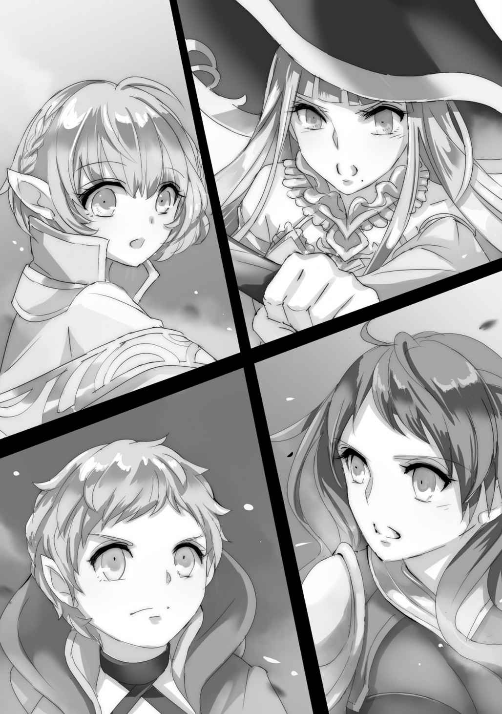

| 魔王の始め方3 魔王の始め方シリーズ (ビギニングノベルズ) | |
| III of魔王の始め方 | |
| 笑うヤカン | |
| (2015) | |
B017B252HK EBOK
※本作品の全部あるいは一部を無断で複製・転載・配信・送信したり、ホームページ上に転載することを禁止します。本作品の内容を無断で改変、改ざん等行うことも禁止します。また、有償・無償にかかわらず本作品を第三者に譲渡することはできません。
※本作品は電子書籍配信用に再編集しております。
目次
プロローグ
その部屋は、ダンジョンの最奥部。
それと知らなければ、熟練の盗賊さえ見つける事ができないほど精緻に作られた隠し扉の奥にあった。
ベッドが一台置かれただけの簡素な部屋は、それだけで一杯になってしまうほど小さい。
その小さなベッドの上に、更に小柄な少女が横たわっていた。
ひやりと冷やされた部屋の中で、その肌はむしろ熱いほどに熱を持っている。
手首を取れば脈があり、微かに上下する胸は呼吸を示している。
だがそれでも、彼女は、生きてはいなかった。
魂の入っていない肉体は、ただの物質にすぎない。
肉体が滅ぶ事のないよう、魔術で無理やり動かしているだけだ。
しかし、それにだって限りはある。
どれほど時を遅らせようと、主のいない肉体は徐々に滅びへと向かっていくのだ。
「ここにいたの」
不意にかけられた声に、迷宮の主、オウルは後ろを振り向いた。
声をかけたのは彼の忠実な使い魔、淫魔のリル。
彼女は主に何と声をかけるかしばし迷い......。
「全員、揃ったわよ」
結局、事務的に要件を告げた。
「今行く」
何事もなかったかのようにローブを翻し、オウルは遺骸を一瞥する事もなく部屋を出る。
リルも何も言わず、それに続いた。
暗闇に閉ざされた部屋の中、遺体──ユニスの肉体は、音も立てずにただ呼吸を続けた。
Ｓｔｅｐ．14 天に弓を引きましょう
１
宗教国家ラファニス。
その首都の更に中央に王宮の代わりに建っているのが、大陸中の教会を統括する僧侶達の大本山。メリザンド大神殿だ。
聖女メリアはその神殿の奥で毎日豊穣と平和の祈りを捧げ、表に出る事は滅多にない。代わりに、政治を担当しているのは『評議会』と呼ばれる集団で、実権のあるトップは存在せず、提案された政策は常に評議会の多数決によって可否が決定される。
癒着や汚職、不正などがあればそれは聖女によって見つけ出され、更迭される。これらの人事を決定する権利を持っているのは聖女のみであり、その決定は神託によってもたらされる。すなわち、間接的にではあるが神によって統治されている国。それが、宗教国家ラファニスである。
国中にその名を知られ慕われている聖女ではあったが、表舞台に上がる事は滅多にない。年に数度の人事異動と豊穣の儀式、そして数十年に一度の聖女の代替わりの儀式以外にはけして姿を現さなかった。
これは他国の侵攻や君主の訪問があった場合ですら同様で、いずれも聖女の代わりに評議会の人間が代役を受け持つ。人事異動や代替わりはいつ起こるのかは不定であり、また神殿内で執り行われるので一般の目に触れる事もない。
唯一日程が決まっており、一般市民達も聖女の姿を目にする事ができるのが毎年初春に行われる『豊穣の儀式』だ。
聖女は神衣を纏い、神殿の前にある祭壇の上で豊穣の舞を踊る。それはただの儀礼的なものではなく、神の力である『理力』を帯びたものだった。この儀式によってラファニスは実際に豊穣の祝福を受け、常に豊作に恵まれるのだ。
人々はその加護を受け田畑を耕し、富を築いてそれを聖女に、ひいては国へと返す。これが、ラファニスが大陸でも有数の大国になった秘訣だ。
そして今年も、その日がやってきた。
豊穣の儀式は一日がかりの大事だ。神殿の周りは青銀の鎧に包まれた聖騎士達がくまなく警護し、詰めかける市民や不心得者達から聖女を守る。
街は聖女を一目見ようとやってきた旅人達で賑わい、男はその美しさに見惚れ、女はかつて見た夢に想いを馳せる。次の聖女は神官の中から神託によって選ばれる。世界に教会は多くあり、僧侶は更に無数にいるが、その中でも神官になれるのはほんの一握り。
そして、その神官の中から聖女になれるのはたった一人だ。齢二十を越えた者が聖女に選ばれたためしはない。聖女に選ばれるのは常に、若い少女の中でも才能に優れ、見目麗しい者だった。
そして、およそ三十歳ほどになると次の聖女を選び、その任期を終える。
「メリア様、綺麗ね......」
例外なく美しい聖女達の中でも、今期のメリアは特に美しいと誉れ高い。齢は今年で二十四、花の妖精も女神すらも彼女の前では霞むと形容されるその容姿は、確かにアールヴのような妖精と比較してなお美しいものだった。
光をそのまま束ねたかのような純白の髪は足元に届くほど長く滑らかで、澄んだ瞳は紫水晶を削りだし、百年間に渡って磨き上げた宝珠のよう。唇は熟れた果実のように瑞々しく、手足はすらりと細く長い。その胸元には豊かな双丘が息付いていたが、劣情を抱く事が罪悪であると感じさせるような神秘的な美しさを湛えていた。
屈強で敬虔な聖騎士達が隙なくその周囲を守ってはいたが、彼女に手を出そうなどという不心得者はここ数十年一人たりとていない。祭りの雰囲気に羽目を外して泥酔した旅行客すら、その美しさの前には息を呑み、背を伸ばして居住まいを正すほどだ。
故に、その日は多くのラファニス国民によって、忘れる事のできない日となった。
突如として轟音が辺りに鳴り響き、聖女の乗っていた祭壇が砂埃に覆われる。
「何だ!? 一体何が起こった!?」
「くそっ、聖女様は無事か!?」
「誰か、風を起こせ！ この砂埃を消し飛ばすんだ！」
聖騎士達が血相を変えて祭壇へと殺到し、魔術師達が必死に風を起こし砂埃を払おうとする。無数の悲鳴と怒号が辺りに響き渡り、恐怖に慄いて逃げようとする者と、何が起こっているのか把握しようとする者、騒ぎを聞きつけ野次馬にやってくる旅行客で辺りは大混乱に陥った。
「穴だ！」
聖騎士の一人が叫ぶ。
「巨大な穴が空いている！ 縄を持ってこい、不用意に近付くと落ちるぞ！」
砂埃が晴れた後に姿を現したのは、祭壇全体を包み込むような巨大な穴だった。穴の底には僅かに祭壇の頭が顔を出しており、そこから横穴が見える。......聖女は、攫われたのだ。
「追うぞ！」
何人かの騎士が魔術で風を纏いながら、穴に飛び降りる。まだそれほど時間は経っていない。相手は聖女を連れているのだ、全力で駆ければまだ追いつけるはず。
そんな騎士達の思いは、ほんの数ヤード横穴を進んだところで脆くも崩れ去った。
坑道の天井が崩され、穴が塞がれていたのだ。逃走する際に崩していったのだろう。通れるように穴を掘るには、崩すのにかかる時間の何十倍も必要だ。追いつきようがない。
暗い坑道の中で、騎士達は己の不甲斐なさに膝を屈した。
「どうやら上手くいったようだな」
己の部屋の中でじっと瞑目していたオウルはぱちりと目を開いた。
「......で、何をしておる貴様らは」
遠隔地の形代から元の身体に戻ってみれば、彼の右腕をリルが、左腕をスピナが胸に抱きかかえ、膝の上にはマリーが乗っていた。
「んー、英気を養ってる？」
「それと領地の確保でしょうか」
「なんも、してない、です！」
娘達は口々に答えた。
「......お前達にはお前達で仕事があるはずだが？」
「大丈夫、問題ないよ。ほら」
ひょい、とリルとスピナは移し身を作ってみせる。どちらも形代ではなく、独立した思考と統一した意思を持つ、もう一人のリルとスピナだ。
半スライムとなったスピナは魔力さえあればほぼ無制限に増殖する事ができ、ラズの記憶と知識を思い出したリルは魔力で自分の身体を作り出す事ができる。これによって仕事の効率は大幅に改善していた。
ちなみにマリーにはそのような芸当は勿論できないが、元々何かの役に立っていたわけでもないので何ら問題ない。
「それにしても、いつの間にラファニスまでの坑道なんて掘ってたの？」
ラファニスの首都は遠い。馬車でも丸々一週間はかかる距離だ。いかに石と鉄の申し子であるコボルトやドヴェルグの鉱夫を揃えているとはいえ、一朝一夕に掘れる距離ではない。
「大体、コボルトが迷宮に巣を構え始めた頃からだな」
「滅茶苦茶前じゃん！ うちにエレンがきた頃だから......ええ、もう一年以上前!?」
リルは指折り数え、驚きを通り越して呆れる。
「そんな頃から、ラファニス攻める気満々だったんだ......」
「だから言っただろう、いずれは攻めるつもりであったと」
信じていなかったのか、とオウルはリルを睨んだ。
「時間もそうですが、精度の方が私には信じられません。コボルトならば、ピッタリと祭壇の真下まで穴を掘れるものなのですか？」
途中で坑道の存在を知られてしまうから、地上に穴を開けて確認するわけにはいかない。地下や国外ならばともかく、ラファニス国内には聖女の結界がくまなく張り巡らされている。そんな事をすれば一発でバレる。
「コボルトは確かに、坑道内でも絶対的な距離感と方向感覚を保てる。が、地上に何があるか窺う事まではできん。しかし、地上での距離がちゃんと把握できていれば、それにあわせて寸分違わず坑道を掘る事など朝飯前だ」
オウルは簡単に言ったが、リルとスピナにはそれはより困難なことのように思えた。
地上には山があり、森があり、河がある。
そんなものがなくとも些細な起伏があり、とても直線距離を測る事などできそうもない。
「そんな精度を持った地図なんてあるの？」
「あるぞ。龍脈を探るのに精密な地図が必要だったからな。地図技師に測量方法を習い、龍脈を探りながら地図を作った。足掛け二十五年がかりの大作だ」
「自作!?」
「恐らく俺以上に精密な地図を持つ者はおらんだろうな」
当然だ。並の人間であれば、二十五年かけた事業など、ほぼそれに人生を捧げたに等しい。
「今はフィグリアの周囲から各国の首都までしかないが、いずれは大陸全土の地図を作りたいものだ」
一年前どころか二十五年以上も前から、オウルはそんな事を考えていたのだ。
「......いつからこんな子に......いや、昔からなのか」
リルの脳裏には、ビッシリと書き込まれた予定帳を嬉しそうに広げるオウルの姿が浮かんだ。いつも仏頂面をしている今では表情に全く面影はないが、こういった部分はラズと暮らしていた頃から変わらないらしい。
「......届いたようだな」
転移してくる魔力の揺らぎを感じ、オウルは腰を上げる。いつの間にか眠っていたマリーがころんと転げて「むぎゅう」とくぐもった声をあげた。
「では、聖女の顔を拝みに行くとするか」
２
「聖女メリアよ。遠いところ、足労頂いたな。お初にお目にかかる。我が名はオウル。世に魔王と呼ばれている者だ」
「......私をどうしようというのですか？」
芝居がかった口調で慇懃に挨拶をするオウルに対し、メリアは騒ぎもせず、おびえもせず、平坦な口調でそう尋ねた。
「流石は聖女だな。肝が据わっておる」
両手足を拘束されたまま、身動ぎもしないメリアの髪を指で梳き、オウルは威圧するようにその顎を掴んだ。
「要求は単純だ。......法術の事を教えてもらいたい」
法術とは魔術と似てはいるものの、源流も体系も異にする技術の一つだ。
一般にも広く知られている魔術とは異なり、聖女のみがそれを語り継ぎ習得している。魔力とは異なり、『理力』と呼ばれる力を糧として扱うといわれている。
豊穣の儀式で使われている祈りや、国全体を包む結界はこの法術によるものだ。オウルにも、それが魔術でない事は理解できたが、具体的にどのようなものなのか、どう使用するものなのかは推し量る事ができなかった。
「できません」
きっぱりと、メリアはそう答えた。とは言え、オウルもその反応は予測済みだ。
「正直に言おう。手荒な方法で招きはしたが、こちらはラファニスと敵対する気はない。法術について教えてもらえれば、無事に国へと送り返し、二度と手は出さぬと誓おう。無論、法術を悪用するような事もせぬ。......失った大切なものを取り戻したい。ただ、それだけなのだ」
「できません」
切々と語るオウルに、メリアは表情一つ変えず悩む素振りさえ見せずそう答えた。
「......であれば、仕方がない。ラファニスへと攻め込み、奪い尽くすしか手がなくなる。自国が負けるわけはないと思っているのかも知れないが、こちらとてそれだけの準備はある。何より、勝とうが負けようが必ず少なからぬ犠牲は出る。それを未然に防ごうとは思わないのか？」
「それでも、法術を教える事はできません」
取りつく島もなく、メリアは答える。
オウルは睨むフリをしながら、メリアの様子を観察した。表情は全く変わらず、肌に汗もかいていない。視線も泳がず真っ直ぐ同じ場所を平静に見続け、声には震えもよどみもなく、指先をもぞもぞ動かすような事もない。
恐怖や動揺を押し隠しているならとんでもない演技力の持ち主だし、感じていないならその胆力は並大抵のものではない。何か奥の手を持っていたとしたって、人間というのはここまで平静を保てるものではない。
オウルはしばし黙り込み、彼女を何が支えているのかを考えた。人は、他人であれ自分であれ、何らかの支えを持たなければ真っ直ぐ立つ事はできない。それが何であるかは人それぞれだが、どんな人間だろうと必ずそれはある。
愛国心だろうか。それとも、正義感？ 自分が聖女である事の自負、或いは神への信仰......幾つか思いつくが、どれもメリアにはそぐわない気がした。
そういったものにすがっているにしては、メリアには揺らぎがない。なさすぎる。人知を超えた......それこそ、神のような鋼の精神を持っているとでもいうのだろうか？
......馬鹿馬鹿しい。オウルは首を振り、その考えを打ち消した。人をやめようが、英雄だろうが、永い時を生きようが、人は人である限りその心のあり方を変える事などできない。
「ならばその決断を、後悔してもらおう」
オウルはメリアの服を掴むと、びりびりと破り剥ぎ取った。陶磁のような白い肌に、桜色の頂点を持つ豊かな乳房、頭髪と同じ透き通った白色の淡い茂みと、その奥に隠された秘裂がオウルの目に晒される。それでもなお、メリアは顔色一つ変えず、眉一つ動かす事はなかった。ただじっと、オウルの様子を平静な瞳で見るだけだ。
「......スピナ」
「ここに」
闇の中から魔女が姿を現し、オウルに小瓶を渡す。中身は以前彼女が作り上げた媚薬スライムだ。ただし、媚薬の効果は以前の倍にしてある。
オウルが瓶を開けると、スライムはすぐさまメリアに纏わり付き、その身体に残った衣服を吸収して体積を増やしながら彼女の肌の上を這いずり回る。
「ん......」
ほどなくしてメリアの肌が上気し、彼女は小さく声をあげた。薬の類は効くらしい。当たり前と言えば当たり前なのだが、オウルはその結果に僅かに安堵した。
メリアは得体が知れない。法術という未知の技術を使う以上、ある程度予想外の事態は覚悟していたが、それ以上の違和感をオウルは感じていた。
十分に媚薬がメリアの身体に浸透した頃合を見計らい、オウルはスライムを瓶に戻して彼女をベッドの上に押し倒した。
「入れるぞ。覚悟はいいか？」
「......」
メリアの脚を掴み、オウルがいきり立つ一物を見せ付けても彼女の表情は変わらない。睨みすらせず、ただ無言でこちらを見つめ返す聖女に、オウルは遠慮なく突き入れた。
そこは媚薬の影響で濡れそぼってはいるものの固く閉じており、男を受け入れた事がないのは明らかだった。オウルは構わず、奥へと突き進む。ずんと勢いを突けて奥まで到達し、引き抜くと破瓜の血が愛液に混じり流れ出る。
「見よ。お前の純潔が失われた証左だ」
「......はい」
痛みに顔をしかめはするものの、彼女はあまり気にした様子もなくそう答えた。
「その余裕がいつまで続くか見ものだな」
オウルはメリアの胸を両手で円を描くように揉み込みながら言った。
「んっ......く......」
小さく声を漏らし、メリアは僅かに身動ぎする。媚薬がだいぶ効いてきたのか、その肌はうなじまで真っ赤に染まっている。
「んっ、はぁっ、あぁん......！」
オウルが指をクリトリスへと移動させると、メリアは一際高い声をあげた。
「どうやらここは自分で弄った事があるようだな」
「んっ......う、ふぁ......」
媚薬の効果で敏感になったそこを擦りながら、オウルは抽送を繰り返す。相手は全く経験のない処女だ。まずはとにかく一度快楽を覚えさせない事には話が進まない。
「聖女ともあろう者が、男を奥まで咥え込んでよだれを垂らして声をあげるとは。はしたないとは思わないのか？」
「ああぁ......んっ、ふ、ぅ......」
オウルが声をかけてもそれに応じる事なく、メリアは断続的に声をあげるばかりだ。発汗や愛液の分泌からして感じているのは確かなのだが、言葉への反応は全く感じられない。まるでオウルの声が聞こえていないかのようだった。やりにくい事この上ない。
オウルは言葉で揺さぶりをかけるのを諦め、肉体的な刺激に専念する事にした。ゆっくりと抽送を繰り返しながら、右手で淫核を攻め、左手で右胸を愛撫しながら口で左胸に吸い付く。
「んっ......んんんん～～～～っ！」
ぎゅっと眉根を寄せ、ふるふると身体を震わせながらメリアは気をやった。オウルは容赦せず、達したばかりの彼女の身体をひたすらに攻める。
「ああっ、あっ、んあぁっ！ あああああぁっ！」
メリアの声が徐々に高く大きくなり、彼女は背筋を反らして痙攣した。
「いくぞ、メリア......ッ！」
オウルは彼女の奥まで突き入れると、最奥に精を解き放つ。
「～～～～～～～ッ！」
もはや声もあげる事ができずぎゅっとベッドのシーツを握り締める彼女の膣内を擦り上げ、オウルはたっぷりと白濁の液を吐き出す。
絶頂の余韻にぐったりとするメリアの額に、オウルはぴたりと指を当てた。ここからが本番だ。
「メリアよ。ここから先は、絶頂に至る事を禁じる」
今まで崩れなかったメリアの表情に、疑問符が浮かぶ。
「どれほど快楽を得ようと、俺の許しがなければお前は気をやる事はできぬ」
呪力を帯びたその言葉は、暗示であると同時に呪いでもある。平時ならともかく、聖女といえど意識が朦朧とした状態でこれに抵抗する事は不可能だ。
「無限の快楽を、とくと味わうがいい」
オウルはメリアの身体をひっくり返すと、ベッドに押し付けるようにして背後から突き入れた。
「ああああああっ！」
達した後の敏感になった状態で刺激を与えられ、メリアは悲鳴をあげるかのように嬌声をあげた。
「どうした。この程度で声をあげていては、喉が潰れるぞ」
オウルはメリアの白い尻を抱えてぐりぐりと円を描くように腰を動かす。同時に指を震わせるように動かし、淫核を弾く。
「ああああああ、あああああっぁあぁぁっ......！」
メリアは尻を高く掲げて声をあげ、更に求めるように腰を振った。オウルはその動きに合わせ、ずんずんと奥へと突き入れる。
「あっ！ あっ！ あっ！ ふぁぁぁっ！」
一突きする度にメリアは高く鳴き、きゅうっと膣を縮めてオウルの一物を締め付けた。一度突かれるごとに彼女の快楽は一段、また一段と高まっていく。しかし、訪れるはずの絶頂はオウルの呪いによって押し留められ、かゆいところに手が届かぬようなもどかしさに彼女は気も狂わんばかりに鳴いた。
「あぁぁーっ！ あ、うぁぁぁっ！」
もはや鉄面皮は崩れ、ただただ飢える欲求のままに腰を振りたくる。
「ああぅっ、はぁぁ......も......っとぉ......」
ついにメリアは我慢ができなくなり、よだれを垂らし、胡乱な表情で振り向くと逆にオウルをベッドの上に押し倒した。
そして自らオウルの一物をその膣内に収めると、彼の胸に手を当てて滅茶苦茶に腰を振り、ひたすら恥丘を彼の股間に押し当てる。オウルはその光景を、彼女のたっぷりとした乳房を弄びながら意地悪く見守った。
「ああぁぁぁぁぁ、ぁああああぁぁぁあ......」
メリアの声はもはや獣じみた呻き声のようになり、その秘部からは噴水のように止めどなく愛液が溢れかえった。オウルが彼女の胸を一度揉む度にメリアは切なげに眉を寄せ、けして満たされぬ欲を求めて更に胸を押し付け、腰を振る。
「イカせて欲しいか？」
オウルがそう尋ねると、メリアはぶんぶんと首を縦に振った。彼女の瞳は情欲の炎が激しく燃え上がり、まるで何日も食事を取っていない犬のように爛々と光り輝いた。
「ならば、教えろ。貴様の知っている全てを」
「ああ、あぁぁぁ......わた、し、わたし、はぁぁ......」
もはや神聖さの欠片もなくなった発情しきった表情で、メリアは懸命に言葉を紡ぐ。
「聖女、じゃ、な」
そして、唐突に、糸の切れた人形のようにオウルの胸に突っ伏した。
「な......!?」
オウルは慌てて脈を取る。彼女の心臓は、完全に停止していた。まさか、何らかの病による発作か、とオウルは蘇生を試みる。
そして、愕然とした。
そこにあったのは一切の穢れのない、透明と評していいほど清らかな魂だった。
人間の魂というのは、生きていくうちに必ず汚れ濁っていく。
聖女というのであれば常人よりも澄んだ魂をしていても不思議ではないが、限度というものがあった。
ほんの一点の曇りもないメリアの魂は、断じて美しいなどと呼べるものではなく──
「ほう、こりゃできの良い紛い物だな」
ただの作り物にしか見えなかった。
「やはり、そうなのか」
いつの間にか横に立っていた赤い悪魔の言葉に、オウルは呻くように呟く。
「おうよ。このローガン様が人間の魂を見間違うわけねえだろ。たとえ作り物でも、それが生まれたばかりの幼女の魂となりゃあ尚更よ」
放つ言葉は軽薄そのものだが、数千年を生きた悪魔の言葉に間違いはない。
魂の穢れとはすなわち欲望だ。生まれたばかりの赤子でさえ、欲求は持っている。
それすらなく、何も望まず何も欲さぬとすれば、それはただの装置にすぎない。
メリアはまさしく、聖女という名の装置でしかなかったのだ。
人造人間や魔法生物を作るのとはわけが違う。
それらは知能を持たせる事はできても、魂は持たないのだ。魂そのものを作る事は魔術では不可能とされており、オウルにもできない。
それはとりもなおさず、メリアの他に法術を使える者がいるという事を表していた。
「......一筋縄ではいかぬ、という事か」
最後の最後。オウルによって与えられた肉欲を望み、ほんの僅かに曇ったメリアの魂を見つめて、オウルは呟く。
敵は、メリアより上にいる。そして、その相手は恐らくオウルととてもよく似ている。
すなわち、用心深く狡猾で、目的の為には手段を選ばない人間だ。
ラファニスで新しい『聖女』が発表されたのは、それから三日後の事だった。
３
「影の聖女。......裏聖女。真の聖女。......ううん。どうにも悪役といった趣が拭えないな。どう思う？」
白。白。白。
壁も、床も、天井も。
全てに至るまで白に塗り込められた白亜の城で、メリザンドは尋ねた。
「......大聖女でいいんじゃないですかね」
問われた男は、これも髪から衣服に至るまで白一色。
ただ一つ、両の瞳だけが赤く色づいていた。
「ふうむ。しかしだ、このなりで大聖女を名乗るというのもどうかな？」
メリザンドはその落ち着いた口調とは裏腹に、五、六歳にしか見えぬ容姿をしていた。
真っ直ぐ足首まで伸びた髪に、愛くるしい顔立ち。
メリアを幼くしたような美しい童女だったが、その瞳は理知的な輝きに満ち、表情はやけに大人びている。
「......まあ、ギャップがあるっていうのもそれはそれでいいんじゃないですか」
男は心底どうでもいい、といった調子でそう答えた。
「ギャップか......うむ、では大聖女メリザンドと名乗るとしようか」
「......楽しそうですね」
そう言う男に、メリザンドはピクリと眉を上げる。
「馬鹿を言うな、我が国数百年ぶりの危機だぞ。楽しんでなどいられるか」
楽しそうであるという事は否定しないんだな、と男は思うが、口には出さない。
「魔王オウル。よもやこんなにも早く攻め込んでくるとはな。それも地下からの奇襲とは恐れ入った」
「あの坑道辿ってぶっ殺してきたら早いんじゃないですか。なんなら俺いってきますよ」
軽い口調で言う男に、メリザンドは首を横に振る。
「驕るな、『不死身』。お前は不死だが、無敵ではない。舐めてかかると手痛い反撃を食らうぞ。相手はかのウォルフ王を下した相手だ」
「んじゃあ、何人か呼びます？」
「ああ」
メリザンドは頷き、パチンと指を鳴らした。
「既に、呼んだ」
その背後から、やはり白い衣服に白い髪の者達が六人、姿を現した。
「なっ......六人!? 全力でいくんですか!?」
『不死身』と呼ばれた男は目を見開き、大声をあげた。
自分を入れて七人。
それがメリザンドが使役できる英霊の最大数だ。
「今言っただろう。魔王は侮れる相手ではない。聖女も一人やられたのだぞ。......全力をもって叩き潰す」
メリザンドはニヤリと笑みを浮かべて言った。
長い付き合いで『不死身』はそれが、彼女が激怒している時の表情だと知っている。
彼女は楽しんでいたのではない。
楯突く者に、怒っていたのだ。
「『無明の騎士』」
スリットのない、全面を覆われた奇妙な兜をかぶった男が、一歩進み出て槍を掲げる。
「『跳ね駒』」
純白の鎧に全身を包んだ騎士が、メリザンドに跪く。
「『魔弾の射手』」
弓を持つ軽装の男が、うやうやしく礼をする。
「『鉛の英雄』」
武器を持たぬ大柄な男が、微動だにせず立つ。
「『炎髪の姫』」
小柄な少女が、無言で剣を掲げる。
「『竜殺し』」
豊かな髭を蓄えた男が、ゆっくりと腕を組む。
「そして、『不死身の男』。......以上、英霊七名。全員をもって、魔王を討伐する」
「新入りが三人、か。......ま、よろしく頼むよ」
『不死身』が気さくに笑いかける。
しかし、英霊達は反応しない。
英霊とはそういうものだ。自我を備えている『不死身』の方が例外といえる。
「そんで、どうするんです？ 一気に七人で攻め込みますか？」
一騎当千どころか、一人で万の敵も相手取れる元英雄達だ。七人もいればその戦力は師団どころか一つの軍に匹敵する。しかし、メリザンドは首を横に振った。
「まずは彼我の戦力を分析する。敵は魔王オウルとその配下の魔物達、そしてその属国の兵士達だ」
つかつかと英霊達の前を歩き回りながら、メリザンドはすらすらと述べ始めた。
「兵力はフィグリアの兵がおよそ一万、グランディエラの兵がおよそ十五万、ラーヴァナが五千、アルフハイムが三千......他の有象無象をあわせて二万と言ったところか。とはいえ、当然これらの兵を一度に全部動かせるわけではない。まあ攻勢に動かせるのは良くて半分だろうな。また、ほとんどは魔王に攻め入られ力で属国になった立場だ。錬度はともかくその士気はけして高くはない」
確認するように視線を向けるメリザンドに、はあ、と『不死身』は生返事をする。彼は従軍経験はないし、戦争にかかわった事もない。正直あまりピンとこなかった。
「それだけなら英霊を呼ぶまでもなく我が聖騎士団で幾らでも対処できる。が、問題は配下の魔物達だな。これはどのような種類が何匹いるか予測できん。また、聖女を攫った時のような坑道を通って進軍されるのも非常に困る。地下には結界を張れんからな」
「あー......そりゃマズいですね」
続く話は『不死身』にも理解できた。極端な話、この神殿内部に突然敵が万単位で攻め入ってくる可能性すらあるのだ。かなりの広さを持つ巨大な建物ではあるが、乱戦で確実に聖女を守れると断言するのは少しばかり苦しい。
「そして最も厄介なのが魔王オウルだ。慎重で狡猾、目的の為には手段を選ばぬ」
「......どこかで聞いた事があるフレーズですね」
「そうだな。私もそう思うよ。かの者は、私によく似ている」
素直に肯定され、『不死身』は背筋を正した。
「なるほど。そんじゃあ本気でやらないとヤバいですね」
「......褒め言葉と受け取っておこう。厄介なのは奴が常に形代を使い、本体は表に姿を現さぬという事だ。恐らく本体は迷宮奥深くに潜んでいるのであろうが、この迷宮というのがまた曲者でな。攻めるに難く、守るに易いの究極形のようなものだ」
「山に囲まれてるどころか、壁に囲まれてますもんねえ」
「......今お前、自分一人でなら十分攻略できるな、と思っただろう」
のんびり答える『不死身』に、メリザンドは鋭い視線を投げかける。
「あ、バレました？ でも実際そうじゃないですか？」
『不死身』はその二つ名の示す通り、ほぼ『不死身』だ。首を刎ねられようがぐちゃぐちゃに磨り潰されようがけして死ぬことはない。敵がどれだけいようが彼には関係ない。ゆっくりもぐって魔王を殺しに行けばいいだけだ、と彼は思った。
「這い上がれぬほど深い落とし穴。何もかも溶かすスライム。土の中深くや溶岩地帯に転移する罠。身動きを完全に封じる強力な呪い。精神に影響する類の魔術。私が今ざっと考えただけでもお前を無力化できる方法はこのくらいはあるが？」
「すんません調子乗ってましたー！」
『不死身』はあっさりと前言を翻し頭を下げた。
彼は不死身ではあるが無敵ではない。
それをしばしば忘れるのが欠点だと、メリザンドは日頃から口をすっぱくして言っているがそれはあまり実を結んではいなかった。
「恐らくその幾つかは迷宮内に実際に仕掛けられているだろう。英霊といえど易々と突破できるとは限らん。もし英霊を失えば、軍対軍で正面突破される可能性もある」
「それは......」
考えすぎじゃないですかね、と言いかけ、『不死身』は言葉を飲み込む。
これ以上主人に軽率な人間という印象を与えるのがはばかられた。
勿論それはとうの昔に手遅れではあったが。
「敵の全勢力が未知数である限りは、予断は許されん。常に最悪の事態を想定して行動する必要がある」
『不死身』の言わんとするところを理解し、メリザンドはそう言った。
「しかし、迷宮を単身で攻略するのもダメ、かといって相手の進軍を待ってたら直接神殿に攻め込まれる可能性があるからダメ、となるとどうするんで？ こっちから軍を出して攻め込みます？」
「それも悪くはないが、もう少しいい手がある」
そう言い、悪戯っぽい笑みを浮かべるメリザンドに、『不死身』は嫌な予感を覚えた。
４
「全力で挑むなど、愚の骨頂だ」
端的に、オウルはそう述べた。
「敵の力は未知数。だからこそ、こちらから先に手の内を晒す事などできん。こちらの利点はこのダンジョンの防衛能力と、その中にいる魔物達だ。初手から全力で攻めるのはその利点を全て潰すようなものだな」
相手を軽んじているわけではなく、むしろ最大限警戒しているが故に、全軍を出す事などできない。それが、オウルの論じた戦略方針だった。
「そうは言っても、戦力を出し惜しんで勝てる相手じゃないんじゃないの？」
リルの問いに、オウルは首を横に振る。
「そもそも正面から勝つ必要などない。攻めてきた時に負けなければそれでいい。要は相手の『核』を取れば良いだけだ」
聖女メリアは何の情報も残さず死んでいった。しかし、その事実こそがオウルにその裏にいる存在を感じさせた。裏にいるのは組織や集団ではない。狡猾で堅固な意思を持った一人だ。その何者かを倒せば、オウルの勝ちとなる。
「しかし、その『核』がどこにいるのかはわからないのではないでしょうか」
スピナの問いに、オウルは再び首を横に振る。
「いや、十中八九『核』がいるのはメリザンド大神殿だ」
「......そんなわかりやすい場所にいるでしょうか？」
「では聞くが、そのような事が可能だとして......ダンジョンコアを、迷宮外のどこか辺鄙なところに置こうという気になるか？」
オウルの言葉に、リルとスピナはすんなり納得した。ダンジョンコアは文字通りオウルの命そのものだ。魔力を蓄える為にダンジョンの中になければならないが、そうでなくとも他の場所に置いておく気にはなれない。
「確かに別の場所に置けば、不意はつけるかも知れん。が、万が一ばれた時はどうする？ そんな場所では守りきれん。かといって、普段から十分な防備を置けばあっという間に発覚する。だったら、最大限守りやすい場所に置くのが当然だ。そもそも『核』の存在自体が秘匿されているのだしな」
その辺りの事情はオウルのダンジョンコアも同様だ。何通りもの方法を考え尽くした上で決定した事なのだから、まず間違いはない。
「だから問題は、敵の兵力ではなく戦力。英霊と天使をどの程度まで扱えるのか、という話だ」
ラファニスが攻められたのはもっとも最近でも、もう数百年前の話だ。どの程度の戦力を保有しているかという資料はほとんど残っていないし、現在も同じであるという保証もない。しかし天の力を操れるという事は、数十年に一度の聖女の代替わりの儀式で確認される。
英霊と天使が、新しい聖女を祝福にやってくるのだ。
それはただの儀礼ではなく、周囲の国に対する牽制でもある。
オウルも過去、実際に見に行った経験があった。それが幻影などではなく紛れもない本物であると自分の目と魔術とで確認している。
「天使......私が食べる事はできないでしょうか？」
ぐにゃりと身体を揺らめかせ、スピナが言う。
「いや、無理だろうな。あれは魔力ではなく理力でできている」
「......理力とは、結局何なのですか？」
それさえわかれば、それを食べるスライムを作ってみせる、と言わんばかりの表情でスピナは尋ねた。
「魔力は理を捻じ曲げ、世界を改変する力。理力はその正反対。理を促し、世界を形作る力......当たり前の事を、当たり前にする力だといわれているな」
「当たり前の事を当たり前に......ですか」
ぴんと来ない説明に鸚鵡返しに呟くスピナに、オウルは頷く。
「俺も法術を使えるわけではないから、漠然とした答えしか返せぬがな。例えば物が地面に落ちるように、子が成長し大人になり、やがて老い死ぬように。魔術はそういった理を捻じ曲げ、物を宙に浮かせ、老人を若返らせる」
目の前にある実例に、スピナは頷く。しかし、そうであれば法術とは一体何をするものなのか？ 法術を使わずとも、当たり前の事は当たり前に起こる。それは術ではなく、ただの法則だ。
「魔力の多くが地中に存在するように、理力の多くは空中......空に存在する、とは言われてはいるが、実際のところはよくわからん」
「空ねぇ......じゃあ、太陽が動くのも法術のせいって事？」
「流石にそんな大規模な法術は人の扱う範疇ではないだろう。......が、太陽は昔から神の力の象徴として見られる事も多い。理力が空に満ちると言われているのもそのせいかも知れんな」
リルの言葉に、考え込むように吐き出されるオウルの台詞が、スピナの思考の片隅に引っ掛かる。何かを思いつきそうで思いつかない、もどかしい感覚が彼女を包み込んだ。
「いずれにせよ、天使は悪魔と似たようなものだからともかくとして、厄介なのはやはり英霊だ」
英雄とは、英霊になる為に生まれた存在だ。悪魔が人間と契約を行い、魂を集めて戦力を増やすのと同様に、天使達は人間を英雄として祭り上げ、生きているうちにその魂を磨かせて、死後その魂を英霊として天に召し上げる。
悪魔達は質より量を選び、天使達は量より質を選んだ。細かい差はあれど、どちらも人間を食い物にしている事には変わりない。
「ユニスと同等以上の戦力かあ......」
リルは彼女が迷宮を攻めてきた時の鮮烈な印象を思い出し、身を震わせる。あれほどの強さを持った者達が何人もいるなど、想像したくもない。
「一度に何人の英霊を使役できるかはわからんが......五人以上いるなら、負けるだろうな」
そうでない事をオウルは祈った。
「準備はいいか？」
暗く狭い坑道の中、オウルは問うた。
「うん、オッケー」
「この身滅ぶまで、どこまでもお師匠様についてまいります」
リルが軽く答え、スピナが重く答える。
両極端な二人の反応に苦笑しつつも、オウルは居住まいを正し、声を張り上げる。
「では皆のもの、心してかかれ！ 敵は喜びと平穏に満ち、幸福と愛情の歌をうたう鼻持ちならない天の遣いどもだ。奪い、穢し、踏み躙れ！ 奴らの家のドアにその臓物を飾り立て、首を晒して火をかけてやるのだ！」
魔術で拡大された声が坑道内に鳴り響き、野蛮な亜人達が一斉に声を張り上げる。ゴブリン、コボルト、ドヴェルグ、巨人達。腕力を頼りにし、穴掘りを得意とする全ての部下をオウルはここに集めていた。
「行くぞ......『加速』だ！」
リルとスピナの魔力を取り込み、オウルは魔術を行使する。それは亜人達の筋力を増大させ、彼らの動きは文字通り加速した。
まるで人が歩くかのような速度で岩盤が掘られ、柱と梁が立てられ、坑道が延びていく。粉砕され、掘られた土砂は無数のインプ達が瞬く間に運び消し去る。
大神殿の真下まで坑道を掘り進め、そこに転送陣を描く事ができればオウルの勝利はほとんど確定的なものになる。本丸の真横に敵の湧く穴を作られて、落ちぬ城などない。
「でも、流石に地下は警戒してるんじゃない？」
「だろうな」
つい先だって聖女を攫ったばかりなのだ。
地下から来る事さえわかっていれば、幾らでも感知のしようがある。間違いなく、敵は何らかの手段で地下を守っているはずだ。
だからこそ、オウルはそこを突破すると決めた。
『何より安全だから』だ。
恐らく敵は前回の坑道から掘り進むか、その途中から横道を作って侵攻する事を考慮しているだろう。であれば、警戒するのは『面』。祭壇の真下の坑道から大神殿の間の面を警戒し、それ以上中に侵入されないよう考慮しているはずだ。
それ以上の範囲を警戒するのは現実的ではない。何せ、その面でさえ『深さ』という問題があるのだ。あまりにも深い場所までは魔術であろうが法術であろうが影響が届かない。
しかし、オウルが今掘っているのはその思考の範疇外。既に位置的には神殿の真下だった。そこから螺旋を描くようにゆっくりと上に進みつつ、オウル達は神殿を目指しているところだ。
その場所は、聖女を攫うよりも前に掘り、陣を描いていた場所だった。元より聖女の拉致が上手くいかなかった時の保険に襲撃用の坑道も掘っていたのだ。
入り口を念入りに埋め、万が一にも存在を知られないよう深くに埋没させたのでここから直接攻め入るわけにはいかないが、攻め入る布石の一つ、『地中の砦』とでも言うべき一室だ。
「魔術師さんよ！ そろそろ抜けるぞ！」
ドヴェルグの張り上げる声に、オウルは眉をひそめた。
「何だと？ おかしいぞ。地上までまだ百ヤードはあるはずだ」
オウルには地中での絶対的な距離感などないので目算でしかないが、流石に百ヤードもの距離を間違える事はない。
「それはそうなんだがなぁ、この音は薄い壁を掘る音だ。天然の洞窟でもあるのかも知れんな」
「洞窟か......」
それは少々歓迎できない事態だ。地上までギッシリ土が詰まっているなら真っ直ぐ坑道を掘って進めるが、間に洞窟があるとなると迂回するか階段を作らなくてはならない。どちらもかなりの時間のロスになるし、迂回するとなれば敵の警戒網に引っ掛かる可能性も高くなる。
「とにかく見てみぬ事にはどうにもならん。水音はしないな？」
「ああ、そりゃ平気だ。じゃあ、ぶち抜いちまうぜ」
地中を掘る際に最も気をつけなければならないのが、水......すなわち地下水脈だ。特に今のように上方に掘っている場合、掘削部隊が全滅しかねない。
しかし、掘った先に待ち受けていたのは地下水脈など比べ物にならないほど厄介なものだった。
「な......」
天井を打ち崩し、降り注ぐまぶしい光にドヴェルグ達は顔をしかめる。そこはまだ地上ではないはずなのに、その空間は光に満ち満ちていたのだ。
そして、その光の正体を目の当たりにし、彼らは唖然とした。
掘り当てたのは、洞窟は洞窟でも、自然のものではなかった。鍾乳石や風化した石の断面などが存在しない事から、それが人工的に作られた空間である事が一目でわかる。
そして、そこには無数の天使達が待ち構えていたのだ。
そこから先は、大虐殺だった。その身に高貴な輝きを纏い、金の髪と白い鳥の翼を持つ美しい天使達は一斉に亜人達に殺到し、手に持つ剣で斬りかかった。鉱夫達とてただの労働者ではない。一人一人が戦士でもある。
しかし、坑道を掘る為にろくに武装もしていなかった彼らが天使達に敵うわけもなく、また狭い坑道で数を生かす事もできず、一人一人なますぎりにされていった。
その様子を見やりながら、『不死身』はふうと嘆息する。その首ったまにはタオルがかけられ、手にはつるはし、白い衣装は土にまみれ汚れていた。
「まずは初戦快勝、ってトコかね。しっかしうちのボスにも参ったもんだ。どこの世界に、英霊に土木工事やらせる聖女がいるってんだ」
英霊の力をもってすればこの程度の洞窟、一昼夜もあれば十分だろう？
そう笑みを見せた上司を思い出し、『不死身』は苦笑を浮かべた。
５
「......やられたな」
目を開けるなり、オウルは舌打ちした。ごうごうと耳を打つ音に、視線の先で揺れる幌。そこは馬車の中だった。予定通りならそろそろ目的地に到着する頃合のはずだ。
「お帰りなさいませ、お師匠様」
オウルの身体を抱きかかえていたスピナの声が、オウルの耳元をくすぐる。彼女もまた、分身から地下の侵攻部隊が全滅している事を感じ取っていた。
「こっちの状況はどうだ？」
「もうすぐつくよー」
御者台でリルが声をあげる。あれほどまでにあっさりと負けるとは、流石にオウルも予想外だった。真下からの侵攻が予期されていたのはまだともかくとして、それを迎え撃つ為に巨大な空洞を掘り、天使を満載して迎え撃つとは敵もなかなかに飛んだ頭をしている。
「どしたの？」
「......いや。馬がなくとも馬車と言うのか、と思ってな」
御者台に座るリルの横から顔を出し、オウルは呟くように言った。その視線の先には地面ではなく、遠くに見える広大な森があった。
この馬車は、空を飛んでいるのだ。
「あー......そうだね。そういや馬つけてないね、忘れてた」
御者台に座るリルが握っているのは、手綱ではなく操縦桿だった。彼女作のこの『空飛ぶ馬車』は十人ほどの人間を運び宙を飛ぶ兵器の一種だ。運搬以外には特別な能力を有してはいないし速度も飛竜に比べればかなり遅い。
しかし、地形を無視して大量に人員を輸送できる事と、作るのが比較的容易で数を揃えられる事が何よりも優れている点だった。オウル達の乗っている馬車を先頭にして、その背後にはおよそ五百台。五千の兵が乗っている。
これで関も砦も飛び越え、直接首都を狙う算段だ。地下の侵攻とは互いに陽動であり、互いに本命。どちらかが潰されれば、どちらかで奇襲をかける。その手筈だったのだが、地下側が予想外に早く潰された形だ。
とはいえ、奇襲そのものが失敗に終わったわけではない。地下に防衛を回した分、地上は手薄になっているはずだし、時間稼ぎは成功した。
「いくぞ......一気に攻め込め！」
眼下に見えてきた首都の門を見下ろし、オウルは号令をかけた。
「遅いぞ、たわけ」
「無茶いわんでくださいよ、こっちは酷い目にあったっていうのに」
土にまみれ、ボロボロになった格好で『不死身』はぼやいた。
「......どうした？」
問うメリザンドに、『不死身』は「どうもこうもないですよ」とため息を吐く。
「倒したと思った瞬間、敵が見事に大爆発。坑道ごと埋まって天使どもは大半圧死ですよ。俺も不死身じゃなきゃ死んでました」
咄嗟の判断で天使を盾に僅かな空洞を確保できたのと、つるはしを持っていたのが不幸中の幸いだった。そうでなければ、そのまま全身土に埋まって身動きが取れなくなっていただろう。
「やはり一筋縄ではいかぬ相手だな。見よ」
メリザンドは神殿のバルコニーから空を指差す。そこに浮かぶのは五百台の『空飛ぶ馬車』だ。
「どうやら魔王オウルの軍勢のようだな。よもや、あのようなものを持っていたとはな。呪具......いや、魔兵器とでも呼ぼうか」
「いや名前はなんでもいーんですけど」
相変わらず妙なところにこだわるメリザンドに呆れた声でそう言い、『不死身』は空を見上げた。
「アレ、結構ヤバくないですか」
「そうだな。結構ヤバい」
メリザンドは素直に頷く。
「フィグリアからここまではかなりの距離がある。転移するにもそう量は呼べぬだろうから、正面からの攻撃はないと踏んでいたのだが......」
難しい表情でメリザンドは唸った。
あの天駆ける馬車であればかなりの量の兵を運ぶ事ができる。それ以上に、空を取るというのはかなりのアドバンテージだ。数以上に強敵と見なければならないだろう。
「まあ、予想はしていなかったとはいえ」
メリザンドはくいと紐を引き、早鐘を鳴らした。その鐘の音に、がらがらと音を立て巨大な塔が幾つも立ち上がった。
「準備しておかぬ理由にはなりはしないがな」
兵達は塔の上にずらりと並び弓を構える。
「相手はわざわざ大きな的を用意してくれた。ありがたく、射落とせ」
「あんな塔まで用意しているとはな......」
首都をぐるりと囲む壁に建てられた巨大な塔に目をやり、オウルは呟く。それは上から矢を射掛けたり城壁を越えるのに使う櫓のようにも見えるが、そういった目的のものよりも更に大きい。上空から攻撃する戦術を取るオウルへの対処である事は明らかだった。
塔の最上部に備え付けられた石弓や投石器から、次々に矢弾が放たれる。オウルは馬車の高度を上げてそれをかわすが、これ以上近付く事はできない。幾ら上空を取っているとはいえ、弓矢はまだ届かない距離だ。
「ラズはさ......」
遠くを見つめるような眼差しで、リルは言った。
「オウルに会うまで、兵器を作る事を何とも思っていなかった。ただただ研究が楽しくて、より効率よく、より効果的に人を殺す武器を作り出す事を求めていた」
馬車に乗せられた袋から、リルは鈍く光る鉄の塊を取り出す。
「それがどういう事なのか、何を意味するのかまではわかってなかった。知らなかった。でも、オウルと会って、戦争がどういうものなのか......自分が何を作っているのかを理解して......兵器作りをやめたんだ」
そしてそれを外に向けると、躊躇いなく引き金を引いた。
「でもわたしは悪魔だからそんなの全然気にしませーん」
「色々台無しだな、お前は」
リルの発砲に応じて、味方の軍勢が次々に射撃を始める。鉄でできた筒のようなその兵器は、『石火矢』と名付けられた砲だ。
筒の内部で小さな爆発を起こす事で、こぶし大の弾丸を放つ構造になっている。
構造上、巨大で取り回しが悪く移動しながら使う事はほぼ不可能。命中精度もさほど良くはないし、連射も利かない。しかし、それを補って余りある利点が幾つもあった。
一つ目は、威力。
投石器で放つような弾を、矢の如き速さで発射する事ができる。
その威力たるや凄まじく、金属鎧を着ている騎士であろうと有効射程内であれば一撃で半身を吹き飛ばす。弾丸を鉛にすれば、防御魔術ですら全く効果がない。
二つ目は、扱いやすさ。
弓矢や投石器のように高い錬度は必要とせず、数日の簡単な訓練で誰にでも使用できる。
そして三つ目が、その射程の長さだ。
個人で携行可能な兵器でありながら、その射程距離は投石機や石弓といった大型兵器と対等の射程距離を誇る。
今のように上空から撃てば、そういった兵器に対してさえ一方的に攻撃する事ができた。魔女と呼ばれたラズの知識を、悪魔であるリルが遺憾なく振るった結果がこれだ。
塔の上で兵器を操作する兵達は石火矢の弾で次々と倒れ、塔から落ちていく。次々に塔を撃破して快哉を叫ぶ後続の兵士達とは裏腹に、リルは怪訝そうに眉を寄せた。
「おかしい......どういう事？」
「どうした？」
リルは石火矢を構え、引き金を引く。狙い違わずその弾丸は塔に直撃し、木片を飛び散らせた。
「......倒れない」
しかし、塔は崩れる事なくその場に立ち続ける。リルの計算では、こういった類の塔でも二、三発も打ち込んでやれば根元から破壊できるはずだった。
「普通のものより大きいから、その分強度にも優れている......というわけでは、なさそうだな」
オウルの言葉にリルはこくりと頷く。派手に飛んだ木片は、言うなれば盾のようなものだ。塔の自立自体には直接影響のないよう、わざと壊れやすくできている。
既に塔の大半は上部の兵器を破壊され、弓兵達も満身創痍。
兵器としての役割はほとんど失っている。
そんなものに、なるべく壊されにくいような細工がしてある......。
「いけない、全軍、反転......」
リルが言い切る前に、白く輝く影が塔の中から無数に飛び出した。
兵達が慌てて石火矢をそれに向けて放つが、塔の中から勢いをつけ真っ直ぐに上空を目指すその姿には一発も当たる事がなかった。
「やられた......！ 最初からこれが目的だったってわけ!?」
塔の中から舞いあがったのは無数の天使達。その手には弓矢を携えていた。
この近距離で出てこられては、回避も迎撃もできない。
あの塔は攻撃の為ではなく、天使達の姿を隠し守る為に存在していたのだ。
「まずい、どうしようオウル！ 上をとられた！」
狼狽し、リルは隣のオウルに助けを求めた。
空を飛ぶ馬車の陣形は、同士討ちを防ぐ為に前列ほど上方に位置するようになっている。
そうすれば、斜め下方を狙えば前の味方に誤って石火矢を当ててしまう事はないからだ。
しかし、相手が上方にいてはその布陣がかえって仇となった。
敵を撃とうとすれば、味方に当たってしまうのだ。
仕方なく前列にいる者達だけが石火矢を放つが、そうなると今度は数が足りない。
低い命中精度を射撃数で補っていただけに、天使達はこちらを嘲笑うかのように弾丸を空中でひらひらと避けてみせた。
逆に天使達が放つ矢は馬車を的確に貫き、次々と射落としていく。オウルは魔術による障壁を張り、辛うじてその射撃を止めるが味方軍の馬車までは守りきれない。それぞれの馬車には石火矢を扱う砲兵の他にも魔術兵が乗っているはずだが、天使達の放つ矢はその防護を軽々と突き破るほどの威力を備えていた。
「オウル、反転の指示を！」
「駄目だ。今ここで横腹を晒したりすれば、それこそ全滅する」
馬車の欠点は、小回りが利かない事だ。全軍すぐさまその場で後退、というわけにはいかない。大きく弧を描いて反転するしかないが、敵軍はそれを許してくれそうもない。
「とはいえ、このままでは......お師匠様」
せめてオウルだけでも守ろうと身構えるスピナ。その視線の先で、天使が一体墜落した。
石火矢の弾に偶然当たる間の抜けた天使でもいたのだろうか、と目を見張る彼女の前で、一体、また一体と天使達が落ちていく。
「これは、一体......？」
思わずリルとスピナは馬車の外に顔を出し、周りを確認する。
その視線の先に浮かぶのは、数十匹の飛竜と、放たれる無数の矢。
「ようやく来たか」
オウルが、ニヤリと笑みを浮かべる。
「......黒の氏族、エレン。恩義によりて、助太刀に参った！」
懐かしい声が、天空に響き渡った。
６
「ようやく......って、来るの知ってたの!?」
「当然だ。こんな寡兵で勝てる相手ではないのは元々わかっていた事なのだからな」
外で、飛竜に乗ったミオとエレンが並んで手を振る。それに手を振り返しながら、リルはオウルに詰め寄った。
「先に言っておきなさいよ!!」
「敵を騙すにはまず味方から、と言うだろう？」
エレンとミオの名は、思っている以上に広まっている。手足のように飛竜を駆る乙女と、雨のように矢を降らす黒アールヴの美女。魔王の竜騎兵部隊と言えば、ちょっとした叙事詩にもなるほどの知名度を持ち、オウルの持つ軍の主力として認識されていた。
それが故に、オウルは彼女達を迷宮から出したのだ。リルにすら知らせぬ密命を持たせて。
「はーっはっはっは！ 我が弓をとくと見よ！ 私の兵力は五万三千だッ！」
「......ノリノリだね、エレン......あの子、戦いになるとキャラ変わるよね？」
「というか、どう見ても五万三千もいないのですが」
哄笑をあげながら矢を雨と降らせるエレンに、冷静にリルとスピナは突っ込んだ。彼女らが駆る飛竜達は目算で数十。いずれもオウルの迷宮に棲みついたものではなく、ミオが自力で従えた野性の飛竜なのだろう。
「恐らく、五十三人いるのだろうな。一騎当千で五万三千だ」
オウルがエレン達に与えた密命。それは、黒アールヴの残党の探索と、魔獣の戦力の確保だった。白アールヴ達がオウルの支配下に収まった今、彼らに敵対する者はいない。大手を振って仲間を探す事ができる。
また、ミオも放っておいても魔獣達が集まってくるオウルの迷宮で世話をしているより、外に出て魔獣を捕らえた方が戦力の増加を図る事ができる。
戦力の隠匿と増強。その二つを見込んで、オウルは彼女達を迷宮から手放した。時が来るまで待て、と、迷うミオを説得して。
そして今、その時が来たのだ。
翼を持ち宙を舞う天使達ではあったが、巨大で力強い飛竜の飛行速度にはとても敵うものではない。それは地上で言うならば、歩兵と騎兵の戦いだ。しかもこの騎兵は自在に無数の矢を放つときている。
天使達は見る間にその数を減じていった。
「オウル、あれさ......」
「ああ、わかっている」
リルの言葉に、オウルは頷く。数だけはいるが、あれは天使の中でも下級から中級程度。悪魔で言えばガーゴイルやヘルハウンドと同等程度の力しか持っていない。敵はまだ主力を繰り出してはいないという事だ。
「準備しておけ。行くぞ」
「こりゃあマズいな......」
ハラハラと落ちては消えていく天使達を見やり、『不死身』は呟く。メリザンドとは千年以上に渡る長い付き合いだが、戦略においてここまで彼女が追い詰められる様を彼は初めて目の当たりにしていた。
「マズい？ 何がマズいというんだ？」
しかしメリザンドは、それに笑みをもって答えた。
「『無明』よ、他に敵の援軍は？」
「......ありません」
視界を確保するスリットのない、卵のような形の兜の中で『無明の騎士』はくぐもった声で答えた。盲目である彼の目は何も映す事はない。しかし、千里を見通し、ありとあらゆる隠された物を暴き出す事ができた。
「ならばこれで詰みだ。まずはあの小うるさい射手を黙らせろ、『魔弾』」
「仰せのままに」
羽帽子を被った男が優雅に一礼し、弓に矢を番え、ひょうと矢を放つ。
「次。『竜殺し』、『鉛』」
屈強な肉体を持つ二人の大男が並び立つ。
『竜殺し』は遥か上空を飛ぶ飛竜達を見据え、剣を引き抜いた。そして横薙ぎに剣を振るう。
「落ちろ」
『鉛』が手をかざし、力を込めて呟いた。
「よし。では最後だ。『跳ね駒』、『炎髪』。止めを刺してこい」
頷き、全身を甲冑に包んだ騎士が小柄な少女を抱きかかえ、『跳ぶ』。
彼らの姿は瞬時にして掻き消えた。
「これで王手。......概ね予定通りだな」
メリザンドの呟きと共に──
オウルの軍は、一瞬にして瓦解した。
「ご無事ですか、お師匠様」
オウルが目を見開くと、目の前にスピナの顔があった。その首から下は半透明の粘液と化し、オウルを包み込んでいる。どうやら咄嗟に、落下の衝撃から守ってくれたらしい。
「......一体、何が起こった......？」
まず、雨あられとばかりに降らせていたエレン達の矢が撃ち落とされた。防がれたならまだわかる。しかし、同じ矢で撃ち落とされたのだ。高速で空中を飛ぶ矢を射るのが、どれほどの神業をもってすればなせるのか、オウルには想像もつかない。ましてや数百もの矢を同時に射落とすなど、考えもしなかった事だ。
未曾有の攻撃に混乱に陥るオウル達を、更なる衝撃が襲った。突然、飛竜達が残らず真っ二つに両断されたのだ。
飛竜はいわゆる『ドラゴン』、ましてや最後の竜メトゥスなどとは比べるべくもない。竜の眷族の中でも末端に位置する、弱く知性にも乏しい存在だ。が、それでも世界で最強の種族、竜種である事には変わりがない。
並みの魔獣などよりも遥かに強く、その鱗は生半可な剣士の剣など受け付けない。ましてや、それを両断するなどいかなる剣士にも魔術師にも不可能だ。......それを姿さえ見せず、数十まとめて両断するなど。
そしてそれと同時に起こったのが、空飛ぶ馬車の異常だ。奇妙な風が駆け抜けたかと思えば、突然馬車はその動作を止め、ただの木でできた箱へと成り下がった。当然馬車は落下を始め、兵達の棺桶となった。
「主殿。先ほどのは、一体......？」
軽い擦り傷を作りながらも、エレンが姿を現す。その後ろには、ミオと配下達も一緒だ。全員軽い傷を負ってはいるものの、アールヴ達には重傷以上の者はいないようだった。
「エレン、無事だったか」
「ええ、下が森だったのが幸いしました」
アールヴは森の精を起源とする種族だ。弓の腕を披露する事が多いが、その魔術の腕前も捨てたものではない。落下しながら木々の木の葉やツタを操り、網を作って衝撃を和らげるくらいの事は軽々としてのけた。
「久しぶり、エレン、ミオ。再会を喜びたいところだけど、そんな状況じゃないみたい。......兵の方はやっぱり全滅よ、ご主人様」
いつになく切羽詰まった表情で、リルがオウルの下へと戻ってくる。落ちた馬車を見て回ってきたが、やはり彼ら以外に生存者はいないようだった。
「......先ほどの攻撃がなんなのかは全くわからん。が、わからんという事は、恐らくは英霊の仕業だろう」
矢を撃ち落とした者、竜を落とした者、馬車を落とした者。それぞれ方法が全く違うからには、それぞれ別の英霊の仕業だと考えるのが自然だ。
英霊が五人以上いれば負ける。決戦の前にオウルはそう言った。敗北が決定するまで、あと二人だ。
「いずれにせよ、馬車も兵も落ち、これ以上の援軍もない。ひとまず迷宮に戻り、態勢を立て直すぞ」
オウルは魔法陣を描くと、リルとスピナの魔力を使い転移を行う。
誰もいなくなったその場所に、二つの影が姿を現した。
そのうちの一つ、『跳ね駒』はその場に残る魔力の残り香を掴み取ると、再び『炎髪』を抱え、跳躍した。
それは今までで一番の奇襲だった。
けたたましく鳴り響く警報の音と、己が身を焼く凄まじい痛み。形代を操り、人間としての苦痛とは無縁のはずのオウルの全身が酷く痛み、彼を苛んだ。ダンジョンコアが攻撃されている証拠だ。
「一体、何事だ......!?」
オウルが部屋を出ると、目の前は紅蓮の炎に包まれていた。
迷宮が、燃えている。燃えるはずのない石壁が、床が、天井が、何もかもが炎を噴き上げ、燃え上がっていた。
「敵襲だと......!?」
以前スピナが地中から攻めてきた時でさえ、時間的余裕はまだあった。どんな方法を取ったとしても、迷宮に侵入されれば対応できるだけの時間を稼げる準備がしてあったのだ。
こんな事は、ありえない。......しかしそれを言うならば、先の敗北もありえない、理解しがたいものだった。すなわち、この襲撃も、石を焼き鉄を燃やすこの炎も、英霊の仕業と見て間違いない。
燃え盛る炎の中、オウルは二つの姿を見つけた。小柄な少女と、甲冑に身を固めた騎士。『炎髪の乙女』と『跳ね駒』......敗北を決定する、英霊の四人目、五人目だ。
そして、オウルは見覚えのあるその姿に声をかけた。
「......久しぶりだな。ユニス」
反応らしい反応も見せず、『炎髪』は剣を引き抜く。
「随分......様が変わったな」
オウルはそれに身構えもせず、言葉を続けた。
「お前の最後の言葉は覚えているぞ。......言われた通り、信じてやる」
すっ、とオウルは手を差し出す。『炎髪』は何も見ていない、虚ろな瞳で全身から炎を噴き上げ、彼に突き進んだ。
炎を纏った剣がオウルの胸を刺し貫き、その身体を焼き焦がした。その苦しみに、オウルはこの炎が尋常のものでない事を悟る。『炎髪』がその身に秘めた情念の炎は全てを燃やす。石であろうと、鉄であろうと、魂であろうと、何もかもをだ。
このまま燃やされれば、形代だろうが関係ない。オウルという存在そのものが焼き滅ぼされる。しかし、オウルは微動だにしない。ユニスを信じ、彼女をじっと見つめた。
剣が空を滑り、輝きながらぶんと振るわれ、首を刎ねる。
首はごろごろと地面を転げ、炎に包まれて一瞬にして燃え尽きた。
途端に、迷宮を覆っていた炎は消える。
炎を操っていた『炎髪』が死んだからだ。
「......よく、わかったね？」
兜の中から、くぐもった声があがる。
「わからいでか。誰の為にこんな事をしておると思っているのだ」
オウルは意識して渋面を作り、焼け焦げた傷を治癒しながらそう答えた。決定的な隙を作る為とはいえ、己の存在自体が燃やされるのを許容するのはなかなかに肝が冷えた。
「ただいま。......とりあえず、さ。久々にオウルのパスタ、食べたいな」
兜を脱ぎ捨て、生前と変わらぬ笑みを浮かべて。
『跳ね駒』ことユニスは、そう言った。
７
「ユニスぅ～～～～ッ！」
「ちょ、リル、うわっ!?」
勢いをつけ、飛び込むように抱きつくリルに押し倒され、ユニスは椅子から転がり落ちた。その直前、彼女の手にしていたフォークと、パスタが山盛りになった皿、そしてそれを乗せたテーブルが部屋の隅へと一瞬で転移した。
「......お帰りなさい、ユニス」
「ん、ただいまスピナ。あれ、何かちょっと感じ変わった？」
ぎゅうぎゅうとリルに抱きしめられながらも、ユニスはマイペースにスピナに言葉を返す。それに対し表情を硬くし、スピナは胸を押さえる。
彼女が半人半スライムになり、密かに胸を少しだけ大きくしているという事を知らないユニスは疑問符を浮かべ小首を傾げた。
「色々聞きたい事はあるが......まあとりあえず食え」
両手にパスタを山盛りにした皿を乗せながら、オウルはそれをテーブルに乗せる。
「いや、流石にそんなには食べきれないよ!?」
「愚か者、これは俺とマリーの分だ」
ユニスからリルを引っぺがし、テーブルの位置を元に戻しながら、オウルは呆れた口調で言った。しかし、皿一杯に盛り付けられたそれは、幾ら食べ盛りといってもマリーが食べるには明らかに量が多すぎだった。
「あーっ、ユニ......ぱすただぁっ！」
マリーが部屋に入ってくるなり、そう叫ぶ。一瞬ユニスに視線を送ったものの、その対象はすぐにテーブルの上のパスタに取って変わられた。
「マリーも相変わらずだねえ」
一心不乱にパスタを口に詰め込む彼女の頭を撫でてやりながら、ユニスは苦笑した。
「それにしても、ちょっと意外だったな。オウルがあんなにストレートにあたしの事信じてくれてるとは思わなかったよ」
ニコニコと料理を口に運びながらユニスは言った。
「そうするのが一番可能性が高いと踏んだからそうしただけだ。勘違いするな」
憮然として答えるオウルに、リルがニヤニヤと笑みを浮かべる。
「それで失敗してたら、保存しておいた死体に押し込んで再洗脳するプランＢがしっかり用意してあった。ああ、あの死体はもう要らんから処分していいぞ」
「畏まりました」
「待ってあたしの身体燃やさないでー!?」
躊躇なく頷くスピナを慌ててユニスが止めると、魔術師師弟は「冗談に決まっているだろう」「勿論冗談です」と真顔で言った。この二人が冗談を言うところなんて見た事がない。......再会を喜んでくれているのだと思おう、とユニスは無理やり納得した。
「っていうか、あの身体残しておいたのそんな理由だったんだ......」
リルは呆れてため息をつく。
「どんな理由だと思ってたんだ？」
「それは......その、感傷......とか」
「はっ」
リルがそう答えると、オウルは鼻で嘲笑う。
「くっ、何か腹立つー！」
相変わらずのそのやり取りに、ユニスは微笑を浮かべた。
「......ゆにす、おなかすいたの？」
ユニスが空にした皿と彼女の顔を見比べながら、マリーは問うた。
「えっ？」
ユニスのその頬には、いつの間にか涙が伝っていた。
「......あげる」
どう勘違いしたのか、マリーは自分の皿をずいとユニスに突き出した。
「ありがとう、でも、大丈夫だよ」
ユニスは止めどなく溢れる涙を拭いもせず、自分があるべき場所に帰ってきたという実感と共に、にっこりと微笑んで答えた。
「......胸がもう、一杯だから」
「にしても、なんだってあんな兜被ってたの？」
賑やかな食事も一段落し、部屋の片隅に置かれているフルフェイスの兜を指差してリルは尋ねた。生前彼女は軽装を好み、兜もろくにかぶってはいなかったはずだ。
「あたし演技とか苦手だから......表情とかでバレないように被ってたんだよ。基本、英霊ってあんまり表情変えたりしないし」
英霊はある程度自由に自分の装備を変えられるらしい。魔力で衣服を形作っているリルと原理的には同じようなものだ。
「という事はやはり、英霊として呼ばれた時点で自由に動けたのだな。殺気が全くないから妙だとは思ったが......」
「うん......お兄様が、協力してくれたから」
ユニスは少しばかり神妙な表情で、そう呟いた。
「お兄様の能力は『鉛』。ありとあらゆる術を無効化し、その存在を否定する。法術も例外じゃなくてね。それで、あたしは聖女の法術に縛られず、自由に行動する事ができるの」
「空飛ぶ馬車を落としたのはザイトリードか。......しかし、そうなると奴も自我を残しているのか？」
オウルの問いに、ユニスは頷く。
「あと、お父様もね。ただ二人とも、オウルの事倒す気満々だから、味方はしてくれないと思うけど」
「......ウォルフもいるのか」
娘を頼む、などと言っておいて......と、オウルはうんざりした。できるなら二度と会いたくない相手だ。
「お嬢さんをください、って頭を下げに行く気分？」
「そんなもんですむなら幾らでも下げるがな」
何せ長い歴史を紐解いても大陸随一と名高い英雄王だ。あの齢まで生き、子もまた英雄となるほどに轟く勇名。更に英霊ともなれば老いなど関係なく、全盛期百パーセントのウォルフの実力を持っていると考えていいだろう。
「英霊は何人いるんだ？」
「あたし入れて七人。で、それぞれ一人一個ずつ特殊能力っていうか......法術を使えるみたい」
ユニスはとん、と跳躍し、オウルの目の前に転移してみせた。
「あたしはコレ。『跳ね駒』って呼ばれてた。結界があろうと、どんなに遠くだろうと、一瞬で移動する能力。魔力を辿って魔術での転移先を割り出す事もできるみたい」
無茶苦茶だ、とオウルは思った。結界も距離も無視するなど、魔術の原理を根本から覆すかのような力だ。
「お兄様が『鉛』で、あらゆる術の無効化。お父様は『竜殺し』で、相手が竜なら無条件に殺せるんだって」
「......本人が為しえた偉業に関連するのか」
フィグリアにオウルが捕まった時にユニスが為しえた転移門の創造。あれがユニスの一番の偉業と目された結果の能力なのだろう。そして、オウルは大体法術がどのようなものなのかを察してきた。
「理力は理を促し、世界を形作る力。つまり法術は、理を......法則を作る術、か」
物が地に落ちるように、ウォルフは竜に負けない。それが当たり前である、という法則そのものを作り出す。それが、法術。
魔術は理を捻じ曲げるが、魔術には魔術の法則がある。魔の理とでも呼ぼうか。
魔術でできる事とできない事はハッキリしており、幾つもの決まり事と常識がある。法術は、それを捻じ曲げ、捻じ伏せる。
「他の四人の能力ははっきりとはわかんない。一人はさっき殺しちゃったから、あと三人、かな。『魔弾』『無明』『不死身』って呼ばれてたよ」
名と共に、ユニスは彼らの簡単な外見などを説明した。
「......魔弾と無明は恐らく、『魔弾の射手』レックスと、『盲目』のガイウスだろう。『不死身』は......わからんな」
オウルは記憶をあさり、該当しそうな英雄の名を挙げた。
『一発百中』の二つ名で知られ、矢を一度も外した事のない弓の名手レックス。生涯でただ一度だけ、策略によってその矢の狙いは逸らされ、彼の妻を射殺した。
盲目のガイウスは後天的に『英雄』となった特殊な例だ。聖者の血を浴び、盲目であった彼は視界を手に入れたという。その後は献身的に数多の怪物を殺し、世の為に戦ったが聖者の弟子に殺された。
どちらも英雄だけあって、ろくでもない死に方だ。
「ねえ、英霊って英雄が死んだらなるんだよね？」
「今更何を言ってるんだ」
呆れたように言うオウルに、リルはぱたぱたと手を振った。
「いや......『不死身』って、死なないならどうやって英霊になったんだろうって思って」
む、とオウルは一瞬口篭もる。
しかしそれは、リルの言葉がもっともだと考えたからではない。
「......不死身の英雄というのは存外少なくない。しかし、本当の意味で死なぬ英雄はいない」
英雄の能力は、基本的に神が授けるものだ。
その神でさえ滅ぶというのに、英雄が滅ばないわけがない。
「大抵は何らかの弱点があり、そこを突けば死ぬ。足首だったり、背中だったり、何らかの誓約を守る事だったりする」
だが、それは飽くまで地上の法則。
神が与えた力を地上で磨きぬき、天へと上った英霊達が使う法術は、それより一段上の能力だ。
英霊となった不死身の男は、果たして死ぬのか......？
オウルの胸中に、一抹の不安がよぎった。
Ｅｘ Ｓｔｅｐ 久しき親睦を深めましょう
「はっ！」
裂帛の気合と共に、ユニスは剣を突き出す。
何のてらいもない、彼女の心根を表すかのような真っ直ぐな突き。
しかし極限まで無駄を削ぎ落とされ、最短で相手の急所を狙うそれは、必殺と呼んでいい域に達していた。
避ける事も受ける事も、それどころか目で追う事さえできず、スピナは白刃をその胸に受ける。
だが構わず伸ばした指先が、ユニスの前髪を僅かに掠めた。
「おっかないなあ」
剣を引き抜き距離を取りながら、ユニスは世辞でなくそう呟く。
「......私がこのような化け物になったという事は、説明したはずですが」
胸に空いた傷口をあっという間に埋めながら、スピナは表情一つ変えずに言った。
「怖いのはそこじゃないんだけどね」
苦笑を浮かべつつ、ユニスは剣をくるりと回す。
彼女がその身をスライムと化して、ほぼ不死の存在になったという話は聞いた。だが人でないものになったのはユニスの方も同じだ。だからこそ、彼女の異常さがわかる。
人間はそう簡単に、人をやめられない。
心臓を貫かれても平気だとわかっていても、剣で斬られながら全く頓着する事なく腕を伸ばすなんて事ができる者はそうそういないのだ。
人でも、竜でも、或いは死者ですら、攻撃を受ければ多少は怯むというのに。
「......では怖いというのは、顔、でしょうか」
「いやそこはもっと違う」
僅かに眉根を寄せて自らの頬に手を当てるスピナに、ユニスはパタパタと手を振った。
「強いて言えば──こんな会話しながら罠を張ってるところかな？」
死角から槍のように伸びてくるスピナの触手をかわしながら、ユニスはとぼけたように答える。
会話の間に、足元から這うように伸ばしていたらしい。
ユニスでもそれに気付けたのは攻撃される直前だったが、気付けば彼女にとって避けるのは容易い。
「やはり一筋縄ではいきませんね......ですが」
スピナの狙いはその先にあった。
ユニスを狙った槍同士が繋がりあって、一瞬にして檻を形成しユニスを囲む。
魔法陣だ、とユニスは直感した。
スピナの身体は魔力を吸収する。それは言い換えれば、魔力をよく伝達するという事でもある。
その身体で図形を描けば、それは当然、魔法陣として機能する。
体系的に魔術を学んだわけではないユニスには魔法陣からその効果を読み取る事はできないが、恐らくは内部の相手に悪影響を及ぼす類のものだろう。
魔法陣が組み上がるまでには多少時間がかかるようだが、逃げようとすれば蜘蛛の巣のように編み上げられたスピナの檻に囚われるだけだ。なかなか上手い手だと、ユニスは思った。
どうしたものかと彼女が思案しているうちに、スピナの魔法陣が組み上がる。
そして次の瞬間、雷鳴が轟いた。
「......え」
スピナは目を見開いて、ぱちぱちと何度か瞬く。
視界にはばらばらになった自分の腕や胴体が散らばっていて、その向こうでユニスが剣を鞘に収めているところだった。
「とりあえず誰でもできる、一番シンプルな対処法してみた」
何をされたのかは明白だ。剣で、斬られたのだ。
軟体化したスピナの身体は刺しても斬っても傷にはならないが、かといって斬れないわけではない。切ってもすぐにくっついてしまうだけで、むしろ切断するだけなら人間の身体よりも簡単だ。
「誰でもできる、ですか......」
だが、だからといって、瞬き一つの間に何重にも巡らせた檻を切り開き、ついでとばかりにスピナの身体もバラバラにしていくのは人間業ではない。
「英霊は大体皆これくらいは、ね」
ユニスの言葉に、呆れを帯びていたスピナの表情がさっと強張った。
こうしてユニスに教えを請うてまで欲しているものこそ、その英霊と戦えるだけの力なのだ。
ユニスの識能を用いて転移すればもっと簡単に抜け出せたのに、あえて使わなかったのもその為だ。敵に、ユニスと同じ力を持った者はいないのだから。
「触りさえすれば何とかなると思ったのですが......浅はかでした」
身体を再結合しながら、スピナは呟く。実際、今の彼女はほとんど無敵に近いと言っていい。
物理的な攻撃は軟体であるスライムには通用せず、かといって魔術は魔力を吸い取ってしまう為効果がない。ユニスでさえ、一時的に無力化する事はできても、完全に滅ぼすのは難しい。
だがそれと、勝てるかどうかはまた別の次元にあるのだとスピナは知った。
少なくともユニスが相手では影に触れる事さえ難しい。
「いや、触るだけじゃ駄目なんじゃないかな」
「私は生き物からでも魔力を吸い取る事ができます」
魔力を吸い取られた魔術師が無力なのは言うまでもない事だが、魔力の吸収は魔術を使わない相手にも有効な手段だった。魔術師でなくても、生き物なら誰でも多少の魔力は持っている。
それを急激に失うと魔力欠乏症と呼ばれる症状を引き起こし、気絶や心身の麻痺といった不調が起こるのだ。
「それ以前の問題でさ」
ユニスはすっかり元通りになったスピナの腕を取り、己の胸元に押し付けた。
「英霊って魔力、ないんだよね」
手のひらから伝わってくる感覚に、スピナは「あっ」と声を漏らす。
考えてみれば当然の事だった。
英霊は魔力とは正反対の性質を持つ、理力で動いている。
当然、生前はその身に宿していた魔力は完全に消失していた。
元々持たないものを吸収されるはずもなく、欠乏症にかかる事もない。
「あっ、で、でもっ、全身ぐるっと覆われたら、英霊でも抜け出すのには苦労すると思うよ！」
その可能性を完全に失念していたのだろう。
真っ白な肌を羞恥に赤く染めるスピナを、ユニスは慌てて慰めた。
「気休めはよしてください」
「いや......実際、踏みしめる地面がなかったら、抜け出すの辛い気がする」
反射的に言ったものの、よくよく考えてみればさほど的はずれな意見ではない気がした。試してみて、と腕を差し出すユニスに、怪訝な表情を浮かべつつもスピナはその身を軟体化させて絡みつく。
「ひゃぁんっ」
「へ、変な声出さないでください」
「ごめん、思いの外冷たくて」
元々体温の低かったスピナだが、軟体化するとその身体はまるで冷えた井戸水のように冷たかった。ただユニスが声をあげたのはそれだけが理由ではない。スピナの作った媚薬スライムに絡みつかれた時の事を思い出したせいもあった。
「じゃあ、行くよ」
あまり思い出したくない記憶を封じるように、ユニスは気合を入れ直す。
「んっ......あ、これ、思った以上に、踏ん張りが利かないっ」
ユニスは足を動かそうとするが、それはスピナの中で空回りする。スピナが身体を上手く動かしてユニスを持ち上げる為、そもそも足が地面につかないのだ。
「じゃあちょっと本気で動いてみるね」
「はい」
その気になれば、ユニスは水の上でも走る事ができる。それなりの速度と勢いがあれば、水も地面もそう変わらないのだ。
「はっ！ ......えいっ、んっ......！ くっ......！」
だが完全に身体が粘体の中に入っているとなると、話はまた別だった。
スピナの身体は水よりも遥かに粘度が高く、重い。そもそもその速度を出すことが困難なのだ。
「んんっ......ふ、くぅっ......」
その上、スピナが上手いこと身体を流動させてユニスの力を逃し、受け流す。流石の英霊でも、完全に取り込んでしまえば少なくとも数秒は逃れられそうになかった。
「......何してんの、あんた達......」
呆れた声色に、二人はふと我に返る。
いつの間にか部屋に入ってきていたリルの視線を追ってみれば、そこには痴態があった。
脱出と封殺の攻防でユニスの服ははだけ、胸元やへそ、太ももが露わになっている。
その肢体にはスピナが複雑に絡みつき、完全にスライムと化していればまだしも、ユニスの動きに対応する為人の形を保ったままの上半身はユニスと顔を突き合わすようにしていた。
その上、二人とも呼吸を乱し頬を上気させているのである。
リルでなくとも誤解するのは致し方ない事であった。
「ち、違うよ!?」
「そうです、これは練習をしていただけで......」
「......大丈夫よ」
力強く頷いてみせるリルに、ユニスとスピナはほっと胸を撫で下ろす。
「わたし淫魔だから。そういうのにも理解あるから」
リルがそう言って笑顔を見せるまでは。
──誤解を解くのには、実に一刻もの時間を要した。
Ｓｔｅｐ．15 最後の戦いに備えましょう
１
「準備と覚悟は良いか？」
オウルの問いに、リルが、ユニスが、スピナが神妙な表情で頷く。
「これが恐らく最後になろう。存分に、楽しめ」
オウルの静かなその宣言と共に、娘達が一斉に彼に殺到した。
複数の部屋を繋ぎ作った、巨大な広間。
そこに、オウルの愛人達が一斉に集結していた。
リル、ユニス、スピナの三人にマリーは言うに及ばず、エレンとその配下五十二人にミオが列を成し、ナジャ、シャル、ウィキア、ファロ達冒険者の娘達の隣には、ちゃっかりと商人のノームが陣取っている。
その後方にはフィグリアの元王妃オリヴィアと、その美しい二人の娘パトリシアとプリシラがあられもない姿を晒し、その隣にはやや気後れした様子で順番を待つ、生贄として捧げられた村の娘達。
他方に目をやればきゃいきゃいと騒ぎながら食事を楽しむハルピュイア達にリル配下のサキュバスといった魔物達がおり、セレス以下白アールヴと森の民の女達の中でも選りすぐりの美女達がしんがりを務める、といった具合だ。
その総勢は百人を超えていた。
それを迎えるオウルは久々に形代ではなく、自分自身の肉体だ。
「じゃあまず私からね。オウル、おっぱい好きでしょー？」
「大きさであれば私も負ける気はいたしませんわ」
その豊かな乳房をさらけ出し、左右から迫るのはリルとオリヴィア。数多い愛妾の中でも文字通り一、二を争う爆乳の持ち主達だ。
「大きければいいというわけではない、が......」
左右からたっぷりとした果実に挟まれながら、オウルは両手でそれぞれその胸を鷲掴みにした。リルの胸は大きく突き出した円錐型で、その巨大な質量にもかかわらず全く垂れる事なく、重力に逆らいツンと上を向いている。先端はまるで生娘のような綺麗な桜色をしていて、オウルを誘うかのように硬く尖っている。
一方、オリヴィアの胸は子を三人産んだとは思えない見事な釣鐘型で、単純な大きさを比べるのであればリルにすら勝る、まさに魔乳と呼ぶに相応しい偉容を備えていた。乳首は流石に多少褐色を帯びているが、それがかえって彼女の淫猥な魅力を引き出しているかのようだった。先日オウルの子を産んだばかりの彼女の胸を吸うと、甘く芳しい母乳が溢れ出た。
どちらも大きさだけでなく、張りも触り心地も柔らかさも一級品の甘い果実だ。
「うむ......これは素晴らしいな」
「あんっ......お誉め頂き、光栄ですわ、オウル様......」
「えへへ。たっぷり味わってね」
嬉しそうにぎゅうぎゅうと胸を押し付ける彼女達をよそに、抜け目なく彼の下半身に近寄る影が三つあった。
「じゃ、こっちのお宝は頂いちゃうよ」
「金額分、しっかりご奉仕させて頂きますね、魔王様」
「わたしもー」
身軽な動作でクドゥクのファロがオウルのズボンを脱がし、いきり立ったものにノームがそっと手を添える。その横から割り込むように、マリーが首を突っ込んだ。
オウルの両脚の中に三人もの娘が顔を寄せられるのは、小柄な彼女達ならではだ。
「お二方には敵いませんけれども......」
ノームは着ていた服をずらすと、きゅっと腕を寄せてその体格と顔立ちに似合わぬ豊かな谷間をオウルに見せ付けた。薄い絹のようなローブは彼女の身体の線をはっきりと浮き上がらせつつも、肝心な部分をぎりぎりで隠す。
「あは、おっきくなったよ」
嬉しそうに笑い、ファロはオウルの一物をぺろりと舐め上げた。
その反応を見ながら舌を長く伸ばし、鈴口やカリ、裏筋といった彼の弱い部分を丁寧になぞっていく。
「んー、んんーっ」
マリーはまるで人懐っこい猫のように、懸命にオウルのものに舌を這わせる。技巧も何もない、愛撫と呼ぶのもはばかられるような稚拙な行為だ。その行動の意味もわかっているかどうかかなり怪しい。しかし、彼女はオウルに喜んで欲しいという一心で、懸命に彼のものを舐め擦り、その光景は肉体的な快楽よりも彼を満足させた。
「では私も」
ノームもローブを脱ぎ捨てると、一糸纏わぬ身体をオウルの脚の間に滑り込ませ、彼の一物に舌を這わせた。左右から柔らかく巨大な乳房に挟まれ、三人の美少女達に股間を奉仕される快楽に、オウルは堪らず精を放った。
幼くあどけないマリーの顔が、オウルの白濁した液で汚される。ファロは顔中に付着した精液を美味しそうに舐め取り、ノームが未だ萎えず硬度を保ったままのオウルの一物をぱくりと頬張ると、尿道の奥に残った精液までをちゅうちゅうと吸い取った。
「最初にお腹にもらうのは、私だからね」
リルはオウルと娘達に言い聞かせるようにそう言うと、ふわりと宙に浮き、オウルの上に跨がった。そして、まるで泉のようになみなみと愛液を湛えた秘裂で一息にオウルのペニスを咥え込む。
「では私はこちらから......」
オリヴィアは逆にオウルの背中に回り、そのたっぷりとした双丘を彼の背に押し付ける。ファロとノームはリルに場所を譲ると、オウルの両手に陣取って彼の手のひらを自らの乳房に押し付けた。
「あぁん......オウル、もっと触ってぇ......」
「ふふ、オウル様、たっぷり楽しんでくださいね」
オウルの手はすぐに彼女達の乳房を鷲掴みにし、ファロとノームはそれぞれ嬌声をあげる。マリーは相変わらずオウルの股間に陣取り、彼の精の詰まった袋を舐め上げる事に熱心だ。
「んんっ......オウルぅ......」
リルはすっと目を細め、うっとりとした表情で彼に口付けた。それと同時に彼の腰にその長い脚を絡ませ、股間を押し付けて膣でペニスをしごき上げる。
「怖がらなくていいわ......全部、私がしてあげるから......ね、アイン......」
囁かれる声にオウルが思わず目を見開くと、リルが悪戯っぽい表情で笑った。
「似てた？」
「いや、ぜんぜんだ」
それは、ラズの言葉。オウルが初めて女を知った日に、耳元で囁かれた台詞だ。
「オウルは気付いてないみたいだったけど、ラズもあの時処女だったんだよ。必死にお姉さんぶってたけどさ」
七十年越しの事実にオウルは驚く。彼にとって師は、何もかも成熟した大人の女性であったからだ。
「そうか、そうか。それはよく教えてくれたな。......褒美をくれてやろう」
オウルはそう言い、強制的にリルの中に射精した。その中に、たっぷりと魔力を込めて、だ。
「え、ちょ、オ、あぁぁぁぁぁっ！」
久方ぶりに自分の身体が作り変えられる感覚に、リルは高く鳴き声をあげた。
「そら、淫魔の大好きな精をたっぷりくれてやろう」
魔力の供給がある限り、オウルの精力は無尽蔵。しかも性的快感を得ずとも射精はコントロールできる。つまり、その気になれば永遠に出しっぱなしにする事すら可能だ。
「まっ、て、ちょ、これ、しゃれに、なら、なあぁぁぁぁぁぁぁっ！」
どぷどぷと吐き出され続けるオウルの精液は、リルにとっては強力な媚薬だ。それが、溢れ出るまでどころか無尽蔵に放出されて、リルはがくがくと身体を震わせた。
「あぁぁぁぁ、あぁぁぁぁあぁぁぁぁっ！ あぁぁぁっぁぁぁあああぁぁぁぁ！」
あまりの量にリルの腹がまるで子を成したかのようにぽっこりと膨れてなお、オウルは射精の勢いを止めない。リルは絶頂に次ぐ絶頂を味わい、ついには白目を剥いて失神する。その様子を見て、オウルはようやく射精を止めた。
ずるりと白濁にまみれた一物を引き抜くと、リルの膣からはごぽりと音がして大量の精液が溢れ出す。完全に気を失った彼女を他の娘達に任せ、オウルは次の娘を探して視線を巡らせた。
流石にこの惨状を見た後では、ファロもノームも微妙に視線を逸らす。わけもわからずマリーだけがオウルを見上げたが、流石の魔王もまだ彼女に手を出す気はない。
そんな事をすれば物理的に裂ける。
「オウル様、それでは次は私の中にお情けをくださいまし」
たゆんと巨大な魔乳を揺らし、オリヴィアがオウルに尻を向け、秘裂を割り開いた。
「また子を孕めるよう......たっぷりと、奥に射精してくださいませ」
あの惨事を見た後でそんな台詞を吐けるとは。居並ぶ娘達の胸中は、元王妃への尊敬の念で埋め尽くされた。
２
「ああっ、オウル様、オウル様ぁぁっ、そこ、いいですっ、もっと、もっと奥にくださいませぇぇぇっ！」
オリヴィアはそのたわわに実った果実を震わせながら、後ろから突き入れられる快感に嬌声をあげた。
オウルは彼女を犯しながら、左手でファロの胸を揉み、右手でノームの尻を撫でて彼女の唇を貪る。二人の股間からは既に白くどろりとしたものが垂れ落ちていた。三人の中に精を吐き出し、オリヴィアは二回目だ。
快楽にとろけながらも、オリヴィアの膣はオウルの精をねだるかのようにきゅうきゅうとすぼまる。淫魔の血でも引いているのではないかと思うくらいの乱れようだ。
「出すぞ、オリヴィア......！」
「ああぁっ、オウル様の精液......っ、奥に、奥に出してぇ......もっと、もっとたくさん孕ませてくださいぃぃぃっ！」
ぐっとその豊満な尻をオウルの股間に押し付け、オリヴィアは背筋を反らして気をやった。その途端、膣口がぎゅっと収縮し、一滴も逃すまいとオウルの精を飲み込む。
そしてそのまま、彼女のそこはまるで手の指のようにぐにぐにと蠢いてオウルの一物をしごきあげると、中に残った精液も余さずその子宮へと送り込んだ。これだけの事を、無意識にやってのけているのだから恐ろしい。
「次は......エレン、セレス、来い」
第一陣に一通り寵愛を与え、次にオウルは黒と白のアールヴの長達を手招いた。
「む......こいつも一緒か」
「黒の氏族の長もですか......」
互いに憎しみを抱きあう、不倶戴天の間柄だ。共にオウルの部下となって殺しあうような事はないが、二人は互いに避けあい顔を合わせないようにしていた。それが共に呼ばれ、二人は同じように表情を曇らせた。
「お前達は共に我が部下となったのだ。二人とも......いや、氏族丸ごと、同様に俺の女だ。遺恨は忘れ、最大限俺に尽くせ」
「そうは言うが主殿。確かに私は主殿を敬愛し、恩義も強く感じているが全てを捧げたというわけではない。その命ばかりは承服しかねるぞ」
エレンが固い口調でそう言うと、セレスはそれを嘲笑った。
「やはり黒の氏族はその程度の了見なのですね」
「何だと？」
エレンの瞳に剣呑な光が灯る。セレスはそれを無視してオウルにしな垂れかかった。
「オウル様、私はあなた様に身も心も捧げると決めました。私の長い長い生、それ全てをあなた様に捧げ、お仕えいたします。我が名、白のセレスティアの下に」
セレスはそう宣言し、オウルの一物にうやうやしくキスをした。元々献身的で相手に尽くす性質は白アールヴの本能のようなものだが、あれほどイーヴァンを慕っていた彼女がよくぞここまでになったものだ、とオウルは自らの仕事の結果に満足する。
「な......！ 貴様、アールヴにとって真名が何であるかわかっているのか!?」
「ええ、勿論。ですが、エレン様はどうぞお構いなく。黒アールヴにそのような事、できるわけがありませんものね？」
たおやかに、セレスは勝ち誇った微笑を浮かべエレンを見下した。ぎり、とエレンは奥歯を噛み締め、セレスを睨んだ。
「......安い挑発だ。が、乗ってやる。良いか、勘違いするな。別に貴様と張りあってするわけではない。弓取る者として、主殿以上に誇りを持ってお仕えできる方はおらん。主殿の偉大さは、誰よりこの私が評価している。それを証立てる為であって、けして貴様に張りあうわけではないのだからな！」
「はいはい」
ぞんざいに頷くセレスに舌打ちし、エレンはオウルへと向き直って咳払いをする。
「ごほん。......まあ、その、そんなわけで、だ。黒のエレオノラ、この名をもって主殿に仕える事を誓う。不祥の身ではありますが、どうぞよろしくご寵愛のほど、お願いいたします」
居住まいを正し頭を下げるエレンに、オウルは「うむ」と鷹揚に頷いた。
「では、忠誠の証としてまずはその胸で奉仕をしてもらおうか」
オウルは彼女達の顔の前にいきり立つ一物を突き出した。エレンとセレスの顔が、同時にぽっと朱に染まる。
彼女達は豊満なその二つの果実を両手で捧げ持つと、左右からオウルのペニスをその谷間に挟み込んだ。
「大きさでは私の勝ちだな」
エレンがふふん、と勝ち誇った笑みを浮かべる。褐色の彼女の肌は猫のようにしなやかで張りを持っている。そのすべすべした触り心地と、指で押せばぐっと押し返してくるほどの弾力を持ったボリュームたっぷりの乳房は膣内にも勝るとも劣らぬ心地よさだ。
「大きければ良いという物ではありません。やはり柔らかさこそ女性らしさであるとは思いませんか？」
セレスの白い肌はまるでシルクのように滑らかで、ほっそりとして柔らかい。表面はまるで手が吸い付くかのようにしっとりとしていて、白アールヴにしては破格の巨乳は揉みしだけばグニグニとどこまでも形を変える。それに包まれればまさに夢心地だ。
「どちらが上などという事はない。別々の能力を持った者が協力しあう事こそ肝要であると何故わからぬ」
白と黒の乳房に挟まれながら、オウルはそう言った。
「どちらか片方ならばいずれそれに飽きる。しかし、二つ揃わばその可能性は無限だ。それが故に、俺はお前達に共に仕えよと命じたのだ」
オウルは適当に言葉を並べたが、二人はそれに何らかの感銘を受けたのか、お互いにじっと見つめあった。
「......主殿がそう仰るならば仕方ないな」
「そうですね。全ては、オウル様の為に」
二人の妖精の美姫はオウルのものを胸で挟んだまま、舌を伸ばしその先端を舐めあげた。むにむにと左右二対、四つの乳房で圧迫しながら、二つの舌が蠢き彼のペニスを慈しむようになぞっていった。
互いに憎しみあう二人は、誰よりも互いの呼吸を知り尽くしている。エレンが雁首を攻めればセレスは鈴口に舌を差し入れ、セレスが竿を舐め上げればエレンは亀頭を咥え込む。
絶妙な連携で、二人のアールヴはオウルのペニスに奉仕していった。
「くっ......出すぞ......！」
オウルの腰の震えを感じ、二人の舌が争うかのように彼の鈴口へと伸びる。精を求めて伸びる二つの舌はオウルの肉槍の先で触れ合い、絡みあった。
直後、噴出した白濁の液によって二人の顔や胸が汚されていく。褐色の肌が白く汚されていく様も、白い肌が更に白く染め上げられる様も、それぞれに美しく淫猥だ。
「「はぁぁぁ......」」
エレンとセレスは期せずして、同じように声をあげた。
「次は胎に注いでやる。横になれ」
オウルの指示にセレスは仰向けの形でベッドに横たわり、それを抱きしめるような形でエレンはその上に覆いかぶさった。ちょうど、オウルから見ると縦に秘部が向かいあって並ぶ形だ。
「ふぁぁぁぁっ！」
エレンの尻を掴んで刺し貫く。奉仕している間に昂ったのか、その秘裂はたっぷりと蜜をたたえ潤み、抵抗なくオウルの一物を迎え入れた。
「はぁぁぁぁん......っ」
オウルはすぐさま彼女の中から肉棒を抜くと、今度はセレスの中へと突き入れた。こちらもその蜜壷はしとどに濡れそぼっており、柔らかくオウルの物を咥え込んだ。
「あ、あ、あ、あ、あぁぁ......っ」
「はぁぁん、ん、ゃ、ぁぁん......っ」
色気のある艶めかしい声と、可憐で愛らしい声。オウルが突き入れる度に、性質の異なる二つの嬌声がくるくると輪舞曲のように奏でられる。
「あ......主、殿ぉ......もう、もう限界だ......」
「オウル様、どうか、どうか、お情けを......」
エレンとセレスは同時に切なげに声をあげた。入れられてもすぐ抜かれるので、快楽を感じつつも彼女達は物足りなさを感じ、我慢の限界だった。尻を振り、花弁を互いに擦りあわせるようにしてオウルの物を誘う。
「いいだろう。行くぞ......！」
オウルはその二人の間に肉槍を差し込むと、二人の淫核を同時に刺激するように激しく突きかかった。
「ぁ、ぁ、ぁ、あ、あ、あ、あああ、あああああああ！」
「あぁん、ぁん、っん、ん、んんん、はぁぁぁぁぁん！」
その刺激に二人のアールヴ達は共に背筋を反らし、激しく絶頂へと至った。それと同時にオウルは素早くエレンの中へと突き入れると、奥に思い切り精を放つ。
「ふぁぁぁああああああっ！」
どぷどぷと数秒注ぎ込んでやったところで、セレスの中へと肉槍を埋め、残りの半分を解き放つ。
「はぁぁぁぁぁぁぁぁっ！」
エレンを追いかけるようにセレスは嬌声をあげ、それを受け止める。二人の中にたっぷりと精と魔力とを注ぎ込み、オウルはふうと息をつく。
白と黒の美姫はぼんやりとした表情で、ぐったりと互いに抱きあったまま荒く息を吐いた。その二つの秘所から流れ出る白濁の液が互いに交じりあうのを見て、オウルは満足げに笑みを浮かべた。
３
「次は......そうだな。アレット、ベティ、クロエ、デルフィナ。お前達で奉仕してみせろ」
オウルが次の娘を呼ぶと、呼ばれた四人は驚いたように目を瞬かせた。
「どうした。何を呆けている？」
「あ、あの、......まさか、名前を覚えて頂けているとは思わなかったので」
アレットと呼ばれた娘が、言い難そうにそう答えた。
「ふむ......確かに、こうして名を呼ぶのは初めてだな。しかし、部下の名前くらい把握している」
彼女達は最初からエレンと共に迷宮に来た黒アールヴの四人だ。名前を聞いたのは最初に会った時の一度きりだが、オウルはその名をしっかりと記憶していた。
「では、ご奉仕させて頂きまーす！」
いち早くオウルに近付いて元気良く宣言したのはベティ。彼女は四人の中で最も豊かな乳房を備えていた。
彼女はオウルの一物をその豊満な双丘で挟み込み、先端を口の中に咥え込んだ。
「こらベティ......オウル様、失礼いたします。エレン様には及ばぬとは思いますが、誠心誠意ご奉仕させて頂きます」
堅苦しい口上でオウルに跪くのが、四人の中のリーダー格であるアレット。彼女は横からベティの咥える一物をフォローするように舌を這わせる。
「オウル様、これお好きですか？」
小首を傾げて尋ねながら、オウルの右胸をちろちろと舐めるのはやや小柄なデルフィナ。彼女の技巧は弓でも性交でも四人の中で随一だ。
「オウル様、お口を拝借いたしますね」
柔らかな口調でそう言い、オウルの首に手を回すのは最年長のクロエ。そのままオウルに口付ける彼女の秘所を指で擦り上げてやると、彼女は嬉しそうに身を震わせる。
クロエがオウルの舌を、デルフィナが胸を、アレットとベティがペニスを絶妙な連携で愛撫する。アレットが肉棒を下から上へと舐めたかと思えば、デルフィナがその乳房の先端でオウルの胸板をくすぐり、ベティがちゅうとオウル自身の先端を吸い上げると同時にクロエが彼の舌を唇で食むように吸う。
まるで四人が一つの生き物であるかのような連携に、オウルの快楽は上へ下へと翻弄された。
「さぁ、お前達も主に操を捧げるんだ」
オウルの性感が高まってきたのを敏感に察知し、アレットは部下へと命じた。エレン達が地上に戻って探してきた黒アールヴの生き残り、その数四十八人。
彼女達はその褐色の肌を惜しげもなく晒しながら、オウルの周囲に集まった。
「オウル様。我ら一同、エレン様と同じくあなた様に真名を捧げ、従う所存です」
アレットは跪き、オウルの目を見つめ言った。
「私の名はアレクシア」
「私の名はブリジット」
「私の名はクロディーヌ」
「私の名はデルフィニーア」
四人はピタリと声を揃える。
「この身全て、我が主オウル様にお捧げします」
「ああ。末永く、可愛がってやる」
オウルがそう言うと、彼女達は一斉に表情を綻ばせた。
「ではオウル様、残りの者達にもお情けを頂けますでしょうか？」
「うむ」
残り四十八人を迎え入れるように場所を空けるアレットに、オウルは鷹揚に頷いた。
「半分くらいは処女ですから、どうぞお楽しみくださいね、ご主人様」
そんな彼の耳元で、ベティはこっそりと囁いた。
配偶者との愛を至上と考える白アールヴに比べれば、黒アールヴの貞操観念はかなり奔放だ。ある程度気に入った相手となら恋人同士でなくても情を交わす事もあるし、生涯の内で複数人の妻や夫を持つ事も珍しくない。
そういう意味では、黒アールヴの処女はとても貴重だ。
「エイレーネと申します、オウル様、どうぞ私の中をご賞味くださいませ」
「フェオドラです、可愛がってくださいね」
「ガラテアと言います。どうかお情けを......」
オウルは左右にベティとクロエを侍らせ、次々と名乗り脚を広げ、或いは尻を振り、或いはオウルの物に口付けて彼を誘う黒アールヴの娘達を犯していく。
アレットとデルフィナはその間に主に処女の娘達の準備を整え、初めてでもスムーズに情を交わせるようにオウルの為に『下拵え』をする事に腐心した。
その入念な準備とオウルの一物によって、処女の娘もそうでない娘も瞬く間に嬌声をあげ、腰を振りたくって気をやり、その胎内にオウルの精を収めていく。
そうした娘達はしばらくベッドの上でぐったりとして息を整えると、ベティとクロエのようにオウルの周りに集まり、少しでも彼を喜ばせようとその舌や唇、乳房でその身体を愛撫していく。
やがてオウルの身体はまるで褐色の海にたゆたうかのように、娘達の身体に埋め尽くされた。胸に腹、腕、脚、頬とくまなく押し付けられる胸や唇の柔らかな感触を楽しみながら、オウルは何十人もの娘を次々と犯し、破瓜の血を散らし、子宮に子種を仕込んでいく。
黒アールヴの娘達は嬌声をあげながら入れ替わり立ち替わり彼の肉棒を受け入れ、或いはその身体を愛撫した。そうするうちに誰が既に抱かれ、誰が抱かれていないのか把握する者は本人以外にはいなくなる。
まだ抱かれていない娘はこぞってオウルの前に並び、その列にこっそりと一度抱かれた娘達も並ぶ。
「ベティッ！」
いつの間にかオウルにその両脚を抱えられ、ずんずんと突き入れられ嬌声をあげるベティの姿を見てアレットが叫び声をあげた。
「ではお清めします、オウル様」
黒アールヴ達との大乱交を終え、オウルは様々な体液によって汚れた身体をひとまず清める為に浴室へと向かった。その世話をするのは、オウル直轄の村から生贄として贈られてきた娘達だ。
生贄として贈られただけあってどの娘も若く見目麗しい娘ではあったが、種族として美形しか存在しないアールヴや男を誘う為に存在する淫魔達に比べると素朴で地味な娘ばかりだ。
本人達もその事をよく理解しており、その負い目はこの上ない献身という形で現れていた。
「失礼します」
石鹸を泡立て、体中につけた娘が前後からオウルの身体に抱きつき、乳房をむにむにと押し当てて彼の身体を洗う。石鹸でぬめり、すべりの良くなった身体でオウルの全身を撫で、優しく擦り、洗うと共に愛撫していく。
二対の膨らみが身体の前後からぎゅうぎゅうと押し当てられ、柔らかな肌の感触と、滑らかな指先が体中を這い清めていくその感触にオウルの一物が天を向く。
「ぁ......」
その硬く聳え立つ熱い感触を腹部に感じ、オウルの前部を洗っていた娘はぽっと頬を染め、表情を綻ばせた。あれほどの美女達を相手にした後でも、自分達の身体に欲情してくれる事に何よりも喜びを感じたからだ。
「次は腕をお清めしますね」
娘の一人が用意した簡素な椅子に腰掛け、オウルはまた別の娘二人に腕を取られ、それを左右に広げた。
「失礼します」
先ほどまでの娘達と同じように石鹸の泡をつけた娘が、横に伸ばしたオウルの腕に跨がるようにして脚の間に挟む。そして、彼の手首と肩の辺りをそれぞれ支えると、腰を前後に振り股間の茂みを腕に擦り付けるかのように洗い始めた。
オウルはその腕でたっぷりとした尻と柔らかな太もも、そして大量の蜜を蓄えた秘所の感覚を楽しみながら、腰にあわせてぷるぷると震える乳房を眺めた。顔や身体に押し当てられるのも良いが、少し離れて揺れる様を眺めるのも勿論良い。
「こちらも洗いますね」
すると、先ほど身体を洗った二人の娘が、オウルの脚、太ももの部分に跨がった。オウルに体重をかけぬよう気をつけながら、二人は腕と同じようにオウルの太ももをその股間で洗い清めていく。
腕と違うのは距離が近い事、そして腰がさっきより低い事だ。自然、二人の双丘はオウルの目の前でふるふると揺れた。
「やぁん......オウル様ぁ。駄目です、洗えなくなっちゃいます」
オウルが舌を伸ばし、桜色に色づくその先端を舐め上げると、娘達は甘い声をあげてオウルの行為をたしなめた。しかし、行動はそれとは正反対に、胸を張ってオウルに差し出す。
左右を見れば激しく腰と胸を振り腕を洗う娘達。前を見れば脚を洗いながら胸を突き出す娘達。四肢を完全に拘束された形ではあったが、人間の男にはもう一本『脚』がある。勿論、それを見逃すような娘達ではなかった。
「失礼します」
五人目、特に小柄な身体を持つ娘が、オウルの両脚の間に頭を入れ、四つん這いになってその剛直を口に含んだ。全身を完全に包囲され、流石のオウルもむうと唸る。
さして美しくもなく、魔力をその胎内に孕む量も少ない。それゆえ、己の快楽は度外視し、ただひたすらにオウルの快楽と快適さを追求して奉仕する。それが、村の娘達の選んだオウルへの尽くし方だった。
「出すぞ......っ！」
どくどくと放出された大量の精を、娘は頬を膨らませて口の中に受け止めた。そして飲み込みもせず、さりとて吐き出しもせず、口を開いてその中に溜まった白濁の液を示すと、味わうようにゆっくりと咀嚼し、喉の奥に少しずつ流し込んでいく。
そして全ての精を飲み下すと、再度オウルの一物を口に含み、丁寧に舌で清めた。
その後オウルの身体を湯で洗い流し、彼女達は一礼すると速やかにその場を立ち去ろうとした。彼が抱かなければならない女性達はまだ何十人もいる。
「待て、どこに行く気だ？」
そんな彼女達の腕を掴み、オウルはそう問いかけた。
「肝心なのはこれからだろう？ ......お前達も勿論俺の女だ。一人残らず注ぎ込んでやる」
その後、浴室内に長く嬌声が響き渡った。
４
身体の汚れを洗い落とし、ついでに十数人の娘達の胎内に精を注ぎ込んで、サッパリして浴室から戻ったオウルを待ち受けていたのは四人の娘達だった。
「オウル様、お待ちしてました。どうか私の中にたっぷりと精液を注ぎ込んで、また子を孕ませてくださいませ」
淑女のようにスカートの裾を摘み、挨拶するのはフィグリアの第一王女、パトリシアだ。優雅なその仕草とは裏腹に、つまんだスカートの丈は恐ろしく短く、太ももの中ほどまでしか覆っていない。
当然、摘み上げればその股間部分は丸見えになり、あまつさえ彼女は下着をつけていなかった。ストッキングとそれを支えるガーターベルトの間には真っ白な太ももと、とろとろと愛液を垂れ流す秘部が露わになっている。
つい先日オウルの子を産んだばかりの彼女は一つ年を重ね、美しく成長していた。控えめだった胸は妊娠、出産を経て大きく成長し、既に母オリヴィアを彷彿とさせる見事な果実となっていた。あどけなさを残す表情と、その大きな双丘は少女と女のちょうど境界上のギリギリの色香を纏っている。
「オウルさまぁ、リシィの赤ちゃん袋も空いちゃったから、またたくさんオウルさまのおちんぽずぼずぼして中に白いのたくさんくださいぃ」
その隣で同じくスカートをたくし上げ、つるりとした割れ目を見せ付けるのはパトリシアの妹にして第二王女、プリシラ。彼女のスカートはパトリシアとは違い足首ほどまである長いものだが、彼女は両手で前の部分を掴み、胸元までたくし上げていた。
勿論、姉同様彼女も下着はつけていない。ほっそりとした白い脚から、産毛一つないつるりとしたシンプルな割れ目、そしてその上の滑らかな腹とへそが見えるまでに、彼女はスカートをたくし上げていた。
彼女も同様にオウルの子を産んだばかりだが、その体つきにはほとんど変化がない。多少は肉付きが良くなったものの、胸も尻も凹凸に乏しくなだらかだ。しかし、その秘所からは姉以上の量の愛液をだらだらと流し、頬を赤くしてオウルに精をねだる様には背徳的な魅力があった。
「オウル様、あなた様の浅ましくいやらしい雌奴隷の子種袋に、その逞しくて素敵なおちんぽを突っ込んで、溢れるくらい精液をどぴゅどぴゅ放ってくださいませ」
その隣で懇願するのは、白アールヴの僧侶シャルだ。彼女は既に全ての服を脱ぎ捨て、股を大きく割り開いてオウルの前にその身体をさらけ出していた。
白アールヴである彼女はかなりの年齢のはずだが、見た目はプリシラと同い年くらいにしか見えない。恐らくオウルが来るまで自分で慰めていたのだろう。彼女の目は潤み、頬は紅潮して発情しきっていた。
その秘所からは止めどなく蜜が溢れ、今すぐにでもオウルを受け入れられるほど潤っている。染み一つない滑らかな肌には何もつけておらず、隷属の証なのだろう、唯一身につけている赤い革の首輪が淫猥な雰囲気を醸し出していた。
「......好きにしたら、いいじゃない。どうせ私もあなたの奴隷なんだから」
最後の一人は、シャルの仲間にして魔術師のウィキアだ。彼女だけは視線を逸らし、衣服をはだけるような事もしていない。つまらなそうな表情をしてはいるが、その紅潮した頬と潤んだ瞳を見れば彼女も発情している事は明らかだった。
そもそも、オウルの調教と呪いによってその身体はすっかり快楽に溺れ、自然とオウルを求めるようになっている。ウィキアはそれに耐えられるだけの強靭な精神力を持っているわけでもない。
つまりはこれはただのポーズで、内心は他の三人とそう大差はなかった。
「良いだろう。ではそこに尻を並べろ」
オウルがそう命じると、三人は嬉しそうに、ウィキアは嫌々を装ってベッドの上に四つん這いになり、オウルに尻を向けた。
「ああ......オウル様に、全部見られてる......」
恥ずかしげに身悶えし、パトリシアは甘く呟いた。彼女の短いスカートは、この体勢になると大事な部分を一切隠す事はできない。衣服を着ているというのに、彼女の秘所も不浄の穴も全てオウルの目に晒された。
「あああぁぁっ！ 入ってくる、入ってくるぅ......オウル様の硬いの、気持ちいいよぉ！」
そのまま後ろから貫かれる感覚に、パトリシアは高く鳴き声をあげる。
「オウルさまぁ、リシィにも、リシィにもおちんぽくださいぃ」
その隣で幼いプリシラが尻を振ってオウルを求めた。パトリシアの中で十数回抽送を楽しんだところで、オウルはプリシラの中に突き入れる。
「はぁぁぁぁん......おっきいよぉ......オウルさまので、おなかがいっぱいになっちゃってるぅ......」
プリシラの中は十分ほぐれているにもかかわらず狭くキツい。オウルは彼女の薄い尻を掴み、まだ未成熟な果実を存分に味わう。
「オウル様ぁ、どうかあたしにも......いやらしいおま○こにその硬くて逞しいおちんぽズボズボ突き入れてくださいぃ」
泣きそうな表情でシャルは懇願した。プリシラの中からペニスを引き抜き、シャルの中に入れてやるとそこは熱くオウルのものを迎え、二度と放さないとでも言うかのようにぎゅっと彼のものを締め付けた。
「あぁぁぁあぁ、これぇ、これが欲しかったんですぅ！ おちんぽ、オウル様のおちんぽぉ！ きもちいいよぉ......！」
シャルはまるで狂ったかのように声をあげ、腰を振りたくった。
「オウル様ぁ、私もぉ......」
その熱情に当てられたのか、パトリシアが瞳を潤ませ尻を振った。オウルは次々と三人を犯し、善がらせ、喘がせた。
「......私には、しないというの」
その隣で一人、ぽつりとウィキアが呟く。オウルに命じられ四つん這いになった屈辱的な格好のまま、彼女は指一つ触れられず放置されていた。
「駄目ですよぉ、ウィキアさん。欲しいんならちゃんとおねだりしなきゃ」
そんな彼女に、すっかり情欲に表情を溶かしたシャルが近付いて彼女の腕を取った。
「そうよ。そんな態度でオウル様に抱いて頂こうなんて、虫がいいにもほどがあるわ」
もう片方の腕をパトリシアが拘束する。
「リシィ、脚を」
「はーいっ」
姉の指示に阿吽の呼吸で、プリシラはオウルに後ろから貫かれつつもウィキアの両脚を掴み、思いっきり引っ張った。四つん這い状態のウィキアの腰が落ち、体勢を崩したところでパトリシアとシャルがくるりと回り、ウィキアをオウルの方へと向ける。
そして再度脚と腕をがっしりと掴むと、強引に脚を割り開いてその中身をオウルに見せ付けた。彼女は裾の長いローブの中には何も穿いておらず、じっとりと濡れそぼった秘所がオウルに丸見えになる。
「さぁ、ウィキアさん。ちゃんとオウル様におねだりしてみてください」
「そ、そんな事言われても......ひあっ！」
なおも渋るウィキアの乳房を、シャルはぐっと力を入れて揉みしだいた。
「下着もつけずここをこんなにびしょびしょにして、まだ意地を張ってるの？ ほら、素直になりなさい」
「や、ちょ......どこ触って......あぁんっ！」
パトリシアがウィキアのスリットに指を這わせ、耳を食む。
「えへへ......言わないならこのままリシィが全部もらっちゃいますよぉ」
その間、プリシラはひたすらにオウルの寵愛を受け嬉しそうに笑った。
「......ください......」
ぽつりと、ウィキアが呟く。
「声が小さいですよ～。ほら、もっと大きな声で」
彼女の胸を強調するように揉みあげながら、シャルが囁いた。
「犯して、ください......！ オウル......様の、ペニスで......私の、あ、あそこ、を......つら、ぬいて......くださぃ......」
恥ずかしそうに顔を真っ赤に染め、視線を斜めに外しながら、ウィキアはローブをぐっとたくし上げ、その秘所から腹までを露わにした。魔力によってその白い腹に描かれたオウルの所有の印がはっきりと光り輝く。
「......まあ、今日のところはその程度で勘弁してやるとしよう」
シャル達のように恥ずかしげもなく淫らに求めるのもいいが、恥じらいを持って求めるのも悪くない。オウルはそう思いながらも、そんな考えはおくびにも出さず彼女の両脚を掴むと、一気に貫いた。
「ああぁあぁぁぁぁっ！」
目の前で繰り広げられた痴態に彼女の身体はとっくに発情しており、たっぷりと蜜を湛えた秘所はオウルをすんなりと受け入れた。そのまま対面座位の体位でウィキアは下からずんずんと突き揺らされる。
「ああっ、あぁぁっ、あっ、あああああぁぁっ！」
瞳を潤ませ舌を突き出し、身体を揺らされる度にウィキアは声をあげた。
「そんなに中に欲しいのか？」
ぼそりと耳元で囁かれた言葉に、ウィキアは両手両脚でオウルにしがみ付き、恥骨を押し付けるかのように股間を密着させている自分に気が付いた。今日のオウルはいつものように形代ではなく、本来の肉体だ。当然その精を中に受ければ、妊娠する可能性もある。
「駄目っ、中は、駄目ぇぇっ！」
「ならば手を離せばいいだろう。許可してやる、そうしたいならば離れるがいい」
オウルの言葉に、ウィキアは彼から離れようとした。しかし、どうしても手足が動かない。......呪力で強制されているのではなく、自分の身体自体がそれを欲していると理解した時、彼女の理性は決壊した。
「......ください......っ！ 中に......中に、オウル様の精液たくさん出してぇっ！ 全部、穢してくださいっ！」
「よくぞ言った」
オウルは彼女の頭を撫で、唇を吸うとその尻を抱えて最奥に一気に突き入れた。ウィキアの吊り目がちの瞳が大きく見開かれ、口内を蹂躙されながらも彼女は背筋を反らし、びくびくと震えて気をやった。
その光景を、シャル達は文字通りよだれを垂らして見つめる。
オウルがウィキアの奥にたっぷりと精を注ぎ込み彼女の身体を解放すると、ウィキアは目を見開いたままぐったりとベッドの上に倒れた。辛うじて意識はあるようだったが、全身から力が抜け身動ぎ一つできないようだ。
「あの......オウル様」
そんな彼女を尻目に、もじもじと太ももをすりあわせながらパトリシアが声をかけた。
「もしよろしければ......私にも、その......接吻しながらのご寵愛を頂けませんでしょうか......」
恥じらいながら彼女は上目遣いにオウルを見つめた。
「リシィも......オウルさまに、優しく可愛がって欲しいです......」
長い袖で口元を隠し、その向こうから窺うようにプリシラがそれに続く。ウィキアとの情事を見た彼女達の中で、『恥じらいながらおねだり』のブームがやってきたらしい。
「オウル様、あたしも口もお尻もおま○こも、全部の穴をオウル様のおちんぽでずぼずぼ犯して欲しいですぅ......」
よだれを垂らしながら、シャルは述べる。彼女にはそのブームはやってこなかったようだった。
「......いいだろう。まとめて相手してやる」
オウルは三人を抱き寄せ、口を寄せあいまとめてその舌を搦め捕った。淫語の響き渡る饗宴はまだまだこれからだ。
５
「やーっと順番回ってきたーっ」
嬉しそうにユニスはオウルに抱きついた。英霊となり紙のように白かった彼女の髪と肌は、オウルが保存しておいた肉体を取り戻して元の赤と褐色に戻っている。
「その......私も一緒で良いのですか？」
その後ろで少し気後れしたように尋ねるのは、同じく赤い髪と褐色の肌を持つナジャ。南の大国グランディエラでは最も多く見られる組み合わせだ。
とはいえ、炎のように鮮やかなユニスの髪に比べ、ナジャのそれはやや褐色にくすみを帯びた赤銅に近い色で、肌の色もナジャの方が幾らか濃い。
「うんっ。二人でオウルに、グランディエラ女の良さをたーっぷり味わってもらおっ」
幾ら国に所属せず気ままな旅を続ける冒険者といっても、ナジャにとってはユニスは生まれ故郷の姫君だ。生真面目な彼女はユニスに遠慮していたようだったが、気安く笑みを浮かべるユニスに神妙な面持ちで頷き、オウルに近付いた。
「じゃあ、最初はあたしが......だから、ナジャはさ......」
「え、いいのですか......？」
「......何を企んでいる？」
なにやらひそひそと相談しあう二人に、オウルは怪訝な表情を浮かべた。
「別に企んでるわけじゃないけど。ほらほら、オウルは横になってー」
ぐいっとオウルの身体を押し、ユニスは彼をベッドに押し倒した。
「では、失礼いたします」
その彼の上にナジャが腰を下ろし、彼の剛直をその胎内に収める。いわゆる騎乗位の体勢だ。
「オウルはこっち......お願いね」
そして、ナジャと向きあうようにして、ユニスがオウルの顔の上に腰を下ろした。顔面騎乗位という奴だ。流石にこれは不遜なのでは、とナジャはオウルの反応を冷や冷やしながら見守った。
「ふん......まあたまには良かろう」
しかし案に相違して、オウルはそう答えると指でユニスの秘所を割り開き、そこに舌を這わせた。褐色の肌の中に、綺麗なピンク色の秘肉が淫猥に蠢く。
「あぁっ！ んっ、あぁん、気持ちいいよ、オウルぅ......」
ユニスはすぐに表情をとろけさせ、素直に喘ぎ声をあげた。
「何をしておる。お前も腰を動かせ」
「は、はいっ！」
ずんと突き上げられ、慌ててナジャはその蜜壷でオウルの肉棒をしごくように上下に腰を降り始めた。オウルの太く固いそれを胎内から引き出す度に、カリ首が返しのようにナジャの膣内を擦り上げ、それを奥まで突き入れると目の前に火花が散るかのような快楽が彼女の全身を駆け回る。
一往復する度に絶頂を迎え、飛びそうになる意識を何とか繋ぎとめながら、ナジャは抽送を繰り返した。
「あぁ、オウル、そこいいよぉ！ 気持ちいい、オウルのべろが......あぁぁっ、やぁ、入ってくる......あぁんっ！ だめぇ、そんなとこなめちゃぁぁぁっ！ だめ、だめ、だめぇぇぇっ！」
ユニスは膣口を舌で擦り上げられ、更に淫核をじっくりと舐め上げられてあっという間に気をやった。それでも更に貪欲にオウルに尻を押し付け、舌での奉仕を享受する。
オウルはそんな彼女達を愉快げに見ると、更に舌の動きを激しくし、同時に腰を下から突き上げる。
「あっ、だ、めぇっ！ びん、かん、にぃっ！ な、てる......か、らぁ......ら、め......い、ちゃぅ、よぉ......らめぇぇぇえ！」
「オウル様、オウル、様ぁ、おう、る、さまぁぁぁああ！」
オウルの激しい攻勢に二人は同時に達し、高く鳴いた。そのままぐったりと、お互いに抱きあうかのようにしてオウルの上で荒く肩で息をする。
「で......何の良さを教えてくれるという話だったかな？」
どさり、とベッドに身体を横たえてぐったりとする二人に、オウルは意地悪く尋ねた。ユニスは「ううぅ、ずるい......」と唸るように言うばかりで、身体を起こす事もできないようだった。
「では私が代わりに、魔物の良さをお教えいたしますね」
にっこりとミオが割り込み、指揮者のように指を振った。
『まおーさま、まおーさま』
『ごほーしおしえてもらったよ、まおーさま』
『おなかへった、まおーさま』
その背後でパタパタと翼をはためかせるのはハルピュイア達。
そしてどこから連れてきたのか、半人半蛇のラミアや半透明に透ける水霊の乙女、蝶のような羽根を持つ小さな妖精に人狼の少女が列を成していた。
「......よくもまあ、集めたものだな」
「オウル様に喜んで欲しくて......頑張っちゃいました」
半ば呆れてオウルが言うと、ミオは可愛らしくそう答えた。
「さあ、ジェシー、ジェリー、ジェニー、教えた通りに。ジュアニッタ、決してオウル様を傷つけないよう優しくね。ジュディス、溶かしちゃだめだからね。ジュリア、真心を込めて。ジャスティナ、牙立てちゃ駄目よ」
所々微妙に物騒な言葉を挟みつつ、ミオは魔物娘達に指示をしていく。
「どうでもいいが、何でお前のネーミングは必ずJから始まるんだ」
「えっ？」
何を言っているのかわからない、という様子でミオは首を傾げた。
ラミアは上半身は美しい女の姿をしているが、その下半身は巨大な蛇になっている。ジュアニッタと呼ばれた彼女はゆっくりと優しくオウルの身体に巻き付くと、その豊満な乳房を彼の背に押し当てた。
水霊とは清らかな水が神格化し、精霊としての人格を得たものだ。元が生き物でない事以外は亡霊によく似ている。とりわけ水の精霊は美しい乙女の姿をとる事で知られており、ジュディスと呼ばれた彼女もその例に漏れず均整の取れた美しい身体に長い髪、大きな瞳の愛らしい顔立ちをしていた。彼女はくすくすと笑みを零しながらオウルの周りにふわふわと浮かび、彼の体中に接吻した。
人狼というと、満月の夜に狼に変身する狼男と、元々人と狼の中間の姿をしている獣人の二つの意味を持つが、ジャスティナと呼ばれた彼女は後者の方だった。手足の先に鋭い爪を持ち、頭の上には髪の毛からひょっこりと三角形の耳が生え、尻からはフサフサの尻尾が生えている他は多少毛深いだけでほとんど人間と変わらない。
彼女はそんな中でも特別愛らしく幼い顔立ちで、狼というより犬といった方が似合いそうな少女だった。彼女はラミアの尻尾の上に陣取ると、オウルの首に抱きつきすんすんとその鼻面を擦り付け、オウルの顔をぺろぺろと舐めた。
ジュリアと呼ばれた妖精は、第四層に住んでいた住民の一人だ。オウルの手のひらほどの大きさだが、まるで人間をミニチュアにしたかのようにその胸や尻はしっかりと女を主張している。彼女は軽やかにオウルの腰の上に舞い降りると、硬く怒張した彼の一物に抱きつき、全身でそれを喜ばせた。
最後に、ジェシー、ジェリー、ジェニーと名前をつけられたらしいハルピュイアの少女達がその顔を寄せあい、オウルの一物をぺろぺろと舐め奉仕する。ミオが仕込んだのだろう、その技量は以前とは比べ物にならないほど上がっていた。
「ふむ......これも、まあ悪くはないな」
ラミアの長い舌で首筋をじっくりと舐められながら、人間相手とは全く違う快楽にオウルは満足げに声を漏らした。
「良かったです」
オウルのその声に、ほっとした様子でミオは表情を綻ばせた。そんな彼女をオウルは手招きした。
「何をしておる。お前自身は奉仕せぬのか？」
「勿論、させて頂きます！」
ミオは嬉しそうにオウルに駆け寄り、いそいそと服を脱ぎだす。
「オーウールーっ！ あたしも、まだ入れてもらってないよぉ！」
そんなオウルの目の前に、唐突にユニスが姿を現した。思わず目を横にやると、赤い髪のユニスはまだぐったりと死んだように......というより、実際ベッドに横たわったまま死んでいる。目の前に現れたのは白い髪、英霊のユニスだ。
能力の応用で自由自在に身体を出入りできるらしい。身体を出れば肉体的な疲労は軽減され、重さもほとんどなくなる。
「あたしも今は魔物みたいなもんだし、いいでしょ？」
「自分で言うか、それを」
流石に英霊と魔物とではかなり差がある上に、それを聞いてこちらにいじましく視線を向ける瞳が二対あったが、オウルはあえてそれを無視した。この上更にリルとスピナまで集まったら収拾がつかない。
「まあいい、確かにお前も途中だったからな。......お前達、ちょっと場所を空けろ」
オウルはひょいとハルピュイア達を持ち上げ、肩に乗せた。ついでにフェアリーを頭の上に乗せてやり、ミオを手招きする。
「えっと、失礼しますね」
ミオはオウルに背を向け、ゆっくりと腰を下ろす。オウルの身体はラミアが巻き付いている為、対面座位はできない。いわゆる背面座位の体勢でミオはオウルの物を自らの秘所に迎え入れた。
「ん......っ......ふ、あぁ......ん......あっ!?」
オウルに体重がかかりすぎないよう配慮しながら遠慮がちに腰を動かすミオの身体を、オウルは後ろから抱きしめた。そのままぐいと引き寄せしっかりと体重をかけさせると、その意外に豊かな双丘に手を回してぐにぐにと弄ぶ。
「妙な遠慮はせんでいい。お前も楽しめ」
「は......いぃっ！」
ミオはそれだけで達してしまったらしく、オウルの腕をぎゅっと抱きしめ、目を閉じて身を震わせた。
「ミオって結構おっぱいおっきいよねー」
そんな彼女の胸を、ユニスはうらやましそうにつんつんと突く。
「ふぁっ、ユニ......っ......さ、ん、だ、めぇぇ......！」
悪戯っぽく笑い、ユニスはミオの胸に吸い付いた。
「だめぇぇぇぇぇぇえっ！」
途端に、ミオは背筋を反らし、高く声をあげて絶頂に至った。きゅうっと締まるその膣内に、オウルはたっぷりと精を吐き出す。その熱い感覚にミオはますます打ち震え、忘我へと至る。
「はぁ......ん、オウルさまぁ......」
首を後ろに回し、どこか申し訳なさそうな表情で潤んだ瞳を向けるミオの唇をオウルは貪った。そのまま胸を弄ってやると彼女は三度身体を震わせ、軽く気をやる。彼女はひどくイきやすい体質をしているらしい。
「オウルぅ、あたしもぉ......」
切なげに顔を寄せるユニスの頭を抱え、オウルは彼女にも口付けた。情熱的に舌を絡ませてくる彼女に応えてやりながら、ミオを腰の上からどかし、脇に抱きかかえる。ミオを主人と慕っているのか、水霊や人狼の少女が甲斐甲斐しくその動きを手伝った。
「あたしは、こっち向きね」
ぐっと腰を折り曲げ、ユニスはオウルの首に腕を回すと対面の体勢でオウルの上に腰を下ろした。本来ならオウルの腰に回される脚は高く掲げられ、オウルの両肩に乗せるようにした。軽く、身体の柔らかいユニスだからこそできる体位だ。
「んっ......ああぁぁっ、なに、これ、すご......ぃ、よぉ......」
小柄なユニスの締め付けはかなりキツいが、脚をあまり開かずきゅっと閉じたそこは、普段に倍する強さでオウルの物を締め付けた。
「ユニス。この体勢だと、入っているところが丸見えだな」
「ああぁぁぁぁ......言わないでぇぇぇ！」
ユニスは顔を真っ赤にし、両手で覆った。ユニスの脚は大きく上がり、二人がそれを見下ろす形になっているこの体位では、オウルの剛直が彼女の秘所を出入りする様が丸見えだった。オウルがそれを指摘すると、彼女のそこはますます締め付けを強くする。
「オウルさま......」
とろんとした表情で顔を寄せるミオを左腕で抱き、オウルはユニスに突き入れながら彼女の唇を貪った。オウルの胸元に折り曲げた腕をそっと置き、彼女は控えめに、献身的にオウルの舌に応える。
「ああぁ、ずるいぃ......」
ユニスが上半身を起こし、唇を突き出すが流石に頭は届かない。それでも彼女は諦めず、ぐぐぐ、と身体を折りたたんで顔を近付けた。
「ユニス、あまり無理は......」
オウルが言いかけたその時、ぐにゃりと空間が歪み、オウルとユニスの顔が一気に近付いた。
「んっ......んんんっ！」
ユニスはオウルの肩に腕を回し、彼の唇に吸い付く。膣口が歓喜にすぼまり、オウルの物をぎゅうっと締め付け、オウルは思わず彼女の中に射精した。
「......っん、んん......ぅぅん......」
ユニスは嬉しそうに声をあげ、唾液と精液を全て搾り取るかのようにオウルの唇と一物を貪った。
「はぁ......」
満足げに息を漏らし、彼女が上半身を倒すと歪んでいた空間も元に戻る。
「......ユニス、今、お前何をした？」
「へ？」
自分では気付いていなかったらしく、ユニスは小首を傾げた。
英霊が一人一つ持つ能力。その進化が、史上最も無駄に行われた瞬間であった。
６
「あんっ、あぁぁ、あぁ、はぁぁぁっ！」
「オウル様ぁ、ああっ、いいっ、気持ちいいよぉ......っ！」
「もっとぉ、もっと奥に......ああぁぁっ！」
広い部屋に女達の嬌声が響き渡る。壁に手をつき、尻を突き出した女達がずらりと並び、オウルに端から順に犯されていく。白アールヴと森の民達だ。
彼女達は壁からぶら下がる鎖に両手を拘束され、逃げる事も座り込む事もできない。とはいっても、それはオウルが強制したものではなく彼女達自身が望んだ事だった。
じっくりとしたオウルの洗脳と調教によって、彼女達はすっかりオウルに所有され、奴隷として扱われる事に喜びを感じるようになっていた。まるで屠殺を待つ家畜のように、彼女達は尻を振りオウルを誘いながら、彼の肉棒に貫かれるのを待ち焦がれる。
まだ犯されていない者は秘所からとろとろと愛液を垂れ流し、既に犯された者は代わりに精液の入り混じった体液をその太ももに伝わせる。そのちょうど境目で、オウルは自分勝手な動きでひたすらに女を犯し、欲望をその胎内にぶちまける。
堕ちきった雌奴隷達は主人のそんな寵愛にも高く鳴き声をあげ、善がり、気をやった。一通りその胎内に精を注ぎきると、オウルは再び端の方の女から陵辱を始める。果てのない淫欲の饗宴は、彼女達を三周するまで続けられた。
「こちらも準備できました、お師匠様」
何度も気をやり、ぐったりとしている女達の手枷を解いてやっていると、スピナがオウルにそう声をかけた。そちらにはスライム状になったスピナに身体を拘束されたサキュバス達がずらりと並んでいた。
どのサキュバスも大きく脚を開かされ秘部をオウルに見せ付ける、いわゆるまんぐり返しの体勢で固定されていた。その秘裂からはだらだらと愛液を垂れ流し、顔は赤く染まり瞳は潤みきっている。情欲を自由にコントロールできるはずの淫魔達が、本気で発情していた。
「......何故拘束できている......というか、何をした？」
後の処理を村の娘達に任せ、オウルはスピナに問う。
「表面だけ人の肌に戻せば、魔力を吸収する事はありません。こちらの準備は......お師匠様の魔力を注ぎ込んで胎内から身体の構成を作り変えるスライムを作成してみました」
言われてよく見れば、スピナがサキュバスの身体に接している部分は半透明の粘液ではなく、白い彼女の肌の色をしていた。
そして、サキュバス達の膣内からどろりとスライム達が姿を現す。どうも、オウルがかつてリルに対して行った事を、新しいサキュバス達に自動的に行うスライムを作り出したらしい。
「......リルには使ってやるなよ」
「使おうとしたら魔力制御で無力化されました」
悔しそうにスピナは答えた。ラズの記憶を思い出した今、リルの魔術的能力はスピナの遥か上だ。オウルはスピナに呆れつつも、これも彼女の好意の示し方の一つなのだろう、と納得した。多少過激な部分はあるが、子供の悪戯のようなものだ。
「やめて......いやぁ......」
オウルが近付くと、淫魔達は恐怖に顔を引きつらせ、いやいやと首を振った。しかし、全身を拘束されているので逃げる事も叶わず、強引に動こうとすればその部分から溶かされ消える。
「何を怖がる事がある？ 貴様ら淫魔が生業とし、いつもしている事であろうに」
オウルは意地悪く笑みを浮かべると、淫魔の一人の膣口に剛直をあてがった。逆の例なら数あれど、淫魔を強姦する男などそうは居まい。
「いや......ああ......！ あぁぁぁあぁぁぁぁぁっ！」
ずぶずぶとオウルの肉槍が、サキュバスを貫いた。初めて味わう本物の快楽に、淫魔は絶叫をあげた。今まで何人もの男を犯し、交わり、堕落させてきた。しかしその時感じていた快楽が子供だましのうわべだけのものであった事を、彼女は心から思い知った。
「あぁぁぁぁ、だ、めぇぇぇっ！ あぁぁぁぁぁっ！」
圧倒的な快感に、内側から自分が作りかえられていく感覚。己が己でなくなるそれは、あまりにも甘美で抗いがたい毒であった。今まで自分が落としてきた男はこのような心持ちであったのかと、彼女は焼け付くような意識のどこか片隅で思った。
「ああ、あぁぁ、ふぁぁぁぁ......」
よだれを垂らし、胡乱な表情で淫魔は胎内に出される魔力の塊を感じた。ずるりと拘束が解かれ、地面に崩れ落ちる彼女の目の前にオウルの一物が突き出される。
「清めろ」
「はい......ご主人様」
淫魔はうっとりとした表情で、それを喉の奥まで咥え込んだ。喉の奥を突かれる苦しささえ快楽へと転化し、子宮の奥がきゅうきゅうと疼く。今すぐにでも貫かれたいという思いを押し殺しながら、彼女はオウルの物を懸命に舐めしゃぶった。
愛液と精液が入り混じった味が彼女の舌を潤し、甘露のように彼女はそれを舐め啜る。その堕ちきった彼女の姿を見て、他の淫魔達は顔に浮かべた恐怖を強くした。堕落させるはずの淫魔が逆に落とされるなど、冗談ではない。
「お前達はどうにも非協力的だったからな。これを機会に、心を入れ替えてもらおう」
「非協力的って......そんなの、悪魔なら当たり前で......ひぐぅっ！」
「なに、気にする事はない。すぐにその考え方は変わるだろうからな」
口答えをしようとしたサキュバスの膣内に突き入れ、オウルはニヤリと笑みを見せた。
「お疲れ様ー」
「......流石に、疲れたな」
幾ら無尽蔵の精力を持っているとはいえ、精神的な疲れはある。サキュバス達を陵辱した後もオウルは手を替え品を替え女達を犯し、その胎に精を注ぎ込み続けた。視界一杯にぐったりと横たわり、股間から白濁を溢れさせる愛妾達を見やり、オウルは息をついた。
「お師匠様、どうぞ」
「ああ、気が利くな」
スピナから渡された杯を受け取り、オレンジ色の液体をオウルは口に入れた。さわやかな酸味とほどよい甘味がオウルの喉を通りすぎ、彼は思わずそれを一息に飲み下す。
「ふむ......美味いな。果物の絞り汁か何かか？」
「いいえ、媚薬です」
あっさりと言うスピナに、オウルは口の中のものを噴出した。
「うわ、オウル、汚い」
ユニスがそう言いながら、零れ落ちた液体を拭く。効果はすぐに現れた。オウルのものが未だかつてない勢いで反り上がり、彼の腹にピッタリと張り付かんばかりに聳え立つ。
「ちなみにこんなものも用意してみたよ。張り形の形代、名付けて張形代～！」
ニコニコしながらリルはオウルの物を精確に模した形代を二本取り出した。
「ちなみにこれはオウルの動きを完全にトレースする上に性感は張り形からオウルに、精液はオウルから張り形へと転送するという画期的な」
「説明せんでいい！ ......貴様ら、グルか」
オウルはリルから張り形を奪い取る。身体は熱く火照り、完全にコントロールできるはずの性欲が全くコントロールできなくなっていた。
「身体を魔力で制御しているのはオウルも一緒。という事は、まあ外部から操作するのは無理にしても、制御を乱す事くらいはできるよね」
「お師匠様、お許しを。......ただ私達は、お師匠様に純粋に楽しんで頂きたいだけなのです」
リルとスピナ。彼女達はそれぞれ異なる分野の魔術の天才だ。その二つの才能が合わさった結果が、この特性の媚薬だった。
「ええい、もういい！ 早く脚を開け！」
オウルは余裕なく叫んだ。淫魔に魅入られた男のように、情欲を我慢できない。ましてや、憎からず思う美女三人が目の前に列を成しているなら尚更だ。
「はぁい」「えへへ、どーぞ」「はい、お師匠様」
三者三様の声で答え、三人はベッドに横たわり、脚を開いてオウルを誘った。まだ今回ちゃんと抱いてもらっていないスピナに配慮し、彼女が真ん中で右にユニス、左にリルという布陣だ。
オウルは両手に張り形を構えると、三人に一気に突き入れた。
『あぁぁぁぁぁっ！』
この上なく怒張したオウルの物を受け入れ、三人は高く嬌声をあげた。発情しきった状態で、三人分の膣に突き入れる快楽を同時に味わい、オウルは入れると同時に射精した。
普段であれば屈辱でしかないそれも、煮えきった今の意識の中では考える事はできなかった。まるで若い頃のように、彼はひたすら肉欲に飢え、女達を犯す事しか頭になくなっていた。
達しながらも彼の一物は些かも衰えず、三人の膣の中に白濁の液を盛大に吐き出し、激しく抽送を繰り返した。さらに身体を前に倒し、スピナの口内を陵辱するかのように貪る。
するとユニスとリルは顔を寄せ、舌を伸ばしてオウルの舌にそれを絡めた。四つの舌が絡まりあい、互いに唾液を交換しあう。そうしながらオウルは両手を伸ばし、リルとユニスの乳房を鷲掴みにした。
手を離してもリルとユニスの股間にずっぷりと突き刺さった張り形はオウルの動きに同調し、前後にずぶずぶと動く。形代だけあって、形だけでなくその硬さも弾力もまさにオウルの一物そのものだ。
唯一の違いは、その後ろにオウルの身体がない事だ。しかしそれは、どんな体勢でもそれを受け入れられるという事でもある。リルは広げていた脚をきゅっと閉じると、思い切り膣に力を込めた。
通常のセックスでは得られない凄まじい締め付けが、オウルの剛直を襲った。手で握り締めるような凄まじい圧力。しかもそれが、淫魔の技術をもって縦横無尽にオウルの性器に襲い掛かるのだ。
とても堪らず、オウルは再度精を吐き出す。大量の精で満たされた三人の膣に、オウルはじゅぼじゅぼと音を立てながら更に抽送を繰り返した。
その左手はリルの豊かな乳房を鷲掴みにし、右手はユニスのささやかな胸の頂点を指で摘み上げくりくりと弄り倒す。
「あぁぁぁぁぁっ！ イく、イっちゃぅ......っ！」
「イイよぉ、オウルぅ、イイ、それ、イイ......っ、オウル、オウルぅぅ！」
「お師匠様、ああぁぁ、おし、しょ、さまぁぁぁぁぁ！」
オウルが唇を解放すると、三人は揃って高く声をあげた。それと同時に、オウルの欲求も再び高まっていく。
『イっちゃうぅぅぅぅぅぅっ！』
絶頂に達し、叫ぶように声をあげる娘達の膣内にオウルは三度目の精を放った。
「はぁ......はぁ......あぁぁ......」
ようやく多少落ち着いてきた頭で、オウルはスピナの身体の上に倒れこんだ。ゆっくりと背に回されるスピナの腕を感じながら、どうしてくれよう、とオウルは考えた。怒りはないが、やられっぱなしで引っ込むのは彼の流儀ではない。
「ちなみに......」
だが、その考えは途中で中断された。リルが更に三本の張り形を取り出したからだ。
「まだ予備があったりして」
そしてそれを三人の娘達はぺろりと舐め上げ、口に咥え込んだ。
その快楽は、今までの比ではない。膣内に突き入れながら舌で愛撫されるという、ありえないはずの快感は一瞬にして彼の思考を再び忘我の彼方に押しやるほどの威力を持っていた。
「ま、待て、それは......」
「お師匠様を完全に出し抜けたのは初めてですね」
嬉しそうに、スピナは微笑んだ。目の前でオウルの物を下半身にくわえ込み、口に張り形を頬張っているスピナとはまた別のスピナだ。
「本物はユニスにあげてくださいませ。......私達は、『全力で』ご奉仕いたします」
目の前のスピナもするりと彼の身体の下から抜け、そう言った。その言葉に不吉なものを感じ、視線を上げたオウルの目に入ったものは......。
各々二本、ないし三本の張り形を手にした、無数のリルとスピナであった。
オウルは、今までの戦いで一番の絶望を感じた。
それからは何度出したか、などというカウントは無意味なものとなった。膣内に、口に、尻に、胸の谷間に入れられた張り形達は律儀にその快感をオウルへと伝え、彼の一物から止めどなく精を搾り取ったからだ。
精液は複製ではなく転送している為に一度に感じられる量は少なかったが、無尽蔵の精力を持つオウルの前ではそれもさほどの障害とはならなかった。
そうするうち、いつの間にかリルとスピナの分身達は他の娘達に取って代わり、その膣内に張り形が収められる。オウルは欲望の赴くままに娘達の間を渡り歩き、手当たり次第に抱き、犯した。
彼が誰かの膣内に突き入れる度にそこらじゅうから嬌声が響き渡り、娘達は互いに悶え乱交を楽しむ。黒アールヴも、白アールヴも。冒険者も、王族も。森の民も、村の娘も、魔物の娘も、サキュバス達も。
文字通り一体となるかのようなその狂乱に、彼女達は身分も出自も種族も忘れ、ひたすらに快楽を貪り尽くした。その胎内が、精と魔力で一杯になるまで。
「......これで、全ての準備は整った」
その大乱交の、翌日。
オウルは配下の者を集めてそう言った。
「この戦は、我々の負けだ」
英霊が五人以上いれば負ける。オウルのその言葉は、嘘ではなかった。これはユニスが寝返る事も考慮に入れた上での数であって、それより二人も多いのではどうにもならない。勝つ事は不可能だと、オウルは結論付けた。
「ただしそれは、『無傷では』という意味だ」
オウルから既に概要を聞いているリルは、こくりと頷く。ここから先の戦いは、保身を考えていては勝つ事はできない。それはオウルにとっても苦渋の決断だったはずだ。
「いくぞ......未来を、勝ち取る為に」
しかし、オウルは躊躇わず、その手段を選んだ。
オウルの合図と共に、ダンジョンコアの周囲に刻まれた魔法陣が書き換えられる。それは迷宮全体の魔力を吸い込み、集める為の模様だ。
それを、逆にする。
ダンジョンコアに集められていた魔力の流れは逆転し、ダンジョンコアから迷宮全体へと魔力が流れ出す。それと同時に、ダンジョンの周囲の土が弾かれ、ダンジョン全体が龍脈の流れから切り離された。
「さあ......我が魔窟よ！ 天にすむ高慢な者どもに、目に物を見せてやれ！」
迷宮が揺れ、奇妙な重圧がその場に居た全員を包み込んだ。
それはオウルの奥の手の中の、奥の手。
迷宮が、立ち上がったのだ。
Ｓｔｅｐ．16 地を這う者の意地を見せ付けましょう
１
ズン、という腹に響く轟音と共に、大地が揺れる。
その小さな地震は数刻前から一定周期で、徐々にその強さを増しながら続いていた。
「......マジかよ」
報告は受けていたものの、改めて目にするそれに『不死身』は頭を抱えた。
文字通り天を衝くような大巨人が、こちらへと歩を進めているのだ。
巨人はまだ遥か彼方にいるというのに、その姿をはっきりと確認する事ができる。
大きさは目算でおよそ千八百ヤード......つまり、一マイル（約一六〇〇メートル）にも達する。マイルなどという単位は普通、距離に使われるものであって物の大きさに使うものではない。
その正体は、巨大な......あまりにも巨大な、ゴーレムのようなもの、という事であった。
その表面は厚い岩盤で覆われ、矢も槍もまるで通じない。
それどころか、近付けばその歩みの衝撃で家が崩れ、立つ事さえままならない。訓練された軍馬達も恐れ戦きまるで役に立たなかった。
動きはひどく緩慢でゆっくりしたものに見えるが、大きさが大きさだ。実際にはその速度は早馬を軽く超え、フィグリアから馬車で一週間の距離を三日足らずで踏破したという。
その途中の街や関では、戦いどころか、一方的な虐殺さえ起こらなかった。
いかなる攻撃の手も全て無視され、門を踏み越え悠々と歩き去られたとの事だった。
相手は動く大地そのものだ。つまりは、敵と言うより天災と言った方がまだ近い。
この世のどこに、地震と戦って勝てる勇者がいるだろうか？
「よもやこのような奥の手を残していたとはな......」
ぎりり、と奥歯を食い縛り、メリザンドは巨人を睨んだ。
『無明』の千里眼によって、『跳ね駒』が裏切った事、あの巨人の中にオウルの魔窟が丸ごと入っている事は既にわかっている。
「全く厄介な事をしてくれたものだ」
珍しく怒りを露わにメリザンドは『鉛』を睨み付けたが、彼は表情一つ変えずそれを受けた。
英霊を召喚する際、メリザンドが知れるのはその能力の簡単な概要と、二つ名だけだ。
とはいっても勿論、『鉛』が魔術だけでなく法術も無効化できる事、『跳ね駒』が彼の妹である事、『鉛』の能力で自我を保っている事、それら全てにメリザンドは気付いていた。
しかしとるに足らぬ事と放置していた。むしろ自我を持っている方が、木偶よりよほど戦力としては頼りになる。英霊の使役......すなわち天の力はそんなに甘いものではない。自我を持っていようが関係なく、本来ならば命令に逆らう事も裏切る事もできないはずなのだ。
それを覆せるものはただ一つ。『誓い』だ。英雄の誓いとはこの世で最も神聖なものであり、こればかりは天の力をもっても覆す事はできない。しかし英霊が誓いを持つには、生前に誓い、死ぬまでこれを守らなければならない。
それはかなりの難行だ。矛盾するようではあるが、天の力をもってしても曲げる事のできない誓いを、しかし守りきれる英雄はほとんどいない。多くの英雄達が、自ら立てた誓いを破った事により力を失い、死んでいく。
『跳ね駒』......ユニスがオウルの部下であった事は知っていた。しかし、彼女がオウルに愛を誓い、それを死ぬまで手放さず守り続けた事を、メリザンドは知らなかった......いや、想像すらしなかったのだ。
相手は邪悪なる魔王、奸智に長け何も信じず寄せ付けぬ孤独な魔術師だ。そのような者に、真実の愛を抱くような人間が、いるはずがない。......いてはならないのだ。
考えても詮無い事だと思考を切り替え、メリザンドは遠くに迫る巨人に視線を移した。とにかく今は、あれを何とかせねばならない。
「『鉛』、やはり駄目か」
「ああ。......あれは魔術ではない」
魔術で動かしているものであれば、どのように巨大なものでも『鉛』の能力で無効化できる。そう踏んでいたメリザンドの期待は、あっさりと覆された。『無明』が言うには、信じがたい事にあの巨人は『生き物』であるらしい。
血の代わりに魔力が通い、心臓の代わりに核がある。すなわち、あの巨人は『魔王オウル』そのものなのだ。全ての術を無効化する『鉛』の能力も、生き物の命を奪う事はできない。それは魔術ではなく、『当たり前の法則』だからだ。
「どうしますボス。あのデカブツを黙らせるのはちょいとばかり骨ですよ」
「......総攻撃、しかないだろうな」
苦々しくメリザンドは言った。敵は兵器であると同時に本拠地だ。天使や英霊の力をもってしてもあの巨人を破壊するのは困難を極める。破壊し尽くす前に、首都は更地にされるだろう。
となれば止めるにはオウル本体を叩くしかないが、その本人が巨人の中にいるときている。つまり、攻めて来る巨人の中に侵入し、その心臓部を破壊する。これしか手がない。
「召喚できる全天使を呼び出す。......総力戦だ」
「おーおー、凄まじい数だねえ」
雲霞の如く群れを成す天使達の姿を見やり、キースは呟いた。
魔王の膝元、『オウルタウン』の案内役を買って出た盗賊の男だ。
ダンジョンを丸ごと巨人に仕立て上げた今でもその街は健在であり、今はちょうど巨人の左肩に当たる部分に位置していた。
巨人は大地を揺るがし、自身も相当揺れているはずなのだが、巨人の上にいる分には普段と変わらず行動する事ができる。
魔王がなにやら細工をしたらしくノームがその原理を詳しく説明してくれたが、とにかく動けるのならば問題ない、というのがほとんどの冒険者の共通認識だ。
巨人の腕がぶんと振られ、天使達の群れを払う。遠目には緩慢に見えるその動作も、目の前では巨大な壁が高速で迫ってくるのに等しい。何体もの天使が押しつぶされ地面に落ちていく。しかし、それだけでは全滅させる事は難しいだろう。
実際、何百体という天使達がその攻撃を掻い潜ってこちらに向かってくる様をキースは眺めていた。
「そろそろ準備しましょう」
「おう」
下から声をかけられ、キースは教会の鐘楼からひょいと身を翻した。
大通りには、何十人という冒険者達がひしめいていた。元々この町にいた数に比べれば随分と減ったが、それでもまだこれだけの人数が残っている。
どいつもこいつも金の為に己の命を賭ける、最低で最高の荒くれ者達だ。
「皆さん」
しんと静まり返った広場で壇上に立ち、ノームは大きな袋を持ち上げた。無造作にそれを地面に置くと、口から覗き見えるのは黄金の輝きだ。
「魔王様は仰いました。この戦いで生き残った者には、金貨百枚を与えると」
「おおー！」
冒険者達が腕を振り上げ、声をあげた。金貨百枚。それは、数年は遊んで暮らせる大金だ。ノームはもう一つ、同じような大きさの袋を持ち上げ、地面に置いて、言った。
「そして私が追加します。更に、百枚ずつを」
「うおおおおおおお！」
場は、大いに沸き立った。
「ようし野郎ども、金は死人にゃ使えねえ、あのお上品な天使どもをファックしてさっさと金を頂くとしようぜ！」
「おおおおおおおお！」
キースの声に、冒険者達はときの声をあげ、剣を掲げる。
「我らが財布と、明日の安酒の為に！」
「クソッタレなあのダンジョンの為に！」
「愛すべき我らが魔王様のケツを蹴り上げる日の為に！」
バラバラに、冒険者達は叫んだ。
全ての天使達がオウルタウンに向かったわけではない。むしろ大多数の天使達は他の入り口から、第一層や第二層へと侵入していた。
「ふん。ゴミどもが、汚らわしい」
醜い悲鳴をあげて逃げていくゴブリンやオーク達を背後から斬り捨て、カマセルは吐き捨てた。
彼は天使の中でも中位第二隊、力天使に属する天使で小隊長を務めていた。
上位の天使達は神魔大戦でほとんど滅んでしまった為、実質彼は上から二番目の実力を持つカテゴリに入っている。
「さあ、さっさとこの不愉快な洞穴を抜け、邪悪なる魔王を打ち倒すぞ」
「はっ！」
部下の能天使達が返事をする。
それに違和感を覚え、カマセルは後ろを振り向いた。
「......おい。減ってないか？」
確か能天使は五人いたはずだ。それがいつの間にか四人に減っていた。
能天使達は互いに顔を見合わせた。カマセルはそれを見て舌打ちする。
これだから、下位の者達は使えない。
「はぐれたか......まあ良い。汝ら、勝手な行動を取るでないぞ」
釘を刺し、前に向き直る。どうせこの迷宮にすむのはケチで下賎な妖魔どもばかりだ。能天使といえどそうそうはやられたりしないだろう。
「あの、カマセル様」
「なんだ。わざわざ手間を取らすな」
「それが、その......また、減っているのです」
不安げな表情で能天使の一人が言った。
ほんの僅か目を離した隙に、能天使は残り三人になっていた。
「勝手に動くなと言っておろうが！」
カマセルは怒鳴りつけ、辺りを見回した。その視線の先で、ドアがパタンと閉まる。
「あそこか。......貴様らはここで待機せよ」
カマセルは残る三人に待機を命じると、無造作にドアを開き声を張り上げた。
「何をしている！ さっさと隊列に戻れ！」
しかし、彼の声はむなしく闇に響き渡るだけだった。ドアの向こうは何もない小さな部屋。
能天使の姿どころか、他の道への通路さえ見当たらない。
「......ふん」
鼻を鳴らしてドアを閉めようとし、カマセルは気付く。
......誰もいないのなら、何故ドアは閉まったのか？
「オオオォォォオオォォオォォオオオ......！」
彼が疑問を脳裏に浮かべると同時、巨大な髑髏が壁から飛び出してきた。
「なっ......これは!?」
「アア......アアアアア......」
くぐもった唸り声をあげながら、次々に骸骨達が床や壁、天井をすり抜けて現れ、カマセルに襲い掛かる。
「亡霊か！ 舐めおって、このカマセルに貴様ら如きクズが......」
勇ましく言い放ち、剣を抜こうとする彼の腕には既に大量の亡霊がしがみついていた。
腕が冷え、凍って固まったかのように動かなくなる。
「待て、そんな、馬鹿な......この私が、亡霊如きに、待て......！」
更に大量の亡霊がカマセルに殺到し、その骨だけになったアギトを開く。
ぐしゃり、と何かが潰れる音と、ぐちゃぐちゃと天使の肉を食む咀嚼音だけが部屋の中に響いた。
「......天使といえど物量には勝てぬか......」
その様子を見つめ、亡霊は呟いた。
彼は、かつてゲオルグと呼ばれていた一人の男だった。
オウルに殺され、恨みを抱いて死んでいった彼は濃い瘴気を吸って亡霊となり、迷宮に囚われた。亡霊となった身体は、死んでも死にきれぬ。何度消されようが、解呪を唱えられようが、その度に迷宮は彼の魂を捕らえ、瘴気の肉体を与えて亡霊とした。
そんな彼を救ったのが、冒険者達だ。
何度でも蘇り、生前は一流の剣の腕を持つ剣士だった彼を冒険者達は『先生』と呼び慕った。最初は揶揄を多分に含んだその名前は次第に尊敬の念を帯び、いつしか多くの冒険者達は本当に彼を師と仰ぐようになっていた。
多くの念は、それそのものが情念でできている亡霊に多大な影響を与える。尊敬の念はある種の信仰となり、やがて彼は自我を持つに至って、もはや亡霊とは呼べない存在にまで昇華していた。
魔術師はそういったものを、『精霊』と呼ぶ。
彼はダンジョンを愛し、ダンジョンを愛する者を愛した。
かつて自らを殺した魔王の味方をするのは業腹ではある。しかしそれ以上に、天使などと言う存在にこのダンジョンを荒らされるのは我慢がならなかった。
もはやここにいるのは妄執に囚われ、恨みで凝り固まったゲオルグの霊ではない。
冒険者達に愛され慕われるダンジョンの精霊、『先生』なのだ。
「さあ、行くぞ同志達よ！ あの天使どもを皆殺しにしてしまえ！」
亡霊の軍団を率い、『先生』は雄叫びをあげた。
２
「カマセルの理力が消えた......？」
力天使アンドゲルは同輩の力が消えていくのを感じ、そう呟いた。魔王の迷宮は思った以上に危険なようだ。既に何人もの能天使達が迷宮内で命を落とし、力天使さえ今散っていった。
とはいえ、カマセルは少し傲慢で浅薄なところがあり、そこを突かれたのかも知れない。アンドゲルは慎重に縦穴を部下達と共に降下していった。
彼が見つけたその穴は、どうやら他の入り口よりも奥深くへと通じているようだった。時折空を飛ぶ魔獣達が襲い掛かってきたが、空中を自在に舞う事のできる天使達にとっては大した敵ではない。容易く斬り捨てながら、彼らは地下第二層に辿り着く。
カマセルは愚かにも第一階層から降りていったが、アンドゲルはそこを丸々飛ばした。空を飛べぬ人間用の守衛も天使にとっては恐れるほどのものではない。このまま一気に最深部を目指し、魔王を討ち取ってやる。
そう意気込むアンドゲルの視界に、赤い光が見えた。
「ジョー、ジョナサン、ジョアナ、ジョナス、ジャスティン、ジョセフ、ジョディ、ジョシュア、ジョアン、ジョタロ、ジョブ、ジューダス、ジュアニッタ、ジョスケ、ジュリアン、ジョセリン、ジュニアス、ジュリエット、ジョルノ、ジョーディ、ジョリーン、ジョエル、ジョニィ、ジョン、ジャイロ、ジョリオン、ジャスタス！」
どこからか、若い娘の声が響いた。
「全軍発射！」
深い深い縦穴の底、横穴の中。そこにずらりと並び喉の奥に炎を湛えた、無数の魔獣。
それが、アンドゲルが下界で見た最後の光景だった。
どこにも明かりのない、果てしなく真っ暗な世界。
それが、彼の知る全てだった。
闇は均一ではなく、彼から離れるほどにその濃さを増す。幾らか進んだ先にある闇のわだかまりが、それ以上進めぬ世界の果てであると彼は認識していた。世界は四角く正方形をしていて、動き回るのに問題はないがさほど広くはない。
そんな世界の中で、彼は闇の中でさえなお暗い漆黒の塊として存在していた。世界の中には、彼の手足として動かせる中位の闇が二つと、それに繋がれた大きな闇。そして、自分。それだけだ。
時折、世界の外から侵入者が現れる事もあった。侵入者は強さの差こそあれどれも光り輝き、彼にとって我慢のならない暖かさを撒き散らした。彼は手足となる闇を操り、その光を轢き殺し、或いは剣で斬り殺した。
侵入者の光によって、中型の闇は首のない馬、大型の闇はそれが引く馬車なのだと知れたがそれは彼に何の感慨ももたらさなかった。彼はただ、この小さな世界を守る為に戦うだけだ。彼はデュラハン。
生前の名を、アランと言った。
そしてその日、彼の世界に未だかつてない量と質の光が入り込んできた。
「不浄なる者よ、光の前に消え去るがいい！」
そう声をあげ、天使達は襲い掛かってきたが、デュラハンがその言葉を理解する事はない。ただひたすらに、己の内なる衝動の命ずるままに戦うだけだ。
首のない馬がいななき、足を振り上げて走る。凄まじい速度で駆ける馬車は、一瞬にして能天使達を跳ね飛ばし、その車輪でずたずたに切り裂いた。
「上だ、上を取れ！」
デュラハンの部屋には馬車の高さの倍ほどの空間がある。天使達は羽ばたいて馬車の上を取り、槍や弓を構えた。
「おぞましい亡者よ、塵に......!?」
弓を構えた力天使の目の前で、馬車の姿が掻き消えた。そして、その背後でギャリギャリと音が鳴り響く。振り返る彼の表情が、絶望と驚愕に歪む。
「馬鹿な......！」
力天使は天井を走る馬車に弾き飛ばされ、虚空に消えた。デュラハンはその身、馬車から馬に至るまで全て実体のない怨霊だ。その走る道に上下の別などなく、壁だろうが天井だろうが自由に走り回る事ができた。
「コイツ......！」
馬車から距離を取り、弓を構える天使にデュラハンは手綱を放し、手をかざす。その手のひらからは稲妻がほとばしり、一瞬にして天使を黒焦げにした。
「魔術まで使うぞ！」
天使達は慌てふためき、逃げ惑った。近付けば馬車に引かれ、距離を取ればデュラハンの魔術。悪魔悪霊の類は得意とするはずの天使達が、手も足も出なかった。
「落ち着け！ よく見れば動きは単純だ、距離を取りつつ包囲しろ！」
そこに、天使の一人が声を張り上げた。彼は主天使......中位第一隊、今回の戦いに派遣されている中では最も位の高い天使の一人だ。
主天使の言葉に力天使、能天使達の動きは精彩を取り戻し、つかず離れずを保ちながらデュラハンを取り囲んだ。
怨念で動くデュラハンの動きは速いが単純だ。一番近い敵を目指して馬車を走らせ、遠くに狙う者があれば魔術でこれを落とす。
その動きはパターン化していて、速度に惑わされずよく観察さえすれば十分に対応が可能なものだった。もっとも、主天使がそれに気付くまでに、実に四人の力天使とそれに数倍する能天使達が犠牲になったが。
「これでも食らえ！」
主天使が理力で編まれた鎖を飛ばす。それはデュラハンの馬車を搦め捕り、車輪に巻き付いた。それによって動きの鈍る馬車に、他の天使達も次々に鎖を飛ばす。何本もの鎖に拘束され、首なし馬とその馬車はついに動きを止めた。
「今だ！ 者ども、かかれ！」
動きを止めた馬車に、天使達が殺到する。何人かはデュラハンによって殺されるだろうが、それでもこの強敵を討ち取れればよい。そう判断した主天使による決死の突撃だ。
しかし、その決死の覚悟は報われる事はなかった。ただの一撃として槍も剣もデュラハンには届かず、見えない壁に止められた。攻撃をした天使達の胸には氷でできた矢が突き刺さり、虚空に消える。同時に、澄んだ金属音と共に馬車を搦め捕った鎖が断ち切られた。
いつの間にか三人の冒険者がデュラハンの馬車に乗り込み、彼を守ったのだ。
「貴様ら......我らが天使と知って邪魔をするか!?」
その中に僧侶と思しき姿を認め、主天使は叫んだ。
「あたしの信じるものは、オウル様のおちんぽだけです」
その言葉に、白アールヴの僧侶......シャルは、にっこりと笑ってそう答えた。いつもの事とはいえ、仲間のウィキアとナジャもその返答に若干呆れる。
「それに......」
しかし、彼女の笑みはゆっくりと消え、鋭い視線を主天使へと向ける。
「お互いこんな風になってしまっても......今でも、大切な仲間ですから」
その言葉に、ウィキアは目を見開いた。
「シャル、あなたは......」
シャルはナジャのように記憶を改竄されたわけでも、ウィキアのように全てを掌握されたわけでもない。ただ、価値観を変えられた、それだけだ。飽くまで最も大事なものはオウルと、彼の与えてくれる快楽。
しかし、だからといって仲間達がどうでも良くなったわけではなかった。
たとえ、その姿が変わり果てようと。
デュラハンは、生まれて初めて戸惑いという感情を味わった。
彼の周りに現れた、三つの光。それはやはり暖かくまぶしい、彼が嫌悪するものだった。
......しかし、不思議とその暖かさは不愉快なものではなく......何か不可解な気持ちを、彼に与えた。
「ならば、共に滅びるがいい！」
主天使は叫び、僅かに生き残った天使達に号令をかける。確かにデュラハンは強敵だ。その上、新たに出てきた三人の娘もそれなりに使える。
しかし、それでもまだ数も質もこちらの方が優れている事を主天使は確信していた。先ほどのように不意討ちのような攻撃でなければ勝てるはずだ。
主天使の指揮の下、天使達は一糸乱れぬ動きでデュラハン達に襲い掛かった。槍を持つ力天使達が中距離から相手の動きを牽制し、弓を持つ能天使達が次々と矢を射掛ける。
馬車の行動パターンは既に読みきった。先ほどの攻防から察するに、敵の核となるのはあの僧侶だ。彼女を殺し、防御を打ち崩せば後は順に殺していくだけで良い。そして、一人で天使達全員の攻撃を防ぎきるほどの力も、防げなくなる前にこちらを全滅させるほどの力も、彼女達にはない。
主天使のその読みは概ね正しかった。
たった一点。馬車の行動パターンを読みきった、という点を除いて。
「馬鹿な......!?」
デュラハンは手綱を取り、縦横に馬車を操った。槍の穂先ギリギリを旋回し、その馬車の身体で矢を受け防ぐ。馬車では防ぎきれない流れ弾を、シャルが的確に魔術で防いだ。
「お返しよ」
矢を撃ち終えた天使達に、ウィキアは氷の矢を飛ばす。それを何とか中和、回避した能天使達の半身が、ずるりと斜めにずれ、落ちて消えた。
「な......!?」
飛ばされた氷の矢の背後に、女剣士ナジャが潜んでいたのだ。彼女は空中で天使に蹴りを入れて跳躍すると、不意を突かれ動揺する天使数人の首を刎ねて地面へと落下した。
落ちる彼女の身体を、絶妙のタイミングで馬車が駆け抜け拾う。その隙を突こうとした数人の天使達が、氷の壁に阻まれ槍を取られる。そして、その壁の表面を伝い、デュラハンの放った電撃が天使達を焼き焦がした。
「このような事......ありえぬ......」
実力では遥かに勝るはずの天使達が、為す術もなくやられていく。それ自体がありえない、信じがたい光景ではあったが、それ以上に不可解なのが、不死の狂戦士が生者と共に戦い、絶妙な連携を取っている事だった。
「かくなる上は......この身滅びようと、滅してくれる！」
主天使は錫を取り出し、叫んだ。この錫こそ主天使の力の本髄。神の威光を知らしめ権力を示す王威の錫だ。魔力に溢れ、瘴気の充満するこの迷宮の奥でこんなものを使えば、天使自身がただではすまない。しかしそれでも、主天使は道を切り開く為あえて自ら捨石となる事を選んだ。
「食らえ......！」
錫の先に、膨大な熱量が発生する。中位第一隊、階級第四位の天使の渾身の一撃だ。その力は下級悪魔ローガンの操る炎にさえ倍する。
それを見て、シャルは顔色を変えた。あの攻撃は防ぎきれない......どころではない。主天使が命を賭して放つ一撃は彼女達をまとめて消滅させて余りあるほどの熱量を備えていた。
その時、デュラハンは三人を馬車から振り落とすと、手綱を手繰り馬を走らせた。強烈な閃光の束が彼を貫き、闇でできた馬車を木っ端微塵にする。首なし馬が一瞬にして蒸発し、デュラハンの構えた剣ごと彼を真っ二つにした。
しかし、その背後に庇った娘達には、傷一つ与えない。胴から離れた首でそれを見届けて、デュラハンは兜の中で口元を歪めた。炎は彼の身体を焼き焦がし、純粋な意思だけを残して燃やし尽くした。残ったのは、圧倒的な絶望と憎しみ。
そして、祈りも希望も、肉欲も嫉妬も何もかも燃やし尽くしたその奥に、ほんの僅か。
しかし、確かに淡く輝く思いが一欠け、存在していた。
──今度は、守れて、良かった。
『......ごめんな』
死者である彼の言葉は、生者には届かない。
しかしそれでも彼はそう言い残し、その後に漆黒の兜を残して消えた。
その胸に、ほのかな満足感を抱いて。
「無念......」
主天使は力を使い果たし、どさりと地に落ち、消える。
ひとまず敵を殲滅し、ウィキアは安堵の息をついた。
「とりあえずは凌いだわね。......しばらく待てばデュラハンは自然に蘇る。それまでは無理に防衛せず適度に守れ、との事よ」
「......そうか」
答えるナジャの声は、妙に震えていた。
ウィキアが視線を向けると、女剣士は不思議そうな表情でウィキアに問うた。
「なあ、ウィキア......何でなんだろうな。悲しくも何ともないのに......さっきから、涙が止まらないんだ......」
「......そうね」
ウィキアとシャルは、そっと親友の身体を抱きしめ、祈った。
願わくば......彼にほんの僅かでも、安らぎが訪れますように。
３
デュラハンが消え去った後、なおも押し寄せる天使達の軍勢に三人の娘も撤退し、オウルの迷宮はついに第三階層まで攻略された。
重く硬い扉を叩き壊し、第三階層へとなだれ込む天使達の目の前に、小さな少女が姿を現す。
クドゥクの盗賊、ファロだ。
「......貴様も魔王の手先か？」
ろくに武器も持たず、たった一人で迷宮に佇む少女に天使は剣を突きつけた。
しかし彼女は答えず、まるでからかうようにくすくすと笑みを浮かべるのみ。
「貴様、我らを馬鹿に......」
タン、とどこからか音が鳴る。同時に、ファロに掴みかかろうとした天使が地面に倒れ伏した。
彼の身体にはまるでチーズのように無数の穴が空き、光となって消える。
「敵だ......！」
一瞬にして天使達は殺気立ち、武器を構えた。クドゥクの少女が敵だという事はハッキリした。
だが、どうやって天使を殺したのかは全くわからない。
魔術で不可視の矢を放ったのなら傷は前面にできるはずだが、穴だらけにされた天使は左側面に穴が空いていた。しかし、そちらには壁しかない。攻撃など不可能なはずだ。
「貴様、よくも！」
槍を構えた能天使がファロに向かって突進する。
「馬鹿、迂闊に......」
他の天使達が止める間もなく、突き出した能天使の腕がころりと落ちた。
「な......ああぁぁぁぁぁっ!?」
天使といえど下界に顕現していれば、その身には神経も通っているし、痛みもある。能天使は肘の先から失われた腕を胸に抱えるようにして叫び声をあげた。次の瞬間、彼の首はスパンと切り落とされ、地面を転がる。
「......罠だ」
その様子を見ていた主天使はようやく、攻撃の正体に気付いた。
「この通路一帯に無数の罠が張り巡らされている。アイツはそれを自由に起動できるんだ」
よく目を凝らせば、通路のそこかしこにスイッチと思しきものが見えた。最初の天使が死んだ場所も、集中すればうっすらと魔力による力線が見て取れる。それをうっかり越えると、壁から無数の弾丸が射出される仕組みだ。
「防備を固めろ！ 目を凝らせ！ ......奴を一刻も早く殺すのだ！」
巨大な盾を構えた天使が先行し、壁から射出される弾丸を防ぐ。二番目の天使が切り刻まれた、天井から高速で降ってくる刃は剣を掲げ押し留める。その横を潜り抜け、剣を振るおうとする天使に対してファロはとん、と壁を叩いた。
途端、上下左右四方向から無数の矢が飛び、天使はハリネズミのようになって死んだ。左側の矢は盾で防げたが、その他の方向は無理だったのだ。
「固まれ！ 互いに守りあいながら進むのだ！」
軽快にダンジョンの通路を進むファロの後を、天使達は一団となって追う。
ファロは僅かに出っ張った床のスイッチを踏むと、すぐに現れた目の前の落とし穴に身を投じた。逃げきれぬと悟って自殺したか？ と目を見張る天使達の耳に、何か巨大な物が動くような不吉な音が聞こえてきた。
「......逃げろ！」
果たして、前方から物凄いスピードで転がってきたのは通路一杯に広がる巨大な鉄球だった。鉄球はファロの入った小さな穴の上をそのまま転がりぬけると、天使達を跳ね飛ばしながら押しつぶした。
逃げ出した天使達の何人かは、先ほど避けた刃や弾丸、矢の罠に再度引っ掛かって命を落とす。鉄球は十数人の天使の命を奪って、ようやくその動きを止めた。
「ふざけおって......！」
動きの止まった鉄球を粉々に砕き、主天使が激怒した。
「その首、叩き落としてくれる......！」
怒りに任せ、主天使は全身を理力で包み込み、ファロに向かって突っ込む。多少の被弾は覚悟の上だ。全身に巡らせた防御の術と速度で、多少のダメージは何とかなる。あっという間にファロに肉薄し、目を血走らせて剣を振り上げる主天使に対して、ファロは踵でこんこんとスイッチを押した。
瞬間、地面の一部がバネで弾かれ斜めに持ち上がり、主天使の身体を後ろに跳ね飛ばす。跳ね飛ばされた先で壁が柱のように飛び出し、主天使の身体を押しつぶす。柱に潰され固定された彼の頭に、その中にたっぷりと濃硫酸の入った壷がすっぽりと被せられた。
「......！ ............！ ......!!」
声にならない声をあげ、壷を外そうと引っ張りながら主天使はヨロヨロと通路を歩く。その足が、床から少し上の位置に張られた縄を引っ掛けて、高速回転する丸のこが彼の首を切り飛ばした。
あまりの凄惨さに言葉を失う天使達を置いて、ファロは更に迷宮の奥深くへと向かう。
「......そこまでだ」
その行く手を、天使達が阻んだ。
「......！」
後ろを振り向くファロの視界に、追いついてくる天使達の姿。彼女は前後を完全に挟まれていた。回り道し、挟み撃ちされたのだ。
慌てて横道に逃げ込む彼女を追いかけながら、天使達はニヤリと笑った。そちらの道は行き止まりで、罠もない事を既に確認していたからだ。
その道の奥、袋小路の大部屋で少女は観念したように天使達に向き直った。万一にも逃げられぬよう出口を固め、天使達は剣に槍、弓を構え少女ににじり寄る。
「......オン」
そこで、ファロは初めて口を開き、そう言った。その言葉自体には大して意味はない。
ただの、召喚呪文の一節......完成間近で止めていた呪文の、最後の一節だ。彼女自身はほとんど魔力を持っていないが、魔力も瘴気もこのダンジョンの中にならどこにでも豊富にある。『呼ぶだけ』なら彼女でも丸暗記した呪文で十分に可能だった。
「な......！」
目の前にある光景に言葉を失ったのは天使達だけではない。
呼び出された悪魔達も同様であった。
召喚を受けてどんな魔術師が呼んでいるのかと顔を出してみれば、彼らの行動を制限する魔法陣の類は一切なく、代わりに目の前には不倶戴天の敵......天使達だ。
否も応もなく、激しい戦いが始まった。悪魔には契約もせず、命令もされていない事をする義理は全くない。彼らを縛る魔術師がいないのならこれ幸いと逃げ出して、適当に人間を騙し殺し魂を奪い取ってしまえばいい。
しかし、目の前にいるのが天使ならば話は別だ。
彼らは悪魔を見逃すような事はしないし、悪魔にも彼らを見て戦わないなどという選択肢はない。何せ数千年以上に渡る天敵同士なのだ。
怒号と怨嗟の声が響き、炎が渦巻き、刃が舞い、稲妻が轟き、矢が飛び交った。
数十分続いたそれが完全に鳴り止んだのを確認して、ファロは隠し扉の陰からそっと顔を出す。するとちょうど、相討ちの形で互いに胸を貫かれた主天使と下級悪魔が消えていくところだった。
悪魔と天使は互いに正逆。互角の力を持つ者達だ。この部屋は入った天使達と同数、同等の悪魔を呼び出す。ほとんどコストをかけず、天使を殲滅する為の罠だ。
ファロは身軽な動作で小さな隠し部屋から抜け出すと、次の獲物を求めて迷宮の通路へと消えていった。
その頃、地上......もはや上空と形容する方が相応しい、迷宮入り口の街オウルタウンでは、天使と冒険者達が入り乱れ、乱戦の様相を呈していた。
明確な階級制度を持ち統率をもって戦いに当たる天使達に対し、元々冒険者達は統率など欠片もないならず者の集まりだ。乱戦はむしろ得意とするところである。勿論冒険者達も少なくない犠牲を出してはいたが、数で圧倒的に上回る天使達を相手にかなりの善戦を見せていた。
そんな中、特に気炎を上げているのは現役の冒険者達ではなく、店の主達......オウルタウンを作り上げた商人達だった。
「おおおおおおおッ！」
獣のような咆哮と共に大斧を振るうのはオックスの酒場の主ことダルト・オックス。彼が斧を振るう度に天使達は両断され、輝く光の粒子となって消えていく。
その大柄な身体に隠れるようにして呪文を呟くのは宿を営む老婆、マーサ・モーリス。
「ヒッヒッヒッヒッ......ご逝去日おめでとう！」
彼女が禍々しく呪文を口にし、その枯れ枝のような指をさすと天使達は黒い霧に蝕まれ、まるで藁の塊のようにバラバラに崩れ去った。
「唇に囁きを」
その隣で聖句を紡ぎながら槌矛を振るうのは教会の僧侶、マディ・カント。
「胸には歌を」
神に仕える身でありながら、その攻撃には微塵の容赦も躊躇いもない。
「心には祈りを」
なぜなら彼が信じるものは、たった一つ。金だからだ。
「そして彼のものに救いを与えたまえ！」
聖句の成立と共に、天使の一団が一瞬にして灰と化し、消滅した。
「お前さん、そんな攻撃魔術なんか使えたのか！ 大した威力だな」
驚いて声をあげるオックスに、にっこり笑ってマディは答えた。
「いえ、これは蘇生魔術ですよ」
死んでもこいつには蘇生を任せないようにしよう。オックスは心の底から、そう誓った。
そこから少し離れた場所で、ノームは杖を振るっていた。彼女の身の丈ほどの長さの杖を両手に二本持ち、彼女は縦横にそれを振るう。その先からは炎の弾が飛び出し、天使達に当たるや否や爆発を起こし、周りの天使達を巻き込んで燃やす。
それは彼女が扱う中でも最高級の呪具。魔術を扱えない者でも振るうだけで火炎弾を飛ばす事のできる杖だった。一発金貨一枚に相当するそれを惜しげもなく振るい炎の華を咲かせながら、彼女はオウルに送る請求書の金額を思い浮かべた。
雄叫びをあげ襲い掛かってくる天使に魔力の切れた杖を投げつけ、三本目、四本目を取り出して火炎弾を放つ。しかし、その炎の中を一際強く輝く天使が突き抜け、剣を振りかざした。
間に合わない。
一瞬死を覚悟して見開かれたノームの瞳に次の瞬間映ったのは、首が胴から離れ消えていく天使の姿だった。
「......腕は衰えていないようですね、『無音のキース』」
光の粒子となって消えていく天使の背後にあった姿を認め、ノームはほっと安堵の息をついた。とりあえずは天使の一団は殲滅できたようだ。
「その名で呼ぶのはやめてくれ」
キースはばつの悪そうな表情でそう言った。
後ろ暗い過去を持つ者達の中で、その名を聞いて震えぬ者はいない。音もなく近付き、音もなく殺す。ついた二つ名が『無音』。以前の彼は、音に聞こえた暗殺者だった。人相も性格も何もかも違うが、ノームだけはそれに気付いている。
「音に聞こえた無音、なんざ駄洒落にもならねえ。暗殺者が名を知られるなんざ未熟な証拠だ。......それに、今の俺はただのキース。オウルタウンの胡散臭い案内役さ」
彼にもまた、知られたくない過去と、それを抜け出したいだけの理由があったのだろう。ノームはそれを聞こうとはしない。彼女もまた、同じような事情を持っているからだ。
彼らだけでもない。この街の誰もが、そうだ。ならず者のろくでなし、最低最悪のごろつきが集まる街、オウルタウン。そんな街を、彼らは愛しているのだ......多分。
それより、とキースは彼方に視線を向けた。その視線を追うと、こちらを目指して翼をはためかせる新たな天使達の姿が見えた。そしてその背に乗る、天使達とは異なる白い影が。
「ようやく本気になったみたいだな」
キースは呟き、声を張り上げた。
「野郎ども！ いよいよ敵さんの本隊の登場だ！ 予定通り、全力でいくぞ！」
「おお！」
威勢よく返す冒険者達に、キースは叫んだ。
「全員......逃げろぉぉぉぉぉぉ！」
４
暗い迷宮の中を、白一色の一団が歩いていく。
前衛に『鉛』と『竜殺し』、そして『不死身』。後衛には槍を持つ『無明』と弓を持つ『魔弾』が続く。英霊五人。無数の天使達を派遣してなお落とせぬ難攻不落の迷宮に、メリザンドは業を煮やし、ついに切り札ともいえる彼らを繰り出した。
「最短ルートで一気にいくぞ。『無明』、道案内頼んだぜ」
『不死身』の言葉に、『無明』はこくりと頷いた。どれだけ迷宮が複雑に入り組んでいようと、罠が仕掛けられていようと、千里を見通す『無明』の前には無意味だ。彼は既にオウルの迷宮の最奥、ダンジョンコアの存在まで完全に看破していた。
「だが......最短は、無理だ」
続く『無明』の言葉に、『不死身』は首を傾げる。英霊が五人もいれば、避けるべき敵などいない。罠も魔物も踏み越えて進むつもりの『不死身』に、『無明』は無言で前方をさした。
「......ゴブリン？」
英霊達に向かって突進してくる小鬼の群れに、『鉛』と『竜殺し』が無造作に剣を振るう。それだけで十数匹の小鬼達は即座に絶命した。
「これがどうしたってんだ？」
この程度の相手、英霊達にとっては障害にもならない。不審そうに眉をひそめる『不死身』に、『無明』は短く答えた。
「来る」
彼がそう呟いた瞬間、無数のゴブリン達がどっと押し寄せた。
「なんだこりゃ!?」
思わず『不死身』は叫んだ。十匹や二十匹などという数じゃない。文字通り通路を埋め尽くすくらい大量の小鬼達が、折り重なるようにして怒涛の勢いで彼らに迫ってくるのだ。
「いや、待て、ちょっと待て!?」
慌てて『不死身』は剣を振るうが、ゴブリンを殺しても天使や悪魔のようにその身体は消えるわけではない。その死体を踏み越え投げつけ蹴り飛ばし、ゴブリン達は血走った目で英霊達に津波のように迫り......そして、通りすぎた。
「......な？」
「あれは、まずいな」
間抜けな表情で通りすぎていく小鬼達を眺める『不死身』に、『竜殺し』が重々しい声で言った。
小鬼達の背後には、通路一杯を埋め尽くす、巨大な粘液状の生き物......スライムだ。それが、逃げ遅れたゴブリンを飲み込みながら、かなりの速度で英霊達に迫ってきていた。
『竜殺し』が剣を振るい、『魔弾』が矢を放つ。スライムは真っ二つに切り裂かれ、無数の穴を穿たれるが、一瞬にしてその傷は修復された。
「迷宮を壊すつもりでやれば消せるかも知れんが、どうする」
重々しく、しかしどこかからかうような響きを含んだ言葉で『竜殺し』は尋ねた。
「冗談じゃねぇ、そんな事したらこっちまで生き埋めだろうが！ 『無明』！ さっさと逃げ道を案内しろ！」
「......了解した」
これだから自我のない英霊は扱いにくいんだ。『不死身』はそう内心で愚痴りながら、『無明』の後ろをひた走る。彼らは基本的に命令された事以外をしない。報告も端的で的を射ない事が多く、多少反抗的でも『鉛』や『竜殺し』の方がまだマシだ。
そんな事を思いながら通路を走る彼らの前に、突如として天井が落ちてきた。咄嗟に身をかわし圧死は免れたが、英霊達はどうやら壁で分断されたようだった。
「おい、『無明』！ 罠はちゃんと確認してたんじゃないのか!?」
「これは罠ではない。迷宮が......」
壁越しに聞こえた『無明』の声が、ずんという振動と共に完全に聞こえなくなる。
「......敵の胃袋の中ってわけか」
『不死身』は舌打ちした。この迷宮自体が魔王オウルなのだ。何も仕掛けがなくても、ある程度はその中身を操れるのだろう。
「......いいだろう。どっちにしろ一人の方がやりやすいってもんだ」
『不死身』は呟き、一人迷宮の奥へと歩みを進めた。
「分断された、か」
目の前を遮る壁を睨み、『竜殺し』ことウォルフは呟いた。
元より一人で戦うことをその旨とする英雄達だ。むしろ群れる事の方に違和感があったので特に異存はないが、道を見る事ができる『無明』と離れた事だけは少し手痛い。指揮官がいなくなった以上、自我のない英霊は真っ直ぐにオウルの下へと向かうだろう。
先に辿り着かれ、殺されるのは少しばかり面白くない。
「とはいえ......木偶人形に殺される玉でもなし、か」
いずれにせよ、今の彼にできる事は聖女の命に従い魔王の下を目指す事だけだ。襲い掛かってくる無数の魔物達を無造作に斬り捨てながら、彼は悠々と迷宮の通路を突き進んだ。
最強にして最古の竜メトゥスを倒したウォルフは、いかなる竜よりも強い。これはもはやただの戦闘能力の差ではなく、この世の法則となった。『竜殺し』たる彼は、いかなる竜も一撃で殺す事ができ、いかなる竜からも傷を受ける事はない。この法則は、距離にも数にも左右されず、竜の姿を見る事さえできればどんな時にも適用される。
そして、地上最強の種である竜より強いという事は、地上のいかなる存在よりも強いという事でもある。流石に竜以外も問答無用で殺せるというわけではないが、純粋な戦闘能力で彼はあらゆる敵を圧倒し、屠る事ができた。
しかし、それにも唯一、例外と呼べる相手がいる。
「......ほう」
目の前で土を纏い、形作られる姿を見上げ、ウォルフは愉快げに声をあげた。
「お互い死してなお戦わされるか。さても難儀な事だな」
ウォルフはメトゥスの死骸を見上げ、剣を抜きながら獰猛な笑みを浮かべた。
『魔弾』......人であった頃の名をレックスという彼は、己が根底に根ざした命令に基づき、迷宮をひた走っていた。敵があればそれを射殺し、魔力の流れを逆に辿って最深部を目指す。
その動きは生前の英雄であった頃と比べても何ら遜色なく、むしろ勝るほどのものではある。しかしその目に生気は宿らず、ただただ冷徹に彼は目的に向かってひた走る。
だから、迷宮の一室が突然木に覆われ、森のようになっていてもそれを全く気にかけようとはせず、彼は無造作にそこへ足を踏み入れた。生前の彼であれば、その森の美しさに目を奪われたか、或いは迷宮にそんな場所がある事を不審に思っただろう。
途端、飛んでくるのは無数の矢。高い天井をぎっしりと覆うように飛来したそれを、『魔弾』は一瞬にして全て撃ち落とした。同時に、敵の存在を感知して臨戦態勢へと入る。
「ようやく会えたな、『魔弾』よ」
どこからともなく声が響く。『魔弾』はその声の出所を慎重に探り、周囲を見回した。しかし、英霊といえども森に隠れたアールヴ達を見つけるのは容易な事ではない。
「先日の雪辱......今ここで、倍にして返させてもらうぞ」
闇の中目を光らせ、エレンはそう宣言した。
「よお、大将。アンタ自我あるんだっけ？」
分断され、一人迷宮の道を進んでいた『鉛』ことザイトリードは、軽薄な調子でそう声をかけてくる男の姿に足を止めた。
その男の姿には、よく見覚えがある。ニヤニヤとした笑みは酷く似合っていなかったが、見間違えるはずもない。......その男は、ザイトリード自身だった。
「悪魔か」
ザイトリードは剣を投げ捨て、両の拳を構える。
「ご名答。なんだ、父ちゃんにでも聞いたか？」
同じような動作で、ローガンは拳を構えた。赤と白。お互いに同じ顔をした、しかしけして相容れぬ二つが互いに向かいあう。
「俺の身体、返してもらうぞ」
「幼女百人と交換だったら、検討してやってもいいぜ」
「......下種が」
へらへらと答えるローガンにザイトリードが吐き捨て、直後、二人は激突した。
『無明』は一人、迷宮の最短経路を突き進んでいた。時折迷宮の構造が変わるのが厄介ではあったが、どこでも無制限に変えられるわけではないらしい。少なくとも、奥に行く道を全て塞いでしまう事はできないようだった。
他の英霊達は全員、何らかの敵と戦っている。敵はこちらを分断し、各個撃破するつもりのようだった。彼の行く手にもまた、敵が用意されている。敵はたった四人。四人とも女のようだ。
確かに多少は戦えるようではあるが、英雄とは比べるべくもない。一対四だろうがそれほど苦労せず勝てそうな相手だ。彼は槍を構え、敵の待ち構える部屋へと足を踏み入れた。
罠や援軍の存在も感じない。飛んでくる魔力の矢を槍で叩き落としながら、彼は一歩足を踏み出し、蹴りを放つ。その一撃で飛び掛かってきていた女剣士の剣が吹き飛び、彼女は地面を転がった。
流れるような動作で槍を振り回すと、後ろから忍び寄ってきていた盗賊を石付きで跳ね飛ばしながら、後衛で防御術を張ろうとしている僧侶へと槍を振り下ろす。
まずは防御役を潰し、次に盗賊、剣士を突き殺し、魔術師。『無明』の瞳は、闇の中から全てを見通す。それは単に遠隔視だけを可能にしているわけではない。それがたとえ光一つささぬ暗闇だろうと昼日中と同じように見通し、相手の筋肉の動きの一つ一つも精確に把握し動きを予測する。
だから、彼にはそれが見えなかった。
己の胸に突き刺さる剣の感触と、全身が焼け爛れる匂いに『無明』は一瞬混乱する。その攻撃は、彼が全く感知できない領域から放たれたからだ。
どんな暗闇であろうと見通す、という事は、言い換えれば彼は『闇を見る事はできない』という事でもある。
「戦士三人、盗賊、僧侶、魔術師って、そりゃあオーソドックスなパーティだけどさ。......六人中二人が亡霊って、どうなのさ」
ファロは蠢く闇の塊......デュラハンと『先生』を見ながら、そうボヤいた。
５
暗く深い迷宮に、剣戟の音が鳴り響く。
『無明』は槍を振り回すと、ナジャの剣を弾き、同時にウィキアの放った氷の矢を叩き落とした。同時に飛来するファロの矢を軽々とかわし、シャルの張った防御膜をものともせずにナジャの肩口を貫いた。
しかしそこで、『先生』の剣が『無明』の腕をすり抜け、デュラハンの剣が足を捉える。
勝てる。ウィキアは背後にナジャを治療するシャルを庇いながら、そう確信した。
オウルが言うには、『無明』は後天的に英雄になった珍しい例であり、それゆえに素の身体能力はそれほど高くないらしい。
何度もの攻撃を受けてなおその動きは些かも衰えず、防御魔術も気休めにならぬほどに鋭い攻撃。
どこが『それほど高くない』なのか、と文句を言いたいところではあったが、例えば相手がユニスならばそもそも初撃でシャルは死んでいる。まだ彼女が英霊ではなく英雄だった頃、一瞬で三人まとめて打ち倒された事を思えば確かにマシだ。
とはいえ本来ならば、一介の冒険者如きが相手にしていい存在ではない。
文字通り化け物を超えた化け物だ。
しかし、『無明』は初めて出会う見えぬ相手に相当戸惑っているようだった。
『先生』はその手に持つ剣までが全て霊体だ。それゆえに物理的な傷は与えられないが、その剣で斬りつける度に『無明』の身体を構成する理力を削り取り、その力を萎えさせていくのが見て取れる。
デュラハンの方は、本体は見えずとも魔術の方は見えているようだった。だが流石に光の速さで走る雷撃は避けきれない。ましてや、攻撃の際にカウンター気味に放たれるとなれば尚更だ。
ファロとウィキアが牽制を行いながら、ナジャは防御に徹し壁となり、シャルがすぐさまそれを回復する。そしてその攻撃の隙を突き、『先生』とデュラハンがダメージを与える。六人の動きは完全に噛み合い、ゆっくりと『無明』を追い詰めていく。
数度目の攻撃を受け、それまでよどみなく動いていた『無明』は槍を横に構え、ピタリと動きを止めた。これまでとは異なる動きに、ナジャ達は警戒し、動きを止める。しかし『先生』はそれを隙と捉えたのか、剣を振りかぶって突き進んだ。
「『先生』、駄目だ！」
嫌な予感に突き動かされ、ナジャは叫んだ。根拠は全くなかったが、今の『無明』に近付くのは危険だと、彼女の本能が訴えていた。
そして、こういう時の彼女の勘は嫌になるほどよく当たる。
『先生』は正確にその胸を槍に貫かれ、消え去った。ガランという音と共に、スリットのない兜が地面を転がる。
『無明』は露わになったその双眸で、しっかりとデュラハンの姿を捉えていた。
そのまま鋭く振るわれる槍を、デュラハンは辛うじて剣で逸らす。それはある程度ダメージを与え、『無明』の動きが鈍っていたからこそ可能な事だった。
デュラハンの姿を認識され、前衛を一人失った冒険者達は一気に劣勢へと追い込まれた。狭い部屋の中にもかかわらず縦横無尽に閃き、常に先手を打つ槍の攻撃に反撃はおろか防御するので手一杯だ。
鋭く急所を狙い伸びる槍を防ぎながら、ナジャは死の覚悟を固めた。逃げようとすれば、即座にその動きを察知され、殺されるだろう。
「......三人とも、逃げろ。私とデュラハンで何とか食い止める」
槍を己が身に受けがっちりと掴めば、数秒は稼げるはずだ。
「......待って」
一歩前に踏み出す彼女を、ウィキアが止めた。
「ウィキア。これ以上は無理だ。無駄に......」
「いいえ。勝つわ」
確固とした声色で答えるウィキアに、ナジャは瞠目する。こちらの策が破れ、もはや打つ手はない。そういった状況に一番弱いのが彼女だという事をナジャはよく知っていた。見下していたわけではない。そういう時こそ判断を下すのが、自分の仕事であると思っていたのだ。
ウィキアは息を整え、『無明』を睨み付けた。激しく鼓動する心臓を抑え、手に張り詰めた緊張をほぐす。これよりも、遥かに深い絶望を彼女は味わった事がある。絶対に敵わぬと悟り、それを骨の髄まで思い知らされた事がある。
......それに比べれば、この相手の何と容易い事か。
ウィキアは意識して、不敵に笑みを浮かべてみせた。
敵は自我を持たない英霊だ。こだわりもなく、迷わず最善手を打ってくる。そんな相手が追い詰められるまで兜を脱がなかったのだ。しかも、その兜にはご丁寧に視界を確保する為のスリットすらないと来ている。単純な防御面以外に、何か理由があるはずだ。
「......ナジャ。シャル。命を私に預けてくれる？」
「ああ」
「はいっ」
ナジャは力強く、シャルは軽やかに、迷わず頷く。
「ファロは......」
「はいはい。......まあ、付き合ってあげる」
ため息をつき、ファロは弓矢を構えた。ウィキアの視線の先で、デュラハンが剣を構える。彼には言葉は通じない。しかし、意図を汲んでくれているという確信がウィキアにはあった。

チャンスは一度。読みを外せば全員命はないし、タイミングを外してもアウトだ。
「隙を作る。あわせて」
閃光のように突き出される槍を、デュラハンはあえて受け、それを掴む。ウィキアは呪文の詠唱を始め、その意を察してシャルが聖句を紡ぐ。ファロは矢を放ち、同時に弓を捨てて短剣を引き抜き、駆ける。
『無明』は槍を手放し、腕を掲げ槍を再生成した。それと同時に振り下ろされる斬撃を、ナジャが剣を横に構え防ぐ。そこで唇の動きからウィキアの意図をようやく察した『無明』が、槍を彼女に向けた。
しかし問題ない。シャルかウィキア、どちらかが生き残ればこの手はなる。呪文を続けながらも己に向かって突き進む槍を凝視し、ウィキアは覚悟を固める。
その一撃を、虚空に浮かんだ白い腕が掴んだ。無数の腕が『無明』の動きを一瞬止める。
最後の力を振り絞った『先生』と、その配下の亡霊の腕だ。脆弱な亡霊が英霊を押さえられたのは、瞬きする時間の更に十分の一にすら満たない、ほんの僅かな一瞬。
だがその一瞬で、魔術は完成した。シャルと同時に魔力を解放しながら、ウィキアは叫ぶ。
「今よ！」
世界が、閃光に包まれる。眩い光の中、ファロが『無明』の脚を引き裂き切り倒し、デュラハンが防御に引き戻される槍を掴み、ナジャが兜を脱いだその首めがけて、両腕で剣を思いっきり振りきった。
「......勝っ......た......」
閃光が収まり、チカチカと明滅する視界の中、ウィキアはその場に崩れ落ちた。首を刎ねられた『無明』の身体が光の粒子となり、消え去る。
兜を脱いだ『無明』は、見えすぎるのだ。
どこまでも見通せるから、閃光は何倍、何十倍、何百倍もの量となって彼に襲い掛かる。今度は賭けに勝った事に安堵し、極度の緊張が解けたウィキアは意識を手放した。
雷鳴が轟き、剣戟の音が飛び交う『無明』達の戦いとは裏腹に、『魔弾』とエレン達の戦いはほとんど音もなく行われていた。
アールヴ達は足音一つ、木の葉の擦れる音さえ立てず森を移動できる。
常にその枝の上を飛び交いながら放たれる矢は正確無比にして感知不可能。
並みの相手であればすぐさま全身に矢が突き刺さり、死ぬ運命しか残されてはいない。
しかし、残念な事に相手は並みどころか、超一流を自負する彼女達さえ凌駕して余りあるほどの腕の持ち主であった。
不安定な足場であるにもかかわらず『魔弾』は気にした風もなく縦横無尽に駆けた。
流石にアールヴ達の居場所は捉えきれてはいないようだったが、襲い来る無数の矢を軽々とかわし、或いは迎撃する。アールヴ達の矢は、英霊のその身に一本たりとて届いていなかった。
手を取り合い、協力して戦いに挑む黒アールヴと白アールヴ、総勢百名。
たった一騎で十万の兵に当たるとはまさしく化け物だ、とエレンは歯噛みした。
戦いの中でわかったのは、二つ。
『魔弾』は射た矢が百にわかれる事と、それら全てが恐ろしく正確に突き刺さる事だ。
百発百中の自負を持つエレンではあるが、流石に相手が一発百中となれば分が悪い。
その結果、アールヴ達は森に隠れながら牽制を繰り返し、相手はそれをかわしながらもアールヴを見つけきれないという膠着状態に陥っていた。
「エレン、気をつけてください。相手の動きがおかしいです」
セレスがエレンに囁き、注意を促した。
言われてみれば確かに、『魔弾』の動きはおかしい。
矢を避けるだけにしては、動きすぎている。
「......しまった、奴の狙いは......この森だ！」
いつの間にか木々につけられている傷を見つけ、エレンは叫んだ。この傷は、『的』だ。
気付いた時には、もう遅い。
『魔弾』はその弓に十の矢を番え、千の矢を放つ。木々は見る間に倒れ、吹き飛ばされ、アールヴ達の姿は『魔弾』の前に露わとなった。
即座に『魔弾』は二の矢を番えると、彼女達に向けてひょうと放った。その矢は狙い違わずアールヴ達の左胸に突き刺さり、一人残らず地面に倒れ伏した。
動くもの一つなくなったその場を、『魔弾』はゆっくりと歩み去る。
その行く手を、突然木が立ち上がって遮った。
瞠目し、慌てて跳び退ろうとする彼の背中をぐいと別の大木が押し、その手足を搦め捕りながら木々は見る間に成長していく。
あっという間に、彼の姿は木々の牢獄に完全に捕らえられた。
「さて、白アールヴの姫君は健在か？ 彼女は少々胸が小さいから心配だが......」
「あなたと一寸も変わらぬでしょうっ！」
言い争いながら、黒と白の美姫は立ち上がり、その胸から矢を引き抜いた。先端には僅かに血がついてはいるものの、心臓には達していない。その配下の者達も続々と立ち上がり、胸に突き刺さった矢を投げ捨てる。服に空いたその傷口からは、光り輝く胸当てが覗き見えていた。
「ドヴェルグどもの胸当て、なるほど薄く軽く硬い。あの小人達への評価も見直さねばならぬかも知れんな」
白と黒。不倶戴天の敵とすら和解した彼女達は、ドヴェルグへの態度をも多少の軟化を見せた。エレンが手にする素晴らしい弓が、彼らの手によるものと知れれば尚更だ。
「『魔弾』よ。貴殿の弓の腕、まさに天下一だ、認めてやろう。だが、貴様の弓は正確にすぎる。外れた矢の事など気にも留めなかったのだろう？」
アールヴ達の射た矢の半分以上は、生木をそのまま使ったものだった。森の中であれば、アールヴは全ての植物を操り、成長を促す事ができる。そして、正確な射撃ほど容易く防げるものもない。どこに撃ってくるかわかっているのだから。
「できれば貴殿とは、生あるうちに弓を競いたかったよ」
そう言い、エレンの射た矢は正確に『魔弾』の眉間を貫いた。
６
「おおおおおおっ！」
「うおおおぉぉっ！」
音の同じ、しかし異なる雄叫びが響き渡り、拳と拳が激突する。
その衝撃は空を伝わり、周囲の壁や天井をみしりと歪ませ、球状の範囲にひびを走らせた。
赤と白。
相対する同じ顔の男は、人知を遥かに超える速度で動き、その豪腕を振るう。
その度に周囲には風が渦巻き、破壊を撒き散らした。
互いの膂力、速さ、身のこなしはほぼ互角。一撃加えれば人を即座に粉々にできるほどの威力を縦横に振るいながら、ローガンとザイトリードは互いに致命傷を避け、果てなき戦いを繰り広げていた。
その動きに、ザイトリードは内心舌を巻く。その力は間違いなく己の身体によるものだ。しかし、それをこれほどまでに使いこなすとは、中の悪魔もおよそ見くびれる相手ではない。
「......悪魔よ。貴様、名を何という」
「悪いが幼女以外に名乗る名前はねぇっ！」
ローガンは先手を打ち、全身のばねを使って突進すると前蹴りを放った。単純なその攻撃も、ザイトリードの筋力を使えば矢よりも早く槍より重い一撃となる。ザイトリードは半身になってそれを背にするようにかわすと、そのまま左腕をしならせ裏拳をローガンに放った。
ハンマーの如く空を切り裂くそれを、ローガンは上半身を前に倒してかわし、そのままの勢いで廻し蹴りを放った。それを食らい、膝を落とすザイトリード。しかし、彼はそのまま足を伸ばすとローガンの足を払った。
鋼の棒のような蹴りに足を払われ、地面に倒れこむローガンをザイトリードは全体重をかけた肘打ちで追い込む。それを両手で受け止めるローガン。しかし、彼の無防備になった腹をザイトリードはもう片方の腕で渾身の力を込めて殴りつけた。
「ぐっ......！」
呻き声をあげながらも、ローガンはお返しとばかりに彼の側頭部に膝蹴りを放つ。堪らずザイトリードは地面を転がり、距離をとった。
「なかなか、やるじゃ、ねぇか......」
息を整えながら、ローガンはぼやく。認めたくはないが、ザイトリードもまた同感だった。
「だが......！」
ローガンはあえて、先ほどと同じように踏み込み、蹴りを放った。幾ら早く鋭い攻撃といえど、同じ手であれば簡単に対応できる。ザイトリードは僅かに身体をそらし、最低限の動きでそれをかわすとカウンターをローガンに叩き込もうとした。
その瞬間、彼の全身がいきなり燃え上がる。全身を焼く地獄の業火に、ザイトリードは慌ててその能力を用い、火をかき消した。その鼻面に思いっきりローガンの一撃が決まり、ザイトリードは吹き飛び、壁に叩きつけられる。
「やっぱりその『鉛』の力......使うのに一瞬、溜めがいるみてぇだな」
ニヤニヤと笑みを浮かべ、ローガンはそう言った。
「生前はあらゆる魔術を受け付けなかったそうだが......英霊になり、それはあらゆる術を打ち消す能力に取って代わった。一見他者にも使えるようになって能力が強くなったように見えるけどよ。そいつは間違いってもんだ。......英雄はその人生で魂を磨き、英霊になる」
ぽんぽんと炎を生み出し、それをお手玉のように弄びながら、ローガンはザイトリードを見下ろした。
「お前さん、磨き方がちょいと足りなかったみてぇだな。......正直、生前の方が強かったと思うぜ」
それは、人の魂を何百年と見続けてきたローガンだからこそわかる事だった。
目の前の英霊は、最後の最後で己を裏切り、道を違えた。
その後悔が彼の魂を曇らせ、弱くしているのだ。
「......悪魔よ。お前の、言う通りだ」
ザイトリードは自嘲気味に笑み......そして、ローガンを見据えた。
「感謝しよう。貴様と出会えたことを。そして......」
ザイトリードは身体を起こした。思えば、彼の人生は周りを否定して生きてきたものだった。魔術を否定し、敵を否定し、あらゆる物を破壊して生きてきた。偉大すぎる父王の威光を嫌い、しかし逆らう事もできず反発しながらも妹を殺し、妻を殺した。
その結果がこのザマだ。悪魔の言葉は彼の耳に痛く響き、痛快に彼の心を殴り飛ばした。
「俺の目を、覚まさせてくれた事を」
もう、否定はしない。思う通り、自ら信じた道を進む。自らに与えられたもの、持つもの全てを肯定して。
目の前でザイトリードの姿が掻き消え、彼はローガンの首を掴んだ。そのまま己とそっくり同じだけの大きさを持つ彼を、まるで薄絹でも振り回すかのような軽さで持ち上げ、壁に叩きつける。
「がっ......！」
そのまま壁に擦り付けるようにローガンの身体を引きずり、壁に丸い一文字の溝を掘り抜いて投げ飛ばした。
ローガンは炎の塊を牽制に飛ばしながら空中でバランスを保ち、距離を取る為に空に浮かび上がる。しかし、ザイトリードはそのすぐ目の前に現れると彼の手首を取って天井に叩きつけ、その反動を利用して一気に地面へと振り下ろした。
分厚い石畳が砕け散り、床を突き破ってローガンは一階下まで吹き飛ばされた。ザイトリードの肉体の頑強さはその攻撃にさえ耐えたが、流石に全身の骨がバラバラに砕け散る感覚があった。
『おい、さっきから迷宮を破壊しすぎだ』
『うるせえ、相手に言え！ なんなんだよ、ありゃあ！』
オウルから入る念話に、ローガンは怒鳴り返した。常軌を逸した速さと力。......恐らく彼は、『法則』を無効化したのだろう、とローガンは考えた。空気抵抗や重力。そういった法則さえ無視できるようになったのだ。余計な事を言わなければ良かったと後悔するが、それはもう遅い。
上階の天井から、一気に加速して止めを刺しに来るザイトリードの姿がローガンの瞳に映る。自分の戦いはここまでだ。後はオウルが何とかするだろう。そう考えたローガンの頭に、再度念話が届いた。
『ろーがん、かったらね』
それは、彼が愛してやまない天使の囁き。
『ちゅーしたげる』
「うおおおおお！」
ローガンは思わずガッツポーズを取り、がたっと立ち上がった。勿論、彼が宿るザイトリードの肉体は動けないから、そこから抜け出したローガン本人の身体だ。
そして、それが偶然、ザイトリードの突進に噛み合った。速度をつけた必殺の一撃。それにカウンターの形で突如突き出た赤い腕に、ザイトリードは己の力を受けて吹き飛んだ。
「......あ、あれ？」
勿論ローガンの腕も無事では済まずぐちゃぐちゃにひしゃげたが、半身を砕かれ転がるザイトリードに比べれば随分軽症だ。
とりあえずローガンは転がるザイトリードの英霊をその身体に押し込み、ぐるぐると縛りつけた。霊体は半分砕かれ、肉体も全身骨はバラバラ。流石の英霊もこれならそう簡単には復活しないだろう。
「......まあいいか！ おっしゃーマリーのちゅーだ！」
あまりにもあまりな結末は深く考えない事にして、炎の悪魔は能天気に快哉を叫んだ。
「むぅん！」
気合を入れて放った斬撃は、巨木のように太い竜の前足をスッパリと切り落とした。しかし、その傷はほんの一呼吸ほどでピタリとくっつき、消え去る。
これは厄介な相手だ。
振るわれる爪の一撃をかわしながら、英雄王ウォルフは独りごちた。
竜の遺骸などというものは、それそのものが凄まじい密度を持った魔力の塊に等しい。角、爪、鱗、瞳、血、臓腑に至るまで、体中全てが濃密な魔力を持ち、神秘でできている。
ましてやそれが最古の竜メトゥスであり、魔力と瘴気に溢れたこの迷宮であれば放っておいてもその身は瘴気を取り込みアンデッドと化す。
しかし、そうであってもウォルフの敵とは呼べぬはずだった。何せこちらは英霊として生まれ変わった身。死ぬ直前のウォルフは天命を背負い、死すべき定めの代償として己の領分を遥かに超える力を振るい、メトゥスを倒した。
今のウォルフはその時に匹敵するほどの力を持っている。若く強い全盛の頃の肉体と、老成し円熟を極めた精神。そして最古の竜を殺すほどの覇気。勿論、英霊である彼は瘴気渦巻くこの迷宮内ではその力を十二分には発揮できないし、相手にとってそれは正反対。不利は承知の上だ。
それでもなお、彼にはただ瘴気を吸い蘇っただけのメトゥスになら容易く勝つ自負と、能力があった。......しかし。
メトゥスは素早く爪を振りかざし、ウォルフを切り裂かんと振り下ろす。側面に回りながらそれをかわし、一撃を加えようとするウォルフに、爪を振るった勢いでメトゥスは尻尾を叩きつけた。
剣を一閃、尻尾を切り落としてそれを防ぐウォルフ。しかし、メトゥスは尻尾をピタリと止め、尾を再生させた。尾の断面から無数の触手のようなものが伸び、互いに絡まりあってウォルフを捕らえ、押しつぶそうとする。
高く跳躍しその隙間から抜け出すウォルフの目の前に、ぐるりととぐろを巻くようにして身体を丸めたメトゥスの顔があった。大きく開かれたその口の中から、猛毒の吐息が吐き出される。その毒性の強さに、壁が溶け、石畳がぐつぐつと煮えるかのように泡立った。
ウォルフは身体の表面を毒に冒されながらも何とかそれをかわす。
死から蘇ったメトゥスは、明らかに生前よりもその凶悪さを増していたのだ。
硬い鱗を備えた肉の代わりに骨を覆う土は柔らかく容易く切断できるが、すぐに再生してしまう。
その吐く息の毒性は遥かに強力になり、石を溶かし英霊さえも冒す。
そして何より厄介なのが、その戦い方だ。
幾ら再生能力があろうと、強力な武器を持とうと、その核となっているのはメトゥスの骨だ。骨さえ全て砕いてしまえばメトゥスはただの土くれに戻る。
しかし、両脚や牙、尻尾を縦横に操り、己の再生能力さえ武器として振舞う戦い方に、ウォルフほどの英霊をもってしても攻めあぐねていた。
ウォルフはその動きに、ただの亡者ではなく何らかの生き物の魂を感じていた。人間ではない。人間であれば、その動きは理に適い読みやすいものになる。これはメトゥスによく似た、本能のまま動く獣の動きだ。
にもかかわらず、彼はそこに確かな知性の輝きをも見出した。突き出された右の爪が途中で止まり、死角から左の爪が襲い掛かる。隙を見せたかと思えば、そこに尾の先端が待ち受ける。わざと剣を受け、ついた傷で次の斬撃を受け止めすり抜ける。
フェイントや搦め手、奇襲。高い知性を持った者しか為しえぬはずの動きと、本能に根ざした野生の獣の動き。相反する二つの気配を目の前の巨竜は帯びているのだ。
「認めよう......貴様こそが、我が生涯最大の敵であると！」
ウォルフは剣を掲げ、宣言した。そしてメトゥスに背を向けると、目の前の壁を両断する。
相反する二つの気配。それは、若い頃のウォルフがよく親しんだものとよく似ていた。すなわち、よく訓練された軍馬と、それを駆る騎士のものだ。息のあった人馬は時にその力を三倍、四倍と増す。
それに気付いてからは、ウォルフは防戦に回りつつメトゥスをじっくりと観察していた。
細かな動きの癖、傾向から、操り手の場所を読んだのだ。
果たして、ウォルフの斬り捨てた壁の向こうにはメトゥスを操っていた者が潜み隠れ、指示を送っていた。
そのまま剣を突き、一息に首を刎ねようとするウォルフの剣が、一瞬鈍り、止まる。
その隙は致命的だった。
彼の下半身をメトゥスの爪が跳ね飛ばし、残る上半身を踏みつける。
地面に押し付けられながら、もう一度ウォルフは操り手を見た。
小麦色の髪を、ポニーテールにした少女。普段は違う髪型なのか、妙に似合わぬその髪型以外は、似ても似つかない少女だった。これほどの操り手の正体が素朴な少女であった事にも驚いたが、ウォルフは己が目を疑った。
......何故、一瞬この少女がユニスに見えたのか。
その疑問に答えるように、少女は言葉を紡いだ。
「一瞬......英霊に通じるのはほんの一瞬だけ、ですけど、娘さんに見えるような幻影をオウル様がかけていたんです」
ミオはメトゥスに脚を上げるように指示すると、ウォルフの身体を抱き起こした。
「もし、一瞬でも相手が躊躇するようでしたら助けよ。躊躇せぬようであればそのまま踏み潰せ。オウル様は、そう仰っていました」
躊躇していなくても倒せたと言うつもりか。く、と喉を鳴らし、英雄王は唇を歪めた。半身をなくしてはどの道これ以上戦えない。
聖女の命令は『オウルを殺せ』であって『目の前の娘を殺せ』ではないのだから、最終的な目標が達成不可能になった今、彼女に敵対する意味もない。それよりも彼は、娘自身に興味を持った。
「名は、何という」
ウォルフは、娘に尋ねた。すると、彼女は破顔し、嬉しそうに答える。
「ジョセフィーヌと言います。普段はファイアドレイクなんですけど、今日はこの子の中に入ってもらってて......あ、どっちも女の子なんですよ」
娘の名を尋ねたつもりの英雄王に、竜の名を答える少女に、ウォルフは今度こそ大笑いした。
「ジョセフィーヌ、か。良い名前だ。......なあ、お前も『恐怖』などと呼ばれるより、よほど良いであろう」
暗い迷宮の中、明るい英雄王の笑い声が響き渡った。
７
「とりゃあああああああ！」
怪鳥のような掛け声と共に、『不死身』は迷宮をひた走っていた。幾多の魔物や悪魔達が彼の行く手を阻んだが、彼は気にせず走り続けた。
無数の爪や牙、剣が『不死身』の身体を切り裂き、貫く。しかし、その傷は瞬く間に治癒し、まるで何事もなかったかのように『不死身』は一直線に最下層を目指す。
文字通り、不死であるが故の強引な突破方法だった。
彼の動きが止まったのは、第四階層に足を踏み入れた時だった。
第三階層から長い長い階段を下りたその先。小さな部屋で待ち受けていたのは、魔王オウルだった。ここで初めて、『不死身』は剣を構えてみせた。彼の魔術だけは、油断がならない。
「その身体が本体じゃない事くらいは知ってる。......ダンジョンの核たる瓶の場所もな。通らせてもらうぜ......ッ！」
『不死身』は風のような速さで、オウルに迫った。
その速度はユニスにも匹敵し、その鋭さはザイトリードにすら勝る。歴戦の英霊に相応しい力強さで、『不死身』は剣を振り上げた。
しかし、幾ら風のように走ったとしても、彼は風ではない。その足は大地を踏みしめる必要があり、部屋丸ごとの床が抜ける中では走る事はできなかった。
「ええぇぇぇぇぇぇぇぇぇぇぇ......」
長く声を響かせて落ちていく『不死身』を見送り、オウルはインプ達に「埋めておけ」と指示した。
長い長い落とし穴の先には無数の槍衾がそびえており、並みの人間なら即死、不死身の身体でも全身を槍に貫かれて動けなくなるはずだが、念には念を入れておいて困る事はない。
他の四人の英霊も、それぞれ十分に足止めできている事を確認し、オウルは迷宮の動作を止めた。このままラファニスの首都を踏み荒らし、大神殿を破壊し尽くす事は可能だ。しかし、そうすればメリザンドは逃げ、姿を晦ますだろう。
そうなると困るのはオウルの方だ。
彼女が生きている限り、英霊は何度でも呼び出せる。少なくとも死んですぐに再召喚とはいかないようだが、永遠に呼べぬわけではないだろう。龍脈からダンジョンコアが切り離された今、延長戦はオウルにとって不利にしか働かない。
「準備は良いか」
オウルの問いに、ユニス、スピナ、リルは頷いた。
「乗り込むぞ......メリザンド大神殿に！」
その神殿の、最奥部。
「なぁ......やっぱ逃げません？ ボス」
聖女の間で、『不死身』はメリザンドにそう尋ねた。
「ならぬ」
しかし、その提案に返ってきたのは何度聞いても同じ答え。強い否定の意志だった。
「迷宮そのものを巨人とするなどというような術、そう長くは持たん。であれば逃げる理由などない。むしろここで討たねば更なる脅威となって襲いくるだろうよ」
「......や、まぁ、それはわかるんですけどね」
『不死身』は後頭部をかき、ため息をついた。
「邪悪は全て滅ぼさねばならん。......それに、逃げる意味などない事を、お前はよく知っているであろう」
「............」
強い口調で言うメリザンドに、『不死身』は無言で前髪を掻き毟った。
その時、二人は同時に侵入者の気配を感知して入り口の方を向く。
「......ま、ちょっと出迎えてきますわ」
「ああ」
頷くメリザンドを背に、『不死身』は部屋を出て、客人を迎えるべく剣を抜いた。聖女の間の前の大広間。ちょうどそこに、オウル達が足を踏み入れているところだった。
「貴様......何故ここにいる」
オウルは『不死身』に問う。オウルが彼を落とし穴に落としてから、ほとんど時は経っていないはずだ。
「さてね......それよりも、一回言ってみたい言葉があったんだ」
『不死身』は剣を構え、にやっと笑みを見せた。
「ここを通りたくば、俺をたおぉぉ!?」
突如目の前に現れ、剣を振るうユニスの一撃を『不死身』は辛うじて受け止めた。
「てめぇ、口上の最中に攻撃っぱ!?」
ほとんど同時にリルの放った炎の弾丸に、『不死身』の頭が半分吹き飛ぶ。
「......いい度胸してるじゃねえか、どいつもこいつも！」
下半分しかない頭で、『不死身』は器用に怒鳴った。
怒鳴り終える頃にはその頭は完全に復元している。恐ろしいまでの回復速度だ。
「英霊ナメんじゃねぇぞ、オラァッ！」
『不死身』の振るう剣を、ユニスは後ろに転移してかわす。しかし、それを読んでいたかのように『不死身』は一歩踏み出し、上段から剣を振り下ろした。オウルの防御魔術がその剣を一瞬受け止め、両断される。
その隙にユニスは身をよじって剣をかわし、開いた『不死身』の側面にリルが火球を放った。『不死身』はそれを片手で受け止めると、逆にリルに向かって投げ返す。驚きに硬直するリルの前にスピナが躍り出て、それを手のひらで受け止めた。
「ありがと、オウル、助かった」
『不死身』から距離を取りつつ、ユニスは言った。
「魔術を投げ返すとか、無茶苦茶ね......」
リルは改めて相手の強さに舌を巻いた。身のこなしも魔力の強さも、伊達に英霊ではない。
「でもこっちだってね......ちょっと滅茶苦茶なのよっ！」
リルは胎内のオウルの魔力を使い、無数に分裂してみせた。
「投げ返せるものなら......投げ返してみなさいっ！」
氷、炎、稲妻、風の刃。ありとあらゆる攻撃魔術が、『不死身』に降り注ぐ。『不死身』は前に走りながら、あえてそれを全て受けた。
「こんなもんで、俺を止められると思ったら大間違いだッ！」
粉々に粉砕され、燃やされながらも『不死身』は瞬く間に再生し、一刀の下に無数のリルを切り裂く。返す刀でオウルを狙う刃の前に、スピナが両手を広げ庇うように立った。
構わず、背後のオウルごと切り裂こうと剣を振るう『不死身』の前で、スピナの身体がぐにゃりと歪む。
そのまま彼女は粘液状に変化すると、『不死身』の剣を伝い彼の身体を完全に搦め捕った。
「な......っ！」
身体からスピナを外そうともがくが、スピナの身体は彼の額以外を完全に覆い尽くし離れない。その唯一露出した額に手を当て、オウルはずっと唱えていた呪文を解放した。
途端、『不死身』の手足からは力が抜け、がくりと崩れ落ちる。強力な睡眠の魔術が英霊にも有効である事は、既にユニス相手に実験済みだった。
「......思わぬ邪魔が入ったが、後は聖女だ。......スピナ、念のため拘束は続けておけ」
こくりと頷き、スピナは『不死身』を拘束したままもう一体分身を作り出した。
オウルは三人を従え、奥への扉を開く。
「......とうとうここまで来たか。魔王オウル」
メリザンドは、厳かにそう言った。その姿を目にした瞬間、スピナは目を見開き、リルは息を呑み、オウルは言葉を失った。
その姿が幼い童女である事は、ユニスから伝え聞いていた。
「......何者だ、貴様は......？」
震える声で、オウルは尋ねた。震える理由が、ユニスにだけはわからない。
「大聖女、メリザンド......と言いたいところだが、お前の問いたい事はそうではないのだろうな」
メリザンドは自嘲気味に笑い、そう答えた。
「聖女だと？ ふざけるな......これが......こんな、おぞましい呪いを受けた者が、聖女だと？」
それは、魔術師であれば誰もが見て取れるものであり、英霊であるユニスには見えぬもの。
彼女にかけられた、黒く渦巻く禍々しい呪いだった。
強力、などという次元の話ではない。この呪いに比べれば、オウルが今までかけてきた呪いなど、どれもこれも児戯のようなものだ。
これほどの凄まじい呪いをかける事ができる存在を、オウルはたった一人しか知らない。いや、たった一人しか思い浮かべる事ができない。
「魔道、王......」
オウルが呟く言葉に、メリザンドは微笑んだ。
それは数千年前天に挑み、神を滅ぼした無限の魔力を持つ悪魔達の王。
「魔道王が作り上げた、けして老いず、けして死なず、けして穢れぬ悪魔達への無限の贄......それが、私だ」
微笑むメリザンドは童女のようでありながら、同時に老婆のように見えた。
「数千年の時を、私はずっと一人で生きてきた。何度も殺され、死ねぬ苦しみを味わいながら、少しずつ知恵を、力を蓄え、悪魔を完全に滅ぼすその日を待っていたのだ。......それを」
メリザンドはオウルを、この上なく禍々しい瞳で睨み付けた。
「貴様如きに！ 今更！ 邪魔されるわけにはいかぬのだ......！ 『不死身』！」
「はいよっと」
飽くまで軽い調子で現れる『不死身』に、オウル達は目を見開いた。
「これをやりすぎっとさ。どれが本当の自分なのか、わかんなくなるんだよな。だからあんまりやりたくないんだが......」
そう言いながら、『不死身』は自分の腕を切り落とす。すぐさま腕は生え、切り落とされた腕からはそっくり同じ姿をしたもう一人の『不死身』が現れた。
二人が四人、四人が八人。切り落とした腕からも、零れ落ちた血からも、沸き立つように『不死身』が現れ、彼は瞬く間に無数に増えた。
「俺は血の一滴、毛の一本からだろうが復活できる。そこで、問題です」
『不死身』はピンと指を立て、軽薄に笑った。
「オウルの魔窟を走りながら、俺は何滴の血を零したでしょうか？」
ダンジョンコアが攻撃される痛みが、オウルの胸を襲った。
８
すぐさまユニスは空間を跳躍し、メリザンドに一瞬にして迫った。そのまま電光石火の素早さで聖女の首を、いとも容易く刎ね飛ばす。
「......無駄だ。死ぬ事のできぬ身体だと言っただろう。そこな『不死身』のように、不気味に増殖する事はできぬがな」
首を拾い上げながら、メリザンドは言った。
「不気味とはひでぇな、ったく」
ぼやきながら、『不死身』はユニスを取り囲んでその両腕を掴み、身体を拘束する。
「......！ 跳べない!?」
ユニスは転移して逃げようとするが、法術は全く力を現さず、万力のような力で締め上げる『不死身』の腕も振りほどくことはできない。
「魔術は魔術をもって封印できる。であれば、法術を法術で縛る事もそう難しい事ではない」
淡々と、メリザンドは言った。
「ユニスッ！」
ユニスを救おうと飛び掛かるリルとスピナを、増殖した『不死身』が抑えた。いつしかオウル達の周囲を、無数の『不死身』が取り囲み、剣を突きつけている。
「そんな......！」
身体を押さえつける『不死身』から逃れようと身をよじるが、リルの魔術も、スピナの粘体化も上手く働かない。
「悪いな。さっきの戦いで、お前さん達の力は解析させてもらった。俺もちょいとは法術が使えるんでね。魔力による動きなら、一回食らえば大体防げる。爺さん、アンタの魔術もだ」
『不死身』はオウルを拘束し、そう言った。ダンジョンコアを、魔窟の中の『不死身』達が総出で攻撃している。かなりの硬度を持ってはいるが、後はこれを破壊すれば勝ちだ。
「......待て」
それを、聖女が止めた。
「......なんだい、ボス。敵の味方をしようってのか」
声に嫌な予感を滲ませながら、『不死身』は尋ねた。
「これだけの被害を与えられて、ただで済ましたのでは気が済まぬ」
メリザンドはすうと目を細め、冷酷な瞳でユニスを指差し、言った。
「この娘を、犯せ」
「......おいおい、ボス。やめてくれよ、あんたらしくもない」
『不死身』は努めて軽薄な笑みを浮かべ、へらへらとそう言った。
「二度は言わん。......命令だ」
その言葉に、『不死身』達は悲しげに眉を落とした。
「......わかりました、ボス」
渋々そう答え、『不死身』はユニスの服に手をかけた。
「悪いな、お嬢ちゃん......俺もこんなこたしたくないんだけどよ」
そして、一気に引き剥がす。ユニスは声をあげず、奥歯を食い縛りながら炎が噴き出さんばかりの瞳で『不死身』を睨んだ。
その様子を、面白くもなさそうにメリザンドは眺める。少女が抵抗もできず複数の男に犯されるなど、胸糞の悪くなる光景だ。......しかし、それでもなお彼女の胸の中の憎しみはそれを命じさせた。
自分には、いなかった。
己を愛してくれる人も、己が愛する人も、己を助けてくれる人も、己を認めてくれる人も。誰一人、いなかったのだ。なのに何故、何故魔王の貴様にはそれがいる。メリザンドは、胸中でそう慟哭する。
穢し、壊してやらねば、気が済まなかった。
「『不死身』よ」
拘束したユニスを取り囲み、今まさに陵辱を始めようとする『不死身』にオウルは低い声で言った。
「やはり、貴様は、詰めが甘い」
「......なに？」
拘束され、何もできないはずのオウルに『不死身』達は動きを止めて視線を向ける。
「リル。......スピナを支えてやってくれ」
「......！ わかった」
その短い言葉でリルはオウルの意図を汲み取り、こくりと頷く。
「ユニス。しくじるなよ」
「......？ オウル？」
ユニスはその意をはかりかね、彼の顔を見つめる。
「スピナ。......或いは、リルかも知れん。しかしやはり、最初に気付くとすれば、お前であろう。......頼んだぞ、我が弟子よ」
「お師匠様......？」
それは、まるで。
スピナがその考えを理解する前に、轟音と共に巨大な岩の塊が天井を突き破って落ちてきた。岩の中央には大きく穴が空き、そこから覗いているのは大量の『不死身』達と、ダンジョンコアだった。
かつては一層丸ごと埋め尽くしていたダンジョンコアは、今や一室ほどの大きさにまで縮まっている。しかし、これだけあれば十分だとオウルは踏んだ。
巨人の指が、その身に残った最後の魔力を振り絞り、ダンジョンコアを押しつぶす。
「スピナ、ユニスを守れ！」
オウルが叫んだ瞬間、ダンジョンコアは粉々に砕け散り、中に入っていた大量の魔力が溢れ出してあっという間に液体から気体へと変じた。
膨大な魔力の圧力は爆風となり、『不死身』達を吹き飛ばす。魔力と理力は相反する。大量の魔力は、理力でできた英霊の身体を打ち消し、消滅させていく。その爆風の中、スピナは拘束を解かれ、粘体に変ずるとユニスをくるむようにして爆風から守った。
その場の全ての法術が消え、力を取り戻したユニスは服を作り直すと、スピナとリルの手を取り転移してメリザンドから距離を取った。
「お師匠様が......お師匠様が！」
取り乱すスピナの頬を、リルが張り飛ばす。
「落ち着きなさい、ネリス・ビア・スピナ！」
ラズの孫弟子といえど、直接の師弟関係ではない。リルのその言葉は呪的な拘束力を持たなかったが、それでもスピナの心を落ち着かせた。
「オウルは、あなたに言ったのよ。『頼む』......って」
雑事や分担ではない。
本来なら自分がすべき仕事を、オウルが初めて、他人に託したのだ。あの、誰も信じなかったオウルが。
「オウルは生きてる。私がこうしてまだここにいるんだから間違いない」
リルの言葉は半分ハッタリだ。オウルが死んだとき魔界に帰るという契約は、彼女がラズの記憶に目覚めた時に破棄されている。しかし、彼女はオウルの生存を微塵も疑っていなかった。あの、殺しても死なない喰えない爺が、この程度で死ぬわけがない。
「私達がすべき事は、『核』を探し出す事よ。核はメリザンドじゃなかった。オウルと同じで、何か核となるものがどこかにあるはずなの」
「......でも、この神殿の中は全部探したよ」
ユニスはやや気弱に言った。万が一にもメリザンドを取り逃がしてはならないと、神殿の中はくまなく探索した。そのどこにも、核らしきものはなかったのだ。
「......そう、なのよね......」
リルは眉をしかめ、考え込んだ。魔術での探査も行い、神殿内だけでなく地下や上空も調べた。しかし、見つからない。
唸りながら考えるリルをよそに、スピナはオウルの最後の言葉を思い返していた。彼は、最初に気付くとすればスピナだろう、と言った。魔術師としての知識は、リルの方が遥かに上だ。実戦経験ではユニスに敵うべくもない。
スピナの長所は、ただスライムであり、魔術や魔力を無効化できるという事だけだ。それでも、オウルは彼女を連れてきた。単純な情などに流されるオウルではない。連れてきたからには、連れてきたなりの意味があるはずだ。
「......やっぱり、生きてたか」
ユニスが苦々しく呟く。彼女の視線の先から、『不死身』達が大挙して走ってきていた。消しきれなかった分がいたのか、それとも無からでも再生できるのか。いずれにせよ、捕まれば先ほどのやり直しだ。
「スピナ、リル、あたしが足止めするから......後、お願いね」
「待って......ください」
駆け出そうとするユニスを、スピナは半ば無意識に止めた。
確固たる理由はないが、そうしなければならないと感じたのだ。
......オウルは、聖女を指して『自分に似ている』と言っていた。そして、スピナに対しても。ならば、スピナと聖女もまた、似ているのかも知れない、とスピナは思った。
その考えはそのまま、自分なら核をどこに隠すだろう、という思考へと移った。最大限守りやすい場所に置くのが当然、とオウルは言い、しかし神殿にはなかった。
かといって、大事な自分の魂のようなものを、辺鄙なところに置いておく気にもならないだろう。メリザンド自身はここにいるのだから、自分の目の届くところに置いておきたいと思うはずだ。
目の、届くところ。
空に満ちる、理力。
当たり前の、力。
「あの時......リルは、何と言いましたか？」
「あの時？」
「お師匠様が、理力について説明した時......」
スピナは記憶の中から、彼女の言葉を掘り返す。
確かリルは、こう言ったのだ。
『空ねぇ......じゃあ、太陽が動くのも法術のせいって事？』
パズルのピースが一気に揃い、繋がっていくかの感覚を覚えて、彼女は空を指差して叫んだ。
「あれです......『核』とは、太陽です！」
顔を見合わせたのは一瞬の事。ユニスは二人を抱きかかえると、瞬時に転移した。
「ユニス、流石に太陽そのものって事はないはず！ もうちょっと手前を目指して跳んで！」
「わかった！」
スピナの思いつきを、リルがその魔術師としての知識から補正する。
雲を抜け、上空を駆け、ユニスは見える範囲へ転移を繰り返しどんどん上昇していく。青かった空がどんどん白み、そして黒く染まった頃、それは見つかった。
『星......？』
ユニスはそう呟いたつもりだったが、声は出なかった。
音を伝える為の大気は、既に周りから失われていたのだ。
それは巨大な......あまりにも巨大な球体だった。ガラスのように透き通り、中にはやはり透明の液体がたっぷりと満たされ、こぽこぽと時折泡が立ち上っていた。
間違いない。これが、メリザンドの力の源、理力の『核』だ。
太陽の影に隠れ、空を回り、その光を理力として蓄えていたのだ。
リルはスピナとユニス、そして自分の胎内に納まっている魔力を最大まで引き出し、練りこんだ。声が出せないから、呪文は使えない。ならば、魔力を直接ぶつけるしかない。
『い......け────────！』
ぐっと突き出された右拳から、弾丸のように魔力の塊が放たれる。リルは歯を食い縛りながら、魔力を放出し続けた。彼女の身体がどんどん縮み、幼くなっていく。身体を構成する魔力まで振り絞っているのだ。
変化が現れたのは、彼女の身体が手のひらほどの大きさにまで縮んだ時だった。ぴしり、と僅かに入ったひびは瞬く間に広がり、核全体を覆い尽くしていく。ユニスはリルとスピナの身体を掴んで、地上へと跳躍した。
次の瞬間、『核』は内部に溜めた理力の圧力に耐えかね、爆裂四散した。
「......いやはや、負けたね」
太陽の影で破裂する核を感じながら、『不死身』は呟いた。過去にこだわり、囚われたメリザンドと、未来の為に迷宮を捨て、己の命さえ捧げたオウルの差か。
それとも、味方を信じ仲間を作ったオウルと、孤独なメリザンドの差か。
......いや、単に運の問題なのかも知れない、と『不死身』は思った。
幸運の女神はいつだって身勝手で気まぐれだ。
『不死身』の身体は末端からゆっくりと消えていく。理力の供給がなくなれば、増えた身体は維持できないし再生もできない。後には本体が残るだけ......。
つまり、全ての『不死身』は消えるという事だ。
「なあ、ボス。......いや......」
『不死身』の姿は消え行きながら、最後に本来の姿を取り戻していく。
性別も、能力も、見た目も、性格もまるで正反対の。
「『私』。......最後まで、付き合えなくて、ごめんな」
メリザンドは英雄ではないし、死んでもいない。その魂を元にして、理力で作った人工の英霊。それが『不死身』だった。
「それと......どうか、できれば」
その最後の言葉は、伝えられる事のないまま、消えた。
呆然とへたり込む聖女の下へ、とん、とユニスは降り立った。彼女もまた理力の供給を断たれ、これ以上法術を使う事はできない。が、自分の肉体を持っているお陰で消える事はなかった。
「......星核を失った今。私はもはや、何もできぬただの子供だ」
ぼんやりと、メリザンドは呟いた。
「好きにするがいい......首を刎ねようが、心臓を抉り出そうが死なぬこの身。さりとて痛みは感じる不便な身だ。......さぞ、甚振り甲斐がある事だろうよ」
メリザンドは自嘲の笑みを浮かべた。そのような扱いを受けたのは、何千年前の事だったか。
「ならば貴様には、死んでもらおう」
聖堂に響いたその声に、三人の娘は表情を輝かせ、聖女に背を向けて駆け、飛びついた。
「ご主人様！」「オウル！」「お師匠様！」
「本体をフィグリアに置いていたからな。......来るのが遅れた。だが、よくやったな」
頭をそっと撫でられ、今まで見せた事のない笑顔を見せるスピナの隣で、リルは尋ねた。
「オウル、今度はどんな手品を使ったワケ？」
「簡単な事だ。俺の命は、最も大事なものに封じてある」
リルは首を傾げ、次の瞬間、胸をときめかせた。ダンジョンコアが一番大事なものじゃない、という事は、それ以外に最初からあるものといえば、一つ......いや、一人しかいない。それに、この前の乱交の時、オウルはリルの胎内にこれ以上ないほどの精を注ぎ込んだ。まさかあれが伏線だったとは！
「ダンジョン自体だ」
「だと思ったよこのダンジョン馬鹿！」
涙目でリルは怒鳴った。
「っていうかそれ、わかっても全部破壊とかできるわけないじゃない......」
呆れた様子でユニスはため息をついた。空の更にその上に核を浮かべるメリザンドも相当だが、オウルはその更に上だ。
「ですが、お師匠様。ダンジョンコアを破壊してしまって良かったのですか？」
ニコニコと緩む頬を抑え、冷静さを取り繕おうと無駄な努力をしながらスピナは問う。
「ああ、問題ない。その為に魔力はたっぷり女達の中に保存しておいたからな。ダンジョンの維持をしなければ百年は持つ。もう一度ダンジョンコアを作るのに、まさか七十年はかからんだろう」
一度作ったものだし、今度はリルもいる。フィグリア王家の後ろ盾もある。十年もあれば同じ物を作れるというのがオウルの試算だった。
「さて、聖女メリザンド。力を失ったとはいえ、お前はあまりに危険だ。このまま野放しにするわけにはいかん。......よって、死んでもらう」
「死んでもらうだと？」
メリザンドは嘲笑った。
「どうやってこの身を殺すというのだ。魔道王の呪いは、いかなる魔力、理力をもってしても消せぬ、解けぬ。解くには呪い自体が成立せぬよう、この世から悪魔全てを消さねばならぬ！ 貴様にそれができるというのか、魔王オウル！」
言葉は徐々に熱を帯び、最後は泣き叫ぶようにメリザンドは声を張り上げた。
「できるわけないだろう」
それに対するオウルの反応は淡白なものだった。
「消せぬものならば、消さねば良い。......入ってこい」
オウルの声に入ってきたのは、マリーとローガンだった。
「うえ、なんだコイツ」
メリザンドを見るなり、ローガンは山羊のような顔をしかめ気持ち悪そうに言った。
「......ローガンの好きな、清純で美しい幼女じゃないの？」
不思議そうにユニスは問う。悪魔への贄の為に用意された少女なのだ。ローガンから見れば、これ以上なく魅惑的な相手に見えると思っていた。
「馬鹿いうんじゃねえよ、幼女ソムリエことローガン様ナメんな。天然と養殖の違いがわかんねぇとでも思ったのか」
心底嫌そうに言う悪魔の言葉に、メリザンドはがっくりと膝をついた。悪魔を憎み、恐れた数千年。その果てにあったのは、その悪魔にも相手にされぬ呪われた身だったのだ。
「はは......ははは、ははははははは！」
もはや、笑いしか出てこない。ぼたぼたと涙を流しながら、メリザンドはただひたすらに笑った。
「メリザンドよ。ここな娘は、俺のもとに生贄として送られてきた少女だ」
そんな彼女に、オウルはぽんとマリーの頭に手を乗せて言った。
「そして、俺が健やかに育つよう呪いをかけた娘でもある。同じように老魔術師に呪いをかけられた、同じように贄の少女。年の頃も背の高さもちょうどお前と同じ、髪も金と白で近い」
「お師匠様、それは......！」
それは呪術を元にした魔術。似たもの同士を関連付け、人を蛙にするように、王子を白鳥にするように、人を人に変える、呪い。
「解けぬなら、上から更に呪いをかけてしまえば良いのだ。お前の身体はこれから、マリーと共に成長し、マリーと共に齢を重ねる。聖女メリザンドよ、お前には死んでもらう。失われた時を生き、人間のように歳を取り、人間のように老いて、死ね」
メリザンドの瞳から涙が溢れ、慟哭が彼女の胸を突く。
「めりざんどっていうの？」
そんな彼女の手を取って、
「なら、めりーだね。これから、よろしくね、めりー」
マリーはにっこりと微笑んだ。

エピローグ
暗く深い、日の光など射しようもない地の底で、男はつるはしを振るっていた。
狭く暗い地下道に相応しい、みすぼらしい男だ。
身につけているのもボロボロの灰色のローブで、それも狭い地下道の埃と土にまみれ、その惨めな様相をいっそうみすぼらしくしていた。腰につけたランタンもかなりの年代物で、辛うじて男とその周囲を照らしている。
全身は汗にまみれ、つるはしを振るう腕にもはや力はない。
男は何かに取り憑かれたかのように、必死につるはしを振るう。振るう。振るう。
そして、ついに。
不意にごとりと音がして、土壁の一部が崩れた。
男は目を見開き、その向こうを見る。
「あー、ご主人様、こんなところにいた！」
その背を見つけ、リルは両手を腰に当て声をあげた。
「もう、何してんの！ こんなボロボロになって、もう！」
リルが指を振ると、彼の格好は一瞬でみすぼらしいローブ姿から整った服装へと変わる。
「ここだけは、自分の手で掘り当てておきたくてな。......リル。ここを覚えてはいないか？」
壁の向こうに広がる部屋を指し、オウルは尋ねた。
「......忘れるわけ、ないでしょ」
リルは部屋に入ると、ゆっくりと空中で足を組んだ。
「......わたしを呼んだのは、あなた？」
「そうだ」
女の問いに、男は頷く。
「で？ 私は何をすればいい訳？ 愚かな男達から精を吸い上げる？ それとも、あなたの敵に無限の悪夢を見せてやる？ あなた自身に最高の夜を見せてあげるのもいいけど」
「うむ。一生を、共に生きてくれ」
真っ直ぐリルを見つめて言うオウルに、リルは思わず見えない椅子から転げ落ちた。
「ちょ、オウル、そんな台詞じゃなかったでしょ......！ っていうか、何、もう、不意討ちやめてよ、えっと、もう、やだ、こんな場所で......」
「返事は？」
身体をくねらせ、顔を真っ赤にしながらしきりに髪を弄るリルに、オウルは手を差し出す。
「......はい。喜んで」
リルは、そっとその手を取った。
「何イチャイチャしてるんですか......！」
地獄の底から響くような声をあげ、地面からスピナが立ち上がった。
「あたしはとっくの昔に、永遠の愛を誓っちゃってるからねー」
ぽん、とユニスが空中に現れ、オウルの首に抱きつく。
「そんな事より！ 準備ができましたから、上に来てください！」
ぷりぷりと怒りながら、スピナはオウルの手を引っ張る。この数年で、まるで能面のようだった彼女の表情は随分豊かになった。
彼女の言う『上』とは、迷宮の上......数年前までは『オウルタウン』と呼ばれていた街の事だ。
「よーぉ我らが魔王様！ ようやくお出ましかい？ お姫様達がお待ちかねだぜ」
その入り口に立ってニヤニヤと笑みを浮かべるのは、相変わらず胡散臭い盗賊のキース。彼がもたれる門の上には、でかでかとこう書かれていた。
『ようこそ！ オウルシティへ！』
実際、街は都市と呼んでも差し支えのないくらいの規模に膨れ上がっていた。再びダンジョンコアを完成させ、ダンジョンの運営を再開すると冒険者達はどこからともなく集まり、あっという間にまた街を作り出した。
今や財宝も置いてないしオウルに賞金をかけるような王もいないのだが、魔力をたっぷりと蓄えた魔物達の死骸が十分に財宝となるらしい。お互いを金と餌とにしながら、魔物と冒険者達は今日も仲良く殺しあっている。
「今度お店にも遊びに来てくださいね、魔王様」
にこやかに手を振るノーム。彼女はオウルシティの商人ギルド長に就任し、街の経済の一切を取り仕切っている。もはや富など必要ない地位を占めているはずなのだが、彼女は相変わらず週あたり金貨十枚でオウルに買われ、定期的に抱かれていた。
それが商人としての矜持なのか、捻くれた愛情表現なのかは、彼女のギフト『真実の瞳』をもってしてもわからない。
「オーウルー様ー！」
街の中心の城へと向かう途中、空からかけられた声に目を向けると、巨大な竜がゆっくりと舞い降り、窮屈そうに広場に着陸した。
「ウォルフ、街を壊すなよ」
「誰に口を聞いておる。そのようなヘマをするものか」
竜は呵呵大笑した。鉄でできた肌を持つこの竜は、メトゥスの死骸に英霊ウォルフが宿ったものだ。その背から、ひょいと飛び降りる小さな影にオウルは手を上げた。
「久しいな、ファロ。いつ帰ったのだ？」
「たった今だよ！ 今日は記念すべき日なんでしょ？」
ファロは再び冒険者となり、世界中を文字通り飛び回っていた。旅の共に英霊王という、何とも豪華な旅だ。ウォルフも王より気ままな旅生活の方が性にあっているらしく、随分と楽しそうだ。
その時、オウルは殺気を感じて数歩後ろへ下がった。
途端、地面がザイトリードの豪腕に砕かれ、そのこめかみが見事なユニスの跳び蹴りで吹き飛ばされる。
「街を壊すなって何回も言ってるでしょ！」
「ぐっ......だが、俺はまだコイツをお前の伴侶と認めてはいないぞ！」
ザイトリードはオウルを指差し唸った。そんな彼に、ユニスは冷めた目で言った。
「お兄様には関係ないでしょ。ウザいから口出ししないで」
冷たい妹の言葉に、ザイトリードはガックリと両腕をつき、項垂れた。そんな彼を「まあまあ」と彼の妻、ヒルダが慰める。幻影によってザイトリードに殺された後、オウルは彼女を蘇生していた。
頭を下げ、許しを請う英霊に『他の女と見間違うなんて酷い！』と叫び平手打ちした彼女の啖呵は今でも語り草だ。殺されたこと自体は全く恨みに思っていないらしい。英雄の妻になるだけの事はある。
「オウル様、ただいま戻りました」
その背に大量の魔獣達を引きつれ、ミオはぺこりとオウルに頭を下げた。
「......また増えたのか」
ザイトリードは各地を荒らす怪物を退治しに行っているという事だったのだが、彼が魔物を倒したという話はここ数年全く聞かない。代わりに、オウルの迷宮にすむ魔獣達は年々数を増すばかりだ。
「はい！ この子がローレルであの子がラヴィニア、こっちがリンゼイで......」
「いや、いい、わかった」
ミオのネーミングはいつの間にかＪを終えＫを経て、最近ではＬから始まる名前ばかりになっていた。まさか、と思いつつ尋ねると、思った通り彼女は今まで育てた全ての動物に、Ａから順に思いつかなくなるまで名前をつけているらしい。
全ての名を覚えているのか、と尋ねた魔王に、素朴な娘は「勿論です」と笑顔を見せた。
「Ｚまで網羅する日もそう遠くはなかろうな。ミオの方がよほど魔王に相応しい」
大地を揺るがす轟音で笑うウォルフに、ユニスは耳を塞いで「お父様煩い！」と怒鳴る。オウルは内心で半ばウォルフに同意しつつも、彼らに別れを告げて城へと向かう。
「主殿！ どうだ、見事な猪だろう！」
その途中で、獲物を吊り下げ配下を連れたエレンとセレスに出会う。彼女達はオウルシティにほど近い森に集落を作り、今では完全に和解して暮らしている。今日は祝宴に使う料理の為に、森で取れた獣達を持ってきてくれたらしい。
「オウル様、それよりも私達のヘラジカの方がきっと美味しいと思います」
にっこりと微笑むセレスに、エレンはむっと眉を吊り上げる。
「目方であれば我々の用意した猪の方が上だ」
「頭数であれば私達の鹿の方が上です」
二人は火花を散らし、睨みあう。
会う度いがみあっているが、あれはあれで互いにじゃれあっているようなものらしい。まともに相手するのも馬鹿らしいので、オウルは専門家に丸投げする事にした。
「そんな事より、さっきミオが帰ってきていたぞ」
「おお、それは本当か!? 久しいな、これは腕によりをかけねば！ いいか者ども、血の一滴、肉のひとかけたりとて無駄にするなよ。獣の魔王の怒りが炸裂するぞ」
「それはもう、身に染みてわかってます、はい......」
神妙な表情で、エレンの配下の一人が頷いた。
ミオは食べる為に獣を殺す事を禁忌としない。が、それを無駄にすると笑顔のまま烈火の如く怒った。森の住人であるアールヴよりも命に厳しい、と密かにエレンやセレスの配下達にオウルより恐れられている事を、ミオは知らない。
「では、祝宴の用意は頼んだぞ」
「はっ」
「はいっ」
折り目正しく返事するアールヴ達を後にし、オウルは城へと入る。
「オウル様、お待ちしておりました」
城の広間に入ると、煌びやかな衣装に身を包みオリヴィアとその娘達が出迎えた。オリヴィアは四十を超えたはずだが、その外見は未だ二十代で通る若々しさだ。魔術を使ってもいないのに、むしろ若返っている感すらある。
長女のパトリシアも、咲いたばかりの花びらは見事に咲き誇り、気品高く美しい大輪の薔薇を思わせる美女に成長していた。
対するは次女プリシラ。蕾は花開き、薔薇のように美しいパトリシアとは対照的に、百合のような可憐で愛らしいおっとりとした美女になった。
その後ろで、彼女らの妹と娘をあやしているのはローガンだ。四つの腕を器用に使い、幼い子供から新生児まで、総勢十二名の子供達の面倒を見ている。
「よう旦那！ どんどん子供作ってくれよ！ くぅー、素晴らしいなこの幼女ハーレムは！」
「手を出したりしたら、魔界に攻め込んで本体ごと滅ぼしてやるからな」
「あったりまえよ！ いつも心に紳士の掟、イエスロリータ、ノータッチ！」
「滅べばいいのに」
ぐっと親指を掲げてみせるローガンに、スピナがぼそりと呟いた。
「オウル様、準備は万事整っております」
「近隣住民の避難はオーケーですっ」
「魔力回路の接続もトリプルチェック完了済み。問題ありません」
広間の玉座に座るオウルに、ナジャ、シャル、ウィキアがそれぞれ報告した。彼女達は冒険者を引退し、それぞれ冒険者、僧侶、魔術師のギルド長としてその腕を存分に振るっている。
「オウルさま。いよいよだね」
「ああ......長かったようで、短かったな」
オウルの前に、真っ白なドレスを着た目の覚めるような美少女が二人、姿を現した。マリーとメリザンド。まるで双子のようにそっくりに育った彼女達は、唯一髪の色だけを異にしている。
「ああ。では、始めるぞ」
オウルは手を掲げ、声を張り上げた。
「スターコア起動。......迷宮よ、浮上せよ！」
大広間のガラス張りになった天井の、遥か上空。そこに位置するのは、メリザンドが『星核』と呼んでいた理力の器だ。
以前のダンジョンの最大の欠点は、巨人として動かすと龍脈から切り離され、魔力が補充できない事だった。その欠点を理力で補ったのが、今回の迷宮。新たなオウルの魔窟だ。
地下に存在する迷宮と、宙を舞う浮島に掘られた迷宮の最深部は理力によって互いに結ばれ、同一の存在となっている。ちょうどマリーとメリザンドのように、擬似的な双子の関係だ。
地下で得られる魔力をダンジョンコアで回収しつつ、それを理力で空へと転送し核となるオウルシティへと送る。理力と魔力、天使と悪魔。二つの異なる力を同時に砕かねばオウルの迷宮は攻略できず、世界のどこであろうと宙を舞うオウルシティから侵攻が可能。
これが、今までの研究の間に練った構想の集大成だった。迷宮自体を空に飛ばすという発想はスピナの、それと地下の迷宮を二重化するという発想はメリザンドのものだ。
「では、また魔王の治世の始まりだな」
メリザンドはそう言い、オウルにしな垂れかかった。
「メリー？ わたしが先だよ」
「む、す、すまない、マリー」
にっこりと微笑んで元聖女を押しのけ、マリーはオウルの腕に自分の腕を絡ませた。
実年齢はメリザンドの方が数千上ではあるが、二人の精神的な力関係はどうやらマリーの方が上らしかった。
「魔王か......まあ、ノウハウは本をかけるくらい溜まったからな」
迷宮が失われている間に、属国の幾つかは反旗を翻し、独立している。
それを再び攻め滅ぼすのも悪くはない。
「魔王になる為の手引書でも書いてみますか？」
くすりと微笑み、スピナが尋ねた。
「まず七十年研究して、穴を掘るところから始まる本って手引書じゃなくて物語でも大体の人が挫折すると思うよ」
それを受け、ユニスも笑う。
「そこはそれ、やっぱり私と会う辺りからでいいんじゃない？ タイトルは、そうだな......『魔王の始め方』とかでさ」
先ほどの事を思い返し、幸せそうにリルは言った。
「それも、悪くはないかも知れんな。しかし、どうせ描くのならば、過去よりも未来が良かろう」
オウルは天を振り仰ぎ、そこに描かれた地図を見た。
ほぼ完成した、大陸の地図。
しかしそれは、ユニス達が空の果てから見た世界全てと比べるとほんの小さな範囲でしかないという。
海の向こうにはまだ見ぬ大陸と、幾つもの国がある。
「次は一つ、神でも目指してみるとしよう」
オウルは妻達を抱きしめ、ニヤリと笑ってそう言った。
挿話 永遠の乙女を愛しましょう
宙を舞う魔王の迷宮。その中央に位置する城の、更に最奥。
そこに、魔王の寝室はあった。
その広さは大広間と言って良いほどの巨大さを誇っており、間違いなく城の中で最も大きい部屋だ。その中央には十人が横になっても余りあるほどの巨大なベッドが設えられており、普段は王を慕う女達がその上で毎夜嬌声をあげていた。
しかし今は、そのベッドの端に腰掛ける魔王と、二人の少女だけが、その広い部屋の中に存在していた。マリーとメリザンド。二人その純潔を魔王に捧げる日が、ようやく来たのだ。
「オウルさま、まずはご奉仕するね」
マリーはそう言い、ベッドに腰掛けるオウルの帯を解き、慣れた手つきで下穿きをずらすと、彼の剛直を取り出した。
「ん......んむ、ちゅ......ん、ちゅぅ......」
精の詰まった袋を優しく舐め上げ、竿を食むようにして上り、先端を舌を尖らせてなぞる。
「随分、腕を上げたものだな......」
若くして熟練の娼婦のようなその舌使いに、オウルは思わず呻き声をあげた。
「リル直伝だもん。ほら、メリーもしっかりオウルさまにご奉仕して」
「う、うむ」
にっこりと笑顔を見せるマリーとは裏腹に、緊張した面持ちでメリザンドはオウルのものに舌を這わせた。マリーが六歳の時から彼女も共にオウルに奉仕しているが、彼女の技巧は一向に上手くならない。それは、魔道王の呪いのせいだ。
彼女の身体はけして老いず、死なず、穢れない。上書きした呪いによってその身体はマリーの身体と同期して成長していくが、魔道王の呪いが効力を失ったわけではないのだ。彼女の性技は一向に上達を見せず、恥ずかしさに慣れる事もない。
「......すまぬな、オウルよ」
申し訳なさそうにそう言いながら、メリザンドは一生懸命オウルの物に舌を這わせ、舐めしゃぶった。技術はなくとも、常に初々しく頬を染めながら懸命に奉仕するその姿は、数年前のマリーを思い起こさせる。
それはそれで乙なものだとオウルは思っていたのだが、マリーは違う意見を持っているようだった。
「メリーは、オウルさまへのけーいが足りないとおもうんだよね」
真面目な表情で、マリーはそう言った。
......お前が言うか。オウルは一瞬そう思った。
小さい頃から彼女はオウルに甘え放題で、敬意を抱かれているとは思ってもいなかった。
「だからね......」
こそこそと耳打ちするマリーに、メリザンドは顔を真っ赤にして首をぶんぶんと横に振った。
「む、無理だ、そんな事言えぬ。は、恥ずかしさで死んでしまう......！」
「不死身だからだいじょーぶ！ はい、がんばって！」
ぽんと背中を押すマリー。メリザンドは顔を耳まで真っ赤にして、オウルを上目遣いで見た。
「ご、ごしゅじんさま......どうか、わたしのくちを犯してくださいませ......」
そう言って、彼女は口を大きく開けて舌を突き出し、目をそっと閉じた。
口内を性器に見立て、犯せという事らしい。
「いいのか？ 容赦はせんぞ」
確認するオウルに、彼女は目を閉じたままこくりと頷いた。オウルはいきり立つ剛直を彼女の口の中に入れると、メリザンドの頭を両手で押さえて奥まで突き入れた。これならメリザンド本人の技巧など関係なく、オウルは彼女の口を存分に楽しむ事ができる。
「んっ、ぐ、んむ、んんんっ......」
苦しげに眉を寄せながらオウルの物を受け入れる彼女を嬉しそうに見て、マリーはオウルに抱きつきその唇を奪った。
メリザンドの口内を蹂躙するオウルの肉槍と、絡みあうマリーとオウルの舌。二つの異なる水音が、ちゅぷちゅぷと部屋の中にしばし響き渡る。
「ん......出す、ぞ......！」
背筋をぞくぞくと駆け抜ける快感に、オウルは口をマリーから離すと、メリザンドの喉奥に剛直を突き入れ、大量の精を放った。喉を突かれる感覚にえずき涙を浮かべながらも、メリザンドは健気に放たれるそれを嚥下した。
「はぁ......はぁ......ごしゅじん、さま......きもち、よかった......ですか？」
「ああ。良かったぞ」
頷くオウルに、メリザンドはぱぁっと花開くように表情を綻ばせた。技術を磨く事もできず、体つきもマリーからの借り物である彼女がオウルを絶頂に導けたのは、これが初めてだったのだ。
「......ん、きれいになったよー」
精液とメリザンドの唾液に塗れたオウルの肉棒を、マリーは丁寧に舐め取り、清めた。
「あ、すまぬ、マリー」
本来ならば二人でするはずだった作業を思い出し、メリザンドはようやく我に返る。
「大丈夫。じゃあいくよ、あれ」
「う、うむ」
鏡に写したようにそっくりな二人の少女は、オウルの前に並んで立つとスカートを捲り上げた。その中には下着はなく、まだほとんど茂みも生え揃わないシンプルな秘部が二つ、オウルの目に露わになる。
『どうぞ、わたし達の処女をもらってください、ごしゅじんさま』
二人は声を合わせ、恥ずかしげにそう言った。
「......誰の差し金だ、それは」
オウルは思わず跳ね上がる鼓動を押し隠しながら尋ねた。
「えっと、シャルとプリシラとリルと......」
「いやいい、わかった」
大体予想通りの名前が挙がり、オウルは制止した。情操教育に悪い女達が揃いすぎているせいで、処女なのにこの出来上がりっぷりだ。己の娘達の教育は気をつけなければ、とオウルは心の中のメモに書きとめた。
「では、服を脱いでベッドに横になれ」
「はーい」「わ、わかった」
元気に返事をし、二人はいそいそと服を脱いでその生まれたままの姿を晒した。オウルの迷宮に来た頃には膨らみも括れもなかったその身体は、今やすっかり『女』に目覚めていた。まだ膨らみは慎ましやかではあるものの、そこかしこが丸みを帯び、ふっくらとしている。それでいて腰はきゅっと括れ、思春期の少女特有のアンバランスな色気を醸し出していた。
マリーが仰向けにベッドに横たわると、メリザンドはその上に覆いかぶさるようにして横になった。いわゆる貝合わせのような体勢だ。
「では、入れるぞ」
「......うん」
流石に緊張した面持ちで、マリーは頷いた。オウルに奉仕しながら自分で弄っていたのか、既に十分に潤いを湛えたそこに、オウルはなるべく痛みを与えないように配慮しながらゆっくりと突き入れた。
「ん......あっ......！」
「く、ぅ......！」
マリーとメリザンドは同時に、痛みに顔をしかめて声をあげた。マリーの身体はメリザンドにとっての肉体と同義だ。マリーに与えられた肉体の変化は、そのままメリザンドにも伝わる。
「......大丈夫か？」
「うん......」
マリーは鼻声で、頷いた。その目尻から一筋、涙が流れる。
「痛いか？ 魔術で軽減するか、それとも一旦......」
少し焦りを見せるオウルに、マリーは首を横に振る。
「ちがうの。うれしくて......やっと、オウルさまに、抱いてもらえたから」
マリーにとって、オウルは絶対的な保護者だった。ありとあらゆる脅威から守り、包んでくれる彼に異性としての恋慕を抱いたのは、いつの頃からだっただろうか。わけもわからず彼が喜んでくれるというだけで行っていた性奉仕は、いつしか彼女の喜びとなっていた。
泣きながら笑う彼女の胸に、ぽたりと別の涙がこぼれた。メリザンドもまた、涙を流していた。しかしそれは、マリーの肉体に引きずられたのだけが原因ではない。
「私も......嬉しい。これが、破瓜の痛み......女としての、喜びなのだな」
彼女は呪いによって、穢す事はできない。これは比喩表現ではなく、単純に挿入すらできないのだ。数千年前は口腔性交などという概念自体がなかった為に口は問題ないようだったが、彼女の膣には性器を入れる事はできない。
永遠に女としての喜びなど知る事もなく生きていく、それが彼女に課せられた運命だった。それが今、擬似的にとはいえ破られたのだ。
「もっと教えてくれ、ご主人様......私に、女の喜びを」
「ああ。たっぷりと教え込んでやる」
オウルはメリザンドの背に口付けを落としながら、マリーへ抽送を再開した。
「あぁっ、ごしゅ、じんさまぁ......だいすき、ずっと......だいす、きぃ......」
「あぁぁ、ごしゅじんさま、もっと......もっと、あいして、あぁぁぁ......！」
二人の少女の声は折り重なり、響きあう。同じ顔を持つ少女達は、快楽に溶ける相手の顔をまるで鏡のように見つめあった。興奮に真っ赤に染まり、口の端からよだれを垂らして善がる己と同じ顔に、二人の興奮は更に高まっていく。
「いくぞ......っ、マリー、メリー！」
「ふああぁぁぁぁぁぁぁっ！」
「あぁぁぁぁぁぁぁぁぁあ！」
胎内に注ぎ込まれる熱い感覚に、二人は声をあげ、気をやった。
「なにしてんの、こんなところで」
「なんでもねぇよ、ほっとけ」
月夜を背に城の屋根に座り込むローガンに、リルは笑いかけた。
「マリーの事、気になるの？」
「......まぁ、な」
存外あっさりと、ローガンは認めた。
「そりゃ、あそこまで育っちまったら守備範囲外だ。......けどまぁ、情は移るわな」
虚空に浮かべた炎を四本の腕で器用にお手玉しながら、ローガンは呟いた。
「あ、でも勘違いすんじゃねぇぞ！ お前みたいな半端もんとは違うんだからな。飽くまで......まぁ、可愛く育ててたヒヨコが鶏になっちまったみてぇなもんだ」
「はいはい」
あまり人間に入れ込みすぎるのは、悪魔にとってあまり名誉な事ではない。
「......はぁ......人間ってのはどうしてああ、生き急ぐんだろうな」
そして、お互いに幸福な事でも、ない。
「覚えとけよ、小娘。魔術を極め形代に身を移そうが、その生は悪魔に比べりゃ長くねえ。対して、悪魔なんてのは基本的に何千年だろうが生きる。生きちまう。旦那とも、いつかは別れる運命だ」
「......うん」
数千年を生きるローガンの言葉には、重みがあった。
「ま。その時はオウルも悪魔にしちゃうだけだけどね」
リルの言葉に、ローガンは舌打ちする。
「お前みたいな例がそうそうあってたまるか。奇跡みたいなもんだ。それにしたって、お前はラズって人間とは違う。旦那の魂を元に悪魔を作ったって、そりゃあ旦那じゃねえ。別の何かだ」
「......そっか。やだねー、悪魔って。まあ、ご主人様が死んだら、一緒に私も滅んでもいい、かもね」
「......ま。そうは言っても、数百年は結構長いぜ？ たった数十年しか生きてない小娘が今から落ち込むこたねぇよ」
くしゃりとリルの頭を撫で、ローガンは立ち上がる。
「それに長く生きてりゃ、そんだけいい事だってあらぁな。あー！ 今から楽しみだなぁ......マリーとメリーの娘！」
そして、いきなり相好を崩して鼻の下を伸ばしに伸ばした。
「さぞかし可愛いんだろうなぁ......しかも身体を同期させてるから、絶対に二人生まれるんだぜ、ひゃっほー！ ロリハーレム万歳！ ローレム万歳！ ローレムン万歳！ ローガン万歳！」
「あはは、コイツマジ滅びればいいのに」
しかし、マリーとメリザンドの子はオウルの子でもある。彼はたくさん、たくさん子孫を残すだろう。
悪魔であるリルは子供を残す事はできない。
しかし、オウルの子供達を見守って生きていくのも、悪くはないのかも知れない。
そう気付かせてくれたお礼に、しばらくの間は滅ぼすのを勘弁してあげよう。
リルはそっと、そう思った。
挿話 弟子の成長を確かめましょう
「お前がいてくれて本当に良かった。今回ばかりは心からそう思ったぞ」
「いえ、そんな......その、恐縮です」
珍しい師からの直截的な誉め言葉に、スピナは頬を染めた。
宗教国家ラファニスを倒し、大聖女メリザンドを下した直後の話である。
ダンジョンコアが破壊され全ての魔力が失われた今、オウルの魔窟はただの岩塊へと戻りつつあった。そうなれば、迷宮に宿るオウルの魂もまた滅びる。
オウルがそんな手を打てたのは、スピナがいればこそ。
無限に魔力を蓄えダンジョンコアの代わりとなれる彼女がいたからこそだった。
「まずはこのダンジョンを地中の龍脈に戻さねばならん......が、お前には荷が重かろうな」
「はい」
素直にスピナは首肯した。
これほど巨大な地下迷宮に魔力を通して操るのは、天才的な魔力制御技術は勿論の事、ダンジョンの構造自体を熟知していなければならない。
そんな事ができるのは世界広しといえどもオウル以外には存在し得ない事は明らかであった。
「お前の魔力を俺に渡す必要があるが、できるか？」
「はい、問題ありません」
再びあっさりと頷くスピナに、オウルは思わず瞠目した。
魔力を吸収するというのは、言い換えれば極めて魔力を手放しにくいという事でもある。
ダンジョンコアが優れているのは、魔力を溜め込み、かつ簡単に放出するという矛盾した性能を兼ね備えている点なのだ。ただ溜め込むだけであればそう難しくはない。
人生の大半を懸けて作り上げたそれをスピナが若くして実現したという事実は、師として嬉しくもあり、同じ魔術師として悔しくもあった。
「いえ、その、私の方法は幾つか大きな欠点がありまして......」
そんな師の心中を察し、スピナは伏し目がちに彼を見つめる。
「まず、お師匠様のダンジョンコアのように自在に魔力を取り出すという事はできません」
「それは、そうであろうな」
それが魔術という形を取っていても魔力に分解して取り込んでしまう強力さがスピナの強みだ。その上簡単に取り出す事もできてはそれこそオウルの立つ瀬がない。
「それに、魔力をお渡ししている間、私もお師匠様も他の行動はできなくなります」
「想定の範囲内だ。龍脈に戻るまでの間は目を瞑る他あるまい」
オウルに魔力を渡す必要があるのは、迷宮を巨人として操る間だけだ。
単にダンジョンに魔力を供給するだけであればスピナ自身で問題ない。
ダンジョンが元あった場所まで戻るのに三日。
ラファニスを制し大陸を統一した今、その程度オウルが動けなくてもさしたる問題にはならない。
「そして、お師匠様以外に魔力をお渡しするという事も、実質的にはできません」
「まあそれは特に......待て。実質的に、とはどういう事だ」
何となく、嫌な予感がオウルの脳裏をよぎった。
「だって」
するり、とスピナはローブをたくし上げる。
「お師匠様以外に身体を許す気はありませんから......」
やはりそういう事か、とオウルは額を押さえた。
「まさかとは思うが、これを見越してそんな機能を付けたのではないだろうな」
迷宮の最奥部。かつてダンジョンコアが鎮座していたフロアに設えられたベッドに座りながら、オウルは尋ねる。
「いえ、そこまでは......」
当然、スピナとしてはそこまでの考えがあるはずもない。
そもそもダンジョンコアが壊れてしまうような事態は彼女の想定外だ。
「ただ、魔力が必要になった時......その」
スピナは顔を伏せ、恥ずかしそうに口の中で何事か呟いた。
要するに、抱いてもらう口実を作る為という事らしい。
「......お前という奴は」
オウルは深々と息を吐く。
「前々から思っていたのだがな」
「はい......」
──呆れられてしまった。恐怖に、スピナはぎゅっと目を瞑る。
オウルに嫌われ捨てられる事が、スピナが最も、そして唯一恐れる事だ。
「お前は......」
そこでオウルは口をつぐむ。何と言うべきか、適切な言葉を探しているようだった。
その沈黙が、スピナには永遠にも等しい長さに思えた。
「もう少し、甘えて良い」
ふわり、と。
柔らかな声色と共に頭を優しく撫でる手のひらに、スピナはきょとんとして目を瞬かせた。
「大体、何だ。マリーに対しては遠慮の欠片もないだろうが。あそこまでとは言わんが、俺にももっと砕けた態度で良い。リルやユニスにも最近は気易く接しているだろうが」
「え、と......」
急に別方向に飛んだ話題に、理解が追いつかない。
正確には、理解しているがそれが本当であると信じる事ができないでいた。
まさか────まさか、オウルがマリー達に嫉妬しているなどと。
「ですが......私は......私は。お師匠様の、駒の一つであろうと......」
「......察しろ」
オウルは苦虫を噛みつぶしたような表情で、スピナから視線を逸らす。
「とうにお前は、俺にとって、駒でもただの弟子でもない」
「では......何故私を手元に？」
心底不思議そうな表情で、スピナは問う。
本気で言っているのか、この女は。オウルは内心でそう呟き、奥歯を噛み締めた。
「お前が必要だからだ」
「勿論、今の私がお師匠様の生命の維持に必須なのは理解しております。ですが、だからといって己の分は違えません。気安く接するなどそんな」
首を振るスピナにオウルは面倒になって、彼女をぐいと抱き寄せ額を突き合わせた。
「一人の女として必要だと言っている」
こんな台詞を他の者に聞かれたらどうなる事か。などと思いつつ言えば、
「え」
スピナの切れ長の瞳が、まるで童女のように目一杯に見開かれた。
「ええええええええ!?」
「嫌なのか？」
本気で困惑した様子のスピナに思わず問う。
口にこそしなくとも、言うまでもなくその程度は伝わっているものと思っていたのだ。
「そんな、滅相もありません。わ......私のような女が、お師匠様の......」
スピナは両頬を手で押さえながら、ふるふると首を振る。
「妻だなんて」
控えめな態度の割に、意外と要求に遠慮がなかった。
とはいえ、オウルとしてもそれに否やはない。
「お前だけを娶るわけではないがな。しかしお前、仮にも夫となる男にいつまでも『お師匠様』はないのではないか。名前で呼んでみたらどうだ？」
「や、やってみます」
からかうように言ってみれば、スピナはきりりと表情を引き締めて気合を入れた。
「オ......」
ひたむきな瞳は見る間に潤みを帯びて、スピナは熱っぽくオウルを見つめる。
緊張に微かに震える長い睫毛、ほんのりと桜色に上気した頬、小さく開いた艷やかな唇から漏れる吐息、胸の前で白くなるほどに固く組まれた拳。
その全てが、オウルへの思慕の念で満ち満ちていて。
「オウル、様......」
名を呼ぶ声はどんな果実よりも甘く瑞々しく、そこに込められた慕情に溺れそうなほどだった。
「駄目です恥ずかしすぎて死にます」
「そうだな。いつも通り......いや、たまに呼ぶくらいで、良い」
師弟は思わず互いに目を背けながら赤面する。
「ええい、何だこの空気は。さっさとダンジョンを動かすぞ」
老いた魔術師は咳払いをし、怒ったような口調で言った。
「で、魔力の受け渡しはどうすればよいのだ。普通に抱くだけでいいのか？」
「はい。ただ......」
「ただ？」
「私が快感を得れば得るほど、円滑に魔力を受け渡せます」
「お前は相変わらず才能の使い道を間違っているな」
ここまで来るといっそ笑うしかなかった。
「まあ良い。そういう事ならば......そうしてやろう」
「あっ」
わざと乱暴にスピナをベッドの上に押し倒すと、強引に彼女の脚を押し広げ、下穿きをずらしてその中心へと舌を伸ばす。
「......っぁ......っ！」
その花弁に触れた途端、スピナは小さく声を漏らして身体を硬直させた。
「お前、まさか」
愛撫どころかほんの僅かに触れただけで、彼女は達したのだ。
「申し訳ありません、申し訳ありません......」
首を上げれば、スピナは両手で顔を隠しながらひたすらに謝罪の言葉を繰り返す装置になっていた。手のひらからはみ出した耳までが羞恥に赤く染まっている。
「......これだけ濡れておればもう、愛撫の必要はないな」
そう言ってオウルは更にスピナの両脚を押し広げ、その間に身体を割り入れる。
スピナは顔を手で隠したままだが、抵抗はしなかった。
「あ、あ、あぁっ......！」
女の身体は男をあっさりと受け入れ、飲み込んでいく。オウルの肉槍がスピナの媚肉を押し広げる度に、彼女は高く、更に高く鳴いて身体を震わせた。
はしたなくよだれを垂らし、まだ始まったばかりだというのに師の許しもなく幾度となく絶頂に達し、きつく彼のものを求め締め付ける己の身体の浅ましさに、スピナは文字通り合わせる顔がない思いだった。
「申し訳ありません、申し訳......」
「邪魔だ、どけろ」
顔を隠して震えていると、強引にその手が取り払われた。
開けた視界の中で師の顔はすぐ目前にあり、驚く暇もなくそれが更に近付いてくる。
唇を割ってぬるりと入り込んでくる舌に、スピナはようやく口付けられているのだと悟った。
そこで、彼女の中で何らかのスイッチが入ったようだった。
すらりと伸びた長い足が、オウルの腰に巻き付けられる。
両腕が彼の背を掻き抱き、手のひらはぴたりと後頭部に添えられて、手と挟み込むように唇が押し付けられた。
斜めに傾げる形でぴったりと合わせられた唇には一部の隙もなく、舌は熱心にオウルの口内を蹂躙する。舌同士をねっとりと絡ませあいながらも、まるで奉仕するように口蓋や歯茎、歯の裏や舌の裏側までが舐られる。
そうしながらスピナの片腕がオウルの手のひらを己の胸に導いて上から膨らみにぎゅっと押し付け、腰に回した両脚をぐいぐいと締めて恥丘をすり寄せてきた。全身全霊でオウルにしがみつくかのような状態だ。
そちらがそのつもりなら、とオウルも下腹に力を込める。
たっぷりと潤った秘部を押し割るように腰を突き出せば、ぎゅうっと締め付けてきてぷしゅっと潮が吹き出す。一突きでまた絶頂に達したのだ。
腰を引けばスピナの脚にはぐっと力がこもって下半身がついてくる。
苦労してそれを引き剥がすように引き抜き、打ち付ければ彼女の膣内は再び歓喜に震えた。
抽送を繰り返した数と同じだけスピナは気をやり、乳房を鷲掴みにしてこね上げればその先端が真正直に答えて硬くそそり立つ。
喉の奥で甘く声をあげながらも頑なに唇は離そうとせず、鼻にかかった嬌声が何度も何度も漏れいでる。汗と唾液と愛液が二人の身体を伝ってシーツの上に水たまりをつくり、オウルが動く度にぴちゃぴちゃと音を立てた。
そんな忘我の状態にありながら、しかしスピナは頑なに唇を外そうとしない。
苦しくなった呼吸にオウルが顔を引こうとしても、スピナはぎゅっと両腕で彼の頭を抱きしめて留め、首を上げて唇を吸い付け、舌を伸ばして絡めてくる。
「あぁ......」
無理に離せば互いの唇から伸びる銀の糸を舌で受け止めながら、切なげに眉を寄せ鳴いて接吻をねだってくるのである。
「いい加減にしろ」
それに辛抱強く付き合っていたオウルであったが、とうとう耐えきれずに彼女の額を軽く叩いたのは、交合が始まって半日ほどがすぎた頃だった。
「ふぇっ......」
思わず間抜けな声をあげながら、彼女はパチパチと二度ほど瞬きする。
そしてようやく、現状に気付いた。
「お前は本当に、極端から極端に走るな......」
「あ、う......」
今度は謝罪の言葉さえ出なかった。
無我夢中になってはいたが、自分がした事の記憶自体はしっかりと残っている。
「死にます」
「待て、お前が死んだら俺も死ぬだろうが」
ふらりと立ち上がろうとするスピナの腕を、オウルが掴んだ。
「......っ」
ただそれだけでスピナの奥は疼き、呼吸が荒くなる。
誰もいない部屋で二人きり、じっと見つめられているというだけでぞくぞくとした快感が上ってきて、またしても達してしまいそうだった。
「別に怒っているわけではない。だがな」
だから、そのままぐいと腕を引かれ、オウルの胸の中に抱きすくめられると、既に存在しない心臓が止まる心地だった。
「半日も言葉も交わせずまぐわうのでは、獣と変わらんだろうが」
「ぜ、善処します......」
そうしてくれ、と憮然としてオウルは答える。
何せ元の龍脈に戻るまで三日はかかるのだ。
その行程に必要な魔力を全て注ぎ込めばオウルの身体が破裂してしまうから、魔力は逐次的に受け取らなければならない。
言い換えれば、三日三晩スピナと交わり続ける必要があるという事だった。
互いにほとんど人をやめた身なので飲まず食わずで行為を続けても特に問題はないのだが、それは肉体的な話だ。
その間全く反応がないのでは、オウルとしても辛い。
相手の事を憎からず思っているのならなおのことだ。
意識はなくとも反応があるのならそれはそれで楽しみようもあるのだが、口づけただけで絶頂するスピナの身体には何の工夫のしようもなかった。
とはいえ、このまま抱こうとすれば同じ事の繰り返しだろう、ともオウルは思う。
どうしたものかと思案していると、不意にオウルの顔が何か柔らかいもので包まれた。
両頬を左右から圧迫してくるその感触は、明らかに女の乳房のものだ。
「何をする、リル」
視界は柔らかな肉で塞がれているが、腕にはベッドの上に組み敷いたままのスピナの感触がある。それに何より、人の顔を丸ごと包んでしまえるほどの膨らみは弟子には存在しない。
「あんっ......」
その大きさから使い魔の仕業と推して無造作に押しやれば、先ほどからずっと聞いていた嬌声があがった。
「......スピナ？」
オウルに胸を鷲掴みにされて頬を染めているのは確かにスピナの顔。
そして、視界に映るそれは一つではなかった。
マリーと同じくらいの年頃の、あどけない顔立ちのスピナ。
やや成長し、ユニスと同じくらいの背丈のスピナ。
そしてオウルが先ほどから組み敷いているスピナに、リルのような豊満な双丘を備えているスピナ。
合計四人のスピナが、いつの間にかオウルをぐるりと取り囲んでいた。
「分け身か」
「はい......これでしたら、お師匠様のお相手を満足に果たせると思いまして」
魔力で作ったスピナの分身は、それぞれに判断能力を備えている。確かにこれなら、一人が我を失っても残りの三人で相手ができるだろう。
「何故大きさが違う？」
「それは......その方が、お師匠様もいろいろ楽しめるのではないかと」
それは確かに、とオウルは四人のスピナ達を見回す。
彼は納得すると同時に、理由がそれだけでない事にも薄々気付いていた。
このような趣向は以前にも別の相手から受けた事がある。
そちらは分身ではなく、抱いているうちに徐々に成長していくという形だったが。
「そちらの小さい二人は過去のお前だとして......こっちのは」
「五年後の私です」
豊かな乳房に視線を向けてみれば、スピナは即答した。
背丈はほとんど変わらないが、手のひらに少し余る程度の大きさしかない現在のスピナに比べて、五年後と主張するスピナの胸は谷間に腕が埋もれてしまうほどの大きさだ。
触った感触で、リルよりもほんの僅かに大きいとオウルは見抜いていた。
とてもではないが、五年でここまで成長するとは思えない。
そもそも半スライムとなった彼女の身体は、自然にはもうこれ以上成長しないのだ。
「五年後の私です」
「そ、そうか」
オウルのそんな心中を見抜いたのか、繰り返すスピナの言葉にオウルは頷いた。
「では、ご奉仕いたしますね」
最も大きいスピナが半ば強引に言ってオウルの腕をとる。二番目に小さなスピナが逆側のオウルの腕をとったかと思えば、最も小さなスピナが寝台の上に立って両手を伸ばし、オウルの両頬を手のひらで挟んで小さな唇を押し付けてきた。
なるほど。これならば問題なさそうだ。
四人のスピナ達の連携の取れた動きを見て取り、オウルは心中でそう呟く。
軽く腕に力を込めれば両側のスピナはすぐにそれを察して腕を解放したので、二人の腰に腕を回して抱き寄せ、胸を鷲掴みにする。
「あっ」
「んっ......」
同じ声で別々の音色を奏でられるのを楽しみつつ、オウルは抽送を開始した。
「あぁっ、お師匠様ぁ......っ」
途端に上がる嬌声には、悦びと共に複雑な嫉妬の響きがあった。
寝台の上に横たわってオウルのモノを受け入れるスピナを跨ぐようにして、幼いスピナがオウルの首に腕を回し、熱心にその舌を舐り、唇を交わしているのだ。
それに対して最も幼い姿のスピナは、それどころではない。その小さな口の中をオウルの舌先に蹂躙されて、受け入れるのが精一杯であった。
先ほどまでとは打って変わってオウルは積極的にスピナの口内を犯し、攻め立てる。幼いスピナのまだ小さく短い舌ではそれを受け止めきれず、彼女はされるがままにオウルの首元にしがみついていた。
ねっとりとした唾液が口の端から溢れ零れ落ち、そのなだらかな胸元を汚す。背を反らすようにして突き出された小ぶりな尻からはとろとろと蜜が溢れ、唾液と共にほっそりとした太ももを伝い落ちてゆく。
それが、ぽたりぽたりと現在のスピナの胸元に滴り落ちるのだ。
誰からも愛されず顧みられる事のなかった幼い頃の自分が、目の前で最愛の男に愛されている。
それを羨み声を漏らせば、応えるようにずんと子宮を突かれて甘く胎の疼きが満たされる。
鳴きながら接吻をねだるも、しかしそれは幼い自分に独占されている。
入り混じる嫉妬と歓喜、幸福と絶望に、スピナは頭がどうにかなりそうだった。
左を見れば、豊かな膨らみがオウルの手によって鷲掴みにされていた。
その無骨な指は無遠慮に柔らかな肉をこね回し、乳房はそれに忠実に従って形をいびつに歪ませる。
男の欲望にほしいままにされながら、そのスピナから漏れるのは歓喜の声、幸福に満ち満ちたとろけるような表情だった。オウルの獣欲に晒され、それを受け入れられるのが嬉しくて仕方ないのだ。
右では、少女の姿をしたスピナがオウルの指をその身の中心に受け入れていた。大きな手のひらが尻を包み込むようにあてがわれ、中指が秘裂にずっぷりと入り込んでいる。そこを覆い隠すひだは薬指と人差し指によって広げられて、ピンク色の肉の中やそこを出入りする指の動きがはっきりと見れ取れた。
ゴツゴツとした指が、ゆっくりと女の身体に打ち込まれていく。かと思えば、指先を軽く曲げながら内側の壁をなぞるようにして引き抜く寸前まで戻される。老練なその動きに、スピナはぎゅっと両手を胸元で合わせながら耐えていた。
スピナは──ベッドに横たわるオリジナルのスピナは、それを目の当たりにしながら、急に自覚する。指の動きと腰の動きは連動していた。指が差し込まれると同時に、彼の肉槍も膣内に打ち込まれる。指が引くと同時に、彼の逸物も引き抜かれていくのだ。
まるで己が犯されている様を目の前で見せ付けられているような錯覚を覚える。
「あぁっ」
意識すると、自分の奥を突かれる衝撃が殊更胎に響くようだった。
「だ、め......っ」
初めてスピナの口に拒否の言葉がのぼるが、無論、動きが止まる事はない。
それどころか、彼のものが中で膨れ上がるような感覚を、スピナは確かに感じた。
「奥に、ください......！」
小さな自分の身体ごとオウルの身体を掻き抱き、懇願する。応えるように、オウルはスピナの中に精を解き放つ。
「あああああああああっ！」
自分の内を満たしていく暖かなものに、スピナは深く深く気をやった。
「おい......これは、大丈夫なのか？」
心配そうなオウルの声にはっと我に返ると、彼は小さな赤子を抱いていた。最も幼かったスピナは徐々に更に歳を減じていって、とうとう赤子にまでなってしまったのだ。
「問題ありません。お師匠様に魔力をお渡しできた証拠ですから」
スピナの身体は魔力を吸えば吸うほど大きくなる。逆に言えば、魔力を失った身体はどんどん縮んでいってしまうのだ。スピナ本体の身体が本来以上に小さくなる事はないが、余分に作った分け身は話が別だ。
「なるほど......精神もあわせて幼くなっているようだが」
ぎゅっとしがみつくようにして肌を寄せてくる赤子に、どう対応したものかとオウルは眉を寄せる。
「いえ、幼くなっているというのは多少語弊があります。そこまで小さくなると思考に回せる魔力が足りなくなって、判断力が低下しているだけです」
それを幼くなっていると呼ぶのではないのか、とオウルは内心呟いた。
「そろそろ自己を保つ魔力も足りなくなって、自壊します」
何とはなしに赤子の顔を見つめながら、「そうか」と答える。
「......私には、恐ろしいという感情が物心ついた頃からよくわかりませんでした」
不意に、スピナはぽつりとそう言った。
「恐らくは生まれた時から、私には何かが欠けていたのでしょう。何故自分が恐れられているのか、そも恐れとは何なのかすらわからずに、私は世界を憎んでいました」
スピナは己の姿をした赤子の頬を撫でる。
端整な顔立ちにはいつも通り、何の表情も浮かんでいない。
「ですが、今の私には一つだけ、心の底から恐ろしい事ができました」
しかしオウルにはその顔が、慈愛に満ちた母親のように見えた。
「そうか」
それが何か、と問う事はしない。
オウルの腕の中で赤子は目を閉じ、黒く輝く魔力の塊となってオウルの胸に吸い込まれていく。
「ならばお前は今も恐れ知らずだな」
「......はい」
にっこりと笑って、スピナは頷いた。
「ところで」
その笑顔を鷲掴みにして、オウルは尋ねる。
「魔力を渡すにはやはり、交わらずとも肌を合わせる程度で問題ないのだな」
「それは......その......申し訳ありません......」
スピナは頭を固定された状態で、視線だけを逸らした。
「まあ良いがな。いずれにせよ、密着した状態で他に何ができるわけでもなかろうし」
円滑に魔力を受け渡すには触れる面積は多い方が良いだろうし、服を隔てれば効率は悪くなる。互いに裸で抱きあうのが最適であるが、その状態で何もするなと言われる方が辛いのは確かな事だ。
「わかりました！ では、部屋を全面私で覆い尽くすというのはどうでしょうか？ これならお師匠様には普段通り生活して頂いても問題ありません。あ、お召し物だけは脱いで全裸になって頂く必要はありますが」
「悪趣味すぎるわ」
嬉々として提示された弟子の案を、オウルは吐き捨てるように却下した。
「いかがでしょう、お師匠様」
「全く落ち着かん」
下から響く声に、オウルは憮然として答えた。
結局、何故かしきりに勧めてくるスピナに押し切られる形で、オウルは彼女の提案を試していた。
床だけでなく、壁、天井、机や椅子に至るまでが軟体化したスピナに覆われた状態だ。
基本的には半透明のスライム体で覆われているのだが、所々スピナの顔や乳房、腕などが露出していて非常に猟奇的な光景になっていた。
一見、死体でできた部屋のように見える。
そんな部屋の中で裸で過ごすのは凄まじい違和感があった。
「私は......幸せですけど......」
オウルの身体を支えながら、スピナがぽっと頬を赤く染める。
こちらは人の姿を保ったままだが、四つん這いになってオウルの椅子になっている。
そういう嗜好の者なら喜ぶかも知れないが、オウルにはそこまでの加虐趣味はなかった。
「ええい、やっていられるか！ 寝台を出せ、まともに相手してやる」
「はいっ」
弾んだ声と共に寝台が一瞬にして部屋の中に運び込まれ、部屋中のスピナはぐるりと一つにまとまって人の形を取り、オウルの腕を抱きしめる。
弟子として育て方を間違えただろうか。
オウルの肩に頭を預けながらニコニコと微笑む若き魔女の笑顔を見ながら、老いた魔術師はそう独りごちた。
挿話 魔王の結婚式
「馬子にも衣装とはいうが、なかなか似合ってるじゃないか、色男」
「下らん世辞はよせ」
ニヤニヤと笑みを浮かべながら部屋に入ってきたメリザンドとは対照的に、オウルは渋面を作って答える。普段着ている魔術師としての黒を貴重としたローブでも、王としての赤いガウンでもなく、白い衣装に身を包んでいた。
決まり事とはいえ、普段着る事のない色に妙な居心地悪さを感じる。
「緊張しているのか？」
「馬鹿を言え」
「何、恥ずかしがる事はないぞ。誰でも最初は初めてなのだから」
楽しくて仕方ない、といった様子でいつになくしつこくからかってくるメリザンド。
「おうるさま、じゅんびできたよ」
彼女にそっくりな顔でマリーがそう伝えに来たが、こちらも珍しく膨れ面をしていた。
「何だ、まだ膨れているのか、マリー」
「だって......」
まだ幼い少女は、唇を尖らせてオウルを見上げる。
「仕方ないだろう。幾らなんでもお前にはまだ早すぎる」
「うぅー......」
しゃがみこんで視線を合わせ、噛んで含めるように言えばマリーは唇を噛み締めて唸った。
「諦めろ。流石にその背で隣に立っても滑稽なだけだぞ。せめてもう十年は経たないとな」
そのマリーときっちり同じ背丈で、メリザンドは彼女の頭をぽんぽんと撫でる。
「なあに、十年なんてあっという間だ。六千年生きた私が言うのだから間違いない。それより、彼女達をそんな顔で祝福する気かね？」
メリザンドの言葉に、マリーはゆるゆると首を横に振った。
「よろしい。では、行くとしようか──新郎殿」
「......ああ」
まだ僅かに硬い表情で頷く魔王に、メリザンドは忍び笑いを浮かべた。
ダンジョンの一室は、それとはわからぬほどの華やかさに包まれていた。
灰色のレンガでできた殺風景な壁は葉の付いたままの枝や花々で鮮やかに飾られ、所々に置かれた松明やランプがそれを明るく照らしている。天井を支える無骨な列柱は明るい色の布で覆われ、所々リースやリボンで彩られていた。
更に火で焚いた香の匂いが充満し、侍女達が歌っているのだろう、婚礼を祝福する婚礼歌がどこからともなく聞こえてきていた。
迷宮の主は、本当にここが己のすむ地下迷宮なのかと思わず瞠目する。
だがその視線は、すぐにそこから外された。
部屋の何十倍も何百倍も麗しく飾り立てられ、ヴェールを纏った妻達が姿を現したからだ。
「ではこれより、婚礼の儀を執り行う」
ゆったりとした祭司服に身を包んだメリザンドが、厳かに告げた。
流石は大聖女と言うべきか。その声色には幼い外見など微塵も感じさせない威厳があったが、そうでなかったとしても批難の声は出なかっただろう。
客と呼べるものはほとんどいない、小さな結婚式だった。
参列しているのはエレンやミオ、セレス、ファロやナジャ達といった直属の部下だけだ。
「汝、アイン・ソフ・オウルよ。リルシャーナ、ユニスフィニア、ネリス・ビア・スピナを妻として迎え、身を共にする事を誓うか？」
「ああ、誓おう」
明瞭な声で、オウルはそう答えた。
「汝ら、リルシャーナ、ユニスフィニア、ネリス・ビア・スピナよ。アイン・ソフ・オウルを夫として仕える事を誓うか？」
「ええ。誓うわ」
「勿論、誓うよ！」
「この身朽ちるまで、お傍にいると誓います」
口々に、三人の花嫁は答えた。それは契約であり、誓約である。
「よろしい。では、証として指輪を」
メリザンドの言葉に花嫁達はゆっくりとヴェールを持ち上げる。
露わになった妻の姿に、オウルは目を見開いた。
リルはその長い髪を六本の細い三つ編みにして、更に一本に結い上げていた。最近では廃れてきたが、古来から伝わる最も伝統的な花嫁の髪型だ。角は花の髪飾りで隠され、ふわりとボリュームのあるスカートで身を覆った姿はどこか神聖な雰囲気さえ持っている。
ユニスは普段ポニーテールにしている髪を下ろしていた。真紅の髪を宝石のあしらわれた金の髪飾りで彩り、淑やかに微笑む姿は姫君そのもの。周りに広がるドレスを着込んだ様は、可憐な花のようだった。
スピナは唯一髪型に手を加えてはいなかったが、彼女の漆黒のような髪はそんな必要がないほどに美しい。その髪と対照的な純白のドレスは彼女の儚げな雰囲気を更に盛り立てていて、この世の存在とは思えない魅力があった。
「んんっ」
メリザンドの咳払いに、オウルは我に返る。
慌てた内心をおくびにも出さずに、彼は三人の妻に指輪を嵌めた。
何の魔術も込められていない、ただの指輪だ。
だがそこには魔術など比較にもならないほど強力で古いまじないが込められている。
左手薬指......すなわち心臓に最も近い指をもって、相手の心を縛るまじないである。
「あっ」
と、不意にリルが声をあげた。
「何だ？」
「......いや、わたし達、三人とも心臓とか意味ないなって」
リルは悪魔だ。一応心臓に相当する部分はあるが、生命の維持に必須というわけではない。
スピナも半人半スライムであり、臓器は人間だった頃の名残でしかない。
ユニスは一番まっとうに心臓を持ってはいるが、その本性は英霊であり、自分自身の身体に宿っているにすぎない。
「ただの儀礼だからいいんだ。どうせ迷信だ」
最も古く偉大なまじないを、大聖女はそう切り捨てた。
「では、聖なる小麦でできたパンをここに」
その後、メリザンドはパンをオウルに手渡した。
彼はそれを一欠け千切って口にし、スピナに渡す。スピナは同じようにパンを千切って口に入れ、ユニスがそれに続き、リルに渡ったところで問題が起きた。
「......わたし、食べられない」
さあっと顔を青ざめさせて、リルは呟く。悪魔は死んだ命を口にできない。パンは言うまでもなく、既に死んだ小麦であった。
「とりあえず口に入れておけ」
メリザンドは一欠けを無理やりリルの口に押し込んで、残りを祭壇の上の炎へと投じた。
夫婦と神で一つの食事を分けるという意味合いの儀式だ。
「ここに、新たな家族が生まれた！」
高々と宣言するメリザンド。
婚礼歌が一際大きく鳴り響き、拍手が溢れかえった。
「うえー......」
唾液でべっとりと濡れたパンを口から取り出し、リルは顔をしかめる。
「貸せ」
オウルはそれを摘み上げると、手の中に炎を浮かべて放り込んだ。パンは一瞬にしてさらさらの灰になり、息で吹けば大気に溶けるようにして消えた。
「ものは食べられないのに、唾は出るのですね」
「出ないと、口でする時痛いでしょ？」
「......なるほど」
当たり前のように答えるリルに、スピナは感心したように頷く。
婚礼式を終え、三人の新妻とオウルは寝室へと戻ってきていた。
本来ならその後に宴があり、祝う為にやってきた客をもてなすのが新郎新婦の役割なのだが、形ばかりの内々の式で客と言っても部下ばかりだ。後はメリザンドに任せ、彼らはそうそうに引っ込んできていた。
「ねえ、わたし、パン食べられなかったんだけど、わたしだけオウルの奥さんになれないなんてことないよね......？」
不安げに、リルがそんな事を聞いてくるものだから、オウルは思わず吹き出した。
ユニスが明るく笑い、スピナまでもが肩を震わせている。
「そ、そんな笑わなくったっていいでしょ!?」
リルだけが、不満げに柳眉を逆立てた。
「悪魔が、結婚だなんて......本当に良いのかなって」
かと思えば、その眉はすぐに下がって不安そうに呟く。
「それを言うなら、私は半人半スライムですが」
真っ先に言ったのは、スピナだった。
「あたしは幽霊みたいなもんだし」
「俺は魔王だな」
ユニスがそれに続き、オウルが止めのように付け加える。
「もう、魔王は関係ないでしょ！」
リルは両腕を振り上げながら、しかし言葉とは裏腹に笑みを見せた。
「とはいえ、表向きは一応ユニスが正室という事にはなる」
今回執り行った結婚式は、飽くまで内輪のものである。
対外的には正妃はユニスであり、他は側室や妾という扱いだ。
だからこそ、オウルはわざわざ身内だけでの結婚式などというものを行った。
「やったーあたし正妻！」
わざとらしく、ユニスは諸手を挙げて喜んでみせる。
「あ、うん。何か面倒くさそうだしそれはいいや」
「お師匠様が私達を平等に愛してくださっているのは、十分理解しております」
その意図を違わず受け取った二人に、オウルは満足げに頷いた。
「実際面倒くさいだけで別にいい事なんてないよね......」
上げた両手をだらりと下ろし、ユニスはため息をついた。
彼女に王妃として求められるのは、主に他国との外交や政治的な交渉だ。
「ですが、それでバランスは取れるでしょう」
「バランス？」
首を傾げるユニスに、スピナは頷く。
「私は弟子。リルは使い魔。ユニスは妻。......いずれも、お師匠様の持ち物という事です」
「あー。あたしは、強いて言えば部下だったもんね」
法的な観点から見た場合、妻というものは夫の財産の一種、所有物として扱われるのが一般的だ。勿論奴隷などとは違って、離婚という手段もあるが。
「弟子は持ち物とは言わない気がするが......」
「いいえ。真名を縛られ従わなければいけない以上、私は血の一滴から毛の一本に至るまで、全てお師匠様のものです」
ぼそりと突っ込むオウルに、スピナは首を振って陶酔するような口調で言う。
「わたしも、爪先から頭のてっぺんまでご主人様のものだからなあ」
「いや待て。そんな契約はしてないだろう」
対抗するように言い張るリルに、オウルは冷静に答える。
「オウル、あたし、正妻頑張る！ オウルのお嫁さん頑張るよ！」
「わかったわかった」
ぶんぶんと手を振って身を乗り出すユニスの肩を叩いて落ち着かせ、ついでにリルとスピナを抱き寄せる。
「お前達は全員、俺のものだ。誰にも渡さんし、しっかりと面倒も見てやる」
純白の衣装に身を包んだ三人の花嫁達は、揃って笑顔の花を咲かせた。
「あむ......っ、ん、ふぁ......んっ......」
「はぁ......ん、はぁぁ......んんん......」
「ん......ちゅ、んん......む、ぅん......」
三者三様の媚声を漏らしながら、三つの舌がオウルの肉塊を舐め清めていく。
吐息が硬く反り立った男根の根元をくすぐって、男の肉槍はますます雄々しく聳え立つ。
うっとりとした表情で愛撫する娘達のスカートは床に丸く広がり、本物の花が咲いたかのようだった。
「はむ......んんっ、ぷぁ......んっ、ふ、ぁぁん......」
ユニスがその小さな口を精一杯に開けて、先端を頬張る。
小柄な彼女の口はそれだけで一杯になってしまうが、彼女はそのままチロチロと舌先で先端を撫であげ、口から離すと啄むように口付けを繰り返す。
「んっ......んんんん......っ、ん、ぐっ......んんっ」
スピナはその剛直を、一気に喉の奥まで飲み込んだ。
普段清楚な彼女が頬をすぼめ、一心にオウルのモノを締め付けながら吸い上げる。ずるりと銀の糸を滴らせながら先端までを味わうと、再び喉奥にまで飲み込んでいく。
「ん、ふふ......ん、んっ、んっ......んぅ......」
肉塊を口の中に含みながらも、リルはその舌先を縦横に操る。
全体を口内でゆったりと締め付けながら、鈴口や雁首の裏、肉茎の根元までも丹念に舌先で舐っていく。人間にはできない、まさしく悪魔の技だ。
そんな毛色の違う三種類の口淫を、オウルは代わる代わる受けていた。
時には三人で顔を寄せあい、時には二人で協力しながら、時には一人で尽くす。
オウルの弱い部分を知り尽くした三人の妻の口奉仕に、彼は堪らず精を放つ。
「んっ......！ ん、んんっ、ん、ふ......ん、んっ......ぅん......ちゅ......」
それを今回はユニスが喉で受け止め、文句を言うでもなく嚥下した。それどころか竿をしごきながら中に残った精液を搾り出し、一滴も無駄にしないとばかりにちゅうちゅうと吸い上げる。
「これで全員回ったね」
ぺろりと唇を舐めあげて、ユニスは嬉しそうに言った。彼女達の口淫奉仕が始まってから、オウルが射精するのは既に三回目だった。一度目はリルが受け止め、二度目はスピナが飲み下し、今三回目をユニスが味わったところだ。
「やっとですか」
「ごめんね、あたし二人ほど上手くないから」
ほっと胸を撫で下ろすようなスピナの言葉に、ユニスは謝る。
「いえ、謝るような事では......」
素直なユニスの謝罪に、慌てるスピナ。
「単に疼いて我慢できなくなっただけよね」
リルが意地悪く言ってスピナのスカートを捲り上げると、魔女は「きゃあ！」と高く悲鳴をあげた。
「な、何をするのですか、リル！」
「ほら、太ももまでびっしょりじゃない」
スカートを押さえようとする非力な魔女の腕を押しのけ、女悪魔がついと脚を撫でれば「ひゃうん」と可愛らしい声が出る。
「そう言うリルも十分大変な事になってるよ」
これは愉快だ、と更に暴走しようとするリルのスカートを、後ろからぴらりとユニスが捲り上げていた。
「ちょっと、何やってんの!?」
「え、捲っても普段より露出低いのに恥ずかしいの？」
「そういう問題じゃないでしょ！」
こてんと首を傾げるユニスに、リルは怒鳴った。指先で軽く摘むようにしているだけだというのに、英霊の指先ときたら全力で力を込めてもびくともしない。
「あ、ちなみに、あたしも勿論、準備は万全だよ」
そう言いながら、ユニスは少し恥ずかしげに自らのスカートを摘み上げた。
健康的に日焼けした褐色の太ももが裾から露わになり、下着がほんの僅か、ちらりと瞬く。
「誰から、食べちゃう......？」
普段は天真爛漫で活発な彼女からは想像もつかない甘い女の声に、オウルの理性は一瞬にして決壊しそうになる。だが彼は、それを鋼の精神力で何とか押し留めた。
「そのままでは、せっかくのドレスが痛むだろう」
彼女達の身を包む純白の衣装は、今日という日の為に特別に誂えたものだ。最高級の絹糸が惜しげもなく用いられ、宝石で飾り立てられたそれは勿論高価ではある。だが、仮にも王であるオウルにとって金銭的な価値など些細なものだ。
それ以上に、花嫁にとってのウェディングドレスがどういう存在であるかを解さないほどオウルは鈍感な男ではなかった。
「構いません。これは今日の為のドレスですから」
しかし、それに最も執着しそうなスピナが真っ先にそう答え、
「このドレスもわたし達の身体も、全部。オウルの好きに、穢していいのよ」
オウルの耳元でそう、リルが囁いた。
それはまさしく悪魔の......それも、とびきり妖艶な淫魔の囁きだった。
無数の悪魔を従える魔王をして、抗う気すら起きないほどの。
「では、そうさせてもらおう」
オウルは三人の妻を掻き抱くと、ベッドの上に並んで横たわらせた。
「先ほどのようにして、ねだってみろ」
夫の欲望を妻達はすぐさま汲み取って、彼の望みのままの姿を取る。
恥ずかしげに、蠱惑的に、挑戦的に。
純白の衣装で着飾りながら、三人の美女が胸元を露わにし、スカートをたくし上げ、下着を下ろして秘所を晒す。
それはどこまでも神聖で、どこまでも淫靡な光景だった。
「ご主人様」
「お師匠様」
「だんな様」
「どうぞ、召し上がれ」
声を揃えて言う新妻達に矢も盾も堪らず、オウルはまずユニスの腰を掴むと彼女の中に突き入れた。
まだ僅かに幼さを残した彼女の秘裂は、とてもオウルの太いものを受け入れられそうには見えない。だが実際に打ち込んでみれば、そこは何の抵抗もなくするりと男の剛直を受け入れた。
小柄な彼女の身体は恐ろしく軽く、突き入れる度に大きく揺れる身体はまるで子供を無理やり犯しているような気分になる。だが、その動きに合わせてきゅっと締め付けてくる入り口が、男を受け入れる成熟した女なのだと声高に主張していた。男に征服された、若き英雄の浮かべる雌の表情に、オウルの背筋にはぞくぞくと震えが走る。
数度彼女の中を楽しんで、オウルは貪るようにすぐさまスピナの中へと侵入した。その滑らかさは、ユニスの比ではない。スピナが半スライムである事とは全く関係なく、彼女の中は常に潤いに満ち満ちていた。
オウルの剛直に押されて溢れ出た愛液が、抽送の度にぴちゃぴちゃと音を立てる。スピナはその音を聞いて羞恥に身を捩るが、それは同時に快楽でもあった。滴る蜜の量はますます増えて、オウルはぬるぬるとした彼女の膣内を好きなだけ攻め立てる。攻めれば攻めるほど普段の鉄面皮を捨てて乱れるスピナの姿は、嗜虐心を大いに煽り立てた。
切なげな彼女の視線を振りきってそこから引き抜くと、息つく暇もなくリルの中に熱い肉塊を打ち込む。彼女の膣内はまさしく字義通り、オウル専用だ。完全に彼の形に合わせて変えられたそこは最奥でピッタリと嵌まり込み、ただ突き入れるだけで互いの弱い場所を刺激しあって最高の快楽をもたらした。
それだけでもこれ以上ないほど気持ちいいというのに、淫魔の与える快楽というのは天井知らずだ。肉茎を締め上げられる様はまるで手で直接しごかれているかのようで、先端は唇で覆われているかのように吸われ、雁首を舌で舐められているような感触さえする。
膣、手、唇、舌の快楽を同時に。人では絶対に不可能なまさに悪魔の技をもって、オウルの忍耐は限界を超えた。それでも寸前、何とかリルの中から抜け出してその欲望を妻達に向けて吐き出す。
膨大な量の白濁が純白の衣装に降り注ぎ、その主の望む通りに穢した。
「こんなので嬉しいって、ちょっと、ヘンかな」
はにかみながらユニスが言い、
「私は心から、嬉しいです」
粘着く液体を浴びて恍惚としながら、スピナ。
「良いじゃない。わたし達は皆ヘンなのばっかり集まってるんだから」
リルがおかしそうに、くすくすと笑った。
「確かにそうかも知れんな」
珍しくオウルも笑みの形に唇を歪ませながら、それに同意する。
「それより、オウル。次はちゃんと、こっちの中に出してね？」
ぱっくりと秘裂を指で広げながら、リルは艶めかしい声で囁く。
「七回か......」
オウルは今晩、精力増強や快感の増幅といった性に関する魔術を一切使う気はなかった。
流石に若返りの魔術だけは維持したままだが、それ以外は彼自身の元々の体力だ。
既に口で三回、先ほどのものを入れて四回射精している。
この上更に妻三人に一度ずつとなると、若い肉体をもってしても難しいかも知れない。
「任せておけ」
だが男の意地にかけて、オウルは妻達に頷いた。
その晩オウルは三人の妻に更に三度ずつ、計十三回精を放ち、翌日の公務を全て休む事となった。
挿話 かつて幼かった君へ
「ハッピーバースデー！」
パンパンと音がなり、紙吹雪が舞い散る。
「誕生日おめでとう、マリー！」
手製の魔道具を鳴らしつつ、真っ先にそう祝ってくれたのはリルだった。
夜と夢を司る淫魔のくせに彼女はやたらとこういった祝い事やお祭り騒ぎを好む。
そもそも誕生日パーティなどというものを発案したのも彼女だった。
「ありがとう！」
──と言ってもそれももう、七年も前の話だが。
今年でマリーは十三歳。
それ以来、毎年こうして祝ってもらうのももう八回目という事になる。
「大きくなったよねえ......ちょっと前までこーんなに小さかったのに」
自分の腰辺りの高さを撫でるように手のひらを動かしながら、ユニスがしみじみと呟く。
「そろそろお前を追い抜くな」
オウルが意地の悪い口調で言えば、ユニスはうっと呻いた。
女性としても小柄なユニスの身長は今のマリーとそう変わらない。
来年には確実に抜かされているだろう。
「中身はあまり進歩していないように思えますが」
すました表情で辛辣な言葉を投げるスピナに、マリーはくすくすと笑った。
「みんな、メリーもお祝いしてあげて」
「いや、私はそもそも今日が誕生日ではないし、数千歳にもなって今更だな......」
口の中でなにやら言い訳をするメリザンドを、マリーは強引に引き寄せる。
「何歳になったって、おめでたいものはおめでたいよ！」
「はいはい何だかんだ言って嬉しいんでしょおめでとう」
「嫌がるふりして可愛げのある歳でもないのですから素直に祝われてください」
「というかせめて言い訳の文面くらい毎年変えろ」
「ユニス以外辛辣すぎるだろう、貴様ら!?」
そう言いながらも、メリザンドの口元は緩んでいる。
些細な差はあれど、毎年繰り返されるお馴染みのやり取り。
しかし今年は、いつもと少しばかり違うところがあった。
「どうしたの、マリー？」
いつもならもっと口数の多い彼女が、今日はやけにおとなしい。
「ううん......なんでもない」
顔を覗き込むリルにぱっと笑顔を浮かべて首を振るが、やはりその表情はどことなく浮かないものだった。
「......今日はあの煩い悪魔がいませんからね」
ぽつりと呟くスピナの言葉に、リルはあっと声を漏らす。
例年なら呼んでもいないのにやってきて鬱陶しいくらいにはしゃぎ、パーティを盛り上げる四本腕の陽気な悪魔。
ローガンが、今年は参加していないのだ。
「そういえば何でいないの？ また魔界にでも戻ってるの？」
リルの作った料理を摘みながらユニスが聞けば、マリーはふるふると首を振る。
「十三歳になったから、か」
「ええっ!?」
オウルの言葉に、ユニスは思わず声をあげた。
十三歳未満にしか興味がないロリコン────それは確かに、ローガンが常々口にしていた事だ。
だけれども。
「だって、この前まですごく仲良さそうに遊んでたのに？」
ユニスがそれを見たのは、ほんの数日前の話だ。
今のマリーとその時のマリーで、何かが変わったようには全く思えなかった。
「ほーんと、はくじょうだよね、ローガンは」
しかし気にした風もなく、マリーは屈託のない笑みを浮かべる。
「薄情って......マリーはそれでいいの？」
「いいのいいの。あんなヘンタイいなくても、わたしにはこんなに可愛い妹と、素敵なおねえちゃん達と」
ぐいとメリザンドを抱き寄せ、ユニス達を見回して、
「だーいすきな、オウルさまがいるんだもん」
マリーはぎゅっと、オウルに抱きついた。
そんな彼女を見て、オウルは深くため息をつく。
「マリー。お前の誕生日だというのに悪いが、一つ頼まれごとをしてはくれないか」
オウルは言いながら、迷宮の壁に手のひらを当てた。
精緻を極めた魔力操作は一瞬にして、薄く小さな石版を削りだしてマリーの手の中に収める。
「今回のパーティに一人、招待状を出しそびれたようだ。それを渡してきてくれ」
石版には、ローガンへの招待の文句が書かれていた。
「でも......」
「ちなみにローガンが今いるのはこの辺ね」
逡巡するマリーに、リルが虚空に地図を描いて位置を示す。
「そこは......」
それを見て、マリーは目を見開いた。
「行ってきなさい、マリー」
「うん！」
スピナの言葉に力強く頷き、マリーは駆け出した。
召喚の間。
それは、オウルの迷宮で唯一転移を許された大広間だ。
地上から送られてくる様々な物資の搬入口であり、オウル達迷宮の主にとっての出入り口であり、戦力となる悪魔の召喚の場であり......。
マリーとローガンが、初めて出会った場所でもある。
「ローガン！」
マリーが扉を開けると、そこには見慣れた背中があった。
丸太のように太い四本の腕が突き出した、隆々とした体躯。
炎のように真っ赤な身体。山羊のような角に、細く長い尾。
しかしいつも見ているはずのその背は、今日はいやに遠く小さく感じられた。
「あの......あのね。今日、わたしの、誕生日だから......」
ぐるりと首が回って、ローガンはマリーを見下ろす。
「あぁ、そういやそうだったな。誕生日おめでとう」
いつもと変わらないローガンの軽い口調に、マリーはほっと胸を撫で下ろす。
「けどよ」
しかしそれは、
「ババアがあんまり気安く話しかけねーでくれるか？」
ローガンが、低い声でそう言い捨てるまでの事だった。
カシャンと音を立てて、石でできた招待状が床に落ちて粉々に砕ける。
「何度も言ってると思うが、俺は十三歳未満にしか興味がないんだ」
目に涙を溜めるマリーを気にもせず、ローガンは指に炎を灯した。
「わかったらさっさと失せな。それとも消し炭になりたいか？」
「ロー、ガン......」
「言ってもわからねえみたいだな」
腕を伸ばすマリーに、ローガンは指先を向ける。
「消えろっつってんだよ」
その先に灯った炎が、マリーに向かって放たれた。
「ローガン！」
悲鳴のような絶叫と共に、マリーの姿が炎に飲み込まれる。
拳大だった炎は燃え盛りながら渦を巻くと、柱のように立ち上った。
ちょっとした下位の悪魔なら一瞬で焼き尽くすほどの炎だ。
ましてやただの子供など、この世に影すら残らない。
「の！」
だから。
「ばかああああああ！」
その炎をものともせずに突破して剣を抜き放ち斬りかかってくるマリーは、とっくの昔にただの子供などではないのだった。
「......デカくなったもんだよなあ」
いつまでもどこまでも立ち込めた暗雲に、草一本生えない不毛の荒野。
マリーにあっさりと両断されて魔界に戻ったローガンは、ため息をついてしみじみと呟いた。
「ああ、この糞つまんねー地面が今は愛おしいぜ......」
長い年月を経て風化しきった大地には植物どころか起伏すら乏しく、どこまでも平らだ。
かつてはこの大地にそっくりだったマリーの体つきも、今はふっくらと女らしい丸みを帯びている。それを思うと、このうんざりするほど何もない魔界でさえ心地よいように思えた。
少なくとも、成長したマリーに会わずに済む。
──彼女の死に目にも、だ。
呪術によってメリザンドと肉体を同期させているマリーは、不老の魔術を使うつもりはないという。つまりは長くても百年の命だ。
仮に使ったとしても、千年は生きまい。
十三歳になったからとて、大きく変わりがあるわけじゃない。
だが、変わらないわけでもない。
人はそうして少しずつ、しかしあっという間に変わっていく。
だからローガンは区切りを決めた。
十二歳。最も愛らしく、魂の美しい時代の少女を戯れに愛でる程度の付き合いでいいのだ。
ちょうど良い頃合だ、とローガンは思った。
オウルは存外面白い奴だったから、今まで何だかんだと付き合ってやった。
周りの連中も、数千年生きたローガンでさえ初めて見るような変わり者ばかりで、久々に楽しかった。
だが、何にでも幕引きはあるのだ。
彼らもいつかは死に、オウルの作り上げた帝国も何百年持つか。
あの石造りの堅牢な迷宮すら、悠久の時の果てに滅び去る。
そんなものを、もうローガンは目にしたくはなかった。
そんな事を考えていると、ふと暗雲を切り裂いて魔界の空に光が射した。
稀に偶然扉が開く事もあるが、大抵の場合、それは悪魔を呼ぶ魔術師が開いたものだ。
その大きさと模様から、ローガンは自分を呼ぶ召喚魔術で開かれたものだと知る。
だがもう、彼には物質界に戻るつもりはなかった。少なくともあと数百年は。
「おいおい......」
しかししばらくすると、空にあいた穴はどんどん大きくなっていって、ローガンは思わず声をあげる。
多量に注ぎ込まれた魔力が空をくり抜き、その余波で暗雲に亀裂が走っていた。
ローガンは、召喚魔術を使っているのはオウルではないと直感する。
彼なら幾らなんでもこんな下手は打たない。
では誰なのか────考えるまでもない事だ。
巨大な亀裂には悪魔達が殺到していた。自分が呼ばれたわけでなくとも、アレほど巨大な穴であれば通る事ができる。
その中でもとびきりの一体が亀裂に身を躍らせるのを見た時、ローガンの身体は考えるより早く空の穴に飛び込んでいた。
「......最悪だ」
物質界へと戻ったローガンが見たものは、哄笑をあげる青い悪魔だった。
捻じくれた四本の角に、瞳孔のない瞳。蝙蝠を思わせる一対の翼に、竜のような太く短い尾。その身体はローガンの巨躯の倍ほども大きい。
上級悪魔。ローガンは下級と呼ばれながらも上位に位置する悪魔だが、グレーターデーモンはその上位の中でも更に上。本来、人の魔力では呼ぶ事さえできない最上位の悪魔だ。
その悪魔の手の中に、マリーは囚われていた。
先に亀裂に飛び込んだ有象無象の小悪魔達は、悪魔の行動を封じる魔法陣と共に粉々に吹き飛ばされていた。
魔法陣などローガンの力でも数分あれば破壊できるのだ。グレーターデーモンの手にかかれば一瞬だったに違いない。
グレーターデーモンは一瞬ローガンに顔を向けるが、すぐにマリーへと視線を戻した。どんな風に食らうか吟味しているのだろう。ローガン如き小悪魔は文字通り眼中にもない。実際そうできるだけの実力差があった。
「......娘」
グレーターデーモンが口を開く。聞くだけで体中を蟲に這い回られるような、怖気の走る声だった。
「何故、我を恐れぬ」
マリーはその手に握られながら、震える事すらなくグレーターデーモンを睨み返している。
それを見てローガンは思い出した。マリーはオウルから呪いを受けている。彼の加護が及ぶ限り......つまり、この迷宮にいる限り、健やかに育ち何者からも害されないと定められているのだ。
ローガンがわざわざ来る必要などなかった。
「だって、ローガンが助けに来てくれたもん」
だがマリーの言い返した言葉に、彼は愕然とした。
魔王はかつて、マリーの呪いのことを何と言っていたか。
『マリーは大人になるまで、けして害されず傷を負うこともない』
そう、確かそう言っていた。
だが今日という日まで、彼女を実際に守ってきたのは一体誰だったか。
そしてそいつはさっきマリーの事を何と呼んだ？
ローガンの行動自体は、彼の意思だ。呪いによって強制されたものではない。
しかし『そうなっていた』。魔術というのはそういうものなのだ。
つまりもうマリーの呪いは解け、彼女は守護を失い、不死でも無敵でもなくなっている。
「ローガンとはそこの、小悪魔の事か？」
グレーターデーモンの声色は、明らかな嘲りを帯びていた。
悪魔に頼る娘と、人間に肩入れする悪魔。その両方に対する嘲りだ。
だがそうできるだけの強さもまた、悪魔は備えていた。
天使と違って悪魔には明確な階級というものはない。ただ力の差による分類があるだけだ。
だからこそ、下級悪魔であるローガンはグレーターデーモンに逆立ちしても勝てない。
なのに。
「そうだよ。ローガンはいつも、わたしを助けてくれるもん」
マリーは一切の疑いもなく、そう言い切った。
勝てるわけがない。
守る道理もない。
マリーだってそれはわかっているはずなのに、ローガンを見つめる瞳は微塵も揺るがない。
「俺は......十三歳未満の幼女にしか興味無いって言ってるだろ」
呻くように呟いて後退れば、足が何か硬いものを踏み割ってパキリと鳴った。
「お前も幼子が好きか。気があうな」
グレーターデーモンが乱杭歯の生えた口をにい、と笑みに歪ませる。
「肉は柔らかく、血は清らか。澄んだ魂を歯で噛み砕く感覚は得も言われぬ快楽よ」
「なるほど、確かにそいつは気があうな」
うんうん、とローガンは頷きながら、踏んだものを拾い上げる。
「犯すのも悪くない。狭い肉を引き裂きながら貫き、腹が破裂するまで注ぎ込むのは何度やっても飽きぬ愉悦だ。喰えなくなるのが難点だがな」
「まあ確かに、精液でドロドロの死骸なんざ食えたもんじゃないな」
さてどうするか、とグレーターデーモンはマリーを見つめて悩む。
「そんな悩みを解決するいい方法を知ってるぜ。教えてやろうか」
「ほう」
真円を描くグレーターデーモンの瞳が、ローガンを見つめる。
その目からは感情などは一切読めない。底なしの穴のような、ただただ漆黒だけが灯る瞳だった。
「いいだろう。聞かせてみろ」
「これを見ろよ」
ピン、とローガンの指が、小さな石の欠片を跳ね飛ばす。
グレーターデーモンは反射的にそれを手のひらで受け止めた。
「......何のつもりだ？」
それは、マリーが持ってきた招待カードの一部だった。
グレーターデーモンは殊更に低い声で問うた。
「まさか本当にその人間を守るなどと言うのではないだろうな」
カードに意識を向けた瞬間、マリーを握り締めた腕を肘先から丸ごと切り取っていったローガンに。
「馬鹿言うなよ、俺は悪魔だぜ。契約もないのに人間なんぞ守るわけがないだろ」
吐き捨てるように言いながら、ローガンはグレーターデーモンの腕を焼き尽くしてマリーを救い出す。
「俺が守るものは、ただ一つ」
指を突き出し、拳を掲げ。
「鉄の掟は紳士の掟────イエスロリータ、ノータッチ！ 掟を破る奴ぁ、同じロリコンとして見過ごすわけにはいかねえな！」
ローガンは堂々とそう、言い放った。
「でも、ローガン、わたし......」
もう、幼女ではないんじゃ。マリーの言葉に先んじて、ローガンは首を横に振る。
「何がロリかは各々が決めるこった。そしてあいつはさっき言った。『幼子』とな。俺にとってはロリじゃなくても、奴にとってロリであるなら！ 俺は、それを許さねえ！」
「意味のわからぬ世迷い言を......！」
切り取られたグレーターデーモンの腕の断面が泡立ち、新たな腕が生える。
それを振るえば冷気がほとばしり、地面から突き立つ氷の槍となってローガンを貫いた。
「ぐおおおおっ！」
無数の槍に全身を貫かれながらもローガンはカウンターで炎を飛ばすが、それはグレーターデーモンの身体に届きさえせず、虚空で霧散する。
「ちっ、やっぱダメか......マリー、旦那を呼んでこい！」
「あかないよ！」
扉を引っ張りながら、マリーが叫ぶ。
「逃がすものか」
いつの間にか部屋全体が凍てつき、氷に覆われていた。
「くそっ！」
ローガンは炎を出して扉に張り付いたマリーの手を引き剥がすが、彼の力ではそれが限度だった。
力量差は明らかだ。
ローガンの炎はグレーターデーモンに届かず、逆にグレーターデーモンが放つ氷は確実にローガンを穿つ。
全魔力を注ぎ込めば破壊できるだろうか、とローガンは扉を一瞥した。
ただ低温で凍っているわけではない。ローガンの炎がただの炎ではないように、グレーターデーモンのそれもけして溶ける事のない魔氷なのだ。
それで部屋中を覆われているという事はつまり、ローガンとマリーはグレーターデーモンの結界に囚われているという事を意味していた。
結界を中から打ち破る事は非常に困難だ。ましてや、己よりも地力で勝る相手のそれを破壊するのはローガンの存在そのものを燃やし尽くしてもできるかどうか。
だが、マリーを助けるならそれに賭けるしかなかった。
援軍は期待できない。中にいるローガンですら、いつ張られたか気付かなかった結界だ。外からでは結界の存在すら知覚できないだろう。
しかしほんの小さな穴でも空ける事ができれば、迷宮内の異常にオウルなら必ず気付くはずだ。
──こと迷宮のことに関して言えば、万年を生きたローガンでさえ他に並ぶ者を知らぬ稀代の魔王なのだから。
とはいえ、結界を破るにはこちらに持ち出している魔力だけでは到底足りない。
幸いマリーが空けた魔界への穴は開きっぱなしだ。魔界に貯蓄してある全ての魔力を注ぎ込めば、グレーターデーモンの結界といえど綻ぶかも知れない。だがそれは、ローガンの本体......存在そのものの消滅を意味していた。
「マリー。お前、生まれたのは夕方だったろ」
「......？ わかんない」
ふるふると、マリーは首を振る。当然だ、そんな事を覚えている人間がいるわけがない。
「いいや、俺にはわかる。悪魔だからな。お前は夕方生まれだ」
きっぱりとそう言い張るローガンに、マリーは戸惑いの表情を浮かべた。
「だからお前は、まだ十三歳じゃない。今日の夕方まではな」
戸惑いは一瞬にして気付きになって、マリーはローガンを見上げる。
「だったら......十三歳未満のロリの為になら、命を賭ける価値があるよなあ！」
ローガンの全身が炎に包まれる。
否、彼の全身が、炎と化しているのだ。
「じゃあな、マリー。......誕生日パーティ行けなくてごめんな」
「ローガンっ！」
ぴっと指を立てる炎の魔神の背中に、マリーは悲痛な声をあげる。
「行くぜ......！ ローガン様の、最後の炎だ！ 食らいやがれ！」
ぶわりと炎が膨れ上がり、彼は巨大な翼を持つ不死鳥と化した。
もう数えるのもうんざりするくらい、生きてきた。
これが最後だっていうなら────それも悪くない。
そう悪魔は独りごちながら氷の壁へと突進し......。
「冷たっ。こりゃ無理だわ」
割とあっさり諦めた。
全魔力を放出してもどうやら突破できそうもないと、一割ほども消費しないうちに察して見切りをつけたのだ。
そもそも相性が悪すぎた。炎の悪魔であるローガンに対し、相手は冷気と氷を操る悪魔。
その結界の中ではローガンの炎は大幅にその力を減じられてしまう。
「こうなったら、徒手空拳しかねえか」
ローガンはグレーターデーモンへと向き直り、その四本の腕を構えた。
「茶番は終わりか？」
「いいや。もうちょっと付き合ってもらうぜ！」
物理的な攻撃ならば、その威力を減じられる事はない。
だがそれは結界を破るよりも更に分の悪い賭けだと言えた。地力に差がありすぎるのだ。
グレーターデーモンとローガンの体格差は倍近く、大人と子供ほどの差もある。
無論その巨体は見掛け倒しなどではない。
先ほど腕を切り落とせたのも、まさか下位の悪魔が逆らう事はないだろうという油断があったからだ。逆に言えば、それほどの力の差があるとも言える。
しかしそれでもなお、勝機はゼロではないとローガンは踏んだ。
「フン」
グレーターデーモンが軽く腕を突き出すだけで、避ける事もできず無数の氷柱がローガンに突き刺さる。
「うおおおお！」
ローガンは四肢を躊躇いなく千切り捨てて、氷柱の束縛を逃れた。
そして再び身体を炎に変えながら、ありったけの熱量を氷柱に叩きつける。
「ぬうっ？」
ぶわりと吹き上がる蒸気の霧に、グレーターデーモンはローガンの姿を見失った。
やはりだ、とローガンは思う。魔力の量でも質でも敵わない相手だが、一つだけローガンが圧倒的に勝っている部分があった。
それは、戦闘経験だ。
膨大な魔力を必要とするだけに、グレーターデーモンはほとんど物質界に呼ばれた事はないのだろう。対してローガンは百戦錬磨の古強者だ。物質界での戦い方は熟知している。
霧に紛れたローガンの姿を追おうとグレーターデーモンは視線を巡らせる。これで一手。
見つからず魔力での感知に切り替えるが、霧はローガンとグレーターデーモンの魔力が混じりあって生まれたものだ。あまりの魔力量の差に、上手くローガンの位置が掴めない。これで二手。
ならばどこにいても問題ないほどの範囲で攻撃を仕掛けようとするも、グレーターデーモンはマリーの存在を思い出す。小悪魔の迎撃に巻き込んで殺してしまうにはあまりに勿体無い存在だ。これで、三手。
瞬きを三度する程度の、ごくごく短い時間を、グレーターデーモンは無駄にする。
その間に、ローガンはグレーターデーモンの死角へと移動していた。
「食らいなっ！」
ローガンの爪が、グレーターデーモンの脚を抉るように切り裂く。
反射的に氷が剣山のように突き立ってローガンを貫くが、ローガンは己の首を捩じ切って逃れた。
やはり、と、ローガンは内心で笑みを浮かべる。
物質界で悪魔を殺す方法は二つある。魔力を枯渇させるか、全身を粉々に磨り潰すかだ。
グレーターデーモンの氷柱は人間に長く苦痛を与える事には適していたが、悪魔を殺す事には向いていなかった。あまりにも鋭すぎるのだ。細く鋭利な氷の刃は分厚く硬い悪魔の皮膚さえ易々と突き抜けるが、それ以上の傷は与えない。人の急所を外してじわじわと甚振るやり方だが、そもそも急所など存在しない悪魔の身体には手温すぎるのだ。
そこが二つ目の勝機だった。
とはいえ、それでも普通であればローガンが耐えられるのはせいぜい二度か三度まで。槍に張り付けられた身体を無理やり捩じ切って抜け出せば実質一度きりだ。それを彼は、膨大な魔力を使ってすぐさま傷を治すことで対処していた。
マリーが開けた魔界への穴はまだ開いたままだ。ローガンはそこから本体に長年蓄えた魔力を引き出し、消費していた。
その事情はグレーターデーモンも同じではあるが、相手に同じ事はできない。
不退転の覚悟で臨んでいるローガンとは違い、たかが小娘一人を手に入れる為に本体の魔力を使うことはないだろう。
──そのローガンの考えは、しかし、外れていた。
「おいおいおいおい、何だってそんな無理しやがるんだ!?」
攻防は既に十数度に及び、ローガンは何十回も身体を作り直しながらも、虚をつき実を避けありとあらゆる手練手管を弄してグレーターデーモンをギリギリまで追い詰めていた。
相手を一度殺すのに自分は何十回死んだことか。割に合わない仕事に辟易としながらも、あと一撃加えれば現界が不可能になる。
そんな状態まで傷ついていたグレーターデーモンの身体が、突如として回復しだしたのだ。
魔界の穴からグレーターデーモンへと流れる膨大な魔力に、ローガンは戦慄した。
明らかに、本体から魔力を供給している。
「貴様には、わかるまい......」
グレーターデーモンは視線をローガンに向ける。
色さえ見えないその眼窩には、しかしはっきりとわかるほどの激しい憎悪が込められていた。
「あの暗く荒れ果てた荒野に、六千年。六千年も閉じ込められたのだ。この機会を逃せば二度と地上に出る事はないかも知れぬ」
グレーターデーモンはローガンが思う以上に、物質界への進攻を渇望していたのだ。
「諦めろって！ ここで俺に勝ったとしても、あんたじゃすぐぶっ殺されるだけだぞ！」
「戯言を！」
猛烈な吹雪がローガンを襲う。炎でやり過ごしながら、ローガンは己の失策に気付いた。
彼はこの迷宮に集った戦力を、知っている。
英霊であるユニスならグレーターデーモンにも単騎で打ち勝ちかねないし、オウルを相手にするというのはこの迷宮そのものを敵に回すのと同義だ。その使い魔のリルでさえ厄介な魔道具を縦横に操る強敵だし、魔力を糧とするスピナに至っては悪魔の天敵と言っていい。
その他にも聖女だの獣の魔王だの弓に精通したアールヴの大隊だの、幾ら強力な悪魔だろうと単独ではどうにもならない戦力が揃いも揃っている。
だが、グレーターデーモンはそれを知らない。説明しても信じはしないだろう。
この絶好の機会に地上に出て、世界を統べてやるくらいは考えているのだ。
「くそっ、こんな事なら無駄遣いするんじゃなかったぜ！」
ローガンには、八年間オウルから与えられた膨大な魔力がある。
人で言えば給金のようなものだ。
だが彼はその管理にほとんど気を配っていなかった。貯蓄は十分にあったし、そもそもあまり魔力に興味を持っていなかったからだ。
対して相手が持っている魔力は六千年前の神魔大戦で得た俸給の残りだろう。
ローガンはそんなものとっくに使い果たしてしまったが、どうやらグレーターデーモンはコツコツ貯める性質だったらしい。ローガンより上位の存在であるグレーターデーモンが受け取った魔力量は、少なく見積もっても数倍はあるはずだった。
仮に同程度だとしても、同じダメージを与えるのにこちらは相手の何倍も魔力を使わなければならないのだ。
打つ手なし。
絶望に一瞬動きを止めたローガンを、グレーターデーモンは見逃さなかった。
「てこずらせおって」
巨大な腕に、ローガンの巨体はいとも容易く掴まれる。
「逃がすものか」
咄嗟に身体を捨てて抜け出そうとするも、ピキピキと音を立ててローガンの身体は凍りついていた。
「ローガン！」
氷越しに微かな声で、マリーの声が聞こえた。
畜生。今まで大切に守ってきたマリーを、こんな奴に、食われちまうのか。
ローガンは心の中で毒づくが、どうにもならない。
ババアだなどと、心にもない事を言った報いが、これなのか。
旦那は一体何をしているんだ。
いつもの「何もかも計算通り」みたいな腹立たしい顔で出てきたって良い。
今なら諸手を挙げて歓迎してやる。
ユニスでも、スピナでも、リルでも......この際誰でも良い。
誰か、マリーを、助けてやってくれ！
ローガンは初めて、心の底からそう願った。
「ローガンなら、勝てるよ！」
そんな時、マリーの声がはっきりと聞こえた。
反射的に無茶言うなよ、と思う。
指一本動かせないっていうのに、どう勝てっていうんだ。
このまま粉々に砕かれて終わりだ。
しかし、いつまで経ってもその時は来ない。
何だ？ 砕くならさっさとしろよ。寒いんだが？
それともまさかこのまま目の前でマリーを犯そうってんじゃないだろうな。
やめろよＮＴＲなんざ趣味の悪い......。
などと思って見ていると、グレーターデーモンは奇妙な仕草をしていた。
両手をぐっと前に突き出し、ぷるぷると震えている。
例えるなら、手を合わせて祈っているかのような仕草だった。
──もしくは、渾身の力を込めているのに全くローガンが砕けないかのような。
（んん？）
そこでようやく、ローガンは自分が左右を見回せている事に気が付いた。
何となく、四本の腕でグレーターデーモンの手のひらをぐいと押してみる。
するとほとんど何の抵抗もなく、それは開いた。
「なんだこりゃ」
「なんだこれは」
奇しくも同じことを、同時に口にする。思わず互いに顔を見合わせ、次の瞬間には炎と吹雪が吹き荒れていた。
「何だ、一体何が起きたってんだ!?」
容易く打ち消されるはずのローガンの炎は、逆にグレーターデーモンの吹雪を飲み込みながら迫っていく。
「一体、何をした!?」
「知らねえよ！」
繰り出される爪を弾くように受ければ、グレーターデーモンの巨木のような太い腕は弾け飛んだ。
「ぐおおおおおおおおおお！」
それどころか、その断面はブスブスと煙を上げながら溶けていく。
「これは......法術か！」
魔術の正反対にして悪魔の弱点。触れるだけでその存在を否定される理の技。
しかしそれを唯一使える存在は、ここにはいない。結界は張られたままなのだ。
幾らメリザンドでも結界を破らずに入ってくるなんて芸当は不可能だろう。
「ローガン、頑張って！」
だとすれば可能性は一つ。
「マリー、お前が法術を使ったのか......？」
「ほーじゅつ？」
だがしかし、当の本人はきょとんとしていた。
世界の有り様を疑う事が魔術であるならば、信じる事が法術である。
かつてメリザンドがそう言っていた事を、ローガンは思い出す。
マリーはずっと、信じていただけなのだ。
ローガンの事を、それが世界の法となるほどの深さで。
「馬鹿な......悪魔が、天の加護を得るだと!? そんな事、ありえるわけが......ありえるわけがない！」
「ありえたもんは仕方ないだろ」
グレーターデーモンの言う事ももっともだとは思いつつ、ローガンは肩をすくめた。
悪魔にとってこれほど強力な理力は毒そのものだ。触れれば身体は溶けて崩れ落ち、魔力を注いで再生する事すらできない。
「それじゃあ一つ、ご退場願おうか！」
「ぐあああああああああああああ！」
紅蓮の炎の渦の中、グレーターデーモンはこの世の全てを呪うかのような叫び声をあげて消え去っていった。
「さて、余計なのが来ないうちに......っと」
ローガンは素早く、魔界への穴を閉じる。
戦いの激しさに他の悪魔達は傍観を決め込んでいたようだが、グレーターデーモンがやられたと知って入り込んでくる者がいるかも知れない。何より、グレーターデーモン自身が戻ってきても困る。
「ローガン......」
一仕事を終えて息をつくローガンを、マリーはじっと見つめていた。
「あー......勘違いするんじゃねえぞ。俺は別に......その、あれだ」
「やだ！」
何と言い繕うか悩む時間すら与えず、少女はまるで幼い子供が駄々をこねるかのように叫ぶ。
「勘違い、する......ずっと、しとくから」
かと思えばそう呟く姿はぞっとするほど大人びていて、ローガンは頭を抱えた。
──これだから、人間って奴は。
「......勝手にしろよ」
「うん。ローガン、大好き！」
投げやりに言い放つローガンに、マリーは満面の笑みを浮かべてぎゅっと抱きつく。
その身に大量の理力を帯びたまま。
「ぐあああああああああああああ！」
「ローガ──────ン！」
断末魔の声と共にローガンの身体は溶けて消え、彼が再召喚されたのは数日後の事だった。
ローガンは結局十三歳の誕生日パーティに来てくれなかった。
そんな冗談混じりの恨み言を、ローガンは度々聞く事になる。
ずっと、いつまでも。
挿話 Memories of Amber
それは偶然と言えば偶然だったし、必然と言えば必然だった。
或いはそれを、人は運命と呼ぶのかも知れない。
彼女、ラディクス・フルーメンが彼を見つけたのは、ちょうど新しく開発する兵器の発想に行き詰まっていた時の事だった。
気分転換にと出かけた街の市場。その道の片隅に、彼は虚ろな表情で座り込んでいた。汚れにまみれた生気のない顔。ボロボロの布の切れ端のような衣服。ガリガリにやせ細った身体。どこにでもいる、ありふれた孤児の姿だった。
この小さな国プラエティは今、隣国フィグリアと戦争の真っ只中だ。しかも、負けの見えている戦。どうにか新兵器で持ちこたえてはいるものの、日に日に目減りしていく物資はどうしようもない。民草は貧困に飢え、人心は荒れ、治安は悪くなり、道には孤児が溢れた。
そんな中、彼女が彼に目を留めたのはその髪の色だった。彼女と同じ、琥珀色。金や赤は珍しくもないが、その中間の褐色を帯びた色というのは少しばかり珍しい。しかし、それ以上に珍しいのは、彼の身体の端々から漏れ出る魔力だった。
量そのものは大した事はない。年相応の、ごくごく微量なものだ。しかし、その色はあまりにもラディクスの魔力に似ていた。魔力の色はよく髪に出る。髪自体の色が濃い場合はその限りではないが、概ね髪の色と魔力の色は似通う事が多い。
しかし、その色は同じように見えても千差万別だ。声と同じで、全く同じという事はまずない。そんな中で、彼の魔力は天才の名を冠するラズでさえ己のものと見紛うほどそっくりだった。
「こんにちは」
だからといって、別にそれが何かの役に立つとか、そういうわけではない。それはただの気まぐれだったのだろう。行き詰まった頭で、どうかしていたのかも知れない。とにかくラズは気付くと彼の前に立ち、声をかけていた。
「君、うちの子になる？」
ぼんやりと少年はラズを見上げる。そして、ややあってこくりと頷いた。
「まずは服を脱いで、そこの籠に入れて」
言われるままに服を脱ぎ、裸身を晒した少年をラズは湯殿に放り込んだ。
「湯殿の使い方はわかる？」
ラズの問いに、少年は首を横に振った。風呂と言えばこの国では蒸し風呂が一般的であり、湯を満たしたラズの家の湯殿は一部の金持ちだけが持つ珍しいものだった。少年は一度も入った事がないに違いない。
「......まあいいか。じゃあ、使い方を教えるから一度で覚えなさい」
見たところ少年はせいぜい七つか八つといったところだ。ラズは気にしない事にして、自らも服を脱いで裸になると彼を湯殿へと誘った。
「まず最初に、湯を手桶で掬って身体にかけ清める」
ラズは浴槽から湯を掬い少年に頭からかけ、己も湯を浴びた。
「次に、身体に油を塗って......肌かき器で汚れを落とす」
ラズは浴室の片隅に置かれた瓶から油を取り出し、少年の身体に塗ってやる。すると、少年の股間にぶら下がった小さなものが、ムクムクと大きく反り返った。
「......！」
こんな幼い少年でもそういった欲求を持つのか、とラズは思わず息を呑むが、気付かないふりをして彼の肌をストリジルと呼ばれる金属製のへらで強く擦った。
すると、面白いほどにぼろぼろと垢が擦り落とされる。湯殿は無論のこと、水浴びもろくにした事がなかったに違いなかった。
「自分でやってみなさい」
ラズが命じると、少年は頷いてストリジルを受け取り、見よう見まねで身体を擦り始める。擦り傷が所々痛むようであったが、彼は顔をしかめながらも全身の垢を存分に擦り落とした。
「垢が落とせたら、もう一度湯を浴びて、浴槽に入る」
ラズは少年に浴槽に入るよう命じ、自身の垢を落とし始めた。少年はラズから視線を逸らし、なるべく視界に入れないよう配慮しているようだった。
......面白い。ラズは胸中でそう呟き、わざとその裸身を彼に見せ付けるかのように無防備に身体を擦り始めた。すると、少年は彼女の方を見ないようにしながらも、時折偶然を装って、或いは何気ない風でちらちらと彼女に目を向けた。
気付かれていないとでも思っているのだろうか。幼い少年の未熟で浅はかな欲求は、ラズの目におかしく可愛らしく映った。
「そういえば、まだ名乗ってもいなかったね」
湯を浴び終え、とりあえずラズの寝巻きを少年に被せてからラズは尋ねた。男の、子供用の服など彼女は当然持っていなかったのだ。彼が着ていた服と言うか、ぼろきれは酷い匂いが染み付いていたので、すぐさま捨てた。
「私はラディクス。ラズと呼んでくれればいい。君は？」
「テオドア」
「......いい名前ね」
初めて少年の声を聞き、ラズは驚いた。想像していたよりもその声は遥かに低かったからだ。既に、声変わりが始まっている。
「テオ、あなた何歳？」
「わからない。......十三、か、四......だと思う」
その言葉にラズは衝撃を受けた。思っていたより倍ほど大きい。栄養状態の悪さが、思った以上に彼の成長を妨げていたのだ。
「......その名前は捨てなさい。今日からあなたは、私の弟子。......そうね」
ラズは少し考えて言った。
「今日から、アインと名乗りなさい。アイン・ソフ・オウル。それがあなたの名前。見習い魔術師として私の言う事をよく聞いて、働くのよ。そうすれば、毎日美味しいご飯を食べさせてあげるし魔術も教えてあげる。わかった？」
アインはこくりと頷き、答える。
「わかった」
「『わかりました』よ。言葉から教えてあげないといけないようね」
ラズは嘆息した。
「......さっきのも......ですか」
「うん？」
ぽつりと、慣れない敬語で尋ねるアインにラズは目を向ける。
「さっきの......熱い水も、毎日......？」
「そりゃあ勿論。私は不衛生なのは嫌いなの」
反射的にそう答えてから、もしかして一緒に入る事を指しているのだろうか。とラズはふとそう思った。
果たして、その予感は半分当たっていた。アインが自分からそれを要求する事はなかったものの、彼はそれとなくラズと一緒に入浴したがった。
まだほんの小さな子供だと思っていた彼が、多くとも六つしか離れていないと知ったラズは少し迷ったが、結局彼と一緒に入浴する事を選んだ。
たとえ襲われたとしてもろくな魔術も使えず、貧相な身体の彼に腕力で負けるとは思えなかったし、何より顔を真っ赤にして顔を背けながら、それでもチラチラとラズに視線を向ける彼の仕草がおかしかったからだ。
今まで、魔女と呼ばれ恐れられてきた彼女を女として見る者はいなかった。彼女の作る兵器がこの国を支えているのは疑いようのない事実だったが、それ以上にその無慈悲で強力な兵器と、それを作り出す彼女に誰もが潜在的な恐怖を抱いていたのだ。
そんな中純真に彼女を慕い、時折垣間見せるアインの未成熟な情欲はラズにとって心地よいものだった。己がただの兵器ではなく、女であるという実感。それは彼女の心を満たした。
アインは学もなく、身体も貧相な少年ではあったが頭は良かった。彼はすぐに家事全般を覚え、ラズの身の回りの世話を全てこなすようになっていった。料理、掃除、洗濯、その他諸々の家事を全て彼に任せ、ラズは研究に没頭した。
ラズはやや潔癖症のきらいを持つものの、掃除自体は苦手という困った性格をしていた。滅多に掃除はしないのだが、汚れているのは我慢ならない。仕方がないので数ヶ月に一度、ピカピカになるまで徹底的に掃除をするといった有り様だ。
それが、甲斐甲斐しく働くアインの手によって、彼女の住む塔は常に端から端まで丹念に磨き上げられ、綺麗に整頓されるようになった。これはいい拾い物をしたとラズは喜び、彼を可愛がり、知りうる知識の全てを彼に与えた。
するとアインはまるで古布が水を吸うかのように彼女の知識を吸収し、半年も経つと彼女の助手として働けるほどになった。覚えの良い教え子は可愛いものだ。ラズはますます彼を気に入り、片時も離さず己の傍に置くようになった。
「できたー！」
「お疲れ様です、師匠」
それはアインがラズの弟子となって、二年ほど経った日の事だった。
ラズはぐっと背筋を伸ばし、安堵のため息をつく。ここ数ヶ月、ずっと取り掛かっていた兵器の設計がようやく終わったのだ。彼女の見立てでは、これによって更に効率は三割ほど上がるはずだった。
「アイン、お風呂は」
「既に用意できてます」
「ん、さっすが！」
ラズは準備のいい愛弟子を褒め、彼を連れて湯殿へと向かった。いつものように手早く衣服を脱ぎ、浴室へと入る。疲れた身体に浴びる湯は心地よかったが、垢を落とすのは少々億劫だった。かといって、省略するという選択肢はない。彼女はずぼらだが清潔好きなのだ。
「あー、ダルい。そうだ、アイン。あなたが洗ってよ」
すっかり彼と共に入浴する事になれたラズは、何の気なしに弟子にそう頼んだ。
「お、俺が......ですか？」
「うん。痛くしないでね」
自分で湯殿を持つような裕福な層は、大抵奴隷を扱っている。ラズは奴隷があまり好きでない為雇ってはいなかったが、自分の身体はむしろ奴隷に洗わせる方が一般的だった。アインは奴隷ではないが、師であるラズに絶対服従である事は変わりない。彼女の命令はそれほど不自然なものではなかった。
「......失礼します」
アインは香油を手に取ると、ぎこちない手つきでラズの身体に塗りつけ始める。その手のひらの硬さと大きさに、ラズは唐突に彼が年齢相応の体つきに成長している事に気付いた。
毎日顔を突き合わせていたので気付かなかったが、ラズと寝食を共にし栄養状態が改善されたアインの身体はそれまでの仇をとるかのように急速に成長し、伸びていた。ラズの胸元くらいにあった彼の頭は、いつの間にか彼女とさほど変わらぬ高さになっている。
アインの腕は随分と太くなり、魔術の知識もラズには及ばないもののそれなりに習熟した。今彼がラズを無理やり襲おうと思えば、ラズは抵抗できないだろう。その事実と、そして何より、それがそれほど嫌ではない、という事実にラズは驚愕した。
アインはひたすら事務的な態度で、ラズの身体の汚れを丹念に、しかし優しく落としていく。
「......そのくらいで、もういいわ」
「あっ」
急に気恥ずかしくなり、ラズは彼の身体をぐいと押した。驚いたように声をあげる彼の視線を思わず追うと、そこには彼自身が硬く怒張し、へそに張り付かんばかりに反り返っていた。
ラズの胸が高鳴り、早鐘を打つかのように鼓動した。
「......私の裸を見て、こんなにしたの？」
「申し訳ありません！」
興奮と恥辱に、アインは顔を耳まで真っ赤にして頭を下げた。
「いけない子ね。師に欲情するなんて......」
ラズは挑発するかのように、アインの腕を取り、自らの腕を絡めた。心のどこかで、彼が自分に襲い掛かり、獣のように犯すのを期待している事を彼女ははっきりと自覚した。
「師匠......」
困惑し、困り果てた表情でアインは彼女の顔を見つめた。
「私を抱きたい？」
しばしの逡巡の後、アインはこくりと頷いた。
「......いいでしょう。でもしっかり、身体を清めてからね。我慢できる？」
「は、はい......！」
かすれた奇妙な声で返事する彼に、ラズはくすりと微笑みかけた。
身体をガチガチに緊張させ、焦る彼を見ているとラズの心には少しだけ余裕が生まれる。彼女は手馴れた風を装い、まるで何事もなかったかのように湯を浴びて浴槽へと身体を沈めた。
その内心ではこれから起こるであろう出来事に胸を高鳴らせ、ラズはアインの裸身にちらりと視線をやった。よくよく見てみれば彼の身体はいつの間にか随分男らしく逞しくなり、その肉槍は隠しようもなく硬く突き立っている。
あんなものが己の中に入るのだ、と思うと、ラズは不安と期待が綯い交ぜになった何とも言えない気持ちになった。彼女は未だ、男を知らない身だったのだ。
やがて身体を清め、温め終わった二人は連れ立ってラズの寝室へと向かった。その際ラズはこっそりと香油の瓶を取り、夜着の中に隠した。
「さぁ、アイン。......いらっしゃい」
ラズは秘部にその油を一掬い塗りつけると、ベッドに横たわり弟子を誘った。
「師匠......っ！」
堪らずアインはラズに覆いかぶさり、その唇にむしゃぶりついた。
「慌てないで」
逸り立つアインの頬をそっと撫で囁くと、ラズは改めて彼に口付け舌を差し入れた。ぎこちない動きでアインはそれに応える。
「いいわ......きて」
ごくりと喉を鳴らし、アインはその剛直をラズの秘部に押し当てた。
「ここ」
その先端の位置をそっと己の中心に導き、ラズは興奮と期待、そしてほんの少しの期待に身を震わせた。アインはぐっと力を入れ、彼女の奥まで一気に腰を突き入れた。
「......っ、う、アイン......！ 女の身体は、もっと......優しく、扱うものよ」
油でたっぷりとぬるみを帯びたそこに、挿入自体はスムーズに行われた。破瓜の痛みが、じんわりとラズの胎内に広がる。それは純潔を失ったが故の痛みだったが、アインは己の技術の未熟さ故に彼女に苦痛を与えたのだと勘違いした。
「す、すみません......」
「もっとゆっくり......ね」
こくりと頷き、彼は意識してゆっくりと腰を動かした。一突きごとに痺れるような快感が股間から走り全身を貫く。欲望の赴くままにひたすら突き入れたくなる気持ちを、彼は師の為に必死で堪えた。
「ん......いいわ、もう少し早くしても......」
ラズはアインの首に腕を回し、甘く息を吐いた。痛みは徐々に引き、代わりに甘い疼きが胎の奥から湧き上がってくる。アインは頷き、ゆっくりと抽送を速めていく。
「師匠......！ 俺、もう......っ！」
アインはぎゅっとラズを抱きかかえ、切なげに声をあげた。
「アイン......！ ええ、いいわ、出しなさい......っ！ 受け止めて、あげる......！」
彼の身体を抱き返し、ラズは言った。数度力強く突き入れながらアインの身体が震え、胎内に熱いものが満ちていくのをラズは感じた。
それから、彼女達の生活は一変した。二人は夜毎に肌を重ね、寝室で、浴室で、研究室で、彼らの暮らす搭の中のありとあらゆる場所で愛を交わした。
ラズにとってアインは最愛の弟子であり、かけがえのない恋人となり、アインにとってラズは唯一無二の存在となった。
「師匠......」
「ラズって呼んでって言ってるでしょう？」
アインに組み伏せられ、その剛直を受け入れながらラズはそう言った。彼女は精神的には優位に立ちながらも、肉体的にはアインに屈服させられ、半ば強引に迫られる事を好んだ。以前教えた敬語もやめさせ、彼女は気安く話すよう彼に願い、アインはその通りにした。
「ラズ、仕事はしなくっていいのか？」
「んん......そうね、そろそろ取り掛からないと......」
アインから与えられる快楽に身を任せながら、彼女は最近遅れがちになっている設計に思考を移した。
「今度の石火矢が完成すれば、効率が五割は上昇するから、しばらくは持つはず」
「効率というのは、何の効率なんだ？」
それは弟子の、素朴な問いだった。射程距離、威力、開発費用。それらの概念は理解していたが、師が時折口にする『効率』という言葉に関しては尋ねた事がなかった。彼女が算出しているそれは非常に複雑な計算式から導出されており、高度な知識がなければ理解できないと思っていたからだ。
「そりゃあ......」
説明しかけ、ラズは口篭もった。『効率』というのは、『人を殺す効率』の事だ。人員、魔力、費用。それらに対して、どれだけ相手を殺傷する事ができるか。結局のところ、彼女が追求していたのはそれだった。
簡単に、安全に、金をかけず、人を殺す。そういった物をラズは目指し、作っていた。
「師匠？」
途中で言葉を切る師をアインは呼びかけた。
「......なんでもない。ちょっと説明しづらいから......その話はまた後で。それより、今は私を愉しませて？」
「ああ......わかった」
結局、彼女がその言葉について彼に説明する事はなかった。
研究一筋に生き、ほとんど他人と触れ合わなかった彼女は、意味は理解していてもそれを実感してはいなかった。しかし他人と暮らし、男を知って彼女は気付いた。その数字の向こうで消えていった人間達の命に。
兵器の一部は敵に奪われ、使用されたこともある。彼女の兵器が敵味方共に被害を増やしているのは確実な事だった。もしかしたら、その中にアインの両親も含まれているのかも知れない。そういった事に、彼女は気付いてしまった。
その日を境にラズは何かと理由をつけ、兵器の開発を断るようになった。元々の仕事も遅れがちであった事も含め、仕事の依頼主であるプラエティ王国首脳部は彼女に激しく抗議した。
しかしラズはそれでも、仕事を請けようとはしなかった。いや、できなかったのだ。己の作った兵器がやがて人を殺し、その災禍がアインにも降り注ぐ可能性があると思うと、彼女の腕は震え、指は動かなくなり、泉の如く湧き出していた発想は止まった。
そして彼女にとって不幸な事に、王国はそれを反乱の意思だと考えた。アインの出身が国境に近かった事も災いしていた。敵国フィグリアに与するのではないかと疑われたのだ。
「......巻き込んでしまって、ごめんなさいね、アイン」
「謝られるような事は何一つない」
さっぱりとした様子で、アインはそう言った。搭の外にはプラエティの兵士達がずらりと並んでいる。裏切られ、敵につかれるくらいなら、鳴かなくなった鳥は殺してしまえという腹なのだろう。その様子を見て、ラズはいよいよこの国に後がない事を悟った。
「あなたまで死ぬ事はないわ。私は、今まで間接的にとはいえ何人もの人を殺してきた。その報いを受けなければいけない。......でも、あなたはそうじゃない」
「俺はラズの弟子だ。ラズが悪だというなら、俺は喜んで邪悪な魔術師を名乗るさ」
アインはラズの手を引いて言った。
「逃げよう、ラズ。逃げて、どこか遠い国で二人で暮らそう」
そんな彼に、ラズは首を横に振った。
「それは無理よ。完全に囲まれてる。逃げきれない」
兵士達は他ならぬラズが開発した弩で武装している。空を飛んでも逃げられない事は誰よりもラズが了解していた。転移の魔術は研究段階で、実用できるレベルではない。
「......わかった」
二人とも逃げられない事を悟り、アインは大きく息を吐いた。
「俺が、死ねば良い。ラズが内通を疑われたのは俺のせいだ」
「......ごめんなさい、アイン」
一筋、ラズの頬を涙が流れた。
「この命はラズに救ってもらったもの。ラズの為に捨てられるなら、悔いはない」
サッパリとした表情で言うアインに、ラズは首を横に振った。
「『アイン・ソフ・オウル』。師としてあなたに命じます。私の首を刎ね、それを持って兵に投降しなさい」
「な......!?」
呪力を帯びた言葉に、アインの身体は強制的に動き、剣を手に取った。
「ラズ!? どういう事だ!? 何で、こんな......やめてくれ！ 俺は、あんたを殺してまで生きていたくなんかない！」
ごめんなさい。ラズはもう一度、胸中でそう呟いた。アインが叫んだ言葉はそのまま、彼女の心そのままだったからだ。アインを殺してまで生きていたくない。そのエゴを、彼女はアインに押し付けた。
「やめろ......やめろ！」
アインは自分の腕を何とか止めようと、全身に力を込めた。しかし、真名によって縛られたその身体は全く彼の言う事を聞かず、剣を鞘から引き抜く。
ラズはすっと居住まいを正すと、刎ねやすいように上を向き、その白い首を晒した。そして目を閉じ、祈る。いつの日か彼が幸福に......生きていて良かったと、そう思う日がきますように。
その為であれば、この魂が、煉獄に落ちても構わない。
アインは腕を、真っ直ぐ横に振った。剣は正確に振るわれ、一瞬の後、彼女の首は宙を跳ねた。ほんのひと時、最後に彼の姿を目に入れながら、いつの間にか背を抜かれていたんだな、と彼女は思った。
アインは言い付けられた通り、ラズの首を持ってプラエティ兵に投降した。彼の身は捕縛され尋問にかけられたが、彼がラズの知識を受け継ぎ同様の兵器を作れる事を知るや否や彼らはアインを監禁し、兵器を作らせた。
数ヶ月後、アインの作った兵器は同時にその機能を失い、暴発した。それによってプラエティ王国はフィグリア王国に敗北し、地図からその名を消すことになる。
「リル、聞きたい事があるんだが......なんだ、この部屋は」
オウルは部屋の中を見て顔をしかめた。リルの部屋は兵器の設計図や蔵書が散乱し、足の踏み場もないほど散らかり、部屋の主はベッドの上にごろごろと転がりながら本を読んでいるところだった。
「少しは片付けろ。部屋が片付いていないのは仕事ができない証拠だといつも言っているだろうが」
呆れて言いながら、オウルは床に散らばるそれらを拾い上げ、整頓し始める。
「それってラズの受け売りでしょ？」
己が身に残る記憶を引っ張り出し、リルはそう尋ねた。
「そうだ。ラズの部屋はいつも綺麗に整っていただろう？」
「でもそれオウルが片付けてただけじゃない」
オウルを拾った時はたまたま掃除の直後だったから片付いていたものの、普段はこの部屋と変わらなかった事をリルは知っている。
「ラズもこんなもんだったよ」
「......だから、俺の思い出を穢すなと言っているだろうが！」
怒鳴るオウルにリルはけらけらと笑った。
......あなたのお陰で今、オウルは幸せそうだよ。
そう、前世の自分に語りかけて。
挿話 魔王の後日談
１
太陽の光を受けて輝くスターコア。
それを見つめながら、ゆっくりとメリザンドは聖句を紡いだ。それは聖なる霊を呼ぶ声。
紡いだ詩は糸となって天へと登り、彼女の失われたもう一つの半身を紡ぎ上げた。
「......これはまあ、随分と......見違えたな、ボス」
彼は記憶にあるのと全く同じ軽薄な笑みを浮かべ、そう言った。
「美しくなっただろう？」
「ああ。綺麗になったな」
『不死身』の記憶にある幼い彼女とは、まるで違う姿。しかしそれでも彼は相棒の姿を見誤ったりはしなかった。同じ魂から削り出された英霊。いわば、彼もまたメリザンドの双子のようなものだからだ。
「ところでこれはどういう状況なんだい？ アレからそんなに時間は経ってないはずだけど魔王は一体どうしたってんだ？」
「呼んだか？」
陰から姿を現す魔王の姿に、一瞬『不死身』は身を強張らせる。しかし、彼に向けるメリザンドの表情を見て、彼は全てを理解し警戒を解いた。
「......なるほど、ね。ボスが世話になったみたいだな」
「ああ」
短く答え、魔王は頷いた。
「まあ、追々説明してやる。時間はたっぷりとある......と言っても以前に比べたら、随分減ったがな」
嬉しそうに笑い、メリザンドは言った。
「それよりザンドよ、一つ聞きたい事があるのだが......」
「なんですか、そのザンドってぇのは」
メリザンドの言葉を遮り、『不死身』は尋ねた。
「私は今、メリーと呼ばれている。ならばお前はザンドだろう。いつまでも『不死身』などと呼ぶのも味気ないしな」
少女は見た目の歳相応の笑顔を浮かべ、似合わない尊大な口調でそう言った。
「お前、最後に何か言いかけて消えていっただろう。今までずっと気になっていたのだ。何と言おうとしたのだ？」
問う彼女の頭をくしゃりと撫で、『不死身』......いや、ザンドは笑みを返し、意地悪く言った。
「教えてやんねぇ」
「な......！ 貴様、何の為に呼んだと思ってるんだ！」
「ははははは！ マジでそんな事の為に英霊呼んだのか、馬っ鹿じゃねぇのかあんた！」
両手を上げて掴みかかろうとするメリザンドの頭を押さえながら、ザンドはこみ上げてくる笑いを我慢せずに解放した。
教える必要などない。もう、その後に続く願いは成されているのだから。
２
その主の性格をそのまま部屋にしたかのような、塵一つ落ちていない執務室。耳が痛くなるほどしんと静まり返ったその部屋の中には、微かに羽ペンの走る音だけが響いていた。
まるで空中に固定されてでもいるかのように机の上を見つめ、ペンを走らせていた部屋の主であり、グランディエラ王国の宰相トスカンはふと顔を上げた。
にわかに部屋の外が騒がしくなり、どたどたと粗暴な足音が聞こえた。不心得者でも乱入したか。トスカンは傍らの杖を手に取り、構えた。しかし、ふとその足音に妙な既視感を感じた。遠い昔に、それと同じ音を聞いた事がある気がする。
彼がその記憶を思い出す前に、扉は豪快に蹴破られた。
「トスカンいるか！」
無礼者、と叫ぼうとしたままの体勢で、トスカンはあんぐりと口を開けた。
「おお、いたいた」
扉を蹴破り、ニヤニヤと笑みを浮かべるのは見間違えるはずもない。髪も髭も真っ白になってはいるが、彼が仕え、その生涯で最も多く時間を共にした王......英雄王ウォルフディールその人の姿だった。
「へ......陛下......？」
「トスカン様！ 陛下の姿を真似た不届き者が、ここに！」
そこに、槍を持った兵士達が駆けつけてきた。トスカンはその光景を見て、久方ぶりに感じる頭痛を覚え、兵士に向かって手を振った。
「......問題ない。彼は私への客人だ。少々、性格に難があるがな」
「し、しかし」
「良い。少なくとも、敵ではない。下がっていろ」
「......はっ」
トスカンの言葉に不承不承ながらも、兵士達はその場を離れた。
「性格に難があるとは、言ってくれるな、トスカン」
「あなたならば誰にも気付かれずに侵入する事もできるでしょうに、わざわざ私の仕事を増やしてくれたのですから、そのくらいは受け入れてください。......お久しゅうございますな、陛下」
跪くトスカンを、ウォルフは制止した。
「良い。俺はもう王ではない。そのような重い代物、あの魔王にくれてやったわ。ここにいるのはただのウォルフディール。死に損ないの亡霊よ。お前も昔のように話せ、トスカン」
「そうですか......では、お言葉に甘えて」
トスカンは立ち上がると、息を整えた。
「っの馬鹿野郎がぁぁぁっ！」
そして全力で、杖でウォルフを殴りつけた。甘んじてそれを受ける英霊王の身体に、杖は中ほどから折れ弾け飛んだ。
「好き勝手やって、好き勝手に死んだと思ったら、今更帰ってくるだ!? どの面下げてやってきやがった！ 俺が......俺が、どんな、思いで......！」
「......すまなかった」
ウォルフは深々と、頭を下げた。それを見て、トスカンの眦についに涙が浮かんだ。
「馬鹿、野郎......こんな、こんな歳で、今更俺の夢が叶ったって......」
「夢？」
「お前にいっぺん、頭を下げて謝らせるのが、夢だったんだよ」
目を閉じれば今も鮮明に思い出せる。無謀で、愚かで、誰よりも勇敢だった英雄ウォルフ。その尻拭いをするのはいつも冷静で理知的な魔術師、トスカンの仕事だった。彼に対して悪びれもせず謝る事は数あれど、頭を下げられた覚えは一度もない。
まだ王になる前のウォルフ。後に彼の妻となる王女ユードラ。そしてウォルフの乳兄弟であり、兄貴分のトスカン。三人で旅をしたあの時代は、彼の青春の思い出として強く胸に焼き付いていた。
「......ところで一体全体、どういう事なのか説明してくれ」
「うむ。本当はユニスとザイトの奴も連れてきたかったのだが......」
「待て。姫様と殿下も生きてらっしゃるのか!?」
「生きているわけではない。亡霊のようなものだと言っただろうが。とはいえ、奴らは自分の身体もあるし、生きておるのとそう大差は」
「生きてるんだな!?」
トスカンは英霊王の胸倉を掴んで凄んだ。
「う、うむ。しかしお前これは流石に不敬じゃないか」
「知った事か！ どこだ、どこにいる!? 魔王の下か？ ならば全力で......」
「ええい、落ち着け！」
目を血走らせるトスカンを怒鳴りつけ、ウォルフは彼の肩に手を置いた。
「安心しろ、ユニスは無事だ。ただ、今は少し障りがあるのでな。移動を控えておるだけだ。ザイトもその守りについておる」
「障り？ お身体がどこかよろしくないのか？」
心配そうに聞くトスカンに、ウォルフは渋面で首を横に振る。
「経過は順調......今ちょうど、四ヶ月だそうだ」
トスカンは目を見開いた。
「......まさか」
「魔王の子だ。暴れるなよ、本人も望んでの事だ」
先ほどから柄になく興奮するトスカンの血圧が若干心配になりつつも、ウォルフは自身も腹立たしい思いがあるのか、苦々しい口調でそう言った。
「......長生きは、するものだな......」
トスカンの、皺に覆われた頬を涙が伝った。ユードラが命を賭けて残していった彼女は、トスカンにとっても我が子同然に可愛いものだった。その運命がウォルフやザイト同様、英雄として無残に死ぬ定めにあると聞いた時には、天を呪ったものだ。
その救いの手が、魔王から差し出されたとはできすぎにもほどがある。
「子が生まれたらまた挨拶に来る。その時は魔王も連れて、こっそりとな。奴にも頭を下げさせてやれ」
「馬鹿を言うな、生まれたばかりの子をこんなところまで運ばせられるか！ 俺が直接行くぞ、魔王陛下に挨拶せねば。ああ、祝いの祭典の手配もしなければ！ 今四ヶ月だと？ あと半年もないじゃないか！ ああ、忙しくなってきた！」
「祭典ってお前、あまり大事には......」
「ユニス様のお子様だぞ!? これ以外に大事にすべき事などあるか！ 医師や僧侶の手は足りているのか？ ユードラ様の時のような失態は二度と繰り返さんぞ。おい英霊王、魔王陛下にお届けする書面をしたためるからちょっとそこで待ってろ」
仮にも英霊王を使い走り扱いするその傲岸不遜な物言いにウォルフは笑い、かつての彼を思い出した。常識人のフリをして、一番歯に衣着せずズケズケと物を言う彼に昔は随分やきもきさせられたものだったのだ。
しんと静まり返ったその部屋の中、再びペンの走る音だけが響く。しかし、その音はどこか楽しげだった。
３
「大丈夫か、ユニス？」
「お兄様、もう今日で十四回目だよ、それ聞くの......」
クッションで溢れかえったベッドの上で、ユニスは呆れた声をあげた。
「大体、まだお腹が目立ってきてもいないのにこんな寝てばっかりいたら余計に身体に悪いってば」
「ぬ、しかしだな......」
「オリヴィアさんとか出産経験者たくさんいるし、魔術の使い手も法術の使い手もいるんだから、多分世界で一番安全なお産だと思うよ」
身軽な動作でひょいとベッドから降り、ユニスはそう言った。不安がないと言えば嘘にはなるが、それよりも安心の方が大きい。転移は胎内の子にどういう影響があるかわからないという事なので控えているが、つわりも治まり身体も大分楽になってきた。
「......英霊でも、赤ちゃん産めるもんなんだね......」
お腹を優しく撫でながら、ユニスは呟く。オウルが魔術でしっかり保護していたとはいえ、数ヶ月魂の抜けていた身体だ。子を作れるかどうかは五分と五分、できなくとも仕方ない。
そう言いつつも何年もほとんど毎日情を交わしたが、月の物はあるものの子は全くできる気配はなかった。それが、まるでオウルの新しいダンジョンの完成を祝うかのように子ができたのだ。
「......何か必要なものがあればすぐに言え。世界の果てにあるものだろうとなんとしてでも取ってくるからな」
「はいはい。大丈夫だから」
大きな身体で兄がオロオロとする様はおかしいが、あまり寝室内にいられても邪魔くさい。ユニスは手を振り、彼を追い出そうとした。
そんな彼女に、ザイトリードは口を開け、何かを言おうとし......そして今日も、言えなかった。
『すまなかった』
ただその一言が、喉から先を出ない。何年間も、ずっとだ。何と意志薄弱な事か、とザイトリードは自分を嘲笑った。
「......お前は今、幸せか」
部屋を出ながら不意に口をついて出たその言葉に、ユニスはきょとんとしてザイトリードを見つめた。何を言っているのかわからない。そんな表情に、ザイトリードはそんな事を問うた事を一瞬、後悔する。
「あったり前でしょ！」
しかし、一瞬は一瞬だった。それはすぐさま、妹の掛け値なしの笑顔によって吹き飛ばされる。ユニスは腹をさすりながら、太陽のように笑った。
「大好きな人の子を産めて。お兄様も、お父様もいて。皆がいて。これで幸せじゃないわけ、ないじゃない」
まるでこの世の全ての幸せがここにあるとでも言わんばかりの表情で、彼女は朗らかにそう言った。
そんな彼女を、彼は、一度殺したのだ。
「......でも、それもお兄様のお陰だよね。ありがとう」
だから、ぺこりと頭を下げる彼女にザイトリードは心底驚いた。
「礼を言われるような事はしていない。俺は、お前を」
「殺して、くれた」
にっこり笑い、ユニスは言った。
「あたしが自分の意思でオウルを殺すならよし。......そうでないなら、殺せ。お父様が、そう命じたんでしょう？」
ザイトリードは断罪される思いで、それに頷いた。
「あたしがオウルを愛したまま彼につけば、いずれあたしはオウルを己の意思でなく、殺さなければならなくなる。記憶をなくすか、操られるか、裏切りか......いずれにせよお互い憎しみ合い、殺しあう事になる。それが、英雄の運命なんだって。お兄様はあたしを殺す事で、その運命を変えてくれた。あたしを愛を抱いたまま、天に向かわせてくれた」
大切なものを抱くように胸に手を当て、ユニスは語る。
「だから、今こうしていられるのは、お兄様のお陰なの。......あたしを、殺すの......辛かった......？」
それは今まで、彼女がついに聞けなかった事だった。蘇生したとはいえ、オウルは彼の妻を殺させている。ユニスは彼らを裏切り、魔王についた。幼い頃からユニスが憧れ追い続けた背中は、頼もしいが何も語ってはくれなかった。
愛を疑った事はない。兄は常に妹を気遣ってくれた。しかし、その裏に疎ましさが、憎しみがあるのではないか。そう思うと、尋ねる事はできなかった。礼を言う事ができなかった。彼女もまた、確かめるのが恐ろしかったのだ。
「当たり前だ......！」
ザイトリードは、ユニスを抱きしめた。巨躯を誇る彼の身体に対し、ユニスの身体はあまりにも小さく、儚いように思われた。
「お前は、俺のたった一人の妹なのだから......辛くなかったわけがないだろう。......すまな、かった......」
「......うん」
ザイトリードは彼女と、彼女の腹の中の子を潰さぬよう細心の注意を払い、ユニスを抱きしめた。その頬を伝う涙を、見られぬように。
４
かつてはフィグリアと呼ばれた国の端、今は魔の国の中央にある小さな村の、更に外れ。ひと一人近寄らぬ何もない丘のふもとに、その小さな石は置かれていた。
よほど注意して見なければわからないほど無造作に置かれたそれは、しかし、確かに墓石であった。文字も何も書かれていないその石の前に、スピナは花を供えた。
その表情には、いかなる感情も浮かんでいない。怒りも、悲しみも、憎しみも、何も浮かんではこなかった。
「ソフィ」
そんな彼女の背中に、あどけない声がかけられる。かつてソフィアと呼ばれていた少女は振り返ると、金の髪を持つ幼い同郷の少女を目にした。
「......マリー」
彼女がどうしてここに、と問う前に、マリーは墓石に視線を移し、尋ねた。
「お母さん？」
「......ええ」
それは、スピナの母の墓だった。スピナを気味悪がった村人達に遠ざけられ、元から身体の弱かった母は満足な治療を受ける事もできず、最後までスピナを憎み、恨みながら死んでいった。
「何度も何度も、殺してしまおうかと思いました」
しかし、それは結局為される事はなかった。実行に移す前に、彼女は勝手に死んだからだ。
「ふーん」
物騒な告白を、しかしマリーはあっさりと流した。
「知っていますか？」
スピナはそんな彼女の首に、指を回した。
「あなたの事も、そう思ってたんですよ」
「うん、知ってるよ」
しかし、マリーはそれにもあっさりと答える。
「な......」
「だってソフィ、いっつもわたしのこと嫌いって言ってたし」
半分スライムとなったスピナは、歳をとらない。そんな彼女に幼い少女は瞬く間に追いついてきた。そしていつか追い抜き、遠くへ行ってしまうのだろう。
スピナは指を外すと、話題を変える事にした。
「ローガン。あなたがマリーを連れてきたのですか」
スピナがそう言うと、マリーの影がびくりと震えた。
「仮にも魔術師の私から隠れられるわけがないでしょう」
「うるせぇ！」
冷たく指摘すると、赤い悪魔はマリーの影から飛び出し、叫んだ。
「このロリコン紳士ローガン様がだなぁ、十三歳以上のババアの手助けをするなんて事が知れちゃあだなあ......！」
「でも、ローガンわたしの事好きだもんね。ここまで運んでくれてありがと」
その逞しい腕をぎゅっと握り、マリーはにっこりと微笑む。
「......いや、嬉しかねえ。嬉しかねぇぞ......！」
彼は何か、アイデンティティのようなものを賭けて戦っているようだった。
「ちょうどいい。私も運んでください。お師匠様の手を煩わせるのは申し訳ありませんから」
「だからババアの手助けはしないっつっただろ!? 話聞いてましたキミ!?」
「ローガン、お願い」
「～～～～～～！ ......誰にも、言うんじゃねぇぞ！ 絶対だからな、これっきりだからな!?」
両手を合わせておねだりするマリーに叫び、ローガンは彼女達を左右四本の腕で抱えた。
「あ、そうだ」
マリーはスピナの方を向き、にっこりと笑い、言った。
「わたしは、ずーっとソフィの事、好きだったよ」
「そうですか。私はあなたが嫌いです。今でも」
そっけなく答えるスピナに、しかしマリーは笑みを崩さない。
「わたしだって、ソフィよりオウルさまの方が好きだもん。オウルさまいちばん、ソフィはにばん」
その言葉に、スピナはムッと眉を上げて答える。
「私だってあなたよりお師匠様をお慕いしております」
その答えに、マリーはにんまりと笑った。
「やった、じゃあわたしは二番だ」
「なっ......そういう意味では！」
顔を赤らめ、スピナは否定する。マリーちゃんマジ小悪魔、とローガンは心の中で呟いた。
「なあ、ちなみに俺は何番目なんだ」
ローガンの問いに少し考え、二人は声を揃えて答えた。
「「迷宮に落ちてる石の次くらい」」
「ひでえ!?」
こんなに尽くしているのに、と心の中で泣きながら、ローガンは二人を抱えて空を駆ける。
残された墓前の花が、風に吹かれ小さく揺れた。
挿話 魔王の前日譚
-70ｙｅａｒｓ
一筋の光も射さぬ、荒涼とした不毛の大地。人間が足を踏み入れればその足はすくみ、重圧と瘴気に吐瀉物を撒き散らしながら息絶えるだろう。そんな魔界の片隅に、ゆらゆらと小さな灯火が舞い降りた。
その炎は小さく、琥珀色に輝いていた。それは人間の魂の輝きだ。炎は揺らめきながら周囲の魔力を纏うように搦め捕ると、ゆっくりとその輝きをなくし濁っていった。
そして徐々に膨張し、長く伸びる。楕円形の輝きはやがて頭と胴にわかれ、手足が伸び、まるで胎児が成長するかのように徐々に人の形を成していく。
やがて炎は闇の中で一際暗く闇色の光を放つと、蝙蝠の翼と山羊の角、見事なプロポーションを持つ女の姿へと変化した。
「ここは......私は......？」
女悪魔は戸惑うようにきょろきょろと辺りを見回す。
己が悪魔である事、淫魔である事は何となくわかる。しかし、それ以外の記憶というものが完全に欠如していた。それも当然の事だ。彼女は今、生まれたばかりなのだから。
生まれたばかりのこの悪魔は、後にリルと呼ばれる事になる。
-60ｙｅａｒｓ
「......つまり、魔術をどれだけ使ってもこの世界から魔力が失われる事はない。これを魔力量保存の法則という。使われた魔術はやがて魔力として発散し、雨などによって大地に吸収される。大地に宿った魔力は龍脈の流れに乗って世界中を流れ、それを吸って育った草木を鹿や鳥が食べる。その鹿や鳥を更に大型の獣が食べ、それらはやがて死によって大地に帰る。こうして、魔力は世界中を巡っているのだ」
黒板に白墨で文字を書き連ねながら、彼は流れるように言った。最後の一節を言い終え、カッ、と音を立てて文字を書き終えたところで鐘が鳴る。いつも通りの、計算し尽くされた完璧な時間配分だ。
「今日の講義はここまで。質問のある者は直接私の研究室まで来る事」
彼は事務的にそう言い、ローブを翻して講堂を出た。
「アイン先生！」
その背を一人の女生徒が追いかけ、駆け寄った。
「あの、講義で、わからなかった場所があるんですけど......」
頬を染め、緊張した面持ちでそう言う彼女を、アインは冷たい目で見つめた。
「......いいだろう。私の部屋に来なさい」
「はいっ」
「んっ、あぁ、あ、あぁぁぁぁぁ！」
アインは、己の上で腰を振りたくり、気をやる女生徒の胎内にその欲望を存分に吐き出した。女生徒はぐったりと彼の胸に頬を寄せ、身体を預けながらうっとりと呟く。
「まさかアイン先生とこうなれるなんて......嬉しいです。とっても素敵でした......」
女生徒はそっとアインの頬に唇を寄せ、囁く。
「愛してます、先生......あなたの為ならこの命だって惜しくありません」
その言葉に、アインはピクリと眉を上げた。
「そうか。......ならば」
彼は枕元に置いたナイフを手に取ると、鞘から引き抜いて女生徒に渡した。
「命が惜しくないというのなら、死んでみせろ」
「......冗談、ですよね？」
意を量りかね、女生徒は曖昧な笑みを浮かべて問う。アインは微笑んで頷いた。
「勿論冗談だ」
ほっと胸を撫で下ろす女生徒に、アインは笑顔のまま言った。
「本心はこちらだ。......俺を殺してみろ」
「......私を、からかっているのですか？」
表情を曇らせ問う女生徒に、アインは首を横に振る。
「いいや。今度は冗談ではない。本当に愛しているというなら俺を殺してみろ。それができないのなら、死ね」
「......失礼します！」
女生徒はナイフを投げ捨て、ベッドの脇に落ちた自分の服を身に纏うと扉を乱暴に開け、涙を流しながら立ち去った。
「......何を、しているのだかな」
ほんの少しでも期待したのか。それとも、別の答えを望んでいたのか。
後に魔王と呼ばれる若き魔術師は、ベッドに腰掛けため息をついた。
-50ｙｅａｒｓ
「やー！」
まだ幼い、舌足らずな声。その掛け声と共に弾き飛ばされた木剣と己の手、そして己が息子を、フロスは交互に見つめた。
「やった、やったぁ！」
勿論、幼い子供相手だ。手加減はしていた。しかし、傭兵として少しは名の知れた彼の剣を弾き飛ばす事など、大人の戦士にだってそうそうできる事ではない。ましてや、こんな幼い子供が。彼はまだ、五つになるかどうかといったところなのだ。
「うちの子は天才だ......きっと誰よりも偉大な戦士になるぞ！ 巨人を倒し、竜を殺し、国を興すくらいに偉大な戦士だ！」
声をあげる彼を、周りの傭兵達は親馬鹿だと笑った。
「笑っていられるのも今のうちだ。いいか、強くなれ。誰よりも強い男にな。いいか、ウォルフディール！」
「うん！」
赤い髪の少年は、無邪気に笑って頷いた。
-35ｙｅａｒｓ
「ガーゴイル？」
「ええ、良い出来でしょう？」
村長は胡散臭そうに行商人を見た。琥珀色の髪をした初老のその男が馬車で運んできたのは、見事な細工の悪魔像だ。
「へぇ、こりゃ見事だ」
村長の息子が目を見開いて言った。その精巧な石像は、まるで生きているかのような迫力を持っていた。
「これだけ精巧なら、ゴブリンどもや狼は勿論、疫病だって寄り付きませんよ」
にこやかに言う商人をよそに、村長の息子はすっかりその悪魔像に夢中になっていた。こんな恐ろしげな怪物と、剣を持って戦ってみたい。そんな考えにすっかり取りつかれていたからだ。
「しかしなあ、この村はあまり裕福ではないし......」
「いえ、そこは勉強させて頂きますよ。と言うのもですね、コイツはできはいいんですが、物が石ですから運ぶのが大変でね。うちの馬も、私と同じでもう随分くたびれてしまっているものですから、ここらで処分してしまいたいのですよ」
「ほう、なるほどねえ」
交渉を続ける親と商人をよそに、村長の息子、ゲオルグは像をぺたぺたと触りながら、空想の翼をはためかせた。彼が冒険者を目指し村を出るのはそれから三ヶ月の後。そして、村に戻り村長に就任するのは、更に二十年後の事になる。
-32ｙｅａｒｓ
「いくぞ、トスカンッ！」
「ああもう、お前はいっつもそんなんばっかりだよな、ウォルフディールゥ！」
向こう見ずに突っ込む相方にため息をつきながら、トスカンは帽子を押さえ杖を構えた。
「くらいなッ！」
美女を掴む巨人の腕に向かって跳躍するウォルフの足元に、トスカンは氷の弾丸を撃ち込む。ウォルフはそれを足掛かりにして再度跳躍すると、一撃で巨人の腕を切り飛ばした。同時に、その衝撃に耐えきれず、剣が粉々に砕け散る。
「あーっ！ また壊しやがった、ちったあ力加減考えやがれこの馬鹿力！」
風を纏い、美女を助け起こしながらトスカンは叫んだ。
「悪い悪......うおっとぉ！」
悪びれた様子もなく謝るウォルフを、巨人が殴り飛ばす。ウォルフはそれを真っ向から腕で受け止めた。
「へへ、いいぜ......そういうのは、嫌いじゃねえッ！」
ウォルフは己の数倍の大きさの巨人を殴り返す。そして、真正面からの殴り合いが始まった。
「な......」
美女は目を丸くし、口をあんぐりと開けてその様子を見つめた。
「あのっ、助けないのですか!?」
「あーなったら無理。馬鹿なんだ、アイツ」
「うおおおおお！」
ウォルフは血塗れになりながらも、巨人の拳を受け、殴り返すのを繰り返す。それを数十分繰り返し、結局最後に立っていたのはウォルフの方だった。
「あなたは狂人なのですか!?」
勝者となった英雄に、美女が最初に投げかけた言葉はそれだった。そして、血塗れの彼に駆け寄ると、ドレスが赤く染まるのを気にもかけずに彼の傷を治療する。
「ちゃんと勝っただろ？」
「勝てばいいというものではありません！ 大体、英雄が王女を助ける時は、もっとスマートに颯爽とやるものではないのですか！」
「その辺はずっと言い聞かせてるんだけど、実を結んだ事は一回もないんだよなあ」
怒鳴る美女、ユードラにトスカンはボヤいた。一方的に怒声をあげる彼女と、気にした風もなく笑う英雄が結ばれるのは、それから二年後の事だった。
-16ｙｅａｒｓ
「ユーディ！」
「そんな大声を出さなくても、聞こえていますわ」
ウォルフは妻の手を握り締め、彼女の真っ白に血の気の失せた顔を見つめた。
「あの子は......あの子は、無事なのですか？」
「ああ。ザイトにそっくりな、赤い髪と緑の目をした、元気な女の子だ」
「そうですか......」
ユードラはそっと微笑んだ。
「......お前の体調が戻ったら、また昔みたいに冒険しよう。俺と、お前と、トスカンと......ザイトだって、もう十分に戦える。新しく生まれたあの娘が成長したら、親子四人でだっていい。だから......」
「それは、楽しそうね。きっと、すごく、幸せ。......そうできたら......」
「......できるさ。そうだろう？」
ウォルフは彼女の手を握り、目を見つめた。ユードラはそんな彼に微笑みかけると、最後の力を振り絞った。
「名前をね、考えたの」
「名前......？」
ウォルフは、目の前で命の灯が消えていくのを感じながら、問うた。
「ユニスフィニア。あの子の、名前よ。......あなたのお陰で、私の人生は幸せだった。けれども、自由はなかった。......お願い、どうか、あの子は......自由、に......」
「......わかった」
力の抜けていく手を握り締め、ウォルフは誓った。彼女の最後の願いを、必ず守る事を。
-6ｙｅａｒｓ
「......自分で油を......」
「正気じゃ......」
「......呪われた子......」
ひそひそと交わされる言葉を気にもせず、ソフィアは桶を運んだ。家の扉を開け、ベッドに横たわる母親に声をかける。
「母さん。水を汲んできたわ」
「......お前の、汲んだ水なんて......飲めるか......！」
「でも、飲まなければ死ぬわ」
そう言い、ソフィアは水を杯に汲むと母親に差し出した。その水を、母親はソフィアに叩きつけるようにしてかけた。
「恐ろしい......悪魔の子め。なんで、何でお前みたいな娘が私から......」
ベッドですすり泣く母親を、ソフィアは無感動に見つめた。
......殺して、しまおうか。心の奥底から湧き上がるそんな考えを、彼女は押し殺した。
皆、彼女を悪魔の子だと言う。ソフィア自身も、そうなのだと思った。きっと彼女は悪魔の子なのだろう。ならばいっそ、地獄の悪魔が迎えに来ればいいのに。
そう思いながら、彼女は再度母親に水の入った杯を突き出した。
-2ｙｅａｒｓ
「お父様の、馬鹿ッ！」
叫び、部屋を飛び出していく娘をウォルフはため息をついて見送った。
「......よろしいのですか」
「ああ。好きにさせよ」
彼方から、壁を破壊する豪快な音が聞こえてきた。
「......よろしいのですか」
「......壁は直しておけ」
同じ調子で聞いてくる宰相トスカンに、ウォルフは渋面を作って答えた。
-1ｙｅａｒ
「そふぃ、そふぃ」
「近付かないでください、マリー」
「おだんご、どうぞ」
並べられる泥団子を、ソフィアは冷たい目で見つめた。
「これは泥です。食べられません」
マリーは少し困ったような表情で彼女を見ると、急に表情を輝かせて泥団子に砂をまぶした。
「砂をかけても泥は泥です。食べられません」
「えぇ」
マリーは表情をくしゃりと歪ませた。彼女はそんな顔さえ愛らしく、可愛らしい。それが、ソフィアには憎らしかった。生まれた直後に両親をなくした彼女は、しかし誰からも愛され、村中から大切に育てられた。ただその、その愛らしさ故に。
「見た目がどうであろうと、泥は泥。白かろうが黒かろうが、泥です。......食べられる団子では、ありません」
憎らしかった。ねたましかった。誰からも愛され、美しい彼女が。いっそ焼けた油をかけてやろうかと思った事もある。しかしそれでも、彼女は変わらないだろう。彼女は、泥ではないのだから。
「近付かないでください」
「......わたし、そふぃ、すきだもん」
「そうですか。私はあなたが嫌いです」
言い放ち、ソフィアは踵を返し足早にそこを立ち去った。本気で歩けば歩幅の差で、ソフィアにはマリーはとても追いつけない。それでも、マリーは必死にその後ろを追いかけた。
ただ一人彼女の事を嫌い、いつだって真っ直ぐに本当の事だけを言うソフィアの事が、マリーは大好きだったのだ。
-1ｍｉｎｕｔｅ
「なんだあれ」
空から射す強い光に、リルは笑い転げた。それは人間の魔術師が、悪魔を召喚している時に見られる光だ。要求しているのは、自分達女淫魔。しかし、その光はあまりにも強すぎた。少なくとも、淫魔などという位の悪魔を呼ぶような量ではない。明らかに怪しい光だった。
案の定仲間達は誰も食いつかず、光はずっと空に留まる。その光に、リルは不思議な感覚を覚えた。記憶にはない、しかし、どこか懐かしい思い。
「......たまには人間をからかうのもいいか」
リルは手を伸ばし、空から降るその光を手に取った。身体が引き上げられる感覚と共に、彼女は人間の世界へと侵出する。
「......わたしを呼んだのは、あなた？」
空間を超え、彼女は目の前の男に、そう言った。
そうして、物語は走り出した。
Ｌａｓｔ Ｓｔｅｐ． 空に未来を描きましょう
１
「うー......」
「落ち着け。お前が焦ってもどうしようもないだろうが」
扉の前をうろうろと歩き回るリルに、呆れた声でオウルは言った。
「そうなんだけどさあ」
そう言うオウルも、先ほど「役に立たないから外に出ていろ」と追い出されたばかりだ。
その傍にはスピナ、マリー、ザイトリード、ウォルフといった面々が顔を並べてまんじりともせず夜を明かしていた。
扉の向こうではメリザンドとその助手の僧侶が数人、産婆が付きっ切りでユニスの出産に立ち会っていた。
時折聞こえる苦悶の声に、まるで我が身の事のように顔をしかめリルは心配げに扉の前を右往左往する。
その時突然、赤子の泣き声が聞こえその場にいた者達は一斉にがたりと立ち上がった。
「産まれたか！」
自らたしなめていたリルを押しのけ、いの一番にオウルは分娩室へと入った。
「元気な男の子ですよ」
産婆が火のついたように泣き喚く赤子を抱き、にっこりと微笑んだ。
「......よく頑張ったな、ユニス」
分娩台に横たわるユニスの髪をそっと撫で、オウルは彼女に口付けた。
そして、険しい表情をするメリザンドと共に、新しく生まれた我が子へと向き直る。
「メリー、これは」
「ああ。やはり危惧していた通り......いや、それ以上だ」
赤子の額には、互いに重なりあう三重の輪が刻印されていた。彼が英雄に生まれついたことを標す、天の刻印。しかも三重という事は、三倍の英雄の力を持つ証だ。ユニス、ウォルフ、ザイトリード。彼はその力を掛け合わせたほどの、大英雄に育つだろう。
オウルは産婆から赤子を受け取り、用意していた魔法陣の上に彼を浮かべた。ユニスの出産は無事に終わった。しかし、本番はこれからだ。
英雄の運命として多くあるエピソードの一つに『親殺し』がある。自らの親を、それと知らず、或いは恨みに思って殺してしまうという話だ。そして多くはそれを悔い、或いは誓いに触れて自らも死ぬ。子殺し、恋人殺しに並びよくある話だ。
オウルとユニスの子は、その運命を背負わされて産まれたに違いなかった。オウルに今まで女児しか生まれなかったのも、この時の為。聖女を下したオウルを確実に葬り去る為に、最も英雄に相応しい子を天が待っていたのだ。
「いくぞ、オウル！ この新しい命に、そのような運命を背負わせてはならん！」
「ああ」
しかし、オウルとメリザンドはそれをずっと前から予見していた。そのような運命を、英雄などという下らない力を、己が子に背負わせるつもりは毛頭ない。
理力で英雄としての力を無力化しつつ、魔力で英雄としての運命を捻じ曲げる。その為の準備を二人は十月十日ずっとしてきていた。
「......ふむ」
その様子を見守りながら、ウォルフは髭を撫で付けた。彼の鋭敏な感覚は、熱烈な歓迎の気配を察知していた。といっても、こちらにとっては嬉しくない歓迎だ。ご退場頂かねばならない、とウォルフは考えた。
「この俺の出番も残しておいてくれるとは、全く天という物は気が利いておるな」
「......頼めるか」
「我が孫の為だ。是非もない」
ウォルフはオウルに頷き、部屋を出た。
魔王の城の外、結界に阻まれたその先に、まるでもう一つの太陽のように輝く存在があった。
それは四つの顔と四つの翼を持つ、天使の上位第二隊。智天使の姿であった。聖女であるメリザンドでさえ使役する事は叶わず、その気になれば己の力だけで現界できるほどの神威。
間違いなく、現在の天界で最上位に位置するであろう存在。それはすなわち、天から地まで全てを含んだ中での最強の存在を意味していた。
「良かろう、地上最大の英雄の相手に相応しい」
巨竜の身体へと向かうウォルフの前を一つの小さな影が遮った。
「お手伝いできる事はございますか？ ......ウォルフ様」
「手伝ってくれるか。お前の協力が得られるのならば、百人力だ。頼もう、『獣の魔王』よ」
「その名は好きではありません。私はただの牧場主の娘です」
ミオはにこりと微笑んだ。
２
「オウル様！ 城の中に天使が！」
「制御を乗っ取られたか......！」
分娩室に駆け込み、報告する黒アールヴにメリザンドは舌打ちした。天の迷宮を守る天使達は完全に彼女の制御下にあるが、唯一の例外がある。更に上位の天使が、人の手を借りずに現界した時だ。
世界が神秘に溢れていた神代ならばともかく、この時代にはそんな事はそうそうある事ではない。天界の余力的に考えても、今回が最初で最後だろう。
「今、エレン様率いるアールヴと冒険者の皆様で抑えています。しかし、敵の数は莫大！ 防ぎきれる量ではありません！」
天の制御下に置かれた天使達は、周囲の理力を使って更なる増援を呼び寄せていた。空に浮かぶこの城は光に溢れ、それゆえに天使達は迷宮とは違いその力を十全に振るう事ができる。
「援軍に行くわ。......あなた達はここの防衛をお願い」
「おう、任せとけ」
「妹の子には指一本触れさせん」
頷く『不死身』と『鉛』、二人の英霊を頼もしく見て、リルとスピナは分身を作り部屋を出ていく。
「......そういえば」
オウルはふと、数が足りない事に気が付いた。今部屋の中にいるのはオウルとメリザンド、『不死身』ことザンドとザイトリード、その妻ヒルダ。そして産婆や僧侶達だ。
「マリーは、どこに行った？」
「ここはいきどまりだよ」
軽やかにそう宣言する少女に、天使達は足を止めた。金の髪に青い瞳。絶世といって言いほどの美少女は、たった一人で通路に立っていた。
「そこを退け。邪魔をするなら容赦は......」
槍を掲げ、宣言する天使の声は最後まで続かなかった。
その首が、刎ねられたからだ。
居並ぶ天使達は驚きに目を見開く。まだ幼い少女はその小さな身体をするりと天使達の列の間に滑り込ませると、両の手に持った二振りの剣を振るった。その一撃で、更に二つの首が飛ぶ。
「二刀流か！ 挟み込め！ 同時に攻撃しろ！」
二人の天使の槍を、マリーは剣で受け止めた。武器を封じられた彼女に、更に別の天使が突きかかる。
「二刀じゃないよ」
マリーは天使のように微笑み、囁いた。
彼女の剣を押し留める天使二人が、まるで見えない腕に振るわれるかのように宙を舞う剣に首を刎ねられ、消える。枷のなくなった残り二本の剣で、マリーは三人目の天使の槍を弾き、その左胸を突き刺した。
「よんとーりゅーでした」
「魔法剣士......この神気の中で、魔術だと!?」
宙を自在に舞うその剣は、明らかに魔術で操られているものだ。
誰の手にも持たれず剣が動くはずがなく、だからこそそれは魔術に依るものだと知れる。この世の法則を捻じ曲げ、ありえない事を起こすのが魔術というものだからだ。
だがそれは、神気に包まれ理力に満ち満ちたこの城の中では大幅に力を削がれるはずだった。いや、事実そこまでの脅威ではない。力も、速さも、十分に対処できる程度のもののはずなのだ。にもかかわらず、天使達の槍は少女に届かず、逆にマリーの剣は天使達を切り裂いていく。
「何故だ、何故当たらない！」
必死に理力を漲らせながら、天使は叫ぶ。ありえない事を起こすのが魔術であるならば、ありえる事を強化するのが法術だ。ゼロを一にするのに対し、一を百にすると言えばいいか。
当てられるかも知れない槍を必ず当て、避けられるかも知れない攻撃を必ず避ける。魔術のような派手さはないが、法術を用いている限り負けるはずはないのだ。
にもかかわらず、実際にはその正反対の事が起こっている。
「ま......まさか」
十を超える天使達が切り伏せられたところで、彼らはようやくその可能性に思い至る。
法術だ。天使以上に強力な法術をもって、マリーは自分の剣だけを相手に届かせているのだ。
「それだけじゃないよ」
マリーは更に二体の天使を屠りながら、呪文を紡いだ。彼女は無数の炎の矢を背負い、剣を天使達に向け、最後の一節を口にする。
「穿て」
炎の矢は彼女自身を避けて飛び、狙い違わず天使達の心臓を貫いた。それは回避も防御も不可能の、絶対必中の矢。『当たる』という結果を法によって定められた、魔の矢だった。
「魔術と法術を、同時に使うだと!?」
規格外の存在に、天使は叫んだ。理力と魔力は相反するもの。その身に両方帯びようとすれば打ち消しあい破壊しあう存在だ。そんな芸当ができるわけはない。
しかし世界で唯一、マリーにだけはそれができた。己の身に魔力を宿し、呪で繋がれた半身から理力をもらう。それはそのまま、この天と地のダンジョンで行われている事の縮図だ。
「どいておれ」
居並び戦慄する天使達を退け現れた、燃える輪を背負った天使にマリーは瞠目した。明らかに他の天使達とは格が違う。
「我こそは天使九階位第三位。上位第三隊座天使のヴィナエル。娘、貴様の名を聞こう」
「マリーちゃんです！」
「......そうか」
ヴィナエルは背の輪を掴み、ぐっと前に突き出した。炎を纏ったその輪は高速で回転し、凄まじい速度でマリーへと投げ放たれる。
「さらばだ」
その破壊力は、主天使がその命をかけて放った錫の熱線にすら数倍する。仮にそれをかわすか、持ちこたえたとしてもすぐさまその身を切り裂こうと、ヴィナエルは油断なく剣を構えた。
マリーは四本の剣を並べ、それを迎撃しようとした。しかし、彼女はそれが無駄に終わることもまた、わかっていた。ユニスに教えてもらった剣。オウルに教えてもらった魔術。メリザンドに教えてもらった法術。
その稀有な複合性と優れた師によって彼女はその年にしてはありえないほどの強さを誇ってはいるものの、その身は英雄ではなく、まだ技も身体も未熟だ。このような圧倒的な威力を持つ攻撃に対しては為す術がなかった。
そしてそれとは別の理由で、マリーの行為は無駄に終わるのだ。
幼い頃から彼女が困った時にはいつも助けてくれた四本の逞しい腕が、軽々とその輪を止めた。
「ありがと、ローガン」
「......ああ」
成長し、態度が少しそっけなくなってもローガンはローガンだった。マリーが兄のように慕う彼はいつも、彼女を助けてくれる。
「我が車輪を止めただと......!? 貴様、上級悪魔か!?」
上位天使である座天使と比肩しうる悪魔は通常、この世界に姿を現す事などできない。彼同様、非常に稀有な存在となっているからだ。人間界に呼ばれる中で最も位の高い下級悪魔でさえ、中位第一隊の主天使と同格。
この地上において、座天使が悪魔に遅れを取るなどないはずだった。
「上級......か。そんなわけないだろ」
ローガンは天使の輪を投げ捨て、その炎によって焼け焦げた己が手のひらを見つめながら言った。
「俺はロリ魂を持ちながら、新しく生まれた子供が男だったという激しい怒りによって進化した伝説の下級悪魔......超下級悪魔ローガン様だ！」
「いやそれ八つ当たりじゃん」
「進化してません。私達が手を貸しただけです」
呆れた声で現れるのは、やはりマリーが姉同然に慕う三人のうち、二人。スピナと、リルだ。
「ソフィ！ リル！」
「師姉と呼びなさい。あなたももう魔術師の端くれなのですから」
その手に魔力の刃を浮かべながら、スピナは言った。共にオウルに師事する彼女は、マリーにとって姉弟子に当たる。
「さぁって、お返しをどうぞ」
改良した石火矢を構え、リルがにっこり微笑む。
「狙いは頼むぜ、マリー。......全力でいくからな」
炎を纏い、ローガンが獰猛な笑みを浮かべた。
「うん！」
法術を練り、マリーは法則を作り出す。彼らを信じる心が力となり、マリーは一つの結果を導き出した。
「ぜったいに、かつ！」
そして放たれる無数の攻撃は、その通りの結果を導き出した。
３
英雄王はその背に獣の魔王を乗せ、鋼の翼をはためかせた。
「でかいな......」
その視線の先にあるのは智天使。人、獅子、牛、鷲の四つの頭を持ち、四つの翼を持つ天で二番目に偉大なる天使だ。神代の神魔戦争を生き抜いた、恐らく天界随一の勇者だろう。
身の丈八十フィート（約二十四メートル）を超える最古の竜メトゥスの身体でさえ小さく見えるほどの巨体が、宙を舞いオウルの迷宮に迫りつつあった。
「獣の顔を持つが、アレは操れぬか？」
「流石に無理です」
英雄王の言葉に、ミオは苦笑して言った。見た目こそ獣の姿をしてはいるが、その実は天使だ。流石に意思を通わせる事さえできない。
「それより......来ます」
ミオはウォルフの頭の上に立つと、その角を握り締めた。彼女の目が金に輝き、同調が始まる。ミオの視界がウォルフのものと重なり、周り一面に広がった。竜の瞳は三百六十度隙なく見渡すことができる。ウォルフ自身は知覚できぬその視界を、ミオは得ることができた。
「左舷、上方四十度から隠蔽された理力の矢が飛んできます。三秒後接触、三、二、一......回避しました」
その視界は広いだけでなく、魔力も理力も正確に見通した。肉眼では見えぬその情報をミオはウォルフへと渡し、ウォルフは巧みに竜の身体を動かしそれをかわす。
心技体、全てが別の存在からなる巨竜は、しかし一体の生き物としか思えぬ完成された連携で動いた。
「体内の毒素を圧縮......充填に十秒。十、九、八......右舷、下方八十度より理力の矢接近。避けられませんっ」
「ぬうっ！」
連続で放たれた不可視の矢を、ウォルフは右腕で防いだ。理力でできた矢は鉄の槍でも傷一つ付かない鋼の皮膚を易々と引き裂き、腕を落とした。
「毒素充填完了......ブレス、撃てます」
「お返しだ！」
ウォルフは口を大きく開くと、体内で圧縮された毒素の塊を撃ち出した。あらゆる生物を殺し、岩を割り、水を腐らせ、大地を砂漠へと変える強力な毒の塊は、一発の弾丸となって智天使に突き刺さった。
神代から通用する猛毒に、流石の智天使も苦悶の表情を浮かべ、もがき苦しむ。
「よし、このまま......」
「まってください、様子がおかしいです！」
接近しようとするウォルフを、ミオは押し留めた。智天使はぐるりと顔を回転させると、獅子の顔を前面に出す。そして毒の影響を振りきると、智天使は炎を噴きながら無数の矢を放った。
「まだあのような力を残しているのか......！」
「可視、不可視、矢は共に無数......避けられません！」
悲痛な声でミオは叫んだ。ウォルフは英雄としての冷静な判断をした。全力を振り絞り、一点突破すればあと一撃加えられる。しかし、ウォルフもミオも間違いなく死ぬだろう。
それによって彼の孫は守られる。そうすべきだと、彼は理解した。
「......ミオよ」
そして彼は、覚悟を決めた。
「お前だけはなんとしても守る。後は頼んだぞ」
彼女を、そして魔王達を信じる。彼らなら何とかするはずだ。ウォルフは、そう決断を下し、彼女を守るべく翼を広げた。
「おや、稀代の英雄王ともあろう者が随分弱気な事だ」
そこに、小気味良い声がかけられた。聞き慣れない......しかし、どこかで聞いた事のある声。
いつの間にか、白い髪の男が彼の翼の上に立っていた。
「私達に、お任せください」
そしてもう片方の翼には、やはり白い髪の小柄な少女。
「敵の核は、あの牛の頭......その、眉間です」
そして、奇妙な兜をかぶった騎士が、彼の背に乗っていた。
「お前達は......！ 『魔弾』、『炎髪』、『無明』か！」
「無粋な名だ」
『魔弾』は髪をかきあげ、そう呟いた。
「我が名はレックス。『一発千中』レックス・ザ・ウェイカーだ！」
ずらりと矢を並べ、『魔弾』は矢を放った。矢は千の光の礫へと姿を変え、智天使の放った矢のことごとくを打ち砕いた。
「では、私もそれに倣いましょうか。我が名はヨハネ・アーク。全てを燃やし尽くす者です」
『炎髪』の髪が渦巻き、炎となって智天使の吐き出す炎を包み込んだ。白い炎と赤い炎がお互いに舐めあい、それそのものを燃やし尽くしていく。
「私は名乗るほどのものではありませんがね。『盲目』のガイウス。さあお嬢さん、これを」
『無明』はミオの手を取ると、彼女の頭の中に智天使の核の正確な座標を送り込んだ。
「ありがとうございます！」
「では、後は任せたぞ、『竜殺し』」
『魔弾』はそう言い、その姿は消えていった。それを追うように、残り二人の英霊も姿を消す。理力に以前ほどの貯蓄はなく、その大部分をユニスの子を封じる事に使っている今、肉体を持たない彼らが力を保てるのはほんの僅かの時間だった。
「竜殺しではない」
彼らの協力に感謝し、ウォルフは吼えた。
「我こそは『英雄王』ウォルフディール！ ......いざ、参る！」
二人の意思と竜の身体は統一され、純粋な破壊の意思となる。鋼でできた身体が形を変え、刃となったその姿はまるで一振りの剣のようであった。
否。まさしくそれは、剣だった。
かつてウォルフが王となった時に賜り、メトゥスの心臓を刺し貫いた宝剣。
「「『フラント』！」」
一振りの巨大な剣になった彼らは智天使の、牛の頭の眉間を貫いた。そのまま頭蓋を貫き、反対側まで突き抜ける。
「どうだ......!?」
竜の姿に戻り、荒く息を吐きながら振り返るウォルフの目の先で、智天使は何事もなかったかのように振り向き大きくその口を開ける。
......それが、彼のこの世界での最後の動作だった。
光の粒子となって消えてゆく智天使を見届けながら、ミオはほっと息を吐き、ウォルフの頭の上にもたれかかった。彼女を落とさぬよう注意を払いながら、ウォルフは城へと目を向ける。
こちらの仕事は終わった。後は、お前の番だ。
そう、胸中で呟いて。
４
「天使が消えた。......親父がやったようだな」
『不死身』と共に分娩室を守りきり、ザイトリードは己の出番が来た事を知った。
「ユニス」
彼は分娩室へと入ると、ぐったりとしている己が妹に声をかけた。
「よく頑張ったな。俺は兄として、お前を誇りに思う。......愛しているぞ」
「お兄......様......？」
ぼんやりとした表情でユニスは彼を呼んだ。
しかしザイトリードは答える事なく、ユニスの息子の下へと足を運んだ。オウルとメリザンド。魔王と聖女が力を合わせて英雄の呪いを防いでいるが、その表情には焦燥の色が濃い。
三重紋が示すのは、ただ英雄三人分の力が宿っているというだけの話ではない。それら全てを掛け合わせた、未曾有の強さだ。恐らく今後数百年は英雄は生まれないだろう。それだけ、天は本気なのだ。
それを防げるのは、ザイトリードの力だけ。そして防ぎきれば恐らく彼は力を使いきり、命を落とすだろう。存在そのものが消え、二度と転生もできず彼というものはこの世界から消える。だが、それでも悔いはなかった。
過去妹を殺した贖罪ではない。彼女の、そして彼女の息子と......認めたくないが、夫の未来を、守る為の戦い。それが、ザイトリードしかできぬというのだ。英雄としてこれほどの誉れがあろうか。
「魔王よ。貴様には言いたい事が大量にあるが......一つだけ、誓え。ユニスとその子を、必ず幸せにすると」
「言われるまでもない」
真っ直ぐに目を見つめ、オウルは答えた。何故この男の目の強さを、最初に見抜けなかったのか。ザイトリードは今更のように、そう思った。
「ヒルダ。父に伝えてくれ。あなたの息子は最後まで勇敢であったと。そして......再び、お前を残していく事を、許してくれ」
ザイトリードの妻はにっこりと笑い、首を振っていった。
「いやです」
「な......」
まさか拒否されるとは思わなかったザイトリードは言葉を失った。
「私の夫は、英雄王も認める男。世界で最高の、英雄です。......天如きに、負けはしません」
そして、自信を持ってヒルダはそう答えた。
「それに。......あの子が産まれた日に、不幸を一つ残すおつもりですか？」
「お義姉様......」
ヒルダはユニスに微笑みかける。義理とはいえ、自分の妹同然に見てきたのだ。ユニスの苦悩を、彼女はよく知っていた。
「はっはっは！ 胆の据わった姉ちゃんだな！」
ザンド......かつて『不死身』と呼ばれた英霊は笑い、ザイトリードと肩を組んだ。
「あら、姉ちゃんだなんて。おばさんでいいんですよ」
それに控えめに微笑み、ヒルダは答える。
「よし、やるぜ世界で最高の英雄さんよ！ 世界で最古の英霊が手伝ってやる。ぶっつけ本番だが......行くぜ！」
そう叫び、ザンドはザイトリードの身体に入り込んだ。二つの英霊の魂が、一つの身体の中で交じりあう。
「メリー、力の供給は頼んだぜ。......やりな、兄さん！」
ザイトリードは赤子に手をかざすと、その両の手のひらに力を注ぎ込んだ。
「おおおおおおおおおお！」
ザイトリードは全力で、赤子の英雄を打ち消した。全身に衝撃が走り、体中がバラバラになりそうな痛みが駆ける。指先から焼けた鉄の棒を打ち込まれたようなその苦しみに、しかしザイトリードは苦悶の声一つあげず能力を使うことに集中した。
全身の皮膚が理力と理力のせめぎあいで崩れ、血が沸き立ち、肉が弾ける。それをザンドは次から次へと再生していった。自分の霊体ならば千に裂かれようと自然に修復されるが、他人の身体となると勝手が違う。
しかも、身体と同時にザイトリードの魂自体も傷ついていく。ザンドはそれを必死で繋ぎとめ、直し、修復した。
それはほんの数秒の出来事だったが、二人にとってはまるで永遠のような長い長い時間に思えた。そして、それを見守る者達にとっても。
赤子の額から紋章が消え、魔法陣の上でバランスを失い、地に落ちる。それを、オウルは優しく抱きとめた。
「よぉ......生きてるかい、兄さん」
よろよろとザイトリードの身体から抜け出し、ザンドは尋ねた。
「何とか......な」
ごほりと血を吐き出し、ザイトリードは答えた。身体の中はぐちゃぐちゃだが、少なくとも死んではいない。そして幸いな事に、ここには回復の手だけは十分にあった。
「お疲れ様でした、あなた」
潤む瞳で、ヒルダはザイトリードを抱きしめ、口付けた。
「さあ、ユニス。抱いてやれ」
すやすやと寝息を立てる息子を、オウルは妻に渡した。ユニスはそっと壊れ物を触るように彼を抱き、目を細めてその顔を見た。
「あたしと、オウルの赤ちゃん......」
そして、何よりも愛おしいものを見る瞳で微笑んだ。
「髪の色はユニスの血だね。炎みたいに真っ赤」
「目元と鼻筋はお師匠様に似ています」
それを横から覗き込み、リルとスピナも表情を綻ばせた。
無事天に勝利した事を喜ぶ声がそこここであがり、空に竜の咆哮が響き渡る。
「この子はどんな物語を紡ぐんだろうね」
眠る我が子を見つめ、ユニスは呟いた。今なら、亡き母が命を賭してまで自分を生んだ理由がわかる。この子の未来の為なら何も惜しくはない。ユニスはそう思った。
「敷かれた道は崩した。後は自分でなすべき事をなすだろう」
オウルは赤子を撫で、笑みを浮かべた。この騒ぎの中眠っているとは、案外英雄の力などなくてもこの子は大物になるかも知れない。......他ならない、父親のように。
「そうだね。......あたしと、オウルの子供だもん」
ユニスは太陽のように輝く笑顔を浮かべ、そう言った。
その胸に、空のように広がる未来を描きながら。
魔王の始め方 完
あとがき
本書を手にとって頂いてありがとうございます。
Ｗｅｂ版から応援して頂いた方、本当に感謝の言葉もありません。
一巻から読んでくださった方、三巻まで出すことが出来たのはあなたのお陰です。
漫画版と一緒に買ってくださった方、こちらも楽しんで頂けましたでしょうか？
一巻で忠告を受け、二巻で言及されたにもかかわらず、またしてもあとがきから読んでる方。もはや、あなたとは奇妙な友情さえ感じるよ......。
というわけで。完結、完結であります！ 一応続編の構想や番外編はあるのですが、オウルが魔王を目指し、駆け抜ける話はこれにて全て終わりです。『魔王の始め方』は初めてきちんと完結させた長編作品でして、とにかく好きなモノをこれでもかというほど詰め込んだ作品でした。
拙い点も多々あったと思いますが、楽しんで頂けたのならこれ以上ない幸せです。
陰日向になってサポートしてくださった編集の皆様、作者ですら書いたことを忘れていた細かな設定まで丁寧に拾い上げて絵で表現してくださった新堂アラタ先生、どこかゲーム的な世界観をドット絵でぐっと深く掘り下げてくださったｔｏｃｏｄａ先生、漫画という媒体で鮮やかに描き上げてくださっている小宮利公先生、そして、この物語を楽しんでくださった全ての方々。
本当に、本当に、ありがとうございました！
小説 笑うヤカン
ダンジョンと読者様をこよなく愛する金物。ずっと我慢していましたが、最近ついに某何とか天堂に陥落しイカになってインクを塗っています。最大の敵は対戦相手でも通信速度でもなく、コントローラーに突っ込んでくる娘です。
挿絵 新堂アラタ
３巻発売おめでとうございます！ 『魔王の始め方』こちらの作品に関われてとても嬉しく思います。
ビギニングノベルズ
魔王の始め方3
小説 笑うヤカン
イラスト 新堂アラタ
発行 株式会社キルタイムコミュニケーション
〒104-0041 東京都中央区新富1-3-7ヨドコウビル1Ｆ
編集部 TEL 03-3551-6147／FAX 03-3551-6146
販売部 TEL 03-3555-3431／FAX 03-3551-1208
URL http://ktcom.jp/
©WarauYakan 2015
本書は小説投稿サイト「ノクターンノベルズ」（http://noc.syosetu.com/)に掲載されていたものを、加筆の上書籍化したものです。
※本作品の全部あるいは一部を無断で複製・転載・配信・送信したり、ホームページ上に転載することを禁止します。本作品の内容を無断で改変、改ざん等行うことも禁止します。また、有償・無償にかかわらず本作品を第三者に譲渡することはできません。
※本作品は電子書籍配信用に再編集しております。